| ベン・トー 04 花火ちらし寿司３０５円 | |
| アサウラ | |
| 集英社 (2013) | |

ベン・トー ４
花火ちらし寿司３０５円
アサウラ
この本は縦書きでレイアウトされています。
また、ご覧になる機種により、表示の差が認められることがあります。
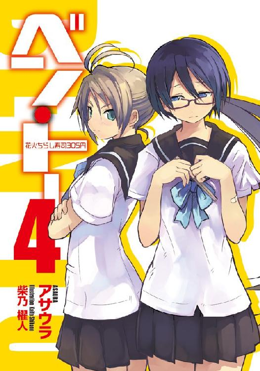
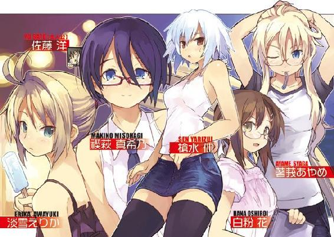
主要登場人物
佐藤 洋（さとう・よう）
烏田高校一年。体力とバカには自信がある。ゲームはセガ派。ハーフプライサー同好会所属。
槍水 仙（やりずい・せん）
烏田高校二年。ハーフプライサー同好会会長。二つ名は『氷結の魔女』。
著莪あやめ（しゃが・あやめ）
丸富大学付属高校一年。佐藤洋と同じ生年月日の従姉。イタリア人の母を持つハーフ。二つ名は『湖の麗人』。
白粉 花（おしろい・はな）
烏田高校一年。小説執筆が趣味な女の子。ライトノベル研究会とハーフプライサー同好会に所属。実は一部ネットでは名が知られた存在だったりする。
淡雪えりか（あわゆき・えりか）
中学三年生。両親の仕事をよく手伝っている気の強い娘。水泳部所属。
禊萩真希乃（みそはぎ・まきの）
中学三年生。存在感がやや薄い、運動が得意な娘。水泳部所属。一部では有名な狼。二つ名は『ギリー・ドゥー』。
森丘太蔵（もりおか・たいぞう）
革コートを羽織る筋肉質の高校三年生の狼。彼の服装等は全て彼女のアンの趣味。二つ名は『ナックラヴィー』
アン
高校一年。妖艶な雰囲気を持つ美女の狼。小学生の時に二つ年上の森丘に告白して以来ずっとラブラブ。
井ノ上あせび（いのうえ・あせび）
今でも時々父親と一緒にお風呂に入る丸富大学付属高校一年生。それを人に言うと必ず驚かれるが、何故そうなるのか本人はいまだによくわかっていない。かわいそうな子。
鳥羽藤雄（とりわ・ふじゆう）
たくましいスカイダイバー。かの事件より数カ月。彼はかつての日常を取り戻していたが、恩師との再会によって再び大きな運命の渦に巻き込まれることとなる。――今、世界を股にかけた壮大な事件の幕が上がる。
イラスト／柴乃櫂人
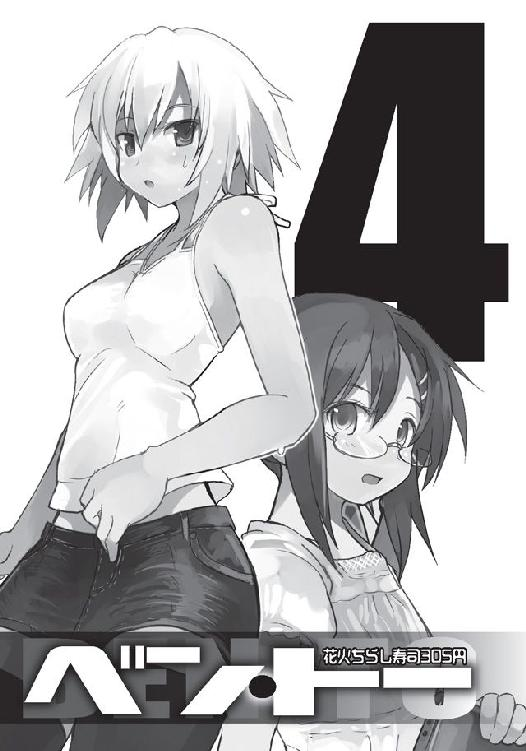
需要と供給、これら二つは商売における絶対の要素である。
これら二つの要素が寄り添う販売バランスのクロスポイント......その前後に於いて必ず発生するかすかな、ずれ。
その僅かな領域に生きる者たちがいる。
己の資金、生活、そして誇りを懸けてカオスと化す極狭領域を狩り場とする者たち。
――人は彼らを《狼》と呼んだ。
１章 企業戦士サラリーマン
「己の甘さに気が付いたか、狼よ！」
レッド
０
『彼』は自らをとある名称で呼ぶことを好んだ。
それは『ビジネスマン』と似たような言葉だが、イメージは大きく違っていた。
ビジネスという言葉にはどこか冷たい印象がつきまとう。「誰それとはビジネスライクな関係」「これはただのビジネスだ」等々映画等ではよく聞く台詞だが、それには暗に〝仕方なくやっている〟というどこかドライで、ネガティブな意味が込められている。
しかし『彼』が好む名称にそれはない。むしろ逆にその由来を知れば多くの人は尊敬の念を抱くだろうし、当の本人たちは揺るぎない誇りを胸に宿すことは間違いなかった。
それは現在では俸給や給料といった言葉であるが、由来はスナック菓子のサラダ味と同じように、ラテン語の『塩（sal）』という言葉、及びその塩が通貨的な役割を果たしていた時代の古代ローマ、その兵士にまで遡ることができる。
つまり、『彼』は兵士......それも世界を相手に経済市場という戦場を駆け抜ける戦士である。それは大仰な表現ではない。軍隊を持たぬ日本。その日本を他国からの侵略等から守り、栄えさせているのは経済力にほかならない。そしてその日本の経済力を支えているのは数々の企業であり、そこに勤める者たちなのだ。自らが生まれし国を、愛すべき人々を、あらゆるものから守り、栄えさせている......その自負が『彼』にはある。
だからこそ『彼』は毎朝ネクタイを締める時にいつも銃に弾を込めるような緊張感を持って行っているのだ。装備の手入れを怠る者はいずれ戦場で己から吹き出す赤いものを見ることとなる。それが血であるか数字であるか......古代ローマと現代の違いはそれだけだった。
その日もまた『彼』はいつものように電車に揺られていた。自分だけしかいない、前から三番目の車両、四人がけのボックスシートに一人缶コーヒーを手に、窓を流れ行く緑豊かな早朝の景色をゆったりと眺める。それが彼の朝の日常であり、贅沢のようなものだった。
今はまだのどかな田舎の光景だが、もう少しすればそれはゆっくりと都会の灰色の景色へと変わっていく。それは見る者の体を自然と戦いに備えさせてくれる不思議な効力があった。
『彼』が都市部に仕事を持ちながら田舎の実家に住み続ける二つの理由のうち一つがそれだ。都会ではこうはいくまい。オフはきちんとリラックスし、いざ出社となれば合戦に向かう武者がごとくに気を入れる。彼にとって電車はそのスイッチなのだ。
電車が幾度か駅に止まり、三両目には『彼』の他に四人の乗客が追加された。
皺一つない細身の高級スーツを見事に着こなしているクールガイ、ジーンズに独特のセンスのＴシャツを着て雑誌を読む男、そして車両内で紅一点のキャリアウーマン風の女、あと安物のスーツを着た地味な男......いつものメンバーだった。誰一人として名を知りはしないが『彼』は親しみと信頼を込めて順に《ブルー》《イエロー》《ピンク》《グリーン》と呼んでいた。無論、自称リーダーである『彼』自身は《レッド》である。それを示すかのように毎日『彼』の胸ポケットからは赤いハンカチが顔を覗かせていた。
それぞれが一人で四人がけのボックスシートを占領し、各々の趣味や仕事をしたり、ただ窓からの景色を眺めていたりして、誰かと関わり合いを持とうとはしない。
一見では全員、ただの他人......しかし『彼』を含めた五人は固い絆で結ばれている。
戦友という、目には見えぬ、絶対的な絆だった。
それを証明するかのように、『彼』らはある瞬間にほぼ同時に席を立ち、一つの乗降口に無言のまま集合する。各自の荷物は座席に置いたままで、だ。
電車が減速し、駅へと近づいていくに従い五人の間に緊張が走り、表情が硬くなる。
『彼』はこの瞬間が大好きだった。これから起こるバトルへの緊張感、そして敵にして味方である戦友たちとの一体感がたまらない。
『彼』は仲間たちの顔を見やり、満足げに頷いた。
皆、昨年よりもはるかに研ぎ澄まされている。日々、切磋琢磨し続けた結果だ。これなら今年は勝てるはずだ、あの男が率いる若造どもに。去年のように空腹に震えはすまい。
巷では《魔導士》と呼ばれるあの男......噂によれば最強とさえ呼ばれているかの男。そして、配下の魔女をはじめとしたクソガキども。
スーパーマーケットでどれだけ名を馳せようとここは俺たちの領域だ。昨年は油断したが、二度目はない。......世界を相手に戦う大人の力を思い知らせてやる。
乗降口のドアが開く。その瞬間、電車から飢えた獣たちが弾丸の如く飛び出していった。
『彼』らは世界を相手に戦いし現代日本を背負って立つ社会人。互いに名も知らぬ、生き方も知らぬ、だが一時だけ鉄よりも固い結束を有する戦士にして、史上最速の獣の群れ。
『彼』、自称レッドは自分たち五人を――《企業戦士 サラリーマン》と呼んだ。
１
夏休みである。人はその言葉にどれだけの希望を馳せることができるのか。春休みや盆休み、そして冬休みには存在しない充ち満ちたエネルギーを感じられるその言葉......誰もが聞くだけで体がうずうずしてくるはずだ。もちろん僕、佐藤洋もまた、その一人である。
夏休み突入直後は、寝込んでいた従姉の著莪あやめを看病していたせいで、やや出遅れてしまったが、そんなものは些細なことだ。彼女の体調が戻るなり、男子寮に戻り、遅れを取り戻そうと僕は即座に行動を開始する。せっかくの休みにネットでロシア美人のエロ画像収集に時間を費やしていた男子寮の同級生ら五人を遊びに誘ったのだ。
無論、そこいらの公園でのキャッチボールや、ナウなヤングにバカウケなボウリングなどではない。特定の目的のためには人生の中で最も無駄な行動力を発揮する男子高校生の僕らが、そんなお遊びで満足できるはずもない。僕らが向かったのはうら若き男女が肌を露出し合い、同じ空間で楽しい一時を送る楽園......そう、市民プールである。
僕が誘うと彼らは目を見開いた。烏田高校ではプール授業がないせいで意外と盲点になりやすく、また地方出身者には市民プールという概念そのものがそもそも頭になかったので無理はなかった。実際、寝込んでいた著莪が「そういえばウチの学校、去年プール改築してさ、凄い立派になったらしいんだよね」とか言わなければ僕とて、学校にプールがなくても他の場所にはあるのではないか、という発想に思い至らなかっただろう。
ロシア美人の脇のエロさは異常とかマニアックなことを言っている場合じゃない、エデンはすぐそこにある。その事実を知った彼ら五人は一斉にパソコンの電源を切った。
僕は「四〇秒で支度しな！」と叫んだものの、彼らは訓練された犬がごとく瞬時に行動を開始し、二五秒で出撃準備を完了させ、四〇秒に達した段階ですでに野外を闊歩していた。その様はまさに一九四〇年のナチスドイツのフランス侵攻を思わせる破竹の勢いだった。
プールへ向かう途中、公園に茂る木々が生を謳歌するかのように青葉を穏やかに揺らし、その下で小さな子供たちが弾けるような笑顔で遊び回っていた。その様はまさに心休まる平和な光景だった。だが、傍らを行く僕らにはその光景に顔を綻ばせる余裕はない。
僕らは決戦に向かう若武者がごとく、徒党を組みて突き進んだ。肩をいからせ、大股で、遮るものあればこれを斬る、と言わんばかりに気炎を上げていた。寮を出る段階ですでに水着を装着していた矢部君を例に挙げるまでもなく、実際、あの時僕らの行く手を阻止しようとする輩がいたら手段を選ばずにそれを殲滅していたであろうことは間違いなかった。
直射日光下での三キロの行軍の末、僕らは入場料の二八〇円を叩きつけるようにカウンターに置き、更衣室で服を脱ぎ捨て、いざ戦場――プールへと向う。
六人全員が意気軒昂、性を謳歌せんと固く拳を握りしめた両腕を揺らし、不敵な笑みを浮かべて突き進む。その様はまさに心高ぶる修羅の光景であった。
途中、明らかに蔵田君の装着している物が水着ではなく、ただのボクサーパンツだと全員が気づいたがそんなことは僕らにとって些細な問題でしかなかった。最近太ったという神田君のブーメランパンツが肉に喰い込み、遠目からは全裸に見えるかもしれないという危険性にも僕らはあえて目を瞑った。人生短し恋せよ乙女、乙女じゃないが僕らにも同じことが言えるのだ。青春という刹那の中にあって「やめろ、お前たちの姿は危険過ぎる！」とツッコミを入れている暇などない。そもそも彼らが捕まろうが何されようが所詮は他人事、自分が夏をエンジョイできれば仲間がどうなろうと知ったことではない。僕らは誰一人として共産主義者ではない。マルクスとエンゲルスが何を叫ぼうが最終的に自分一人が女の子に囲まれてハーレム・エンドを迎えることができるのならば世界の大半が滅ぼうとも知ったことではなかった。所詮人間は一人、自己の利益のために他者が何人苦しもうが構わない――僕らは資本主義の申し子だ。厳しき競争社会、いや、弱肉強食の生存競争のこの世の中で生きていくためには仲間意識など足かせに過ぎない、必要とあらば味方とて切り捨てるべきなのだ。
決死の覚悟を胸に抱きし行進、仲間の犠牲すら厭わぬ行進......いや、もはやそれは進撃と呼ぶに相応しい僕らの足並みを果たして誰が止められようか。まだ戦場に突入してさえいないのに、僕らは全員が勝利を確信し、そして......プール脇で全員が絶望して膝をついた。
......まぁ、何というか......プールにご老人しかいないっていう......。
いやね、確かに遠目から見ても小さいなぁ、古くて汚いなぁ、というのはわかっていたんだけど......おまけにプールの入り口に『本日シニア割引ＤＡＹ』とか張り紙があったんだけど......ぶっちゃけドラッグをキめたみたいにテンションの高かった僕らにはあの時すでに現実を見失っていたのかもしれない。プールに行けば美女と触れ合えると信じて疑っていなかった。先入観の恐ろしさをまざまざと見せつけられた気がした。
僕らは愕然として楽しげに泳ぐお爺さんとお婆さんを眺める。ある意味本当の意味で天国に近い場所だなぁ、とか不謹慎なことを考えながら、僕らは後悔と混乱に苛まれていた。
何が資本主義の申し子だ、大切な友達を犠牲にしてまで僕らは一体何を得ようとしていたのか、そもそも僕らは一体何をしたかったのか、何をするために僕らはプールに来たのか、どうしてこの世から戦争がなくならないのか、人々が生きる意味とは何か、莫大な制作費をかけたセガの『シェンムー』の完結編はいつ発売されるのか......全てが、わからなくなっていた。
帰宅途中、公園に茂る青葉揺れる木々の下、小学生たちが男女入り交じって楽しそうに遊んでいた。平和を象徴するかのような弾ける笑顔、楽しげに声を掛け合う友、一片のいやらしさもなく手を取り合う少年と少女......僕らにもあんな幸せな時があったのだろうか......？
荒んだ心の僕たちには、もう、思い出すことはできなかった――。
――BAD END――
さて、そんな夏休みを開始した僕にもついに起死回生のチャンスが訪れようとしていた。『夏の始まりにバッドエンド事件』と名付けられた悲劇より一週間...これからが僕の本当の夏休みだといっても過言ではない。そう、『ＨＰ同好会強化合宿二泊三日ＩＮ夏休み』である。
メンバーが僕を含めてたった三人。残りの二人はどちらも女性となればすでにロマンチックが迸りまくって月に到達せんばかりの勢いである。両親とイタリアに行った著莪が、帰国後に途中合流するというのが不満といえば不満だが、先輩が許可を出した以上仕方あるまい。
僕が彼女のお見舞いに行った際、合宿について――というか京都の学校に進学したという槍水先輩のご友人の山田さんについて――口にしたのが失敗だった。まさかトイレから戻ってきたら「あ、佐藤。合宿アタシも行くから。魔女からは許可貰った、今」とか携帯を手にニヤっと笑って言われた時は愕然としたものだった。この手のイベント好きな著莪の性格をもっと踏まえて慎重に発言すべきだったが......もう後の祭りだ。彼女が来襲するまでに夏をエンジョイしてやろう、と僕は心に決めた。
「......さて、行くか」
僕はＴシャツにカーゴパンツを穿き、鞄を手に寮を出る。夏空の下とはいえ始発前の時間帯のため、涼しく、心地良かった。
果たして駅に到着してみれば、やはり時間帯のせいか、平日だが閑散としている。疎らに行き交う人々、駅前に止まっている数台のタクシー、電線の上の雀たち......そんな程度だ。
少し早すぎたかなと思いつつ辺りを見渡していると、何やら視線を感じる。そちらを見やれば......何故か自動販売機の陰から顔を半分だけ出してこちらを窺っている女の子が......。
前髪をヘアピンで分け、後ろ髪をリボンでまとめた小動物のような彼女は、同級生のＨＰ同好会メンバー、白粉花だ。
「......なにしてんの？」
「いえ、その......あ......お、おはようございます。お久しぶりで......あ、でも一〇日ぶりぐらいだと言わないのかな、えぁっとその......」
僕が声をかけてもなお、何故か彼女はおろおろしつつ、自動販売機の陰から出てこようとしない。その何かに怯えるような仕草は本当に小動物っぽかった。
しばし無言のまま距離を取って見つめ合った僕ら。意を決したように白粉は一人頷くと、ちょこちょこっとネズミかリスのような動きでようやく姿を現す。
どうしたの？ と僕が尋ねるが、彼女は「いえ、その、服が......」とよくわからないことを口にした。彼女は柔らかそうな素材のチュニックにハーフパンツを穿き、足はサンダル、そして手にボストンバッグという装いだ。シンプルで可愛らしく、彼女によく似合っていた。
そういえば以前、休日に白粉と会った際、着る服に迷った挙げ句わざわざ制服を着てきたことがあったっけ。実際、彼女の私服を見たのはこれが初めてのはずだ。
僕は少し苦笑しつつ、似合っているよ、と短く告げた。
「え？ あ、ありがとうございます。で、でも無理して褒めてくれなくてもいいですよ？ あの、えぁっと、その......み、見苦しいなら見苦しいと！」
「そこで卑屈になるなよ」
何故彼女はこうも不安げなのだろう？ もっと自分に自信を持ってもいいだろうに。
「ん、少し遅れたか？」
苦笑いしていると聞き慣れた声がした。見るまでもなくそれが烏田高校二年、ＨＰ同好会の会長、槍水仙だと僕にはわかる。
僕が「丁度いいぐらいですよ」と言いつつ声の方を見る。そこにはいつものようにキリッとした目つき、肩口ぐらいまでの髪をワイルドに、しかし丁寧に整えた槍水先輩が鞄を手にこちらに向かってきていた。ホルターネックのトップにデニム生地のミニスカート、そこにいつもと違って黒いニーソが組み合わされていた。ブーツだけはいつもと同じだ。
「それじゃとりあえずホームまで行こう。今回の合宿について説明する」
槍水先輩は言うと先頭になって歩いていく。目線が思わず下にいきそうになるのだが......彼女の後ろをついていく僕は重大な事実に気がついてしまったのだった。
先輩の背中がえらいことになっている。キャミソールのそれと違ってホルターネックは露出が少し多くなるものだが......先輩は思いっきり肌を晒していた。本来ブラの後ろ紐があるような所はもちろん、ウエスト半ばの所までガバっと背中を......。
「......白粉、先輩のアレ、ブラはどうなっていると思う？」
普通、女性に対しては訊かないことを躊躇わず僕は口にした。白粉相手なら、気にしない。
「さ、さぁ？ ヌーブラとかパッドとか......あとは服がカップ付きでブラは付けてないとか」
おいおいジョニー、僕は一体どうしたらいい？ 先輩は夏をエンジョイする気満々ですぞ？
僕は思わずその場にいない男の名を呼び、自然と謙譲語で半疑問形の意味のわからない言葉を発した。無論、胸の内で。
改札を抜け、ホームの椅子に荷物を置くと、僕はできるだけいやらしさが混じらないようにして、言う。
「先輩、今日の服、素敵ですね」
ん？ と先輩は声を出すと僕や白粉から視線を外して、はにかむように小さく笑った。
「この前、遊びに行った時に友達に見立ててもらったんだ。ちょっと自分には派手かと思っていたんだが。......そうか、良かった」
お友達ＧＪ！ 先輩は良い友人をお持ちのようだ。ただ露出が多いだけではなく、先輩によく似合い、格好良く......何より彼女のその大胆な背中が見る者の想像力をかき立てて止まない。何かと規制が厳しくなっていく昨今......これからは着エロの時代だと、僕は確信した。
「まぁ、私のことは別にいい。今回の合宿について説明しよう」
以前にも簡単に話したと思うが、と先輩は前置きをして合宿の概略を説明し始める。
何でも今回向かう場所では現在お祭りの真っ最中。それはスーパーの総菜及び弁当コーナーにおいては鬼門とされる時期だという。というのもお祭りには屋台があり、これの影響により総菜・弁当の売り上げが大きく落ちてしまうのだそうだ。
「まぁ、刺身やなんかは逆によく売れるそうだがな。あとは飲料系か」
「なるほど。それでライバルが少ない時期を狙い、そこの弁当をおいしく頂いてしまおう、と、そういうわけですね？」
ペチッと先輩に額を軽く叩かれる。
「それじゃ強化合宿の意味がないだろう。......逆なんだ、佐藤。そう、確かに一般の客は少なくなる。だから、さして利益にならないと判断して総菜、弁当の手を抜く店もある。だが、そんな弱気ではない店はどうすると思う？ ......そうだ、むしろ本気で攻めてくる！ 屋台の出来たての料理にも負けないような、そんな高いクオリティの弁当をプロのプライドを懸けて出してくるんだ。これから向かう土地にはそんな英傑たちが治めるスーパーが二店、ある。
また、ここの弁当をただ獲るというわけにはいかない。何故ならこの時期、地方から無数の狼がその土地に集結する。いつからそうなったものなのかは私も知らないが、これから向かう土地はそういう場なんだ。名うての狼が集う、その話に引かれてさらに狼たちが集い、さらにそれによって引き寄せられる者たちが......というわけだな。
特に実質的に祭りの最後を飾る、花火大会の夜の弁当を手に入れることには特別な意味があるんだ。......お、電車が来たな。続きは中で話そう」
先輩が話を切ると、僕たちはホームに進入してきた電車に乗る。始発ということもあって誰もいない。僕らは余裕を持って三人で座席に着く。
「話はだいたいわかったんですけど......それと始発電車に乗る関係がよくわかんないんですが。いえ、混むからというのはわかるんですけど、それにしても......」
ネットで目的地を調べてみたのだが、始発で出なくてはならないほど遠い場所というわけでもない。しかも先に聞かされていた先輩の旅行プランでは微妙に遠回りをするルートを通っているのだけれど、どこかに寄って観光するというわけでもなさそうだった。
先輩はフフンっと鼻を鳴らし、得意げに微笑んだ。
「二人とも、言った通りに朝食は抜いてきただろうな？ 今回は強化合宿だ。普段のそれとは違う経験をお前たちに積んでもらうのが最初の合宿予定だ。
......あとしばらくすればわかる。お前たちの知る半額弁当争奪戦の領域とは違う、別種の弁当争奪戦の領域があることを。......そして、そこには恐ろしい強敵が潜んでいることを」
「別種の領域に、恐ろしい強敵......？ そこを縄張りにする二つ名付きの狼ですか」
いや、と先輩は首を振り、彼女は僕の目を見つめて一言述べた。
「敵は、お前だ」
......あれから僕らは一度電車を乗り換えた。今度はさっきまでの横一列のシートではなく、地方でよく見る四人がけのボックスシートタイプだ。
そこで......幸か不幸か、僕は先輩の対面に座ってしまったのだった。
「――故に、敵は自分自身だということがより一層強調される場なんだ」
先輩は引き続き、何故遠回りしたのか、何故敵は僕なのかを説明してくれていたのだが......正直、あまりその言葉が僕の耳に入ってこない。普段、部室で過ごす時は大きな円卓があるので気づかなかったが、先輩は椅子に座る際には足を組むのが癖らしい。だから、当然今回も先輩は平然と足を組んで座席に座っているのだが......正直そんなものを目の前に突きつけられようものなら彼女がいくら熱弁をふるってくれたとしても全然頭に入ってこず、如何に彼女に感づかれずに注視できるか、僕は、理性と欲望の激しいバトルを繰り広げるばかりだった。
「だから、私はさっき〝敵はお前だ〟と言ったわけだ。これから行われる戦いは自分自身との戦い......つまりはそういうことだ。わかったか？」
「......はい。よくわかりました」
微妙な笑みを浮かべながら、僕は適当に応じる。
先輩には悪いが、こちらはとっくに自分自身とのバトルを繰り広げ続けているのだ。
激しい、何と激しい戦いかっ！ く、くそう、ミニスカートから露出している先輩の足が――素肌とニーソの境目のプニっとした太ももの具合が気になってしょうがない！
その時、不意に先輩と目が合う。その瞬間、自分の笑顔が固まるのを、まるで他人事のように僕は感じていた。心の中で「しまったああぁぁぁあ!!」と絶叫する。
「どうやら気合いは十分そうだな。まるで獲物を見る狙撃手のような目つきじゃないか」
クスリと笑う先輩に、僕は魂が抜けそうになるぐらい安堵した。
●
車窓からの日射しに、あの時もこんな天気だったな、とレッドは思い出す。
待ちあぐねた週末、その最後に立ち塞がる金曜日という高い壁と、それを吹き飛ばすかのように晴れ渡る空、そして丁度一年......だからなのか、あの連中の到来を予感してしまうのは。
彼はちらりと車両内を見渡す。仲間の四人、彼らもまた同様の予感を抱いているのは間違いない。グリーンは汚れを気にしなくてもいいようにいつにも増してくたびれた安物のスーツを着ていたし、逆にビシッと決めているブルーは細い青のストライプが入ったスーツに『ジョジョの奇妙な冒険』のグッズである吉良吉影の髑髏ネクタイを合わせ、殺意にも似た闘志を静かに燃やしている。ピンクに至っては薄いシャツからかすかに透けて見える黒い下着を装着するといった気合いの入りようだ。薄着になるこの季節、毎日のようにピンクを凝視しているレッドには間違いなく勝負下着だとわかった。あとは相変わらずどこで売っているのかわからない『らん☆らん☆る〜♪』とかかれた黄色のシャツを着たイエローだが......一見は普段通りである。だが、実際彼が一番気合いを入れているとレッドは思っていた。何故なら、彼が最近電車で読み始めた本は『土佐犬の飼い方 ―大きな愛で抱きしめて―』である。うっすら獣臭がするぐらいに戦闘欲求が充ち満ちて、ちょっと溢れ出ているといっても過言ではない。
「頼もしい連中だぜ、まったく」
レッドが満足げに一言呟く。しかし、だからといって安心はしていられない。もし、かの連中をはじめとした余所者が現れないのなら、レッドが仲間と呼ぶ彼らは敵になる。即ち頼もしければ頼もしいだけ、強敵に成りえるということだった。
電車がトンネルに突入する。窓が鏡のようになり、レッドの姿を映した。それを見ながら少しだけ曲がっていたネクタイを直し、胸ポケットのハンカチの出方を調整する。身だしなみのだらしなさは即ち心の緩みであり、何より社会人にとってスーツというのは戦闘服だ。それをきちんと装着しないというのは、兵士が銃を錆びさせるのと同義だった。
特に今日は身だしなみに気をつかった。あの連中の到来を予感したこともあるが、他にも今日は重要な会議があるのだ。彼が関わってきた中でも一番大きなプロジェクトであり、かつ、そのリーダーにも選抜されている。他社のお偉いさんを呼んでのプレゼンテーション、今後のサラリーマン人生を左右するといっても過言ではない会議だった。
自らの胃をコーヒー漬けにして、朝までかかって作った資料も完璧だ。これでネクタイが曲がっていたらまさに画竜点睛を欠く、だ。
電車がトンネルを抜け、再び太陽の下に出る。それから幾ばくか。レッドの準備が終わる頃には電車は大きな駅へと減速しつつ進入する。
企業戦士サラリーマンたちは誰からともなく立ち上がり、乗降口へと向かった。
仲間たちに囲まれたレッドは腕時計のタイマーをセット。九二秒。その長いようで短い、短いようで長い時間は、彼ら企業戦士サラリーマンにとっては特別な意味を持つ時間だった。
カップ麺が完成するまでの時間、エレベーターを待つ時間、次の電車が来るまでの時間、煙草で一服する時間......そんな日常の中で何気なく消費されてしまう、さして価値のないような短い時間だ。しかし......彼らの朝においては己の全てを懸けた運命の時間にほかならない。
あれは......、と、ブルーが呟く。その声にレッドは時計から顔を上げた。
乗降口ドアの向こう、ホームの反対側に自分たちとは逆方向からほぼ同時に進入してきた電車......そこに昨年見た、魔女が、いた。
来た。奴らが来た。ついに、やってきた。思わずレッドは両方の拳を硬く握りしめる。魔導士の姿は見えないが、大きな問題ではない。昨年のリベンジマッチには変わりなかった。
メンツが減っている。しかも変わってもいる。魔女以外は新入りだろうか。一人は内気そうな小柄な少女で、もう一人は未だに気合い次第で『かめはめ波』が出せると本気で信じているであろうバカそうな顔をした少年だった。前者はともかく、後者のバカなそうな少年は強敵となるかもしれないとレッドは読む。Ｔシャツからわずかに覗かせる腕やシャツの凹凸というわずかな情報から、派手ではないが鍛えられたボディをしているとわかる。しかも重さを感じさせない、無駄なく絞っているという気配だ。面白くなりそうだ、レッドは一人ほくそ笑む。
名も知らぬ、何処に住んでいるかも知らぬ......ただ等しく弁当を求める者たち。
それだけの関係の八人が、二枚の扉とホームを挟んで顔を合わせている。それは邂逅なのか、運命の出会いなのか。これから駆ける彼らにはわかりはしない。ただわかっているのは、誰よりも早く駆ければそこに弁当があり、駆けなければ全て終わるということだけだった。
両方の電車ともまだ止まらない。ゆっくり、ゆっくりと速度を落としていく――。
○
先輩の説明が終わると、僕らは時折景色のことなんかを喋るだけで時間を過ごしていった。都会から田舎へと向かっていく電車はゆりかごのように優しく僕らを揺らし、クーラーが効いているおかげで真夏とはいえ車両内は快適だった。窓からの日射しが当たる腕でさえ、暑いけれど、どこか気持ちが良い。
「......うぅ......」
しばらく揺られていると先輩の隣に座っている白粉が少しうとうととし始める。電車の揺れは不思議と眠気を誘うが、彼女の場合は単に朝が弱いのだろう。
「白粉、寝るのは弁当を手に入れてからにしろ。寝起きでは動きが鈍くなる上、腹の虫の力が低下するぞ。もうすぐだ。中途半端な気合いでは自分はもちろん、アイツらにも勝てないぞ」
あ、はい、と口にしつつ白粉は目をこすり、僕は首を捻る。
「アイツら？」
「さっき言っただろう。あの弁当を狙ってくる五人の社会人だ」
先輩が言うあの弁当というのは、全国的に見ても珍しいお粥の弁当だと、先ほど教えてくれた。何でも平日の朝だけ販売する、通勤するサラリーマンを狙った癒しの弁当だという。
ただ、お粥という料理の特性上、長時間の作り置きができないため、少数で、しかも朝の六時から七時までの限定販売なのだという。先輩が始発での出発に拘ったのはそれが理由だった。
ただそれでも到着時には販売時間ギリギリで、手に入れられるかは運の要素も絡むという厳しい条件がついている。最悪、到着した時点で在庫ゼロの可能性も否定はできないのだ。
「彼らは恐らく仲間というわけではないのだろう。だが、彼らは我々のような余所者がやってきた時には手を組み、こちらの行動を遮ろうとしてくる。根本的に肉弾戦はないが、激しい鬩ぎ合いになるのは間違いない。寝ている場合じゃないぞ、白粉」
「先輩。その例の弁当って美味いんですか？ 僕、お粥って寝込んだ時に仕方なくって感じでしか食べないので、特別にうまいって思ったことがないんですけど」
「佐藤、いいことを教えてやろう。そのお粥弁当には......栗とエビが入っている」
「......な、なんですって!?」
......お粥に、栗と......エビだって？ 日本のお粥にはあまり見かけないトッピングだが、どちらも日本人の好物じゃないか。秋の風物詩の栗......季節を先取りする優越感も最高だが、エビもいい。かのカップヌードル開発の際に、日本人の誰もが好きな具材として選抜された歴史からもわかるように、我々に働きかけてくるエビの求心力は計り知れない。
「柔らかなお粥に、それら具材、そしてさらにシラスと練り梅が付属する。早朝の空っぽの胃袋を優しく癒してくれる弁当だ。......朝食を抜くという過酷なことをお前たちに強要したのは是非ともお前たちにこれを獲ってもらいたいがためだ。悪く思わないでほしい」
なるほど......その弁当の味を疑った僕がバカだったというわけか......。先輩の話を聞き、頭の中でそのお粥弁当のイメージがぼんやりと浮かぶ。すると腹の虫が徐々に活発化していく......。昨夜の夕食からすでに一〇時間以上......空腹具合はなかなかだ。
「さっきも言ったが、だからといってそれにばかり固執していては大きな後悔になる。それを忘れるな。......駅が見えてきたな。佐藤、白粉、行くぞ。これから先の一分半は辛い戦いになる。気を抜くな」
荷をそのままに、僕らは先輩とともに乗降口へと向かった。電車は減速を開始。四階建てほどの大きな駅、そのホームへゆっくり進入していく。
乗降口の扉の向こう、ホームの反対側には逆方向からの電車がほぼ同時に進入してくる。
二台の電車がゆっくりと、静かに停車。その時、僕らの正面に位置する対向電車の乗降口に、五人の人影があった。彼らが先輩の言っていた連中だと目つきと気配ですぐにわかる。
全員やり手の雰囲気だ。特に一人――胸ポケットから覗かせているスカーフのような薄い赤いハンカチがそう思わせるのか――どこか一昔前のヒーロー風というか、デパートの屋上で行われるヒーローショーとかにいまだに行っていそうな男が半端ではない闘志を放っていた。
そいつはドアの向こうで腕時計から目線を上げると、僕らを見てくる。恐らく、彼がリーダー格なのだろう。眼力にはそう感じさせるほどの力強さがある。どことなくバカそうな顔をしているが、強敵であることに間違いはないだろう。
両の電車の扉が、プシューっと音を立て......開く。
「「――行くぞ！」」
先輩とあの赤ハンカチの男が同時に叫びを上げた。
その瞬間僕を含めた八人はスターターを鳴らされたランナーのようにホームへと飛び出す。
直に顔を会わす三人と五人。僕らは互いに何を語るでもなく、すぐさま首を跨線橋の階段へと向け、そちらに向かって全員が発走する。
一分半と少し......九二秒の戦いが始まった。それはこのホームに電車が停車している時間だった。そのわずかな時間に僕らはホームから続く階段を駆け上り、跨線橋を走り抜き、駅舎内二階の改札口横にある売店まで行き、弁当を買い、そして戻らなくてはならない。
それがスーパーマーケットという名の〝バトルフィールド〟で戦っている僕ら狼とは違う、別種の獣が日々鎬を削る、駅という名の〝サーキット〟だった。
駅によっては戦闘が行われる場もあるというが、この場は純然たる競争のみで占められているのだという。それというのも物価が安い田舎らしく、この駅もまた無駄に広い造りで、通常の往復移動には約六分（三六〇秒）も必要とする行程であるのに、彼ら、そして僕らはそれを四分の一ほどの時間で行わなくてはならない。それ故に戦闘を仕掛けるよりも速度に全てのウエイトを置いた方が有効であるというのだ。
先輩が今回、ここへ僕らを連れてきた目的がそれだった。土地が変わればそこの掟も微妙に変わる。今回はやや極端な例だが、そういった変化にも対応できるような柔軟性を身につけろ、というのがわざわざ遠回りの路線を選んだ理由なのだそうだ。
八人の獣が階段へと群がった。誰も彼もが先に行こうとして身を小さくして突っこむ。混戦。互いの肩がぶつかり合い、足が蹌踉めきそうになるものの、普段の戦闘のそれに比べればその衝撃ははるかに弱い。階段のステップ上で足を踏ん張り、僕は持ちこたえる。
「え!? 嘘だろ!?」
足を踏ん張り、崩れそうだったのを堪える......それは一瞬の出来事だ。だがその刹那で、僕は自分が一気に出遅れたことに気がつく。青い縦縞スーツの男を筆頭にし、キャリアウーマン、槍水先輩、くたびれたスーツの男、白粉がトップ集団を形成し、すでに階段の中ほどに到達している。それに続くのが前のバカそうな赤ハンカチの男、そして魔法の呪文が書かれた黄色いＴシャツの男......最後に僕である。一瞬の小競り合いで、大きく遅れた。
舌打ちしつつ再び走りだす。先行く彼らを見上げれば、白粉がヤバイ。もちろん彼女の趣味の話じゃない。白粉は今にも階段に手をつきそうな、足下が覚束ない状態で駆け上っていた。恐らく最初の混戦でバランスを崩したまま、まだ持ち直していないのだ。
そこに一段飛ばしで駆け上る赤ハンカチが白粉の真後ろにつく。白粉がその気配を感じたのか一瞬振り返ろうとするも、その瞬間に赤ハンカチが白粉の真横にまで飛ぶようにして駆け上り、ほんのかすかに二人の肩が触れ合った。
うぁっ！ と小さな悲鳴を上げて、白粉は完全にバランスを崩す。彼女は手を着こうとするものの、全力で駆け上っていたのだ、手がうまく段差を捉えられずに派手に転倒する。その横を黄色Ｔシャツが彼女を抜き去っていく。
僕はうつ伏せに倒れた白粉のもとに達すると、彼女の細い腰に腕を回して、脇に挟む。
「す、すみません！」
行こう、と僕は口にしつつ数段駆け上り、ワンテンポ遅らせて彼女を放す。白粉は猫のようにその手足で綺麗に衝撃を吸収。そして次の瞬間全身のバネを使って一気に飛ぶようにして駆け上る。早い。僕の前を行き、黄色Ｔシャツの後に続く。
僕を最後尾として全員が階段を上り切る。この間わずかに九秒。残りは......八三秒。
●
階段を上ればそこは屋根のついた細い通路だ。三人、走っている人間ならせいぜい二人分の幅しかない。そこをレッドは走りつつ、後方から迫ってくる女の子が意外に強敵だと足音で感じ取る。彼女は転倒からすぐさま立ち直り、喰らいついてきた。軽量であるが故に接触等による衝撃には弱そうだが、その分立ち直りと踏み切りがうまい。自分はもちろん、企業戦士サラリーマンの中で最軽量であるピンクとてあそこまでうまく回復はできないだろう。
予想外だ。魔女は当然として、バカそうな少年も危険かもしれないと踏んで最初にあえて強くぶつかって出鼻を挫いたのだが......本当に挫くべきは女の子の方だったのかもしれない。
レッドは即座に次の手に打って出る。彼にイエローが追いつくと、目で合図を送った。
二人は並行に走って道を塞ぐ。後方から迫ってきていた女の子の足音のリズムが明らかに乱れる。抜くに、抜けないのだ。
レッドとイエローは互いの目を見つつ、限界まで速度を上げた。女の子がそれに合わせて速度を上げる......その瞬間、レッドとイエローは同時に速度を落とす。女の子もぶつかりそうになって慌てて速度を落とすのだが......そこで再びレッドとイエローは速度を上げる。
それを複数回繰り返す。女の子は完全に自分のペースを失い、おっかなビックリの歩調となり......最終的にレッドとイエローから距離を置いた。
レッドとイエローは互いの目を見、全力で駆け出す。後方の心配は消えた。一度失ったペースはそう簡単には戻らない。何より近づくとぶつかるかもしれないというプレッシャーを彼女に植えつけることができたはずだ。
技自体は日々のレース中に自然発生したものだがレッドはこの技を〝崩し〟と呼んでいた。
よし、あとは魔女に追いつくだけだ。レッドがそう思った時、後方から女の子とは違う足音が迫ってくる。あの少年だ。チッと舌打ちしたイエローがレッドにアイコンタクト。レッドは頷き、再び並行で走る。〝崩し〟は使えば使うほど、使用者も遅滞する。それは出遅れた少年が迫ってきていることが何よりの証拠だった。多用は避けたかったが、仕方ない。
レッドとイエローが速度を落とす。だが、後方の少年の足音のペースが変わらない。
......直後、嫌な予感がした。
これまで多くの余所者と戦ってきた。〝崩し〟を使えば誰もが先の女の子と同じ反応をする。だが、昨年に一人だけ例外を作った奴がいた。それが、魔導士と呼ばれる男だった。
レッドは冷たい汗を背中に感じる。あの時魔導士は自信ありげな顔で躊躇わずに突っこんできた。無論、激しく接触し、三人ともに大きくバランスを崩した。だが、速度に特化している自分たちとは違い、スーパーという乱戦の中で生き抜いてきた狼はバランスを崩してもなお、走り抜けた。それにはバランス感覚や足腰の強さはもちろん、運の要素が大きい。頭では有効な手段だと考えられても、実行に移すには相当な勇気と実力が必要となる。だが、彼は......最強と謳われる狼は比類無き自信を胸に、それをやってのけたのだ。
こいつもそんな実力者だというのか。レッドとイエローはさらに速度を落とす。だが、後方の足音が怯まない。怯むまで速度を落とさなければ〝崩し〟の意味がない。だが少年は怯まない。レッドとイエローの間のすぐ後ろを変わらないペースで駆けてくる。ついにはレッド、イエローの足と少年の足が擦れ合うほどの距離にまで近づいた。
これ以上は速度を落とせない、落とせば本当にぶつかる、いや、それ以上に二度も〝崩し〟を使っているのだ。さらに遅くなれば転倒しなくとも時間的にマズイ。
何故後方の少年は接触を恐れない？ 全速力で走っている中、二人の足がもつれて転倒すればお互いに絶望的なまでのタイムロスに繋がるというのに、何故それを恐れない？ かの狼には経験と自信があった。では、コイツは？
いっそこのまま速度を上げて走るべきか。無難な選択だ。果たしてそれは最善か？ わからない。何か、何かもっと良い方法があるはずだ。縄張りを余所者に荒らさせず、自分たち全員が安全に弁当を手にする方法が......！
あのお粥弁当は子供にはまだ早い。ストレスと酒、そして今日の自分のようにコーヒーの飲み過ぎで胃を痛めながらもなお、日々戦い続ける企業戦士のためのものだ。大人の食べものなのだ。たとえ在庫が豊富にあったとしても、子供に先に手にされるのは気持ちよくない。
「......な!? 待て！」
イエローが後方から迫る少年の気配に押されるように、一人、わずかに速度を上げた。合図も何もなかったがために二人の並走行が崩れる。レッドは慌てて速度を上げようとするのだが......間に合わない。
わずかに乱れた〝崩し〟。かすかに生まれたレッドとイエローの間......。そこにいきなりさっきの女の子が飛び込んできたのだ。身を小さくし、レッドたちの間を輪くぐりでもするかのようにして頭から突っこんでくる。イエローが短く、うぉっ、と声を上げ、驚き、慌て、そして......バランスを崩した。
女の子がレッドたちを追い抜いた。そして速度を上げたレッドとは対照的にイエローの速度が大きく落ちる。今度はレッドが先行し、イエローとの間に隙間が空いてしまう。
そこに、少年が割り込んできた。さっきの女の子は小柄で、空間を縫うようにして先へ行った。だが少年の体つきではそうはいかない。レッド、イエローと激しく接触しながらもそれでもなお、前へ強引に足を出してくる。前へ、前へ、ただそれしか考えていないように、恐れを知らぬように、少年が駆けてくる。
彼の顔を見てレッドはさっきの回答を得た。コイツ何も考えていない。経験に裏付けされていればこういう時に顔には自信が湧き出る。だが、彼には何もない。ただ必死さがあるだけだった。接触転倒の恐怖を理解していない......いや、ここについてあまり詳しくない......？
取引において一番やっかいな相手......それは損得を正しく理解できないバカだ。言葉を理解しない野生の動物と取引しようとしても不可能なように、取引は互いにある程度の知識レベルが備わって初めて成り立つ。それはこのような状況にも同様に言えた。転倒するリスクを理解できない相手にプレッシャーをかけたとして、意味がないのだ。
こいつまさか、一度の転倒ぐらいどうとでもいいとか思っているのか......？ それがどれほど危険なことか理解できていないとでもいうのか。何という愚かさだ。
レッドは視界の隅で、イエローが転倒するのを捉えた。
○
転倒したとしても二秒もあれば持ち直せると踏んだ僕は、怯まなかった。
赤ハンカチと黄色Ｔシャツが白粉にプレッシャーをかけていたが、僕は逆に怯まないことで彼らにプレッシャーをかけたのだ。チキンレースだ。最初に恐れをなしたのは黄色Ｔシャツ。
よし、崩れた、と僕が喜んだのも束の間......その瞬間にいきなり白粉に先を行かれてしまったのは想定外だったが、まぁいい。
二人の大人たちと肩をぶつけ合いながら走る。次の瞬間、黄色Ｔシャツが転倒した。赤ハンカチが舌打ちをして速度を上げていく。僕は彼と並び、走る。通路の終わりが見えてきた。白粉がやや先行し、赤ハンカチと僕は並んで駅構内へと飛び込む。――合計二四秒。
その駅構内は広大だ。通路がかなり広く、天井も高い。建物は遠目には三階か四階建てぐらいに見えたが、実際には二階建てのようだ。高い位置にある天窓から太陽の光が斜めに差し込んできていて、まるで通路上に光の柱が幾本も立っているように見えた。時間があれば綺麗だ、と感想を持ったかもしれないが、今の僕にはその余裕がない。床のコンディションと行き先を確認するので精一杯だった。僕らは駆ける。右へ左へ、駆け抜ける。
トップ集団である先輩たちの姿は見えないが、白粉の姿は見えた。白粉が迷う素振りを見せないことから多分、彼女には先輩たちの背中が見えるのかもしれない。一応電車の中で道の説明は受けていたが、それだけで迷わず走れるとは思えなかった。
広場に出た。駅ナカが並ぶがほとんどまだ閉まっている。そんな中、怪しげなマスコットキャラの幟が立つ小さな店舗だけが営業中だが、それは改札からは遠い位置だ。目的の売店ではない。通り過ぎる際に見てみるとサンドイッチなどの軽食を扱っているお店らしかった。
「クソ！ やってやる、俺はやってやるぞ！ 見せてやる、俺の全力を!!」
赤ハンカチが鬼気迫るような声で叫ぶ。何か妨害が来るかと思ったが特に何もない。何だ？
僕らはさらに走る。途中、後方の黄色Ｔシャツの足音がふいに消えたことに気がついたが、振り返っている余裕はなかった。
前方からこちらに向かって走ってくる人影を僕の目は捉える。青い縦縞スーツの男と槍水先輩、そしてキャリアウーマンと安物スーツの男だ。彼らは全員手に袋を提げている。弁当屋に到達し、購入し、そして折り返してきたのだ。
「白粉、佐藤、急げ！ 時間がないぞ！」
すれ違いざまに槍水先輩からの檄が飛ぶ。この時点で四〇秒程度が経過していると思うが、まだ余裕は......はっ！ ということはお粥弁当があと三つも残っていないということか!? 赤ハンカチが僕より一歩半ほど前にいるという状況を考えれば......マズイ。
僕は舌打ちしつつ、自分の腹を意識する。腹が減っている。腹の虫が力を与えてくれるはず......だが、この数十秒にわたる激走のせいで空腹が弱まっている。一、二秒でいい、呼吸を整えられれば疲労と相まって急激な空腹が訪れるだろう。だが、今は......どこか空腹が薄い。
腹の虫が力を貸してくれる前に改札口、そして駅弁屋が見えてきた。先を行く白粉が走りながらポケットの中に手を突っこむ。
「お、お粥弁当一つ！」
白粉が声を上げつつ、ポケットから取り出した小銭をカウンターに置く。売店のオバチャンは白粉が「お、おか――」と言った段階ですでに、カウンターウィンドウの中に置いてあったお粥弁当と思しき容器を手にし、袋に詰め込んでいた。おばちゃんはお金をチラリと見やると袋を白粉に手渡す。
「汁ものだから気をつけな！」
はい、と返事をし、白粉が折り返し、駆け、僕らとすれ違う。
僕もまたポケットに手を突っこみ、小銭を取り出す。売店が近づいてくる。駅弁らしく、いろんな弁当があった。海産物を用いた寿司系の弁当をはじめ、ステーキ弁当なんていう豪勢なものまである。それらが数個ずつカウンターウインドウの中に積まれており、それらとともにお粥弁当もまた幾つか......二個、あった。そう、二個だ、二個あるじゃないか。黄色いＴシャツが僕より前ならともかく、これなら買い損ねることはない。先輩は一体何を危惧して急げと言ったのか。時間的にもまだいくらか余裕があるはずだ。全体で九二秒なら単純計算だが、弁当購入の段階で四六秒ならば間に合うのだ。だが、まだ、そこまでじゃない。
赤ハンカチが僕より一足先に出店に到着、お粥弁当を購入し、踵を返す。
「お粥弁当一つ！」
僕がポケットからお金、三五〇円を取り出しつつ叫ぶ。その時すれ違いざまに赤ハンカチが一言だけ口にする。お前の負けだ、と。
「汁ものだから気をつけな！」
オバチャンは白粉の時と同じようにそう言って僕に最後のお粥弁当を手渡してくれる。すぐさま踵を返し、赤ハンカチを追う......追うのだが......二人、共に自然と遅くなる。
「し、しまった！」
僕はこの時になって、ようやく先ほどの槍水先輩の言葉の真意に気がついた。時間がまだ半分程度は残っているはずなのに、何故彼女は急げと、何故時間がないぞ、と言ったのか。簡単だ。帰りは行きよりもずっと時間がかかるのだ。......手に、弁当があるのだから。
「はっはっはっ！ 己の甘さに気が付いたか、狼よ！ お前たちがどれほどスーパーで名を馳せようともこの場では赤子同然なんだぜ！」
僕の前を行く赤ハンカチがヒーロー物の悪役のような勝ち誇った台詞で言った。
確かに彼の言う通りだ。僕は今まで弁当を奪取することを最優先で戦ってきた。スーパーでは弁当を手に取った後は誰からも攻撃されず、悠々とレジへと向かえば良かった。だが、ここではそれが許されない。弁当を手に入れる過程と同じかそれ以上に帰りの道程は過酷なのだ。
僕は小学校で一体何を学んできたというのだろう。先生たちはいつも言っていたじゃないか、家に着くまでが遠足だ、と。最後まで気を抜いてはいけないとするかのアドバイス......どうしてもっと胸に焼き付けておかなかったのか。
「しかもこの状況でお粥弁当を購入したのはお前の大きなミスだ！ 気持ちはわかるが、この状況では決して選んではいけない弁当だった！」
弁当を手から提げている以上、大きく腕を振ることができない上に激しい軌道を取ることもできやしない。どうしても速度を犠牲にせざるを得ない。しかもお粥弁当は店員のおばちゃんが言ったように汁物系であるが故に、その難易度はさらに増して......。
「お前はお粥弁当を欲するあまり、ここが如何なる場所かを見誤ったのだ！ ここはお前たちが普段弁当を求めて乱戦を繰り広げるスーパーではない！ 駅だ、移動における一時的に停車するだけの場......つまり、ここで弁当を欲するあまりに電車に乗り遅れるというのはまさに本末転倒にして愚者の行いそのもの！ ここにおける真の敵は俺たちじゃない、お粥弁当に魅せられ、己の欲望に溺れた弱きその心だ!!」
そうか、そういうことか！ 先輩が電車内で言っていたことは、これかっ!? どれほどお粥弁当を欲したとしても間に合わないと判断した場合は他の弁当、それこそ崩れようのない押し寿司や比較的大きく揺らしても影響の少ないステーキ弁当などを選択すべきであり、それでもなお間に合わないとしたら途中で諦めて電車に戻るべきなのだ。自制心でもって己の欲望、そして腹の虫の活動を抑え込むことこそが勝利への近道......これはまさに食欲こそを力の源とし、自らの腹の虫が欲するままに行動するスーパーの弁当争奪戦とは別次元の領域だ。
槍水先輩は全てを、答えに等しいヒントを与えてくれていた。なのに僕は......それを受け取ることができなかった。それが悔しい。己の欲を抑え込め、そう言われていたのに僕は......先輩のデニムミニの誘惑に気を取られてしまってまともに話を聞いちゃいなかったのだ。食欲だけでなく、性欲すら......僕は、抑えきれなかった......。
「クソッ、だがまだ、負けたわけじゃない！」
僕とさして変わらないタイミングで赤ハンカチもまたお粥弁当を買っている、ならば、まだ、間に合うのだ。彼に追いつきさえすれば......！
僕は腰を落とし、袋を提げている右手を垂らすようなスタイルで走る。パッと見忍者のような走り方だった。走行の衝撃は可能な限り膝と腰をクッションにして打ち消す。弁当は比較的安全だが......歩幅が小さくなるため、速度は上がらない。赤ハンカチに追いつかない。
「ははっ！ いい気迫だ、少年！」
彼が腕時計を見る姿に、僕もまた時間を意識する。どのくらい経った？ 大体五五秒を過ぎたぐらいか？ もう少し？ くそ、慌てたせいで時間感覚が狂ってしまっている。
この状況では今、六〇秒を経過しているとかなりマズイが、果たして......。
●
レッドの腕時計はすでに六四秒をカウントしていた。
普段、うまくいけばこの場を駆け抜ける際には六〇秒はかからない。少年と少女に気を取られ過ぎてあまりにも遅れてしまった。
通常、ここまで遅くなった場合は弁当の売店まで行かず、今日、イエローがしたように、途中にある変なキャラクターが描かれた幟がある売店でサンドイッチを買って電車に戻る。移動距離の短縮、そして衝撃に強いサンドイッチという二つの要素によって電車の出発に間に合わせられる可能性を大幅に高めることができるのだ。
だが今日、レッドは最後まで戦うことを選択した。もしかしたらもうお粥弁当はないかもしれないという大きなリスクを背負ってでもなお、そう選択した。ここでサンドイッチを選択するのは大人の自分が二人の若者との勝負を逃げるかのように思えたのだ。
その戦士の英断ともいえる結果がこの有様である。急ぎに急いではいるが、足は普段のそれを大きく上回る乳酸をため込み、そこになお鞭打って走っている状態だ。この駅以外では取引先へ頭を下げに行く以外に運動しない普段の不摂生さを彼は痛感する。普段以上の運動をするとすぐに全身にガタがくる。酸欠で胸も苦しい。限界の文字が頭を過る。
もはや、あの秘技を使用するしかなかった。あの、勇気と運と、正義と平和を想う心がなければ為し得ない秘技。......成功すれば、多分、間に合う。
六五秒か。レッドはそう口に出し、覚悟を決める。あと二七秒。行きの時と同じ速度では間に合わない。手ぶらの時よりも早く駆けなくてはならない。
「な、に......ろ、六五秒だって!?」
後方からの声。振り向いてみれば可哀想なぐらいに動揺し、絶望的な顔を浮かべた少年だ。それはまるで去っていく主人の背中を見つめている捨てられた犬のようだ。
そんな顔するなよ。レッドは歯噛みした。集中した心が、かき乱される。
彼が田舎の実家に住む二つの理由のうちの一つが、昔から捨て犬や野生で生きられぬ傷ついた動物を見過ごせず、全て拾ってきてしまうことだった。
今、レッドは犬六匹に猫七匹、猪一頭にフクロウが一羽、生活を共にしていた。
都市部ではこれら動物を飼うことは難しい。何より独り身のレッドにとって会社や遊園地等で行われるヒーローショーに行っている間、動物の面倒を見てくれる両親の存在が大きい。
そんなレッドの心に今の少年の顔は、響く。
情けは無用だ、奴は己の欲に溺れたのだから負けて当然だ。レッドは瞼を閉じてそう強く思う。しかし残酷になろうとすればするほど、そんな悪意ある自分の心を嫌悪する気持ちが生まれてくる。確かに勝つことこそが勝負の醍醐味だ。それは間違いない。だが、ここの本当の敵は共に走る彼らではなく、時間と、そして自分自身の弱い心だった。
昨年、かの魔導士にイエローと〝崩し〟を仕掛けたことにより、自分たちは転倒した。大きく時間を失い、敗北の味がするサンドイッチを齧るほかなかった。
魔女を見つけた時、この朝こそがリベンジの刻だと思った。だが、本当にリベンジしたかった相手はいない。代わりに強敵となりそうな少女と少年に〝崩し〟を仕掛けた......。恐らくこういった場は初めての二人に、だ。それさえなければ彼らは無難に弁当を電車内で食べることができたことだろう。なのに自分たちは昨年の復讐のために彼らに当てつけた......。
それは正義の味方として正しい行いだろうか。むしろ、姑息な悪役の行為ではないのか。
子供たちを守り、手本となるような生き方をする。それが我々サラリーマンの......いや、大人の責務だ。だからこそヒーローショーでは誰よりも大きく歓声を上げ、最近多くなった引っ込み思案な子供たちが声を出しやすいように場を盛り上げる。たまに気合いが入りすぎてスタッフの人たちに裏へ連れていかれることもあるが、それぐらいやってこそ、立派な大人だとレッドは信じて疑わない。子供たちの笑顔のためなら、どれだけ怒られても苦にならない。
自分は決して悪役側ではない。立派な大人だ。そして全世界の子供たちの憧れ、企業戦士サラリーマンだ。即ちそれは......そう、ヒーロー。自分はヒーローなのだ。そんな自分が今、一人の少年を見捨てようというのか......。
レッドは胸が苦しくなり、思わず瞼を閉じる。心臓が壊れた玩具のように震える。
閉じた瞼の裏、そこの闇の中に一筋の光が見えた。その光は言う。何を迷うのだ、と。
不思議と濁っていた思考が一瞬にしてクリアになる。
瞼を開いたレッド。彼のその瞳に、迷いはなかった。
「少年よ！ よく聞け、恐らくこのままでは間に合わない！」
「わ、わかってる！ わかってる!!」
「聞くんだ！ 今のままでは絶対に間に合わない。だが、間に合わせる技が一つだけある。極めて難易度が高く、相応の勇気と正義の心がないと勝利に手は届かないだろう」
「......な、何を言っているんだ？」
「弁当を手にした瞬間から我々は敵ではなくなっている。共に自分自身と戦う、同じ道を行く者だ。敵ではない、警戒するな。今から秘技を見せる。もし、君にそれを実行に移す勇気があるのなら......きっと道は開けることだろう」
レッドはただでさえ苦しいのに、後方の少年に目をやりつつ、大声で言った。そして、彼を安心させるかのように微笑んだ。その瞬間、それまであった心の汚れは消え失せ、先ほどまで疲労を感じていた両足がどんどん軽くなっていくのを感じた。
気持ちが良かった。レッドはとてもとても清々しい気持ちだった。きっとそれは己が正しい行いをしているから......そして先ほどまで敵対していた少年にさえ手を差し伸べることができた己の器の大きさに感動しているからだろう。いや、もしかしたらこれほどまでに正義を行う自分を勝利の女神が祝福してくれているからなのかもしれない、とレッドは考え始めた。
天窓から太陽の光が差し込み、広い通路上に幾本もの光の柱が立っているように見える目前の美しい光景が、その証拠のような気がした。この中のどれかはひょっとしたら楽園へ通じるワープゾーンだったりするのかもしれない。......だが、ダメだ。自分は会社へ......電車へ向かわねばならない。何故なら自分は、強きを挫き弱きを助ける正義のヒーロー、世界を相手に戦う企業戦士――サラリーマンだからだ！
「さぁゆくぞ、少年！」
光の柱の間を、レッドは少年とともに駆け抜ける。恐らく今、自分に課せられた使命は彼を無事に電車まで送り届けることだろう。
レッドは背に翼が生えているかのように、全身が軽くなっていくのを感じた。間違いない、自分は女神からの命を受けた天使的な何か。そう、わかりやすくいえばエンジェル的な何かなのだ。何もわかりやすくなっていなかったが今のレッドは気にしない。
耳を澄ませば、ほら、慈愛に満ちた女神の声が聞こえてくる。選ばれし勇者よ、少年を導きなさい......と。御意に、とレッドは口にした。
軽くなる足取り、清らかな心、笑顔になっていく己の顔......天井知らずにテンションが上がっていく......。まるで命を燃やしているかのように体が軽やかに動く。もしかしたら自分はこの瞬間のために生まれてきたのかもしれないな......とレッドは興奮とともに訪れた穏やかな気持ちの中、考え始めていた。
「とくと見よ！ これがその秘技だぁ――――!!」
実際は激しい運動と酸欠が引き起こしたエンドルフィンの過剰分泌による陶酔状態。
いわゆる、ただのランナーズハイだった。
○
いきなり赤ハンカチが異様に高いテンションでわけのわからないことを口走り始め、僕は驚きというか......正直恐怖を覚え始めていた。
こいつは何だ？ バカか？ それとも走っている最中に頭のネジが飛んでしまったのか。
今の彼の状態はもう、何というか......明け方近くまでＳＴＧをやっていた時の親父のテンションのようで......火のついた焼却炉に頭から突っこんだとしてもおかしくないぐらいに、おかしかった。
「な!? バカ、やめろおぉぉぉおおおおおお!!」
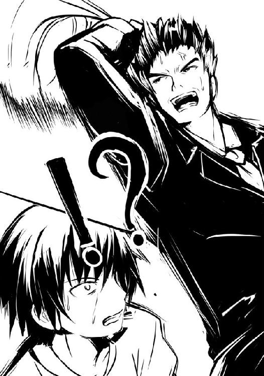
僕は彼の異常が極まったかと思った。赤ハンカチの彼はいきなり手にしていた弁当の袋を頭上で思いっきり振り回し始めたのだ。そんなことをすれば中の弁当がグチャグチャに......。
「......はっ！ そうか、遠心力か!!」
小学校の頃、理科の実験で水の入ったバケツを回すというのがあった。あれは重力よりも遠心力が上回った場合、瞬間的に逆さの状態になったとしても水がこぼれてこないことを見せて、遠心力というものを非常にわかりやすく説明する技だった。......つまり、赤ハンカチはそれの応用をやってみせているのだ。頭上で弁当を横回転させ、走行の衝撃を無効化している。
強く揺らしてはいけないとする袋を振り回す......まさに逆転の発想。仮に思いついたとしても、失敗した瞬間の光景が頭に浮かばないはずはない。
それを実行に移すには凄まじい勇気と思い切りを必要とするだろう。
「少年よ、見ているか、これが正義の力だ!! あと二二秒、共に駆け抜けるぞ！」
僕の前を行く赤ハンカチは大声でそう叫ぶと、ガハハハと笑ってみせた。頭上で弁当をグルングルン回しながら......。
この男、凄い。いろんな意味で。人気のない朝の駅を笑いながら弁当を振り回しつつ全力疾走......傍目からは単独のフーリガンか、ただのパッパラパーのどちらかにしか見えない。
だが、今僕らが置かれた状況では、このレベルをやらなければ間に合わないのだろう。......やるか？ やるしかないか？ 頭の中に失敗した光景が過る。だが、同時にこの弁当を白粉、そして先輩と三人で楽しく食べる光景もまた......過る。僕は覚悟を決めた。
「やってやる、やってやるぞ!! えぇい、ままよ！」
僕は手にしていた袋を......振り回した。頭上で、激しく、激しく、ただ激しく振り回す。そして、走った。袋の中で弁当がどうなっているか、そんなことを考える余裕すらかなぐり捨てて激しく回し、激しく走った。もう走行の揺れなど気にしない。全ての衝撃よりも遠心力が上回り続ければ、弁当は無事でいてくれるはずなのだ。
赤ハンカチと僕は一気に走る速度を上げた。光の柱が立つ通路を抜け、跨線橋に突入する。この時点で、残り一六秒。男二人が、弁当の入った袋を振り回しながら全力疾走する。その光景はきっと凄まじいものがあったのだろう。前を行っていた白粉がチラリと振り返った瞬間「ひっひぃ！」と怯えて短い悲鳴を上げる始末だった。
だがもはや僕はそれを気にしている余裕はない。ただ駆けに駆ける、ひたすら駆ける。
白粉を先頭にして僕らは跨線橋から、その階段へ。白粉は跳躍すると手すりの上にお尻を乗せ、滑り台のようにして一気に下る。なるほど、それなら弁当にもさして衝撃を与えず、そして早く降りることができるだろう。だが、甘い。
「残り四秒だ、行くぞ少年よ、限界まで回せぇ！」
赤ハンカチが叫ぶ。やはりそれしかないだろう、と僕は予想が当たったことで口元に笑みが浮かんだ。
袋を限界ギリギリの勢いで回しつつ......僕らは、飛んだ。
数十段ある階段を......手すりの上を滑る白粉を......その全てを僕と赤ハンカチは飛翔という手段をもって越えていく。傍目からそれは手にした袋をプロペラのようにして文字通りに飛んでいるように見えたかもしれない。
回転速度を落とすことなく、着地。ホームへ。残り三秒。電車の乗降口から先輩が顔を出してこっちを見て叫んでいる。こっちだ来い、と。同時にホームに出発ベルが鳴り響く。
「回転を止めて声の導くままに走れ！ 間に合うぞ電車、行けるぞ会社!!」
何だかヤバイテンションになりつつある赤ハンカチの声を聞きつつ、僕は袋を回していた腕の速度を落とす。恐らくこの技の難しい所はやり始める時の勇気と、回転を止める際の繊細さだろう。僕は袋を回転から振り子のような状態にする。そして回転を止め、両手でしっかりとお粥弁当を抱きかかえる。残り二秒。
赤ハンカチも回転を止め、見事な動きで弁当を手に車両に飛び込む。僕は止める際にもたつき、白粉に追いつかれる。彼女と二人でホームを走る。残り、一秒強。
先輩がいる最寄りの乗降口まであとわずか。だというのに空間が引き延ばされたかのように乗降口までが長い、遠い、果てしない。
だが、駆ける。ただひたすらに、駆ける。僕の心の中から余計なものの全てが洗い流されていく。残るのは何としても電車へ駆け込んでやろうとする鉄の意志。たとえ距離が果てしなくとも、たとえこの体が鉛のように重くとも......走り抜ける！ 駆け抜ける！
乗降口、そして先輩が迫る。彼女は一歩後ろへ下がり、僕らを迎え入れようとする。しかし、その瞬間に出発ベルが、止まる。プッシューの音とともに僕らの目前でドアが動き始める。
ダメか、間に合わない。電車にぶつかる前に僕はブレーキをかけようとした。その時だ。
「諦めるな少年！ 飛べ!!」
赤ハンカチの力強い声。それが鼓膜を震わせた瞬間、僕の胸の中で何かが戦い、何かが砕け散る。それはブレーキをかけようとする弱き心。強き心に身を任せ、僕は足に力を込める。
閉まり行く扉。向こうで「来い！」と叫ぶ槍水先輩。
夏の朝の空気の中、汗玉を飛ばし、弁当を手に、僕と白粉は電車へ――飛んだ。
身を小さくする白粉。その上を僕は弁当を突き出すように身を伸ばす。
弁当が、腕が、頭が、胴が、腰が、太ももが、膝が、足首が、そしてつま先が閉まる扉を掠めるのを感じつつ、僕らは車内へ滑り込んだ。
僕と白粉は絡み合うように床に落ちる。だが二人とも弁当だけは落とすまい、崩すまい、として持った手を高々と掲げていた。......一拍ののち、電車が、走り出す。
乗降口に、僕らの荒い息だけが、響く。白粉を押し倒すにようにして倒れた僕は、しばらく起き上がることができなかった。
「ギリギリ、間に合ったか」
僕らは先輩らの手を借りて立ち上がる。先輩が笑顔でよくやった、と褒めてくれる。
「いえ、白粉はともかく......僕は、彼に助けてもらったようなものですから」
手が、差しのばされた。
「初めての場でありながらあの技を使い、最後まで諦めず、こうして無事にお粥弁当を手に電車に駆け込めた。それは凄いことだぞ。胸を張って良い。......よく駆け抜けたな、少年」
僕は差しのばされた赤ハンカチの手を硬く握りしめ、笑顔で、ありがとうございます、と口にする。彼もまた笑顔だ。戦友、という言葉が頭に浮かんだ。
この時、何故か先輩と白粉が訝しげな顔をしていたが、僕と赤ハンカチは気にせずに互いの健闘を称えながら心地良い疲労と最高の満足感を味わっていた。
●
青いストライプのスーツを着た男が、前から四番目の車両にあるトイレから戻ってくる。丁度その時になって電車は走り出したので、気をつけながら荷物と弁当を置いてある三番目の車両へ戻ってくると、何かいつもと違う、と彼は感じ取った。
いつものようにクールにしつつ、彼は車両内を見渡す。特に普段と違う様子はない。いつものように先ほどまで共に駆けていた者たちがそれぞれ一人でボックスシートを占領し、朝食を摂り始めているだけである。強いて違うことといえば黄色いＴシャツを着た男が珍しくサンドイッチに甘んじているということぐらいか。きっと、どこかで失敗したのだろう。
ふむ、と青いストライプの男は小さく声を漏らしつつ、他の乗客二人の様子を窺う。どこか清々しい顔をしている女、くたびれた安物スーツを着ている男、二人とも弁当を食べる準備を進めているだけで、特に変わりはない。
彼は自席に戻り、何か違和感を覚えた。いつもは感じる嫌な視線がない。
「あぁ、あのバカ、乗り遅れたのか」
チラリと見やれば誰もいないボックスシートに書類があふれ出しそうになっている鞄と缶コーヒーが、寂しげに置かれているのを見つけた。
いつもならそこには辺りを見ながらニヤニヤ笑っていたり、小声でブツブツ意味のわからないことを口にしていたりするバカがいる。しかし、今はいない。
それがいつもと違う雰囲気の原因だったのだ。
まぁ、どうでもいいな。彼は間延びした声で呟き、静かに朝食の準備を始めた。
○
僕らは数分前のように、ボックスシートに三人、座っていた。違うのは全員が充足した疲労感で体を満たし、膝の上に温かな四角い箱を置いているということぐらいだろうか。
二分に満たないわずかな時間にして激動の戦いの果ての......疲れと膝の上の温もりだった。
「それじゃ、いただくとしよう」
槍水先輩の声の後、僕らは皆笑顔で、いただきます！ と声を上げる。
弁当はボール紙の箱に収まっており、それを開けてみれば中からスプーン、おしぼり、小さなパックに入った漬け物、そして小袋に入った少量の塩......そして、コンビニのおでんで使われているような保温性のある発泡スチロール製の容器に収まった弁当本体が姿を現した。
蓋を開けてみればフワッとお粥の湯気が立ち昇る。ほんのりと白い上澄みの向こうに、真っ白なお米。スプーンを差し入れてみれば、サラリとしていた。
てっきりお粥を作り置きしてあったのだからお米が水気を吸ってしまってグチャっとなってしまうんじゃないのかな、と思ったけれど違ったようだ。
先輩がどこか得意げに、僕と白粉を交互に見やる。食べる準備はしているが、口に運ぶ気配がないことから、先に食べてみろ、ということなのだろう。
僕がまず一口、するりと口の中へ。熱いというほどではなく、温かい、といった感じ。噛めば柔らかなお米はその形状を崩し、その旨味や甘味が口内に広がった。シンプルなお粥であるが故に、ダイレクトにお米の優しい味わいが感じられる。お粥は口から喉へ、そして胃へと滑らかに流れていく。温かで、シンプルで、優しい味のお粥。そしてサラリとしているために、空きっ腹で激しい運動をした後の僕の胃とて拒否することなく、滑らかに、そして労るように染み込んでいく。
確かにこれなら日々のストレスで胃が荒れたサラリーマンたちの朝にはもってこいだろう。
「ちょっと塩っけが欲しいような」
僕同様お粥を口にした白粉が呟く。僕もまた今丁度そう思ったので、彼女と顔を見合わせ、二人で小さくどこか照れるように微笑み合った。
先輩が付属していた塩の小袋を開けて、お粥全体に軽く振りかけてくれる。
掻き混ぜるとお米が潰れちゃうかな、と思った僕はそのままで食べる。混ぜると塩気はボンヤリとしたものになってしまったかもしれないが、そのまま食べればより強くそれを感じられ、味が締まった。
運動した直後の塩気は、うまい。胃だけでなく、激走で疲労した全身がもっと寄越せと言っているような気がする。
僕は漬け物を一齧りして、お粥の柔らかな味を良い塩梅にしつつ、食べていく。途中、口の中にお米以外の食感が。何だろう？ と思ってみればシラスだ。白色なので見えにくかったものの、どうやらお粥に振りかけられていたらしい。その素朴な味が、お粥の柔らかな味わいと合わさってどこか懐かしさを感じさせる。
ゆっくりと窓の外を流れていくのどかな田舎の風景と、そのお粥の味はよく似合っていた。
「すっごく優しい感じがしますね、これ」
「半額じゃないが、たまにはこういうのもいいだろう？ それにいつもとは違って脂っぽくなく、明るいうちにこうして皆で食べるのも、な。
我々の今回の旅行の目的は、先にも述べたように、花火大会の夜に出る特別な弁当、『花火ちらし寿司』を手に入れることだ。夏場に寿司と聞くと不安に思うかもしれないが、安心しろ、生物を使わない五目ちらしだ。電子レンジの使用も可能だし、別途豪華なおかずも付く。
無論、普段の争奪戦のそれと同じく数は少なく、敵は多い。厳しい戦いになるのは間違いない。手に入れられれば最上、しかし、弁当が手に入れられなくても得るべきものはある。普段とは違う環境に身を置くことこそ旅の醍醐味だが、同時にそうすることで普段は見過ごしてしまいがちなこと、慣れてしまったが故に日常の中で忘れてしまっていることを今一度再確認するのもまた旅であって、今回の強化合宿は......お、エビだ」
その先輩の声に、ピクッと僕と白粉は持っていたスプーンを震わせる。
この瞬間、僕は己の迂闊さに気がついた。......何てことだ。僕はお粥の味に満足してしまい、争奪戦前に先輩が教えてくれたエビと栗のことをすっかり忘れていたのだ。
先輩も喋るのを止め、笑顔でエビを口に運んでいるので、僕もお米を潰さないように、そっとスプーンで探ってみると......見つけた。スプーンに綺麗に乗るサイズのむきエビと、栗だ。
僕は早速エビを口へ。プリっとした食感に、淡泊ながら強い旨味。それがふわっとした味わいのこの弁当の中にあって、確固たる中核を為し、味を明確かつ鮮明に閃かせる。もちろん、それが強すぎるということはなく、全体的な印象は変えず、一時のアクセントのような感じだ。喉を通ってしまえばほんのりとした風味を口に残すだけで、いつまでも味を引きずらない。続けて栗を口に含めば、それまでなかったお粥全体を包むようなあどけない甘味と風味で僕らを楽しませてくれる。
ちょっとした具材でしかないこれら二種は、シンプルな味のお粥の中にあることで、その趣を僕らに強く感じさせてくれる。普段はいろんな食材や調味料に紛れて何気なく食べてしまうが、その食材自体にもこんなに強い主張があるのだと、今更ながら驚いてしまう。
「つまりは......その、まぁ、いいか。とりあえず、このエビや栗の味のように、耳で説明を聞くよりも実際にお前たちの目で見、舌で味わい、体で感じてみるといい。それが一番だ」
先輩は格好良くまとめたが......どうも、単にこのお粥弁当を早く、そしてじっくりと味わいたいらしかった。僕は小さく笑うと、先輩が少し照れたような顔でスプーンを口に運びつつ、上目遣いに僕と白粉をチラリと見てくる。また、僕は笑った。
僕らはゆっくりと味わいながら食べ進める。一気にズズッといってしまいたい気持ちがあるものの、それじゃどこかもったいない。でも、悲しいかな、やっぱりこういう一品物は普段の食事よりも早く終わってしまうもの。僕らは数分で最後の一滴までを胃に収めてしまう。
ふぅ、と、全員胸を張るように背もたれに体重をかけ、窓からの景色を眺めつつ余韻を味わった。お粥弁当には、シラスにエビと栗、あとは漬け物しか具材がなかったのに......濃い味付けで、盛りだくさんというわけでもなかったのに......僕らは不思議と、何とも言えない穏やかで、満ち足りた気分になっていたのだった。
誰も何も言わず、ただガタンゴトンという電車の走行音を聞きながら、流れゆく景色を眺める。時折ズズーっと排水口が水を吸い込むような、やる気のない音が聞こえたが、あえて誰も何も言わなかった。......というより、僕らには何も言えなかったのだ。
チラリと横目で音の方を見やれば、通路を挟んだ隣のボックスシートに一人座る男......赤ハンカチの姿。彼は膝の上にお粥弁当を載せ、俯くように前屈みで、ゆっくりゆっくりとスプーンですくったお粥を、すすって食べている。その顔はどこかげっそりしていて、彼の中にあった大切な何かが失われてしまったかのようだ。
何でもこの路線の電車は一時間半に一本しかなく、おまけに今日は会社で重要な会議があるんだとか......。ただ、彼は笑顔で「折角のお粥弁当なんだ、俺のことは気にするな、少年！」と元気よく言ってくれたものの、僕は彼の目尻に透明な雫があったのを見逃さなかった。
「......この弁当......塩っけが強すぎらぁ......」
きっとそれは彼の涙の味なのだろう、と僕は思った。
２章 ナックラヴィー
「おれの名は伊達ではない。お前の力は......枯れたのだ」
森丘太蔵
またこの季節がやってきた。夏だ。そして、かの祭りだ。かの戦いの刻だ。
この時期に、この駅のホームに降り立つのは今年で四度目である。
時は満ちた。特に根拠はなかったが『彼』はそう感じていた。
「いよいよね」
『彼』の連れの女、アンが言った。あぁ、と応じつつ彼女の腰に手を伸ばし、抱き寄せる。それだけで彼女が中学生だった四年前とは比べものにならないほど女らしくなったとわかる。柔らかな体つきも、耳を擽る声も、そして何より纏う雰囲気が大人の女のものになっていた。
同じ時期に、同じ場所に、こうして同じように二人で立つ。何もかも同じであるが故に成長したアンと、より逞しく強い狼となった自分の成長がよくわかった。
アンは身長の高い『彼』の首に両手を回し、ぶら下がるようにして体を密着させる。
「今年こそこの土地の......いいえ、今こそあなたが全国のスーパーにその名を轟かせる刻」
アンと体をくっつけているものの、いつものように纏っている足首まで届く厚い革コートのせいで『彼』には彼女の肌合いを感じることはない。だから、『彼』は癖のように彼女の髪を撫でるのを好んだ。この時もまた、アンの手入れされた艶のある髪に手を当てる。
「楽しみにしていろ。今年こそ、俺があの弁当を手に入れてやる。お前に勝利の味を贈ろう」
アンは撫でられる髪の感触に身を委ねるように、『彼』の胸元に顔を埋めた。
「あぁ、素敵......。楽しみで楽しみで仕方ないわ」
二人は勝利への確信を胸に、一時、笑い合った。
その時、ホームに滑り込むようにしてやってくる電車。何気なく目を向けてみれば、そこから見覚えのある顔が降車した。背を大胆に露出した美女......《氷結の魔女》だ。
「他の女に目を向けないで。あぁいう服がいいの？ ねぇ？」
『彼』は苦笑しつつ、アンを安心させるように再び彼女の髪を撫でる。魔女は確かに美人だが、アンに勝るとは『彼』は思わない。アンの方が色気も、かわいらしさもある。
「そう妬くな。あいつを見ろ、憶えがあるだろう」
昨年はまだ《腰巾着》の名を引きずり、そう呼ぶ者もチラホラいたが、今では完璧に独り立ちし、魔導士と肩を並べるほどの魔女になったと噂に聞いていた。『彼』は彼女の顔を見てその噂は確かなものだったと確信する。昨年見た彼女よりもずっと修羅場をくぐったらしい逞しさと、狼として成長した強さをその顔に見る。
彼女に続いて電車から降りてくるのは眼鏡をかけた小柄な少女と少しバカそうな少年だ。魔女が所属しているというＨＰ部の新入部員だろうか。初顔だった。
「......魔導士の姿も他の連中も、姿はなし、か。これも噂の通りか」
魔導士は国外に出ているというニュースを聞いていたし、昨年まで猛威をふるっていた部員たちは部を離れた上、第一線を退いて古狼のような存在になってしまったのだという。その理由も小耳に挟んでいたが、いささか受け入れがたい内容のもので、事実か否かはわからない。
ただ、どうでもよかった。重要なのは昨年の強敵たちの多くが現れないということだ。無論、地元の《ギリー・ドゥー》をはじめ、今年も多くの狼が参戦することだろう。だが、名だたる狼の多くが姿を消している今、自分には〝流れ〟が来ている。それは間違いなかった。
「アン、明日の夜は楽しみにしておけ。花火ちらし寿司は......いや、明日の花火大会は俺とお前だけのものだ」
その言葉に『彼』を見上げるアンは恍惚の表情を浮かべ、再び『彼』の胸元に顔を埋め、湿った吐息を漏らす。
「二人のための最高の夜になるのね。嬉しくて、体が溶けてしまいそう」
あぁ、と『彼』は自信たっぷりに頷き、彼女の髪を撫で続ける。
四年、耐えた。四年、負け続けた。四年、アンに辛い思いをさせ続けた。もう、十分だ。
弱小の狼であった自分をアンは見捨てなかった。彼女のアドバイス通りに肉体改造を行い、全身筋肉質の屈強なボディと二つ名をも手に入れた。普通の領域であれば、負けはしない。
今年こそ、かの弁当を手に入れてみせる。『彼』は胸の内で、そう誓った。
妖艶な美女を侍らせる『彼』の名は森丘太蔵。
その狩りの様子から、作物を枯らし、家畜を殺し、人を殺し、時に馬にとって不治の病をばらまく半人半馬の化け物の名を有する狼。
人は『彼』を――《ナックラヴィー》と呼んだ。
○
その土地には大きな湖があり、その北東側には末広な山が聳えている。また山の対面の比較的平地の方は観光地として栄えているらしく、電車の窓からも人々の活気や祭りの熱気を窺うことができた。
ただ、僕らが降り立ったのは山の側だ。そこは観光地というよりは、ホント......ただの微妙な田舎である。僕の地元同様に、中途半端な田舎には独特の空気というものがあるが、それがここにも溢れていた。
さすがに大きな祭りの時期ということもあり、駅前は他からやってきたらしい人々が幾らか見受けられたが、少しばかり町の中心部から離れれば当然の光景が広がっている。営業中なのか潰れているかわからないラーメン屋や聞いたことがない名前の上に二四時間営業でないコンビニが並ぶ通りがあったり、そこをヨボヨボの爺さんが今にも止まりそうな速度で自転車を漕いでいたり、柴犬の散歩をしているのか柴犬に散歩されているのかよくわからない婆さんが歩いていたり、『らん☆らん☆る〜♪』と書かれたこの世の終わりみたいなＴシャツを着た子供がアホのように駆けずり回っていたりする。
「なんか、観光地というか、ただの田舎って感じですね」
白粉が額に浮いた汗をハンカチで拭い取りつつ、言った。土地柄と午前中ということもあって気温は高くないが、坂道と荷物のせいだろう、少しバテ気味の様子だ。
「まぁ、そうだな。実際、この辺りは観光地じゃない」
僕らの前を行く先輩は簡単に説明してくれる。
祭りを目的とする人は大抵平地の方に行くが、宿の料金は高い上、日がな一日うるさい。そのためあえて山の方に宿を取ったのだという。こちらは冬場になるとスキー客がわんさかやってくるらしいが、夏は空きも多く、何より安い。
祭りの会場やスーパーからは少し遠いものの、静かで、落ち着け、涼しいそうだ。
「花火自体は湖上から打ち上げるから、実際どこから見てもたいして変わらないし、向こうに行って見るにしてもちょっと歩けばいいだけだからな。何よりここの湖は泳げないが、山側なら川がある。人気もない所だから存分に泳げるぞ、佐藤」
先輩がちょっとだけ得意げな顔で振り返る。さりげなく先輩の太ももを凝視していた僕は慌ててて「そ、そうですね」と取り繕うと、ツンっと僕の額が指先でつつかれる。
「この前、あんなに海がいいと力説した佐藤には、少し物足りないかもしれないがな」
彼女はまた前を見て、歩きだす。一瞬にして全身に冷や汗を掻いた僕は、さすがにまずいと思い、彼女と並んで歩くことにした。後ろを歩いていると、誘惑に負ける。
しばらく坂道を登り続け、徐々に人気がない道へ。両脇を背の高い木々が続く道路だ。民家はなく、街灯も疎ら。今は真っ昼間なので別にいいが、湖が近くにあるせいもあって、夜になったらホッケーマスクを被った殺人鬼とかが出てきそうな場所である。
こんな所に旅館とかあるのだろうか、と僕と白粉が不安になってきた時、立て看板を見つけた。それには『↑淡雪ロッジ02』とあり、横には森の中に続く未舗装の道が......。
「......ロッジ......？ え？ ロッジということはつまり......」
言っていなかったか？ と先輩は普通に言ってのけて、立て看板の矢印に従い未舗装の道の方へと進んでいく。ついていけば周囲を木々で囲まれた三角屋根の木製ロッジが姿を現した。縦長の立派なそれは、どう見ても......その、何だ。悪くいえば益々ホッケーマスクのアイツが出てきそうな感じであり、〝何か〟が起こったとしても決して邪魔が入らない気配である。
「あの、先輩。一つ尋ねたいのですが、ここに泊まるのって僕らだけですか？」
「あぁ。貸し切りだ。管理人もいないから夜に騒いでも誰からも文句は言われないぞ」
......おいおいジョニー。今夜僕は自分のリビドーを抑えきれるかどうか自信がないぜ？ いや、だってそうじゃないか。夏休み、うら若き男女がロッジを一つ貸しきってのお泊まりですよ。しかも時期は祭りで、近くに泳げる川もある......明日の夜には花火が打ち上がって雰囲気的にも十分ときている。となればもう――。
「......ほほぅ、ロッジ......。助けを求める悲鳴は誰にも届かない......ホッケーマスクを装備した連続殺人犯を追って来たサト......サイトウ刑事だが、そこで犯人に逆に襲われて......」
――となればもう、あとは白粉をそこら辺に埋めるか川に流すかすれば完璧だ。
とりあえず僕は不敵な笑みを浮かべている白粉の後ろ髪を引っ張り、そのままロッジの中へ。鍵は先輩が持っているのかと思ったら、初めから開いていた。おや？ と思ったものの、中に入ってみれば玄関に靴があり、すぐに「お待ちしていました」との女性の声。
「管理をしています、淡雪です」
そう言ってロッジの奥から現れたのはワンピースを着た、小柄な子だった。彼女の髪は......一応ツインテールなのだろうか。二つのおさげがあるものの、それらは左右というよりも後方に寄っており、細く、腰まであるシュルリとしたポニーテールが二つあるような感じだった。
年齢は僕らより一つ、二つ下ぐらいだろうか。気の強そうな目をしていて、少しばかりトゲがありそうな顔つきをしていたりするが、全体的に若さというか幼さが漂っていて、そのトゲを含めて可愛いらしい子だった。もう何年かしたら〝可愛い〟というより〝綺麗〟という言葉が似合うようになるのだろう。
僕らは彼女に案内されるがまま、玄関から左右に二つずつのドアが並ぶ廊下を抜け、リビングへ。中央にテーブル、その回りに三人掛けのソファーが三つ、レトロな雰囲気の暖炉、そして高い天井と南向きのテラスへ続く大きな二枚の二重窓がそこを実質以上に広くに感じさせてくれる。おまけに部屋のどこを見ても木の暖かみが感じられ、手入れも行き届いていた。雰囲気が良い。正直、僕らのような高校生だけで使うにはちょっと勿体ない気さえする。
あと、カウンターキッチン、そして奥には冷蔵庫も確認できる。レトロ調に仕上げて雰囲気を作りつつも機能性が求められる箇所にはちゃんとそれなりのものが設置されている......もう至れり尽くせりといった感じだ。今回の宿泊費は部費だか同好会費だかで全て賄うと聞いていたので、ボロイ民宿とかだとばかり思っていたんだけど......いくら冬ほど人気がないからとはいえ、このロッジのレンタル料は安いとは思えない。大丈夫なんだろうか。
彼女は「事前にお知らせしてあるかと思いますが」と前置きして、このロッジを借りるにあたっての注意点等を先輩に説明しだす。ロッジの前で花火をする場合や、夜露のこと、夜中は非常に迷いやすいこと等々。全てソラで言えており、一度もつまることがない。きっと普段からこういうことはやっているのだろう。
「以上です。では、こちらが鍵になっておりますので。......はい。あとで何か問題がございましたらいつでもこちらに電話をおかけ下さい。わたしの番号です」
そう言って彼女、淡雪さんは電話番号の書かれた紙を先輩に手渡した。
「淡雪えりか......ん？ 管理事務所とかじゃ？」
「それは裏の方に。ただ仕事柄父と母は事務所にいないことも多いので、わたしの携帯にかけてくださった方が確実かと。何より、年齢が近いわたしの方が皆さんも気軽にかけられるかと思いまして。あと、わたしに敬語なども結構ですので、おい淡雪、という感じで学校の後輩にでも話しかけるようにしていただければ、わたしとしても嬉しいです」
そう言って淡雪は先輩の質問に微笑んでみせる。親しみを持ちやすいように、とするこの手の業界ジョークなのかもしれない。彼女のその、受付嬢の人とかがするような型にはまったような営業スマイルは、僕にそう思わせる。
「なるほど、ありがとう。最後に一つだけ尋ねたいんだが、いつもこういう仕事を？」
「はい。うちはロッジやボートなどのレンタルもやっているんですが、この数日間だけは父と母だけでは手が回りませんので。かといって人を雇うほどではないですし、お客様のお迎えなどはできるだけわたしが。冬はさすがに人を使いますけどね。それが、どうかしました？」
「......いやなに、若いのに立派だと思ってな。歳は？」
「来年高校に上がります。そう言っていただけると嬉しいです。......それでは」
そう言って彼女は丁寧にお辞儀をしてロッジをあとにした。彼女のはきはきと働いている姿を見ていると、部の強化合宿のためとはいえ、実質遊びに来ている自分たちが何か無性にダメな奴に思えてくるのは何故だろう......。ニートが働いている同年代の社会人を見た時とかにもこういう気分になったりするのだろうか......。
先輩は何か考え込むように軽く顎に手を当て、神妙な顔つきで淡雪さんが去っていった玄関の扉を見つめていた。
「どうしました？」
「ん、いや、彼女と以前どこかで会った気がするんだが......よく思い出せないな。ふむ、まぁいいか。......どれ、内装はパンフレットで見たのと大体一緒だな。良さそうだ」
気持ちを切り替えたのか、先輩はロッジの天井などを眺めたりする。
「アレ、ここ初めてなんですか？ 去年とかは」
「去年は女子が私一人で、気をつかわれたらしい。ここの近くにある民宿の方を使っていた」
先輩はどこか気まずそうに僕と白粉から目を逸らすものの、すぐに取り繕うように微笑む。
「今回は人数も少ないし、お互い気をつかう間柄でもないだろう？ だからここにしたんだ」
うーん......それは単に僕を男として見ていないということなのか、それとも信用してくれているということなのか。どっちにしろ何か、辛いなぁ。だってそういうふうに思われちゃうと......その、なんだ、こういうお泊まりイベントではありがちなお風呂や着替えの覗きやら......あとは......うん、夜這い的な行為をしようにも、良心が痛んでしまうじゃないか！
いや違う。そういういやらしい考え方をするからダメなんだ。下心なんて持たずに、ナチュラルかつ偶発的な状況に持ち込めば......。そう、恐らく夜はここで雑魚寝的な感じになるはずだから......そこで寝相の悪い僕または先輩は徐々に相手の布団の中に！ 触れ合う肌と肌、旅行という高揚した気分が相まって自然と二人は――！
「では早速だが各自部屋に荷物を置いて、早速強化合宿のメニューを――」
「ヘ、ヤ？ えっと......それはモロヘイヤ的なものですか？ 健康に良さそうですね」
何を言っているんだお前は？ と先輩は眉根を寄せる。
「そこに四つ部屋があっただろう。一人一部屋使えるんだぞ」
そう得意げに先輩は言って、先ほど通過した廊下の方へ歩いていくと扉の一つを開ける。そこには湿気対策か、簀の子タイプの二段ベッドが備わった......立派な部屋が......。
「一応一部屋に二人泊まれるが、今回は贅沢に使おう。私はここを使うが、それでいいか？」
......今、手からビーム的なものが出て全ての部屋を破壊し尽くせることができたらどれだけ素晴らしいだろう。どれだけ僕は幸せになれるだろう。だが、当然、そんなものが出るわけもない。わかっている、わかっているんだ。
思い出されるのはテレビで『ドラゴンボール』の再放送をやっていた幼き日々。小学一年生ぐらいの時だろうか、あの頃の僕らは練習さえすれば手からビーム的なものを噴出させることが可能だと信じていた。何度『かめはめ波』と声を上げただろう。どれだけ『かめはめ波』と叫んだだろう。途中挫折して何度か『波動拳』を試したが、ダメだった。
当然どれほどの攻撃力を有していようが必ず被弾者のパンツだけは見逃す気の利いたエネルギー波が人間の手から出るわけがないのだ。それを最初に悟ったのはある意味最初からスーパーサイヤ人伝説の著莪だった。僕は気合いが足りないんだと思って著莪が抜けた後も毎朝頑張っていたけれど、さすがに何の成果も得られないし、朝早く起きるのが辛かったのもあって段々と練習を怠るようになっていき、最後には諦めるに至ったのだ。
結局、最後まで『かめはめ波』と叫び続けたのは親父だった。僕が諦めた後もずっと「かぁ〜め〜は〜め〜ッ......波あぁあぁああああ!!」とか、月を吹き飛ばしかねないパワーを込めた声を発し続けていた。当時三十代半ばのオッサンが早朝からコレだから、さぞかし近隣の人たちは恐れおののいていたことだろう。
そんなある日、まだ寝ていた僕を父は叩き起こした。血圧が高いせいなのか単に朝という概念がないのか、異様に高いテンションの父は言ったのだ。ついに出たぞ、と。
父は便秘だったのか、とその時は思ったものの、どうもそうじゃないらしい。確かに早朝、快眠している一人息子を乱暴に叩き起こして便秘からの解放を宣言する父親なんて嫌過ぎる。
では何が出たのか？ 父は最高の笑顔で言ったのだ。かめはめ波が出た、と。
僕は飛び起きて父が練習していた庭へと出た。そこではいつも的に使っていた空き缶が倒れているではないか。まだ弱いが、出るには出たぜ！ と親父は得意げに言った。
今ならわかる。ひょっとしたらあの時の親父は僕に諦めないことの大切さ、そして弛まぬ努力の素晴らしさを『かめはめ波』というロマンチックな嘘で教えようとしていてくれたのかもしれない。もしくは単に親父としての威厳を守るためについた嘘か、空き缶は風で倒れたのに、寝ぼけた親父が勘違いしたのかもしれない。あとは単にバカだったのかもしれない。
やったね父さん！ 子供らしくはしゃいでそんなことを言っておけば良かったのだが、当時の僕にそんなことはわかろうはずもなく、言ってはいけないことを言ってしまったのだ。もう一回やってみせて、と。親父はそれから数百回全力でかめはめ波を出そうとした。汗だくになって、上着を脱ぎ捨て、ズボンを脱ぎ捨て、それでもなお叫びつつけた。
あの時あまりにも親父が不憫で、もうやめてよ、と僕は何度も叫んだ。けれどその都度「黙れ！」としか言わなかったっけ。
ブリーフ一丁になって庭で「かめはめ波！」と叫ぶ中年男性と、それを見守る一人息子。まさに世紀末を感じさせる光景だった。あの時、僕は生きていく上で大切なことを学んだ。フィクションと現実をごちゃ混ぜにしてはいけない、ということと、人間諦めが肝心だということを......心に強く焼きつけたのだった。
「......わかりました。それじゃ僕は隣の部屋を使います」
僕はできるだけ落胆の色を滲ませないように言った。大人の目の届かない旅行先で高校生の男女が雑魚寝なんて現実的じゃない。そんなのフィクションの世界だけだ。夢の世界の出来事さ。だから期待する方がそもそも間違っていたんだ。......わかっている、わかっていたんだ。
「あ、えっと、じゃ、あたしはここの向かいの部屋を」
深夜にトイレから戻ろうとして部屋を間違えたというシチュエーションはさすがにキツイよなぁ、とか考えながら僕と白粉は荷物を手に、先輩の部屋となったそこを出ていこうとする。
「それじゃ一〇分後ぐらいに玄関に集合だ。二人とも、水着の用意をしておけ」
......人の目が届かない川で高校生の男女が肌と肌を......。
その光景が頭に浮かんだ瞬間、僕はフィクションと現実の境界線を越えられそうな気がした。今ならかめはめ波とて出せるかもしれない。あとで試してみよう。
ロッジから歩いてわずか数分の所にそれはあった。人の手がまったく入っていない川だ。
川辺には子供の背丈ほどもある岩が転がり、その回りには綺麗な小石が敷き詰められたように溜まっていて、裸足で歩いても足の裏が汚れないほどだった。
川の深さは大体腰が浸かるぐらいだろうか。水も澄んでいて、入るのに何の抵抗もない......いや、逆に綺麗過ぎて水に入るのに少し抵抗を覚えてしまうような、そんな清流だ。
また僕らが訪れた場所にはちょっとした滝があり、その水を打つ音が何とも心地よい。木々が辺りを囲んでいるせいか、人声や車の騒音なんてこれっぽっちも聞こえなかった。
「どうだ、綺麗で静かで、いい場所だろう。いわゆる知る人ぞ知る、というやつだな。まぁ地元の人間は当然知っているが、馴染みがありすぎて逆に誰も来ないそうだ」
その場に着くなり、先輩はそう言って、大きな岩にヒラリと飛び乗った。手提げ袋を肩に掛けて彼女は僕と白粉を見下ろし、声を硬くする。
「これからお前たちにはあの滝に打たれてもらう。そこで心と空腹を研ぎ澄まし〝腹の虫との会話〟をするんだ」
よっしゃぁ！ 到着一分ですでに意味がわからないぜ！
久々の置いてけぼり感を僕が味わっていると、同様らしい白粉がおずおずと手を挙げる。
「えぁっと......あ、あの、それってどういう意味ですか？」
「早い話が空腹をより強く感じ取るための集中力の訓練だな。余所事を頭から追い出し、胃袋にのみ意識を向けるんだ。ある意味では寺で行う座禅に近く、修行僧が滝に打たれたりするのと同様の理由だ。人は常に多くの雑念を持っている。誇りや闘争心、そういった戦闘力に直結するものならともかく、それ以外のことは一様に空腹感を濁らせ、腹の虫の力を弱らせる。
如何なる状況であっても濁りなき空腹を感じ、腹の虫から力を得、もてる力の全てでもって戦う。そのための訓練を我々は〝腹の虫との会話〟と呼ぶ。ちなみにこれをより効率的に、かつ今夜のスーパーでの激戦に備えるためにも昼食は抜きだ。辛いと思うが、我慢してくれ」
うーん、先輩の言っていることはわかるような、わからないような......。
ただ一つだけどうにも腑に落ちないことがあるのは確かだった。僕は手を挙げて質問する。
「あの、先輩、さっきから気になっていたんですが......気のせいか、先輩の手提げ袋ペラペラじゃないですか？」
というのも、僕と白粉も、手にしている袋にはタオルやら水着やらで少し膨らんでいる。だが、先輩のそれはまるで小さなタオルが一枚しか入っていないかのように薄いのだ。
先輩は僕らに向けていた真面目な顔をそのまま滝の方へと向ける。
「いや、私は去年やったし......今年は......」
「でも、川で遊んだりとかは......？」
気のせいか、先輩は目つきはそのままだが、少し頬に朱が差したように見える。
「......実は、その......忘れたわけじゃないんだが......今回は水着を持ってきていない」
思わず僕は絶叫しそうになった。彼女の言葉で僕の中にあった夢のビジョンが音を立てて崩壊した。フィクションはフィクションであり、現実は現実だ。その二つを隔てる境界線は絶対的なまでに高く聳え、二つの混和を許さない。それは間違いないことなのだ。
......そう、間違いないのだ。あぁ、その通りさ。僕は散々いろんな経験からそれを学んだじゃないか......だから......人気のない川で男女が水遊びとかファンタジーな世界を期待しちゃダメなんだよね......わかってる、わかってるよ......。さっき部屋で「かめはめ波！」ってやっても、結局何も出なかったじゃないか......わかっているよ、あぁ、わかっているとも......。
「な、何故にですか......？」
その、あの、と先輩はらしくもなく言葉を濁すので、僕もちょっと意地になって再び、どうしてですか、と尋ねる。滝を見つめたまま先輩ははっきりとわかるほど顔を赤らめた。
「実は昨日、着けてみたら......去年のじゃちょっと小さくなっていて。あ、いや、別に太ったわけじゃないぞ？ そこは間違えないでくれ」
......つまり、発育したわけですね？ くそぉう！ こんなに残念な二次性徴は生まれて初めてだ！ 女性の第二次性徴は男子諸氏にとっての希望や生きる活力そのものだが、その中にこんなカウンターパンチ的な絶望を孕んでいるとは今まで僕は知らなかった。希望と絶望はまさに表裏一体、ピンチはチャンスというのと同様にチャンスはピンチなのだ。
今までこいつどうかしてんじゃないかって思っていた、寮で隣室のロリコン・霧島君の「第二次性徴が憎い」という言葉にこんなに共感できる日が来るとは......。
「ま、まぁ私のことはいいじゃないか。それよりお前たち、着替えて、水に入ってしまえ」
「えぁっと、その......どこで着替えを？」
「そこら辺の岩陰でいいだろう。どうせ人なんて来ないんだ」
それはつまり先輩も水着があったら岩陰で着替えたと？ 無論そうなるとお約束的に虫やら蛇やらが出て、こう、ほら、ね。いわゆるサービスシーン的な流れに......第二次性徴め!!
白粉は驚き、そして何やらちょっと俯き加減にモジモジし始める。チラリと横目で僕の様子を窺いつつ、そそくさと先輩が乗っている岩の陰へと移動していった。
何かテンションが落ちた僕もまた木陰に移動して、着替える。別にその場でも良かったのだが、顔を逸らしてくれているものの岩の上に先輩がいるので......ちょっと気を遣った。
着替えた僕と白粉は先輩に指示されるがまま川に入り、滝へと歩いていく。
水は冷たく、気持ちいい。プールと違って塩素の匂いもないし、川の緩い流れもいい。不満があるとすれば先輩が水着を持ってこなかったことと、あとは......。僕はチラリと横を見る。
「あ、あんまり見ないでくださいよ。......恥ずかしいです」
いつも付けているヘアピンとリボンを外し、代わりにシンプルな髪ゴムで髪をまとめた白粉だ。彼女は恥じらうように、少し頬を紅潮させて手をモジモジさせるのだが......まぁ、白粉である。基本的にインドア派な奴なので肌が生白くて綺麗といえば綺麗なのだが......それ以前にかわいそうなほどにまな板であり、お前はどこに第二次性徴を忘れてきたのか、と尋ねたくてしょうがない。しかも胸元に名前の入ったスクール水着だ。烏田高校には水泳の授業はなく、スクール水着というものが存在しない。つまり、こいつは中学時代のをそのまま着ているのだ。バリバリの成長期のはずなのに、こいつ、体型がまったく変わっていないのか？
「そういう恥じらいはせめて胸に谷間ができるようになってからにしろ」
はっ！ と何かに気づいたように白粉は目を見開き......そして見るからに落ち込んだ。
「......す、すみません。そ、そうですよね、見苦しいですよね、あたしのようなナメクジみたいなのが水着なんて着ていたら......な、生意気ですよね」
「......いや、さすがにナメクジとまでは言わないけど」
「その点、佐藤さんは様になっていますよね。以前見た時よりも脂肪も減っていますし、全身の遅筋もいい感じで......あとはやはり見た目のことを考えても速筋の量さえ増やせれば......」
白粉が急に饒舌になってわからないことを口走ったかと思えば、ナチュラルに僕の横っ腹に手を当て......揉んでくる。
「よせ、や、やめ......！ ＨＡ☆ＮＡ☆ＳＥ！」
その手が濡れているせいか、何だか巨大なナメクジが体の上を這っているような気持ち悪さが......女性が痴漢にあった時ってきっとこんな感じなのだろう......。
僕は白粉の腕を掴むと、どうせ水があるので思いっきりぶん投げる。ザパーンと派手な音を立てて、白粉は頭から落ちた。
「な、何するんだ、お前......さすがにそれは......犯罪だぞ!?」
ゲフゲフと咳き込みながら彼女は立ち上がる。
「え、あ、す、すみません。......えぁっと、その......なんていうか男性の裸体を見るのが久しぶりだったもので......つい手が」
「無意識に手が出るのかよ......怖いぞ、お前......」
僕は真夏の太陽を浴びているというのに、全身に鳥肌がたっていた。あのままされるがままになっていたらどこまでやられていたか......考えるに恐ろしい。特に今の僕は海パン一丁であって、非常に無防備な状態だ。隙を見せたら......どんなセクハラをされるかわかったものではない。白粉は平然と人のケツにペンをねじ込もうとしてくる恐ろしい奴......文字通りにケツの穴締めてかからねば万が一ということも......。
しかも白粉の読み通り、寮生活とＨＰ同好会のおかげで無駄な間食がなくなり、毎日のように激闘を続けているせいで体が鍛えられたのか、ウエストが引き締まり昨年買ったこの海パンも気持ちユルいのだ。気を抜くわけにはいかなかった。
「お前たち、遊ぶのは後にしろ。まずは腹の虫との会話だ」
川辺の岩の上の先輩が言う。彼女は岩の上にタオルを敷いて座り、少し蒸れたのか、ブーツを脱ぎ捨てていた。現在はニーソを脱ぎ脱ぎしてて......アレ？ ......な、何だろう。この形容しようのない胸の高鳴りは。
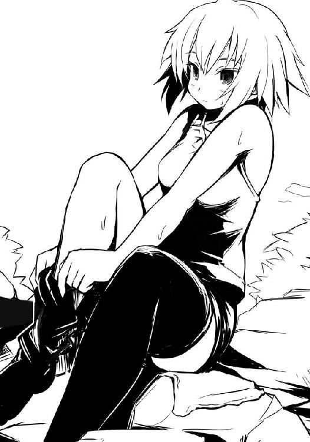
ちょっと距離があるのが恐ろしく残念でならない。以前、僕の寮に来てくれた際に、先輩のブーツを脱ぐ様を御来光と僕は感じたが......今回のコレもなかなか乙なものではないか？ 黒いニーソから白く、それでいて健康的な生足が姿を現す......それまで布に包まれていた部分が、つまり隠されていた秘密が露になるというこの現象......別にわいせつ的な部位でもないにも拘らず――不思議とエロに満ち溢れているではないか！
左足はそのままに、右足がニーソという黒き束縛から解き放たれ、その指先がクイックイっと握って開いてをする様などもうモザイクが必要なんじゃないかと心配するレベルである。
着エロからの脱衣行為......そうか、時代は露出というだけの〝静〟から、脱衣という〝動〟へ進化するべき時に至ったということか。
そんな次世代の到来の予感を胸に、先輩が左のニーソを脱ぎ終わるまでガッツリと拝み、それから僕と白粉は肩を並べ、滝へと入った。
川の流れ自体は穏やかだが、滝は高さがあって勢いがちょっと強い。滝壺になっているかもしれないので、足の裏で川底を確認しつつ、ゆっくりと進み行く。特に深くはなっていないようなので、僕と白粉は滝に入った。とりあえずどうしていいのかわからないので、滝に打たれつつ、自然と手を合わせ、拝むようにして目を閉じる。本当に修行僧のようだ。
一応先輩から「とにかく意識を胃、そして空腹にのみ集中させろ。何なら胸の内で語りかけろ。それだけでいい、あとはわかる」と、言葉とは裏腹にまったく意味がわからない説明を受けていたので、とりあえずそれに従ってみる。
胃よ、今日はお粥弁当しか食べていない空腹な胃よ......。
当然、言葉が返ってくるわけもない。僕は瞼を開ける。滝に打たれているため飛沫で視界は悪いが、それでも先輩が岩の上に座って白い生足をプラプラと揺らしているのが見える。
「佐藤、気を集中させろ。腹の虫の声に耳を傾けるんだ。素直にそれを聞き入れれば、必ずスーパーで今まで以上の力を発揮することができるようになる」
川辺で浴びる木洩れ日が気持ちいいのか、先輩の口調は穏やかだった。
僕は、頑張ります、と一言告げ、再び己の腹の虫への問いかけを始める。
意識を胃に向ける。馬鹿馬鹿しいと一蹴してしまいそうな状況だが、よくよく考えてみれば耳には飛沫の音しかなく、肌は打ち付けられる水の感触だけ、瞼を閉じれば闇......確かに雑念を孕みそうな余計な外部刺激は削ぎ落とされており、集中力の訓練には良さそうだった。
しばらく滝に打たれていると、気のせいか、先ほどからどこか心の汚れが晴れたような気がしてくる。何故だろう。心を覆っていた何かを滝の水が流してしまったような......どこか解放感にも似た心地よさがある。これが滝に打たれる効果なのだろうか。
心が落ち着く。何だか、今なら本当に腹の虫と会話ができるような、そんな気がしてきた。
胃よ、空腹な胃よ......。そうゆっくりと語りかける。すると、空腹を強く感じ始める。......お腹が減っている。今、自分の胃が欲しているものはどんなものだろう？ 夏らしくそうめん？ いや、朝はお粥というあっさり系だったこともあるし、今は少し重めの方がいい。こう、一気にいけるタイプの......あんかけ系......そう、中華丼とか......。
僕は空腹に関連して、連鎖的に頭の中に料理を思い浮かべていく。そのイメージにお腹が鳴った――その時だった。
（......サ......ト......よ。聞こ......か？）
なに!? そう、思わず僕は声を漏らす。滝の音に消えかかるような、そんな小さく、か細い、老人のような声が聞こえた気がした。慌てて謎の声に応じてみる。
はい、聞こえます！ あなたはもしかして僕の腹の虫ですか!?
（そ......な、ことは......でもよい。お前に、伝えねばならぬことがある）
間違いなく声が聞こえていた。かすれかすれだった声が、徐々にはっきりとしていく。
（お前は今より上の狼へと、強く、気高く、美しい存在になりたいか？）
はい、なりたいです！ 僕はそう叫ぶように応じつつ、興奮を何とか抑えようとしていた。まさかこんな漫画のような現象が自分の身に起こるだなんて信じられない。けれど今確かに声は聞こえている。それは間違いなかった。しかもこの流れ、確実に僕に必殺技的なものを伝授してくれるに違いない。多分、手からビーム的なものを噴出する類のヤツだろう。案外ちょっと前からの流行である相手の能力を無力化する類の技かもしれない。
（よろしい。ならば、これから重要なことを伝える。......まず、ダンベルでトレーニングだ）
......これはまたえらい、地味な......？
（おぬしは遅筋は十分だが、速筋がまだまだ甘い）
.........えっと............。
（遅筋より速筋の方が外面的な効果は出る。無論、局部だけではなく、全身をバランス良く鍛えた方がより美しく逞しいボディを手に入れることが可能だろう）
..................。
（食生活にも気をつけ、細心の注意と情熱をもって鍛えよ。鏡の前で各部の筋肉に語りかけることも効果的だ。いいか、今お前が目指すべきは速筋の強化による逞しく美しいボディの成形だ。頑張るのだ、サトウ刑......サトウヨ――ふぐっ！）
僕は瞼を開き、横に立っている白粉の頬を右手で鷲掴みにして顔を上げさせる。タコの口になった白粉が苦しそうにフグゥフグゥと唸る。無論、滝に打たれつつなので口の中に猛烈な勢いで水が流れ込んでいるのだろう、彼女は苦しげに僕の腕をペシペシ叩く。
「しゅ、しゅみまじぇん！ ぐ、ぐるじぃでふ！」
僕は手を離す。白粉は滝から出て、口に入ってきた水を咳き込みながら吹き出す。
「......お前は一体何をしているんだ？」
「エッホ、エッホ......あたしはただちょっとしたアドバイスを......」
白粉は僕に背を向けながら言う。鼻にも入ったのか、唸りつつ鼻をズルズルやっていた。
「何、特訓にかこつけて人を洗脳しようとしているんだ、お前は......。っつぅか的確に人の心を読んで受け答えすんなよ......怖いよ」
「別に心を読んだわけじゃなくて、佐藤さんが普通に声に出されていたので......なので、こう、今アドバイスをすれば佐藤さんをもっと理想体型に近づけられるんじゃないかと」
「......何で僕がお前の理想体型に合わせないといけないんだ......」
あははは、と愛想笑いを浮かべて白粉は振り返り、濡れて額に張りついていた前髪を指先で耳の後ろにかける。
「身近にマッチョがいたらいいなぁ、と......それならば、と......」
ないならば作ればいい、というわけか。こいつ、目的のためなら手段とか選ぶ気なしか。
僕もまた滝から出る。先輩は岩の上で横になっており、明らかに昼寝に入っていた。
白粉は水が入ったのか、目をこする。
「でも、速筋はあった方が格闘技とかでは有効ですし、佐藤さんの魅力も大幅にアッ――」
「そんな特定の人間にしか効果がない魅力アップはいらないっての。......大体お前、何が悲しくてこんな場所に来てまで筋トレの話をしなけりゃならないんだよ。
......見ろよ、この雄大な自然を。都会の喧噪や、システマチックに管理された学校生活、普段の欲にまみれた生活から離れて、このたっぷりの解放感をお前も味わえよ」
僕は両手を掲げ、少し大げさに言った。実際、壁も天井もない自然の中で服を脱いだこの解放感は素晴らしいものがある。プールの比ではなかった。
まったく、白粉はこの素晴らしさを理解していないのだろうか？ そう思って彼女を見てみれば......何故か彼女は目を細め、川面というか僕の腹部を凝視しているのだが......。
「......佐藤さん、ちょっと眼鏡がないので間違えていたら申し訳ないんですけど......気のせいか、その......お毛けが......？」
お毛け？ と僕もまた彼女の視線の先を見る。うん、毛が......え？ な、なに、この毛!?
「魅惑の腹毛にしては下過ぎる気が......え、あ、え？ ま、まさか陰もッ！」
白粉が素早く手を伸ばしてきたので僕は慌ててその手を弾き、彼女を突き飛ばす。
その間に僕は頭を高速で働かせる。ない、どう見てもない。あるべきはずのものがない！ 何ということだ。滝の水流に負けてずり下がってしまったらしい。っつぅかそれはそれで問題だが、そこに躊躇なく手を伸ばしてくる白粉に恐怖を覚えずにはいられない。彼女が倒れてバシャバシャやっている間に、僕はずり落ちた物を所定の位置に戻そうとするのだが......。
「......え？」
その、なんだ。......それが、ない。
腰はもちろん、膝の辺りにも、そして足首の辺りにもそれ――海パンがない。
「エッホエッホ、ひ、酷いですよ、佐藤さん」
「ひ、酷いのは、お前の頭だ」
「そのちょっと、学術的な興味があっただけで、その......手触りとか、そういうのを......」
いかん、奴が復活した。しかも何か恐ろしいことを真顔で平然と口にしている!?
僕はあらゆる可能性を考えつつ、少し中腰になって腹部まで水に沈めた。
まさか、さっき滝に打たれている段階ですでに海パンは足首まで下がっていた......のか？ それで滝から出る際にスポッと......？
じゃあ何か、僕が両手を掲げて「......見ろよ、この雄大な自然を」とか言っている段階ですでに僕は全裸だったのか？ 神々しいにもほどがあるぞ！ どこの神々の民だ！ そりゃ解放感に溢れているはずだ。ある種限界まで解放されているわ！
「お〜い、何を騒いでいるんだ？ ......ん、何か流れているな。お前たちのか？」
先輩が目をこすりながら川下の方に指差して何やら言うので、僕と白粉はそちらに目をやる。明らかに僕の海パンと思しきものがドンブラコドンブラコと......。
「......アレ？ 気のせいか、佐藤さんのパンツに似ている気が......エッ!?」
白粉が状況に感づくと同時に、僕は可能な限りの全速力でクロールを始める。後ろから「佐藤さん！ ケツが！」と白粉の声が聞こえたがそんなものを無視して泳ぎ続ける。流れに乗っているので早い。だが、海パンはそれにも負けじと先へ行ってしまっている。僕はさらに泳ぐ。途中で川から出て川辺を走った方が速い気もしたが、全裸で川沿いを疾走する己の姿を想像したらとてもじゃないがやれるわけがなかった。野性味が溢れすぎて野生に還ったかのようだ。
後ろから白粉が追ってこないことを確認した僕はうねる川を泳いでいく。
●
川面に少女が浮いていた。その幼げな顔つきとは違い、全身はスラリと細長い印象だ。
彼女は眠っているかのように穏やかな表情で瞼を閉じていた。その顔と起伏があまりない胸元だけを空気に晒し、長い四肢は水中で水草のようにゆらゆらと川の流れに任せている。
いっそ彼女が一糸纏わぬ姿であれば、川や川沿いの木々と相まって絵画のように見えたかもしれない。だが少女が纏う競泳用水着が否が応にも現実を彼女、淡雪えりかに意識させた。
彼女と同じ水着を着た淡雪は水から出、太陽に温められた岩の上に座る。
淡雪は流れる少女を見続けた。プールと違って人気もなく、競技とは無縁な川は二人にとって昔から一番リラックスできる場所だった。二人とも同じ中学の水泳部なのだ。
少女は本当に眠ったように、静かだった。......静か過ぎた。
「ちょっと真希乃、本当に寝てるんでしょ!?」
淡雪は少女、禊萩真希乃の名を苛立った声で呼ぶ。すると真希乃の手足が動き、彼女は瞼を開くことなく全身を水に沈め、水中を魚のようにスイスイと泳いで淡雪の座っている岩の近くまでやってくる。そこで真希乃はちょうど鼻から上だけが水面から出るように水中で正座した。
額に貼り付くショートヘア、その少しだけ長い前髪の間から瞼が覗く。そこに大きな瞳が生まれ、淡雪を見つめてきた。
「......ぼべん。びぼちおがったから、ぶい」
くだらない、というように淡雪は溜息を吐き、遠くの木々に視線を移した。
「口まで出して言いなさいよ。まったく、そんなんで都会に行ったらイジメられるわよ。向こうの人は陰湿で過激だから真希乃みたいなトロイ娘が行ったら即行で狙われるわ、即行よ、即行。それで引き籠もりになって自殺するハメになるのよ、間違いないわ。あ〜、かわいそ」
皮肉たっぷりに淡雪は言って、また溜息を吐いた。視線はずっと遠くに向けたままだ。「ぞんなごど、だいとおぼうけど」と真希乃の声が聞こえたが淡雪は彼女の方を見なかった。
二人はしばらく木々のざわめきと川のせせらぎで沈黙を埋めた。先にそれを破ったのは真希乃の方だった。彼女は川から出、淡雪の座っていた岩に昇ると彼女の隣に座り、体を寄せた。
「ねぇ、えりか。......うんと、明日は......どうする？」
行かない、と淡雪は真希乃の言葉に被せるように即答した。
「......そっか。あ、それじゃ、あたしが一人で頑張って獲ってくるから、それを――」
しつこく真希乃が言ってくるので、淡雪は苛立つ。キッと真希乃を睨みつけた。
「いらないわよ、そんなもの」
真希乃は「......そっか」と小さく、悲しそうに苦笑いを浮かべた。そして眉を八の字のようにしたまま黙る......だけ。いつものこととはいえ、淡雪はそんな真希乃に苛立ちを憶える。言いたいことがあるなら言えばいいのに、真希乃はいつも困ったような微笑みの奥に全てを閉じこめる。それが苛立たしかった。
「そもそも真希乃もいい加減やめなさいよ、半額弁当なんて。見窄らしい」
淡雪は真希乃から逃げるように岩を降り、川に飛び込んだ。いや違う、と淡雪は思う。自分の言葉から逃げた、そんな気がした。見窄らしいなんて思っていない。何より二度も彼女と一緒に口にした、あの美しい弁当を自分が嫌うわけがない。けれど思わず言ってしまった。必要なことを言わない真希乃に苛つくが、余計なことを言ってしまう自分にも淡雪は苛ついた。
淡雪は先ほどの真希乃のように顔と胸元だけ浮かせて川の流れに身を任せる。川面から出ている部分が太陽の光を浴び、暖かい。確かに、気持ち良く、眠ってしまいそうになる。
しばらく目を閉じているとチャポンと音がし、頬に柔らかい感触。瞼を開き、顔をそちらに向けてみると真希乃の顔があった。頭の向きを逆にして、彼女も同じように浮いており、頬同士が触れ合っていた。
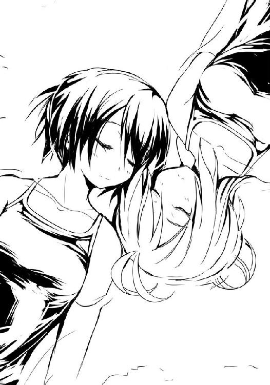
犬のようにじゃれてくる真希乃。それは嫌いではない。むしろ好きだった。けれど、それ故に、淡雪は苛立った。
それならそれでいいのだ。けれど、そのくせして彼女は自分を裏切ろうとしている。恩知らず。そう言ってしまったことが何度あったか。今まで恩を売ろうとしてやってきたわけじゃないのに、淡雪の口からは無意識に幾度となくその言葉がこぼれた。その都度真希乃を嫌いになると共に、酷い自己嫌悪に陥った。
自分の方が間違っているのだということぐらい淡雪にはわかっている。ただし、あくまで頭では、だ。心の内まではそうはいかない。そして彼女の口は心との結びつきが強いのだった。
「......ねぇ、えりか。今日は、今夜は？」
「行くわけないでしょ。少しは考えなさいよ。それとも何、そうやることでわたしのご機嫌でも伺っているつもり？」
淡雪の口調は硬く、苛つきが籠もったものになってしまい、自然と声量も上がった。
「違う、けど......。その、うんと、できれば一緒に......えりかがいると助かるな、って」
「嘘つき。本当は私なんていない方がいいくせに。......そう思ったから、そう決めたんでしょ。違うの？」
それは、違うけど......と、真希乃は口ごもり、淡雪は溜息を吐いた。
「ねぇ、真希乃。......わたしなしで、本当にアンタなんかが一人でやっていけると思うの？」
もう何十回、何百回この言葉を放っただろう。いつも彼女は困ったように眉を八の字にして乾いた声で小さく笑うだけ。それはわかっているのに言ってしまう。言わずにはいられない。
真希乃はいつも同じように苦笑し、そして、何も言わない。きっと必要とか、難しい、とかそういう言葉が彼女の胸にはあるのだろう。でもそれを言ったところで何も変わらない。だから言わない。きっとそうなのだ、と淡雪は思う。でも、それは......。
「......アレ？」
真希乃が何か声を出したと思うと、彼女は自分の顔に張りついてきた布きれを掴み、持ち上げた。そこから雫がポタポタと二人の顔に落ちてくる。
「なに、ゴミ？ これだから都会から人が来るこのシーズンは嫌になるわ」
淡雪は真希乃からその布を受け取ると、川底に足をつけ、川辺に向かって放り投げようとする。帰りに拾って、ゴミ捨て場まで持っていくつもりだった。
「......アレ？」
今度は何よ、と、淡雪は振りかぶった姿のまま、淡雪の目線を追う。
○
男女差別というものがある。男女ともに同等の権利を有しているのに......というアレだ。
差別は良くないとする風潮は世界的にも当たり前のものとしてあるが、実質的な、いわゆる現場的な視点からすれば依然としてこの問題は解決される見込みがない。
この日本においても例外ではなく、差別というものは今もなお根強いといえた。
だって、そうじゃないか。仮に僕らが川で遊んでいたとして、そこにナイスバディのお姉さんが全裸で現れたらどんなリアクションをするだろう？ その場の状況や出くわした男たちの嗜好によるところが大きいかもしれないが、拝んだり、目に焼き付けたり、すぐさまカメラの準備をしたり、とりあえず接触を試みるとか......少なくとも、悲鳴を上げたり、警察を呼ぼうとしたりはしないだろう。
ではもし、少女たちが遊んでいる所に全裸のナイスバディなお兄さんが現れたら彼女らはどんなリアクションをするだろうか。もし悲鳴を上げたり警察を呼ばれたりした場合、僕は男女差別だ、謝罪と賠償を請求する、そもそも裸で何が悪い！ と声高々に叫ぶべきだろうか？
仮にそれをやったとして果たしてそれが認められるか否か......。ある種、今のこの国の在り方すら問われる重大な一件といっても過言ではなかった。
「......いやぁ、淡雪さん、どうも、偶然ですねぇ」
僕は犬かきで二人の少女に接近していく。一人は先ほどロッジで会った淡雪さんだった。そしてもう一人はスラリと四肢が長くショートヘアを少し伸ばした感じの娘。二人とも競泳用と思しきスポーティな水着を着用しているので、水泳の練習でもしていたのかもしれない。
まな板であっても長い四肢に競技用水着を着用すると白粉みたいに貧相に見えず、むしろスタイリッシュに見えるんだなぁ、と一瞬思ったものの、今、僕が気にするべきはそこじゃないので頭の片隅にその邪な考えを押しやり、主題について真剣に考える。
そう、海パンだ。明らかに淡雪さんが放り投げようとしているものは僕の海パンだった。多分上流から流れてきたそれをゴミか何かと勘違いしているのだと思うのだけれど、何とかして彼女の手からそれを奪還し、そして彼女らに感づかれることなく装着しなくてはならない。極めて難易度の高いミッションだ。
「二号ロッジの......えっと槍水さんの？」
「あ、佐藤と言います。どうも」
理由を話せば納得してくれるかもしれないし、素直に淡雪さんはその手にしたものを返してくれるかもしれない。だが、問題はそれを話した時点で今現在二人に犬かきで近づきつつある男が全裸であるということがバレてしまうということだった。人気のない川、緑豊かな田舎で純朴に育った二人の水着少女に、都会からやってきた全裸の男が迫っている......このシチュエーション、国が国ならＳＷＡＴが出動しかねない。事は慎重を要した。
「すみません、実は今、淡雪さんが手にしている物を流してしまいまして......えぇ、できれば返していただければと。えぇ、ホント、すみません」
そうなんですか、とロッジの時と同じ営業スマイルを浮かべ、淡雪さんは手を下げた。
「そんな堅苦しくしないでください、佐藤さん。『さん』なしでいいですよ」
そう？ それじゃそう呼ばせてもらおうかな、と適当に応じながら僕は二人に近づいていく。
よし、いける。あとはこのまま距離を詰めて受け取れば......はっ！
待てよ......【距離を詰める＝バレる可能性＆犯罪性が高まる】ということになるんじゃないのか！ 無論、副産物的にスリルが増し、より一層の興奮が（以下略）。
僕は泳ぎを止め、大股で水中に立って腰までを完全に水中に沈め、バスケットでパスを要求するように両手を挙げて必死に〝投げて 〟とアピールする。距離は七メートル弱、川の流れに逆らって歩くには少し距離がある。
〟とアピールする。距離は七メートル弱、川の流れに逆らって歩くには少し距離がある。
僕は期待を込めて玩具の猿のように手をパチパチと鳴らす。すると淡雪と一緒にいたショートヘアの子が僕の海パンを手にし、振りかぶっ......らずに、水中に潜る。
「......え？」
僕は一瞬、彼女が転んだのかと思った。だが、違った。彼女は水流に逆らっているのに、水中を魚のようにススッと進んで......僕の目前までやってくると泡を吹き出して立ち上がる。
「......あ、え？」
大きな目を見開く彼女は呆気に取られている僕の顔と、手にしていた布を交互に見やる。そしてそっとその布をひろげた。まぁ、当然現れるのは海パンである。
手を伸ばせば相手の肩を掴める距離で、この澄んだ水だ。オマケに僕は腰が完全に水に浸かるようにと大股を開いていたわけで......うん、何て言うか、全開だった。
水中の彼女がどのような絶景を目撃したのか......想像するまでもない。
「真希乃、先に行ってるわよ」
そう言って淡雪はショートヘアの娘の衝撃には気づかずに川から上がっていく。
「......あ、えっと......どうも、佐藤洋です。高校一年です。よろしく」
「......あ、うんと、......ども、禊萩真希乃、です。中学三年です。よろしくお願いします」
人間、慌てた時というのは不思議なものである。僕たちは何故か自己紹介をした。
「えっと......あたし、今眼鏡してないから......よく見えてない......です」
大きな瞳をした禊萩さんはそう言いながら、優しげに、ちょっと照れたように微笑んでくれる。その何というか、本当に汚れの欠片もない純朴そうな瞳に、モデルのようなスラっとしたスタイルの彼女は、その精一杯の気遣いと相まって、何とも可愛らしい。
そんな彼女に全てを見られた上に、変な気まで遣わせてしまっている自分自身が何とも情けなくて、どうしていいかわからず、僕もまた引きつった笑みで応えるしかなかった。
「あ、そうなんだ。えっと、禊萩さん？ って眼鏡とか似合いそうですよね。アハハ......」
何だろう、この慣れない合コンに行った時に思わず言ってしまうような、これ以上話題を広げようがない台詞は......。何より全裸で言うべき言葉じゃない。......っつぅか少女を前に全裸の男が言うべき言葉なんてものがあるのなら誰でもいいから教えてほしかった。
「あ、真希乃でいいです。年下ですし、みんなからそう呼ばれてます」
そんなことを言ってくれる彼女、真希乃から僕は海パンを受け取るとそれをその場で穿き始める。さすがに目の前で穿くのは精神的に抵抗があったものの、海パン握りしめつつ彼女に僕の鍛えられた臀部を見せて泳ぎ去るというのも何かが間違っている気がしたのだ。
水に濡れた水着は穿きづらく、手間取る。真希乃との間に気まずい空気が流れ始めたので僕は愉快なトークで場を繋ごうと試みた。
「そういえば、ちょっと聞こえちゃったんだけどさ。何か揉めてたのかな？」
正直、出会ったばかりの人の揉め事に、著莪のように好奇心だけを頼りに首を突っ込む趣味はないが、今のこの場の空気を繋ぐためなら僕は手段を選ぶ気はなかった。
「最近はちょっと。本当は、喜んでくれるかな、って思ったんですけど、逆になっちゃって。進学の話で、その......」
真希乃は少し困ったような笑みを浮かべる。その表情は彼女には良くも悪くも、不思議と似合っているように見えて僕は少し戸惑う。どこか、顔に馴染んでいるような、そんな感じがしたのだけれど......そんな顔より彼女にはもっと似合う表情があるはずだった。
「アレかな、あの娘と違う学校を受けることになった、とか？」
真希乃は大きな目をさらに大きくして驚き、そう、そうです、と口にする。
「スポーツ特待生っていうので......うんと、それで......関東の方の学校に......」
「へー、凄いんだね。......僕も同じような感じだったなぁ。いやさ、従姉なんだけど、最初は同じ高校に行くことになっていたんだ。ただ、僕の成績からすると一般で試験受けても結構微妙なラインだったし、何より、友達を一人犠牲にすれば、受験せずに楽に推薦で行けそうな学校もあって、そっちを選んだんだ。寮とかでの一人暮らしを推奨していたり、学校の場所とかも良かったしね」
一瞬、頭の中でバカそうに、かつ、純朴に笑う石岡君の姿が思い浮かぶ。彼は今、どこで何をしているのだろう？ まぁあの彼のことだ、きっとどこの高校に行ったとしても......多分、ろくなことはしていないだろう。
「あの、それで、喧嘩したりとかは......？」
「うん、まぁ、結構揉めたかなぁ。でもすぐに仲直りしたけど。テキトーな間柄ならともかく、ちゃんとした関係なら大丈夫だよ。......これで、良しっと」
合法的な姿になった僕は、真希乃にお礼と簡単な謝罪の言葉を述べて、上流へと戻ることにした。真希乃は何故か、微笑んで見送ってくれる。
水流に逆らって泳いでいると、後方から「結局、さっきの何だったの？」という淡雪の声が聞こえてくる。
「うんと......ぬ、の？ うん、布......だった」
ありがとう真希乃、僕はそう胸の内で呟き、泳ぐ速度を上げた。おとぎ話とかで動物やら妖精やらが恩返しに来ようとする気持ちがわかった気がした。もしまた彼女と出会うことがあったら恩返しができればいいな、と、そう思う。
先輩のもとへ戻る途中、どこからか謎の「インモッインモッインモッ！」という悪魔を召喚しかねない呪文が聞こえてきて、上流から浮き輪をビート板のようにして泳いでくる眼鏡をかけた変な生物を僕は発見した。とりあえず水中に潜り、頭上を通過する瞬間に鳩尾への一撃を放って、奴の意識を飛ばす。ぐったりとしたソレは浮き輪に載せて引っ張っていくことにした。......わざわざ浮き輪を膨らませ、眼鏡まで装着してくる気合いの入れ方に、真夏だというのに僕は寒気を覚えずにはいられない。
こいつ相手なら訴えれば勝てるだろうか、そんなことを考えながら僕は上流を目指した。
あれから日が暮れるまで、僕らは川で特訓なんだか水遊びなんだか、よくわからないことをし続けた。先輩もスカートの丈ギリギリまで水に入って、この旅行のために妹から借りてきたというデジカメで写真を撮りまくったり、意識を取り戻した白粉が事あるごとに僕の海パンをずり下ろそうと企むので、その都度彼女を水に沈めたり......そんなことを日が傾くまで僕らはやり続けた。どうでもいいが、先輩が水から上がった際の、内股についた水滴に、何故か非常に興奮したことを付け加えておく。
僕たちは川から上がると一度ロッジに戻り、お祭りに向かうことにした。先輩が言うには、今日はもういつものように半値印証時刻に近隣のスーパーに出向き、そこで弁当を獲るだけだという。花火大会が行われる明日こそが今回の合宿のメインだが、その下見の意味合いもあるため、気を抜くな、と最後に彼女は付け加えた。
「そのためにもまず、我々は祭りへ行く」
槍水先輩の言うことは正直意味がわからなかったが、昼食を抜いたことでお腹が減っていた僕と白粉は何も言わず、それに従う。屋台で何か食べよう、そんなことを考えながら。
山を下ってしばらく歩けばお祭りの気配というか、熱気が伝わってくる。人のざわめき、夜を押しやるようなほんのり赤い照明、そして風に乗って僕らの鼻孔を擽る屋台の香り......風流だが、そのどれもが僕の苦痛な思い出を喚起するものばかりだ。
普通、お祭りの記憶というと大抵の人は楽しい思い出だと思うのだが、正直僕にとっては赤い照明が業火に見えるほど、理不尽にお小遣いが消える地獄のイベントにほかならなかった。原因は......著莪だ。アイツにとって僕の財布はアイツの財布に等しく、湯水のように使われるのだ。嫌だと抵抗すれば、当然のようにいつものジャンケンが待っている。
しかし、そんな辛いお祭りも昨年までだ。今年は違う。今年、著莪は......まぁ、少なくとも今夜はいない。お祭りで自分の小遣いを、自分の好きなように使える......何という贅沢！ 何という幸せ！ 当たり前のことが一番の幸せ、とよく言われるが、ホント、その通りである。
何より財布の中には親父から軍資金としていただいた三万円もあるのだ。まぁ、合宿の軍資金ではなく「田舎のゲームショップに行けばすげぇレアゲーとかが格安で売っているかもしれんから」と言って振り込んでくれたお金ではあったが......きっと、アレだ。息子にお小遣いを上げようにも照れくさくなって親父はあんなことを言ったのだろう。
何せ年頃の息子の旅行である。当然、それなりのお金は必要だ。いくらバカな親父とはいえ、それぐらい察してくれたのだ。何とかしてプレミア化した商品を格安で見つけてこい、と命令口調で言われたが、きっと照れ屋な親父の精一杯の嘘に違いなかった。川で遊んでいる最中、三回ほど親父から電話があって留守電に「個人経営のショップは穴場だ、漏らさずチェックしろ」「どうだ、何か見つけたか？」「言い忘れていたがもし状態の良い『メガアダプタ』があれば保存用にしたいから手に入れろ、手段は選ぶな」とメッセージが入っていたが、きっと嘘に真実味を持たせようとする親父の精一杯の工作に違いなかった。
僕は親父の携帯と実家の電話番号を着信拒否リストに登録すると、スキップするようにしてお祭りへの道を歩む。不思議と肩の荷が下りたように軽やかだった。
湖に突き刺さるような真っ直ぐの道路、そこがお祭りのメイン会場らしい。昼間に見た田舎の町並みとは全く違う人の数。屋台が無数に並び、辺り一帯活気に溢れていた。
通りの端にお祭りのイベントスケジュールが書かれた看板があり、それによれば明日が花火大会、明後日のお祭り最終日は花火大会の雨天に備えた予備日、そして今日は神輿を担いで夜まで町中を練り歩くという構成らしい。
「一般の方も参加できます、か。どうだ佐藤、行ってきたら？ 写真に撮ってやるぞ」
冗談でしょう？ と僕が笑って言うと先輩も笑った。
お、アレか、と先輩が見やる方向に僕らもまた顔を向ける。人混みの向こうから何やらどんちゃん騒ぎが聞こえ、男たちの野太いかけ声が聞こえてくる。「......おぉ」と僕と白粉が思わず声を漏らす。まだ神輿自体は見えてこないのに迫力というか、威圧感というか、覇気を放つ巨大な何かが近づいてくる感じがあるのだ。
観光客たちの人混みが割れ、そこから大きく、きらびやかな神輿が姿を現した。二〇人ほどで持ち上げる大きな神輿だ。周りから歓声と撮影用のフラッシュが絶え間なく続く。
「なっ!? アレは!?」
白粉が声を上げる。彼女の視線を追えば......まぁ、何となく想像はついたものの......それは神輿ではなく神輿を担ぐ男たちに注がれていた。
頭に捻りハチマキを締め、半被を着た青年から初老まで年齢も様々でありながらも全員が逞しい体つきの男たちが、全身に汗をかき、活き活きと神輿を担いでいるそのさま......しかして何よりも彼女の興味を引くのは多分......。
「さ、佐藤さん、凄いです、ふんどしですよ!! あの引き締まった臀部に食い込む純白の布......何という芸術性！ す、素晴らしい！」
「全然素晴らしくねぇよ......」
大きな神輿に続いて幾分小さいが、立派な神輿も幾つか見えてくる。そちらも同様に男たちが担ぎ上げていた。それらと共に歩いてくる半被を着たオッちゃんが拡声器を手にする。
『有志の方も担げます、皆さん是非とも奮ってご参加ください！』
「先輩、佐藤さん！ 是非ともこの機会に貴重な日本文化に触れてみたいんですけど!?」
「......お前が触れたいのは本当に日本文化なのか？」
僕が言うと、先輩が苦笑いを浮かべ、しっしっと追い払うように手を動かす。すると白粉は脱兎のごとくに一直線に拡声器のオッちゃんの所へ走っていった。
僕と、カメラを手にした先輩が追いかけると、嬉々とした白粉が係の人から半被を着させてもらい、二番目の神輿......を担ぐ、男たちの中へ......。
槍水先輩が近づいて二、三枚写真を撮ると、何故か不安げな顔で戻ってくる。
「佐藤、アイツは......大丈夫なのか？」
先輩は今し方撮影した写真を見せてくれるのだが......いやぁ、何というか......白粉は悪い霊に取り憑かれたみたいに狂喜の顔を浮かべて、男たちに挟まれて両手で神輿を担いでいて......確実にアッチの世界に旅立ってしまった状態だ。前後の男たちが突如乱入してきた小さい娘に明らかに困惑しているのが苦笑いを誘う。
僕たちは目の前を通り過ぎていく神輿とそれを掲げる白粉を見やる。
「わっしょいわっしょいわっしょいわっしょいわっしょいわっしょいわっしょい!!」
男たちの野太い声ばかりだからか、白粉のはきはきとした声はよく目立っていた。
「まぁ、しばらくしたら満足すると思うんで......放っておいていいんじゃないんですか？」
それもそうか、と先輩は白粉のもとまで行き、「半値印証時刻は八時半前後だ、八時までに合流するように、いいな」と告げる。白粉は聞こえているんだか聞こえていないんだか、ずっとわっしょいわっしょいと壊れた玩具のように声を上げ続けていた。
「さて、それじゃ私たちは祭りを見て回るか」
苦笑する先輩に、僕も同じように苦笑を浮かべて歩き始めるのだが......この瞬間、僕は気づいてしまった。ひょっとして、これって......デート的な意味合いの雰囲気でその、なんだ、つまりその、デート的なものなんじゃないのか!? しかも地元を離れているわけだから、邪魔な知り合いと出会うようなこともないときているし、何より今日の先輩は夏をエンジョイする気満々だ。これは......神が与えたもうた奇跡か!?
僕は自分を落ち着けるように、そして下心を悟られまいとするように先輩と肩を並べて歩きつつ「いろいろありますね〜」とか無難な台詞を口にしながらお祭りの屋台を眺めていく。
さすがに僕の田舎より規模が大きいだけに、屋台の種類が豊富だ。フランクフルト、たこ焼き、お好み焼き、焼きそば、わたあめといったベタ過ぎる出店はもちろん、地元では見たことのないおでん、オリジナルバーガー、揚げアイスなんて変わり種まである。また時折テレビでは見かけるけど今まで実際には見たことがない、伝統芸である飴細工の出店なんかもあった。
その中でまず僕らの目に止まったのは串焼きだ。
一瞬焼き鳥の店かとも思ったが、豚肉や牛肉を串に刺して焼いたもののようだ。見た目にはかなりボリュームとインパクトがあるが、値段もまた同様にボリュームたっぷりだ。
著莪と一緒なら出来る限り近づかずに通り過ぎたいポイントではあるが、先輩になら......いい。
「一本いきますか、先輩。奢りますよ」
屋台から少し離れた位置で、じっと炭火で炙られる肉を見つめる先輩に、僕は言った。すると先輩はきょとんとした顔で僕を見てくる。
「お前は何を言っているんだ？」
「......はい？」
僕らはお互いに相手の真意がわからないというように、きょとんして見つめ合う。
「あぁ、そうか。すっかり説明を忘れていた。この祭りでは食べ物は一切買ってはいけない」
僕はまた「......はい？」と、同じような声を出し、首を捻る。
「いや、買ってもいいが、食べてはいけない。......何故だって？ 決まっているだろう、半値印証時刻に備えるためだ。もしここで何か食べて腹を膨らませてみろ、スーパーに行ったところでたちまち他の狼たちに叩き潰されるぞ」
「え？ そ、それじゃ何故に祭りに......何も食べずに祭りを歩くなんて地獄じゃないですか」
しかも僕らは朝方お粥弁当を食べただけな上、川で泳いだりして空腹は極まっているのだ。
目の前にこれだけのご馳走が並び、珍しくも懐が暖かい状態だというのに、それは......あまりにも酷というものである。
先輩は腰に手を当て、眉を八の字にした。
「お前は今回の合宿を何だと思っているんだ？ 強化合宿だぞ。お粥弁当と同様に、これは誘惑に打ち勝つ精神力の特訓だ。そして同時にただでさえ空腹な胃袋をさらに刺激し、この後の半値印証時刻で普段以上の力を発揮するための備えでもある。
つまり弱き己を制し、限界まで力を引き出す訓練だ。真の激戦は明日とはいえ今日とて各地から集まってきた名うてたちがスーパーにて腕をふるう。並大抵の空腹では勝てはしないぞ」
何という......何という荒行だ。勝つためにあえて自ら地獄に身を投じるなんて......。
「狼の中にはせっかく遠路はるばるやってきたというのに、祭りの誘惑に負けて屋台の物を食してしまう者は多い。かなり、多い。今のような半値印証時刻前はもちろん、昼間などでも食べ過ぎて夜になってもなお空腹が弱く、結局諦め、戦わずして帰る者も毎年あとを絶たない。屋台料理というのは調理のしやすさから油を多用したものが多いからな。もたれるんだ。
だから、少しぐらい、これだけなら......と、そういった甘い考えは捨てて覚悟を決めろ。勝利と己の成長のためだ」
......先輩、それじゃお祭りの楽しさが半減です。僕は思ったものの、さすがに真顔で解説してくれる先輩に面と向かって言えず、胸の内だけに止めた。
僕らはショーウィンドウ越しにトランペットを見る少年のように、物欲しそうな表情でしばし串焼きを眺める。
大きな牛肉のブロックが三つ刺さり、合間に極太の長ネギが挟み込まれているものが新たに並べられる。炭火に炙られるに従い肉汁が身の表面に浮いてきて、滴る。ジュッという音と立ち上る炎と香ばしい匂いが僕らを惹きつけて放さない。そこに振りかけられる粒の粗い塩と多量の粗挽きコショウ。それが肉汁に溶け、炭火に炙られ、焦げを作る。また乙女が大胆な黒下着を恥じらいながら身につけたかのような、純白の長ネギにつく焦げの具合もたまらない。
あぁ、いかん。見ているだけで、涎がとめどもなく出てくる。
長居は危険だ、と腹の虫の暴走を警戒しつつ隣の店に視線を移した、その時だった。
そこに、あるはずのない存在が、あった。信じられない出会いだ。僕はその出店の前に立ち止まり、幾度かの呼吸をした後、その箱に書かれたスペルを一つ一つ確認する。それで、ようやく目の前の光景が現実であることを受け入れた。
そう、平穏な祭りの中に佇むガンファイトクラブ......射的屋である。別にそれぐらいなら驚きはしない。問題はその標的となる賞品だ。信じられなかった。その箱があまりに綺麗だったこともあり、ひょっとしてこの種の店がよくやる〝人気商品とよく似た箱だけど中身は全然違う紛い物〟という詐欺的な賞品かとも思った。だが、違う。本物だ。
それはＰＳ２でさも革新的かのように知れ渡った旧ハードのソフトを新ハードで遊べる、いわゆる後方互換性だが、実はこれはセガがはるか昔、八九年の段階ですでに実現していたのだ。今、僕の目の前にあるのはその生ける証拠の代物......そう、メガアダプタだ。この魔法の周辺機器によってＭＤという夢の16ビット次世代マシンにおいてもマークⅢのソフトが遊べてしまうのだ。
まぁ正直、我が家には歴代のセガハードはほぼ全て揃っているのでそれほど必要なものではなかったりもする。ただそれでもなお親父はメガアダプタを使用してのプレイを好んだ。単にマークⅢは押し入れ内に大事にしまってあることが主な原因だが、それだけじゃない。親父はセガ信者であるが、取り分け自らをＭＤ愛好者と称されることを好んでいるのが大きな要因なのであろう。何せＳＳの到来に世間が脳天直撃されていた時代でもなおスーパー３２Ｘ版のバーチャファイターを購入していたレベルである。
コルク弾五発で二〇〇円......これでメガアダプタを手に入れることができるのならば息子の、というか親父から頂いた三万円に面目を施せるというものだ。実質相場は一万円以下だが、何もないよりはずっといい。
やるか？ いや、だが僕はこの後スーパーで一戦交えなくてはならない。折角貴重な保存状態良好なメガアダプタだというのに、これを持ったまま大立ち回りでもしようものなら万が一ということも考えられる。今更誰かに奪われる可能性はまずないだろう。そもそも何故現代の射的屋がアレを並べているのかといえば、十数年以上誰も狙わなかったと考えるべきだ。
......うん、明日にしよう。多分著莪も来るはずだから、アイツと一緒なら、確実だ。
うんうん、と僕は一人射的屋の前で頷いていると、ふと横にいたはずの先輩がいなくなっていることに気がついた。先輩？ と声を出して辺りを見回してみるものの返事も、姿もない。
まずい、この人混みではぐれてしまったか。僕は慌てて散策するものの見つから......いや、見つけた。射的屋から少し行った所、飴細工の屋台とたこ焼き屋台の間のスペースに先輩はいた。携帯を手にしつつも、精一杯に背伸びして辺りをオロオロと不安げな顔で見回している。
僕の携帯が震えたが、僕はそれを取らずに人混みに揉まれつつ、直接槍水先輩の所まで行こうとする。後ろに回って驚かそうかとも思ったが、途中で彼女は僕に気がつき、目が合ってしまった。彼女は心底ほっとしたように息を吐くと、向こうから小走りにやってきてくれる。
僕の前に立つと、ふいに先輩の目に鋭さが戻り、硬い口調で言った。
「まったく、お前はどこをほっつき歩いているんだ。迷子になってしまうぞ」
「ほっつき歩いていたというより、隣の店にいたんですが......すみません。ちょっと珍しい物があって親父の土産にと思いまして――」
そこで今し方見つけたメガアダプタの話をすると、先輩はよくわからないというように首を捻る。まぁ、先輩はあまりビデオゲームはやらないようなので、当然のリアクションだろう。
先輩があまりに意味がわからず、困ったような顔をしだしたので、僕は慌てて話題を変える。パっと口からついて出てきたのは明日の夜のことについてだ。
「そ、そういえば今朝、花火大会の夜の弁当を獲ることには特別な意味がある、って言ってませんでしたっけ。あれって結局どういう意味なんです？」
話題が突発的かつ大胆に変わってしまったが、それでも先輩は、「ん、電車の中で言わなかったか？」と訊いてきてくれる。あの時は確か先輩の組まれた足に集中するあまりほとんど聞いちゃいなかったので僕は、「少し眠気で......」と誤魔化してみた。
「随分集中していたように見えたんだが......まぁいい。今朝も言ったように、この時期、この土地のスーパーには特別な弁当......花火ちらし寿司と呼ばれる美しい弁当が出される。
不思議なことに何故かチェーン店でもない二店のスーパーで同じ名で、同じコンセプトの弁当が出るんだが、まぁその辺りの事情は我々にとってはこの際関係ない。噂では二つの店の半額神は姉妹で、仲が非常に悪く、互いに張り合っているとか言われているが......真相は闇だ。
ただ我々にとって重要なのは貴重かつうまい弁当が出、しかも半額神同士が張り合っているせいで年々クオリティは高まっていることだ。
季節柄、生物を使わない五目ちらしなんだが、その分表現に自由が利き、味だけでなく、見た目にも作り手たちの技術と情熱が込められている。
花火を見上げながらその美しい花火ちらし寿司を口にする。空と手の中の美しい花火を同時に味わう......それは最高に贅沢で粋な夕餉となるだろう。
それを求め、日本各地から強者たちが集まってくることも我々にとっては大きな利点だ。わざわざ遠征に出ずして多くの狼と拳を交えられる。......ただ、その分失敗は許されない」
「......と、言いますと？」
「噂、というものがある。当然だが各地から集まった狼は、その土地へ帰る。その時彼らの口からここでの戦いが語られるわけだ。昨年、圧倒的な力を見せつけたことにより《魔導士》の名は広く知れ渡り、最強の枕詞を誰もが認めるようになった。
それは詰まるところ飛躍のチャンスであると同時に、無様に負ければその分拭いきれぬ屈辱を広げることにもなる。我々は胸を張れるだけの恥ずかしくない戦いをしなくてはならない。
まぁお前なら大丈夫だ。こうして空腹を強めていることだし、十分に戦えるはず......だ」
言い切る前に、先輩の目が僕ではなく、僕の後方、そしてやや上の方へと向けられる。
「それだけで勝てるほど、ここの領域は甘くはないがな」
僕の頭上を過ぎていく男の声に、先輩の顔が一瞬でスーパーでのそれになる。祭りの中とは思えぬ殺気を全身に纏い、触れると切れるような鋭い目つき。口元に小さく笑みを浮かべた。
「その姿、その声、聞き覚えがあるな。......確か、ナックラヴィーといったか？」
先輩が視線を向ける先へ、僕は振り返る。そこには一九〇はありそうな長身の二十歳ぐらいの男。彼は久しぶりだな、と僕など視界に入れずに槍水先輩だけを見て、言った。
僕と身長差があるせいか、鼻の穴がよく見え、やや豚鼻っぽく見えたがそんなことはどうでも良かった。気になるのは奴がこの真夏に足首まである革のロングコートを羽織り、かつ、美女を抱いていることだった。何というか、引き締まるところは引き締まり、出るところは出ているセミロングの美女で......ローライズのジーンズに、ウエスト丸出しのハーフトップ、纏う雰囲気のせいもあってか、弓なりに笑む彼女の目は妖艶に見える。
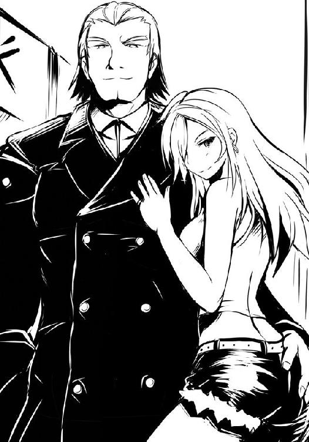
僕は思わず二人から一歩下がり、槍水先輩の横に並ぶ。
「噂に聞くところによると魔導士は今、海外だったかな？ ......そうか。何だかんだと未だに一度も戦っていないが、互いに頂点に上り詰めていけばどこかのスーパーで相まみえるだろう。問題は貴様だ、腰巾着よ」
「ふむ。懐かしい名だ、昔を思い出す。この地でお前たちを打ち倒した、その時をな」
腕を組んだ先輩とナックラヴィーは互いに不敵な笑みを浮かべて対峙する。スーパー店内でないのはもちろん、半値印証時刻でもないというのに、彼らの間には近づけば弾き飛ばされかねないほどの緊張感が溢れていた。それを無意識にも感じるのか、混雑しているというのに、自然と人が避けて通っていく。
女がナックラヴィーの耳元に唇を寄せ、何事か囁く。すると彼の首が初めて僕を向いた。
「その小僧はＨＰ部の新人か？ ふむ、アンの言う通り地味だが悪くない体をしている」
アン、というのが彼が抱き寄せている横の女の名のようだ。ナックラヴィーが続ける。
「今、この地には各地から名を上げようとする狼たちが集っている。いや、正確には明日の夜には、だが、今夜の段階でも相当数が集まってきている。すでに《東北のカナリア》や《サラマンダー》等の猛者を見かけた。無論、昨年このおれに屈辱を味わわせたギリー・ドゥーを始めとした地元の狼、そして未だ知られていない有力な狼たちも同様に集っていることだろう。そんな中、今頃状況を聞かせているとは......まったく、お前たちは甘すぎる。遊び気分か？」
「再確認していただけだ。それより、奴は......サラマンダーは今年も来ているのか」
「あぁ。さっきクレープ屋の前で連れと一緒にいた。あいつ、今年は魔導士がいないことを今朝まで知らなかったらしく、いささか元気をなくしていたぞ」
先輩とナックラヴィーが少し笑みを漏らした。
「本人がいないのでは昨年の敗北は拭えない、か。なに、今年は私が相手をしてやるさ」
「お前がか。......ふむ。お前の噂は俺の土地にまで響いているぞ。昨年に相まみえた時、確かに大物の片鱗は見て取れたが、まさか、と思った。未だに信じられん。......歴戦の猛者だったあのＨＰ部のメンバーをお前が次々に狩っていったというのは本当か？」
その瞬間、場が凍りついたかと思ったほど緊張が高まった。音や光を発したわけでもないのに、周囲の人たちが何事かと顔を向けてくる。
先輩がやや俯き、身長の高いナックラヴィーを睨み上げる。思わず横にいる僕でさえ身構えてしまったほど、強烈な殺気を彼女は放つ。
「......私と拳を交えた段階で彼らは退部していた。故に、それは虚実だ」
「だが、倒したのは事実というわけか。かつてはメンバーの後ろにいるだけだったお前が、この短い期間にそこまで......なるほど」
そういえば、と僕は思い出す。先輩は時折昔のＨＰ同好会が部だった頃の話をしてくれるが、その時には先輩の他にも数人の部員の姿があった。だが、何故か僕と白粉が入部した段階で部は同好会に格下げになっており、メンバーは先輩ただ一人。今まで特にそれを疑問に思ったことはなかったけれど、よくよく考えてみればおかしな話だ。僕らと入れ違いに卒業した人ならともかく、現在の三年生、少なくとも僕が知っているだけでも金城優は部から名を消している。普通、部活動は引退したとて卒業までは名が残るはずだった。
どういうことだろう？ 何より、槍水先輩がかつての仲間を狩ったというのは......一体どういうことだ？
「お前が腕を上げたように、おれとアンも技を磨いた。拳を交えるのが今から楽しみだ。......スーパーで会おう、氷結の魔女よ」
それまで先輩の昔の二つ名で、腰巾着と呼んでいたナックラヴィーは、最後だけ現在の二つ名で先輩を称し、僕らの前から去っていく。
先輩は彼らの背中が人混みに消えてもなお、鋭い目で見つめ続けていた。
彼女が瞼を伏せると、それまでの緊張した空気は霧散し、祭りの雑然とした空気が戻ってくる。先輩を中心に生まれていたエアポケットも自然と消え、人混みの中に僕らは埋もれた。
「......先輩？」
「すまない。普段スーパーの外であまりこういうことはないんだが、やはり場所が場所だけに思わず、な。各地から名うての狼が集い、食べ物の匂いがするせいか、体が勝手に反応してしまう。......まだまだだな、私は」
「あの、さっき奴が言っていたＨＰ部の元メンバーを狩ったっていうのは何なんですか？」
先輩は視線を逸らす。それでも僕の質問に答えようとしたのか、一瞬口を開きかけるも、すぐに閉じてしまう。それから薄く彼女の唇が開き、漏らすように、彼女は言った。
「......今は、答えたくない。いずれお前たちには語らなくてはならないとは思う。いや、そのうち、誰かから伝え聞くかもしれない」
先輩が悲しそうな、そしてどこか許しを請うような哀願の眼差しで僕を見てくる。キュッと僕の心臓が締められたように、苦しくなった。
「だが......今は知らないままでいてほしい。私の我が儘かもしれないが、今はまだ。時が来れば、きちんと話す。......だから」
ただならぬ何かがあったのだと彼女の瞳を見ただけでわかる。けれどそれ以上僕は訊くことはしなかった。ただ頷いた。聞きたいと強く言えば、先輩は教えてくれるかもしれない。そんな気はしたが、こんな目をした先輩から話を聞き出すのは何か違う気がした。
......というか、単に先輩にはそんな目をしていてほしくはなかった。いつもみたいに強気で、どこかそっけないくせに変に優しい、そんな先輩でいてほしかった。
「......んじゃまぁ屋台、もっと見てまわりませんか？ 僕の地元じゃこんな大きなお祭りなんてなかったんで、実は気になってしょうがないんですよ」
僕は笑って言った。先輩もまた、ほっとしたように、そして少しだけ眉を八の字にして、笑ってくれる。
「......あぁ、行こう。少しぐらいなら私が奢ってやる」
「アレ、でも食べ物は......あ、ひょっとしてクジとかですか。いやぁ、でもやっぱり一応男なんで、僕が奢りますよ」
「何を言う。こういう時は年上が奢るものだ。......だが、お前がどうしてもというのなら、奢られてもいいぞ？」
わざとらしく先輩は言うので、僕もまたわざとらしく「どうしても奢らせてください」と言い、二人して笑った。
その時、数人が僕らの間を歩いていく。さすがに往来の中で立ち話は邪魔になるか。さっきまでは先輩とナックラヴィーの放った殺気のおかげで人が遠ざかってくれたが、今は、そうじゃない。立ち止まっているだけでしばしば人とぶつかりそうになる。
「......あ〜、それじゃ行きましょうか、先輩」
うむ、と先輩は頷くものの、また僕らの間を人が歩いていく。皆、悪気があるわけではない。人が多いのだ、しようがない。
行きましょう、と先輩に僕は再度言うと、先輩は返事ではなく、手を差し出してくる。
「......はい？」
「手、繋いでいかないか。またさっきみたいにはぐれても面倒だろう？」
槍水先輩はサラリと言った。さも、普通のことのように、当たり前のように。
差し出された細い腕、細い指、黄色や赤みがかかった屋台の照明や街灯に照らされてもなおその白さを感じられる彼女の肌......。僕は戸惑った、というより躊躇した。
精巧な飴細工を口にする時の気分だった。それを口にしてしまうのはあまりに勿体ない。けれどそれはとても魅力的で、誘惑的で......そうであるが故に、そして、そうであればあるほどに、余計躊躇してしまう。
僕は差し出された手をしばし見つめてしまう。すると槍水先輩の開かれていた指が花が萎むように、弱々しく握られる。
「......なんだ、嫌か？」
寂しげな顔で、不安げな声で、先輩は言う。
僕は胸の内で苦笑しながら、彼女の手を少しの思い切りとともに、握る。
普段、大の男たちを一瞬にして殴り飛ばしているとは思えないほどしっとりと柔らかくて、強く握ったら壊れてしまいそうな、そんな手。その手の指は、少し驚いたように一瞬開かれたが、一拍置いてから、そっと僕の手を握ってくれる。
ただ手を繋いだだけだというのに、どこか抱きしめられたようなその優しくて温かい感触に、思わず息が詰まりそうになる。自分の顔が紅潮したかもしれない。いや、していると思う。
「あ、いや、何か、こういうの、あんまり経験がないもんで......！」
慌てて言ってから、ひょっとしたら屋台の照明とかで誤魔化されているかもしれない、と気づく。しかしもう後の祭りだ。逆にテンパっていると告げたようなものだ。
先輩はそれに気づいたのか気づいていないのか、小さく息を吐くように、一言口にする。
「麗人とは？」
「あいつは昔からどこにいても目立つんで。その、こういうのはあまり」
著莪は、特に田舎では、やたらに目立つ。いくら子供の身長であっても、黒山の人だかりの中を偽物のように綺麗な金髪頭がちょこまか動いていれば簡単に見つけられるから、昔から一緒に遠出する時や人混みの中でもこんなふうに手を握ったりしたことなんてほとんどない。
便利といえば便利だったが......そのせいで当時は著莪が好き勝手動いてそれに僕が仕方なく付いていくという変な関係になっていた気が......ん？ 今もかな？ いや、うーん、どうだろ？ まぁ、趣味嗜好が基本的に一緒だからいいといえばいいのだけれど、何か釈然としない。
うん......そう、何か、釈然としなかった。釈然としない......今、この瞬間もまた。
「そうなのか。ふむ......ん？」
槍水先輩と僕は見つめ合う。別に互いに顔を赤らめて、とかいうのではなく......お互いに何か変だと気がついた。
最初、二人して何が変なのかわからなかった。お互いに見つめ合い、目を瞬かせ......そして、二人とも視線を互いの握られた手に落とす。釈然としない原因がそこにあった。
お互いに、右手同士だった。どこからどう見ても......ただの握手である。
僕らはその瞬間、互いの顔を見ながらプッと吹き出し、声を出して笑い合う。
「何だコレは。慣れていないのが露骨に表れているな、佐藤」
先輩は笑いながら、言った。その笑顔は彼女をいつもより幼く見せた。
「ホントですね、まったく」
「これから慣らしてやろう」
僕は右手を左手に変える。先輩の指がそっと僕の手を包む。また、抱きしめられるような感触に僕の笑い声が一瞬止まる。
「さぁ、行こう」
先輩が言う。その微笑みに先ほどの暗い影はなく、僕もまた素直に笑顔で、はい、と応えた。
人混みの中、僕らは文字通りに肩身を寄せ合い、笑うように喋りながら歩いていく。
たまに触れ合う相手の腕の感触に、時折言葉を詰まらせながら。
祭りの雑踏がどこか遠い。
祭りの通りから少し離れた所にある、芝生が敷き詰められた広い公園というか、単に外灯と、四角いテーブルに椅子のセットがポツリポツリとあるだけの広場のようなところで、僕たちは白粉と合流した。彼女はどうやらとても楽しんできたようで、テカった肌でニヤニヤとした笑顔を作っていた。何となく嫌な臭いとかしそうだったので、途中で買ってきた虫除けスプレーを彼女に振り掛ける。......微香タイプなのが悔やまれた。
では、と三人揃ったところで先輩が今宵の説明を始める。
この土地で注目すべきスーパーは祭りの大通りを中心にして東西に一店ずつ。祭りの期間でもなお挑戦的な弁当を販売するそれらの店に各地からやってきた狼たちは集うのだという。
「二店とも腕のいい半額神が治めている。だが、残念なことにどちらも半値印証時刻がほぼ同じで、負けてもハシゴは難しい。不可能とは言わないが、期待はするな」
「つまり、一発勝負、ということですね？」
「そうだ。ただまぁ全員が必ずしも腕利きとは限らない。何度も言うがこの地で明日弁当を手に入れればその活躍は一気に噂になる。それを狙って一旗揚げようとするルーキーも多い。だから全員が必ずしも強敵ではないが、必ず強敵はいる。見極めを怠るな」
「それで、チャンスは最初の一回だけ。ハイリスクですね」
「そうだ。ただ、弁当を手にすることができれば名が上がる。それにくどいように言うが、勝利者が手に入れる弁当はスーパーの苦戦が必至のこの期間にあえて出してくる勝負の代物であって確実にうまい。これだけでも今回のリスクに見合うだけのリターンだとは思えないか？」
僕と白粉が頷くのを確認してから、先輩は続ける。いつものように自分たちが固まっていくと人数が増えて弁当奪取率が下がる、故に今回も分かれて違う店に行くことにしよう、と。
「私は西へ、お前たちは東の店に行くといい。あの店は他ではあまり見ない弁当コーナーがある。良い経験になるだろう」
それは何ですか？ と僕は尋ねるものの、先輩は何かを含んだような笑みを向けてくるだけで、答えてくれない。
「これまでとは勝手の違う環境で、状況を的確に読み取り活路を見出す。厳しい戦いになるだろう。だが、それでもなお勝利を掴めるようにお前たちを強化する。それこそが今回の合宿の主目的だといってもいい。負けてもいいというわけではないが、負けを恐れずに戦ってこい」
はいっ！ と元気いっぱいの白粉が声を大にして応じる。争奪戦終了後はまたこの場所で落ち合おう、と約束して、僕らはそれぞれの戦場へ向かった。
観光地とはいえ、田舎の道だ。祭りのにぎわいは遠く、人はおらず、少し暗い道。先輩は今一人でこんな夜道を歩いているのかと思うと、少し気になる。
ただ不安な半面、大丈夫だろうな、という気持ちもどこかあった。
僕は左手にくっきり残る先輩の指の跡を見る。あの人、おいしそうな屋台の前に来ると手に滅茶苦茶力が入るようで......あやうく手が握り潰されるかと思ったぐらいだ。
白粉が上機嫌に、スキップのような軽い足取りで僕の横を追い抜いていく。
「......何だよ、そんなに楽しかったのか？」
「そりゃもう！ 日本古来よりの貴重かつ重要な文化にこうして直接触れられたことは何とも言えない感動でした！ なんてたって男たちの夢の祭典って感じで......ぶつかる男たちの肌と肌、流れ、垂れ、弾ける男たちの汗、地を震わせるかのような鬨の声......たまりません！」
僕の前を行っているので顔は見えないが、多分、こいつ今相当邪悪な笑顔を浮かべているんだろうなぁ。普段からは考えられないぐらい、饒舌だ。
「あの経験のおかげで新しいアイディアも湧いて湧いて凄かったんですよ！ 例えばですね、みんなその気がないのにもかかわらず、時折触れ合う相手の肌の感触に思わず興奮！ そんな反応をしてしまう自分に戸惑いを覚えつつ、神輿を担ぐ彼らは祭りの雰囲気に呑まれるようにして気がつけば時に攻めて、時に受けて、時に両方を同時にって感じで、こう、ね！
ポイントはみんなその気がないのに、ってトコですね！ そのくせ無理やりってわけでもなく、あえてこう本能というか、湧き起こる扇情的な気分に自然と身を委ねていく感じをうまく表現できればきっといい感じの作品が――あぅっ！」
僕はいつものように白粉の後ろ髪の束を一度引っ張る。
「......悪いんだけど、食欲失せるから、やめてくれ」
「あ、す、すみません。ちょっと、興奮していて......気が回りませんでした」
白粉はいつものように申し訳なさそうに言うのだが......彼女はクルリと反転すると右手をグッと固め、目をキラキラと輝かせた。
「今の話でムラムラして、このままじゃ弁当を奪取できないというわけですね!?」
やたらにテンションの高い白粉に少しイラっときたので、僕は彼女の頬を力任せに片手で掴んで、タコ唇にする。
「......しゅみましぇん、ひょっとしょうしこいてまいた......」
おとなしくなった白粉と共に歩み行くと、数分で迷わずにスーパーに着く。先輩から予め道を聞いていたのもあるが、迷うだけの道がなかったと言った方が正しいかもしれない。
外から見た限り、小綺麗で、一階建てだがそこそこ大きなスーパーだ。ただそれ以上に駐車場がスーパーのサイズに比べてかなり広い。こういうのも田舎特有のものだろう。地域の店舗数が少ないため比較的広範囲からの集客が見込め、車客も多くなるのだ。よく見れば駐車場の脇にはバス停すらある始末だ。
駐車場を渡っていると白粉がふと立ち止まり、辺りをキョロキョロと見回し始めた。
「......ん、あれ、なんだろう......誰かがこっちを窺っているような......」
僕も一緒に辺りを見回していると、何やらスーパーの自動ドアの前にスラリとした人影が。目を凝らすと、その人影がコクンと小さく頭を下げた。あれ、ひょっとして......。
「あ、えっと......真希乃？」
自動ドアから漏れる照明に照らされているのは昼間、川で出会い......僕の全てを知った真希乃だ。彼女はシンプルなデザインのキャミソールにショートパンツという出立ちで、昼間に彼女が言ったように赤い樹脂製フレームの眼鏡をかけていた。
買い物？ と僕は尋ねる。真希乃はニッコリと笑顔で一度頷くものの、その後わからないというように首を捻る。......どっちなんだろ。
「お前たち、知り合いか？」
よく通る男の声。僕たちがそちらを見やれば、案の定こちらに向かって歩いてきていたのはナックラヴィーと、相変わらず彼に体を密着させているアンだ。
彼らを認めると、真希乃はそちらにもペコリと頭を下げる。
「あら、ご丁寧に。でも昨年靴底を叩きつけられた恨みは忘れないわよ？ ギリー・ドゥー」
その後もアンは口調こそ軽いものの、困惑した笑みを浮かべる真希乃に対し、あれやこれやと因縁をつけまくる。ただどうもそれを聞いていると真希乃は......。
「あの、ちょっと。......ギリー・ドゥーというのは、まさか真希乃の二つ名なのか？」
そこで真希乃の大きな目が見開かれ、僕と、状況を飲み込めず困惑している白粉を見る。
「佐藤さんも......半額弁当を？」
驚く僕ら。相変わらず困惑し続けるも、どこか疎外感を憶えたのか白粉が勇気を振り絞るように、「えぁっと......あ、あたしもです」と述べる。何だか皆、混乱して整理がつかなくなってきた時だった。遠くからバッバッバッと低出力な二つのエンジン音が聞こえてくる。
ナックラヴィーたちがその音の方へ顔を向けると「......来たな」と呟き、ニヤリと笑った。
「魔導士がいない今、あなたの唯一の壁。最強に最も近いとされる狼、サラマンダー......でも、あなたなら勝てるわ」
「わからんぞ。あの火トカゲとて、あの魔導士に勝つために自らを鍛え上げてきたはずだ。最強に最も近いと称される男だ、油断はできない」
「でも、彼が最強に最も近くても遠くても、あなたには関係ないわね。だって、あなたが......あなたこそが、最強なんですもの。二位争いなんてどうでもいいわよね」
まったくだ、とナックラヴィーとアンは笑う。......イチャイチャする二人は、正直、傍から見ているとかなりイラッとくるバカップルにしか見えなかった。
真希乃や――アンがいるせいか逞しい体をしているのにナックラヴィーに反応しない――白粉でさえも何となく距離をおいてしまうほど、二人が纏う空気は異様......というか、ウザイ。
二台のバイクが駐車場に進入してきて、スーパー入り口横の駐輪場にて停止する。小洒落た赤いスーパーカブから男が下りてくる。
「相変わらず女ともどもバカそうな笑い声を上げているな、ナックラヴィー。いい加減迷惑だぜ？ その声もそうだが、この季節にお前たちが参戦するのもよ」
彼がヘルメットを取ると、夜の帳の中であってもなお目立つ、見事なまでに真っ赤に染められた髪が露になる。大きな口に笑みを湛え、声同様に自信に充ち満ちた目をした男だった。彼は胸ポケットから小さめの丸いサングラスを取りだし、装着する。
またこの時もう一台のバイク......オンボロのスーパーカブからヒョロリとした長身の、猫背の男が下りてきて、ヘルメットを取る。その瞬間、思わず僕は「あっ」と声を漏らした。
ボフっという音とともに見知った顔......というか見知った梵天のような髪型が現れたのだ。
「これで魔女と《大顎》でもいればおれ的注目株はほぼ勢揃いって感じだな」
そう言って銀面のサングラスを装着した立派なアフロヘアーの男は、かつて夜の公園で出会った歩くニュースペーパー、《毛玉》だった。
●
槍水仙は自動ドアを抜けて、ひんやりとしたスーパー店内の空気をその身に浴びた。先ほどまで暑さに緩んでいた肌と、後輩と祭りを歩いていたことで弛んでいた気持ちが、その店内の新鮮かつ神聖な空気によって引き締められる。
彼女はまずいつものように店内外周をゆっくりと歩いていく。棚に並ぶ新鮮な野菜や果物の青々とした美しさに心を落ち着けつつも、店内の様子を肌で窺った。今、店内に集っている狼は自分を含めて約九、一般の客はゼロという有様だ。如何にもこの季節らしい客層である。
店内最奥にある総菜・弁当コーナーに一歩、一歩と近づいていくに従い、彼女の肌はピリピリとしたものを感じ始めた。思わず彼女の口元に笑みが浮かんでしまう。
間違いない、今年もこの店は......いや、ここの半額神はやってくれる。
槍水にはまるで総菜・弁当コーナーだけ特別な照明を当てているかのように、棚に鎮座する総菜や弁当が煌びやかに光り輝いて見えた。
ただ、恐らく照明は普通のものだ。美しく見える理由は照明の力ではないのだ。そんな機械的なものではない。
この総菜・弁当の煌びやかさは、コーナーを担当している店員たちの気合いの美しさだ。祭りという大規模なイベントを相手にする以上、商業的に見れば敗北は必至という中にあって、それでもなお立ち向かおうとするその気高い心意気......それは人によっては愚かと称する者もいるかもしれない。祭りなど数日で跡形もなく消え去るもの、だから適当に無理をしないで待てばいい。それこそが賢い選択であり、スーパーに詳しくない者とてそう思うことだろう。
だが、愚かでもなお突き進もうとする猛者たちがいる。赤字を恐れず勇気の一手を放つ勝負師たちがいる。敗北にただ真っ直ぐに突っ込み一矢報わんとする英傑たちがいる。それがこの店と、佐藤たちが向かった店の半額神だった。彼らはわずかな部下とともに、祭りという強大な軍勢に立ち向かっているのだ。たとえ一矢報いたとしてもその利益は微々たるものだろう。労力に見合わないものだろう。だが、それでも立ち向かうとする彼らの闘志こそが、総菜・弁当コーナーを、さも光を放っているかのように、神々しく見せているのだ。
「今年も、なかなかだな」
そこの総菜コーナーはバイキング方式に天ぷらやフライ等を客がパックに詰めるシステムだが、すでに何も残っていなかった。売れたのだ。屋台の料理ではなく、あえてここの総菜を夕食とした者たちが大勢いたことの証拠だった。果たしてどのような総菜が並んでいたのか、すでに値札が回収されてしまっている今となっては知る術もないが、きっと、相当なものがあったのだろう。槍水はどこか嬉しさに似た気持ちを胸に、それを眺めた。
この時に至って、槍水はチクチクとするような視線を感じ始める。自分が総菜・弁当コーナーに達したことで、店内にいた狼たちが意識し始めたのだろう。地元なら知れた顔と名だ。気配だけで自動ドアを潜る前から狼たちが察し、入店と同時に視線を浴びるが、こういう遠方の地では氷結の魔女の名も姿も知らぬ者、忘れている者も多く、少し間があった。
槍水はこちらの力量を計ろうとする狼たちの視線を気にせず、歩みながら弁当コーナーを見やる。数は多くない。三割引きシールが貼られた『ビックリ煮込みハンバーグ弁当』『ミックスフライ弁当』『照り焼きチキン弁当』の三つ。槍水は煮込みハンバーグに狙いを定める。
それはハンバーグというよりは気持ち平たい大きなミートボールという感じのものがゴロッと三つ入った弁当だ。ボリュームもいいが、何より名前にある〝ビックリ〟というのが槍水の気を引いた。何がビックリなのか、実際に手に入れ、舌で確かめよう。
彼女は弁当コーナーを立ち止まることなく過ぎ去り、精肉コーナーに向かう。そして同時に店内の狼の気配を探った。姿こそ見えないが、自分に向けられる視線の中に知っている狼が数匹。あとの残りは、自分とは初めて当たる相手か、記憶に残らない程度の腕前でしかなかった者たちだろう。ただそのうちの二つほどが強敵と思しき研ぎ澄まされた視線で槍水を見ている。知らぬ相手だが、確実に二つ名持ちだとわかった。
今年も楽にはいかないだろう。だが、敵が強ければ強いほど、彼らの手をかわし、払いのけ、掴み獲った弁当はうまくなる。
槍水はぞくぞくするのを感じながら、島棚の缶詰コーナーの前に身を置いた。
「久しぶりだね、氷結の魔女」
棚の向こう側に誰かがやってきた気配とともに、美しい男の声がした。濁りのない澄み渡った中性的なその声。姿こそ見えないが、東北のカナリアだ。一年ぶりだった。
「どうやらサラマンダーもナックラヴィーも向こうの店に行ったようだね」
一瞬佐藤と白粉の顔が槍水の頭に浮かぶ。サラマンダーはともかく、ナックラヴィーが心配だった。彼らの腕自体は中の上といったところだが、その技は、ルーキーだろうがベテランだろうが関係なく効力を発揮し、勝ち負け以上に狼にとって大切なものを奪い去る。
ただ、そう危惧はしたものの、直後にそれとて彼らの試練の一つだと槍水は思い直した。佐藤たちは過去に《ダンドーと猟犬群》と戦い、一時は行動を共にしていたこともあるから、もしかしたらナックラヴィーの特殊能力とて難なくかわせるかもしれない。だが、他の狼同様、もし術中にはまろうものなら相当に苦しい戦いを強いられるだろう。
いや、と、槍水は小さく首を振り、先ほどまで佐藤と繋がっていた右手を握った。大丈夫だ、きっと。彼女はそう自分に言い聞かせる。
「奴らとの戦いは明日までのお楽しみにしておこう。花火ちらし寿司を食すには、それぐらいの敵がいないと味が落ちる」
「花火ちらし寿司か。店や作る店員たちを想えば出ない方がいいんだけれど、ボクらとしては出てほしい......というか出てもらわないと困る。二律背反だ。本当、困ってしまうね」
島棚の向こうでカナリアが苦笑したようだ。槍水もクスリと笑う。
半額神が勝負をかけて作り上げた弁当だ。その心意気を知る者としては、客の立場であっても、是非とも売れてほしいと思う。だが同時に、それを目当てに集まる狼の立場としては美しい花火ちらし寿司の上に半額シールという名の一輪の花が咲くのを祈らずにはいられない。
「〝しかし、だからこそ、我々は全身全霊でもってこれを手にせんとするのだ。それこそが恵みを与えたもうた神への御礼にほかならぬのだから〟......これ、誰の言葉だったかな」
カナリアの言葉に槍水は聞き惚れた。声がいいというより、その語る言葉の真意を正しく理解し、共感し、そしてきちんと自分の言葉として発しているが故に聞く者の心に響いてくる。
「考えるまでもない。......狼の言葉さ」
お見事、とカナリアは笑う。
「ねぇ、魔女。お互いに弁当を獲ったら、一緒に夕餉をしないか？ 君とは一度、ゆっくり話がしてみたかったんだ」
「後輩が二人いるが、構わないか？ 二人とも面白い奴らだ」
「おっと、そうか。先輩はいなくとも、後輩はいるのか。てっきり今年は一人だと思っていたよ。......ふむ。まぁ、構わないよ。フフッ、楽しみだ。勝利の一味に美しい食事の相手、煮込みハンバーグにより一層の――」
「......残念だ。たった今、今宵私がお前と食卓を囲むことはなくなった」
硬く突き放すような口調で、槍水は言った。組んだ腕に力が入り、思わず殺気が体から溢れ出る。カナリアが一瞬たじろいたのが陳列棚越しでも感じられた。
「なんてことだ。君もあれを......。あのボリューム感とビックリの文字に惹かれたんだね。フフッ、悲しいね。この場においては気が合うことが必ずしも良いことじゃないなんて」
槍水の気迫に圧され、最初彼の声はかすかに震えを含んでいたものの、すぐさまいつもの口調になる。しかも言い終わる頃には、口調と気配にこれまでよりも余裕を滲ませてみせた。
さすがは東北のカナリアだ、伊達に知られた名ではない。
「しかし、大したものだね。この一年で君は大きく成長している。今夜はまだ花火ちらし寿司じゃないとはいえ、これはボクも本気を出さないとやられてしまいそうだ。......楽しみだよ」
それで二人の言葉での会話は終わりだった。互いに、無言のまま、その時を待つ。
ふいに、おかしな気配を感じた。何者かが新たに入店した。殺気立った狼たちの戦場にやってきた、何か。狼ではない、だが、一般の客でもない気がする。犬、か？
槍水は視線をエントランス方向へと向け、今し方入店した者の姿を探した。果たして彼女が見たのは店内の様子を窺うように首を伸ばす、淡雪えりかの姿だった。
「あぁ。そうか、それで......」
ロッジで彼女に既視感を覚えた理由がようやくわかった。あの淡雪えりかは、狼だ。それも昨年、数少ない花火ちらし寿司を手に入れた一人である。正確には手に入れたのは彼女だが、実質的に手に入れるまでの戦闘の多くをかのギリー・ドゥーが担っており、そのために槍水の記憶に薄かったのだ。
あの時は確か、コンビというよりはギリー・ドゥーがただサポートに回っているようで、独特の戦闘を見せていたのを槍水は思い出す。
淡雪えりかはキョロキョロと親とはぐれた子供のように至る所へと視線を巡らせつつ、店内を歩いていく。一応、狼のそれらしく、外周を回り、総菜・弁当コーナーを回るが、どう見ても意識は弁当ではない〝何か〟に向けられていた。
淡雪は総菜・弁当コーナー前で小さく溜息を吐いた。そして、俯き加減のままトボトボと元気のない足取りで、島棚の間を抜け、レジ方面へと向かっていく。当然手ぶらだ。目的の品がなく、店を出ようとするかのような足取りである。
槍水は一度精肉コーナー横にあるスタッフルームへの扉を見、まだ人が出入りする気配がないことを確認し、その場を離れ、淡雪を追う。彼女は力ない足取りなので、レジ前のパン及び和菓子が陳列されている島棚の所で追いついた。
「淡雪、でいいんだったかな」
はい？ と二つの細い房が揺れ、淡雪が振り返る。彼女の瞳が槍水を捉えると、暗みのあったそれがパッと昼間に会った時のような、営業用のそれに切り替わった。
「あっこんばんは、槍水さん。お買い物ですか？ 何かうちのロッジで足りないものなど？」
「店を出るのか？ 半値印証時刻前にやってきて、戦わず、何も買わず」
淡雪の営業用の瞳に、鋭さが宿り、槍水を見据えてくる。
「まさか......あなたも狼と呼ばれし者の一人だと？ ......あっ、いえ......そう、そういえば昨年、向こうのスーパーでわたしたちは――」
「そうだ、数少なかった花火ちらし寿司を目指して拳を交えたな。お前が......いや、お前とギリー・ドゥーが獲った直後に、私も獲った。今でも昨日のことのように思い出せる」
槍水と淡雪は、共に体を陳列棚へと向けた。各種一二八円の三本入り串団子パックが並んでいたが、槍水はその中でもお気に入りの胡麻あん串団子に視線を落ち着けた。
「えぇ、わたしもよ。あの時とは雰囲気が違ってて、気づかなかったわ。......不思議ね、特別見た目が変わったわけじゃないのに、お昼に会った時には気がつかなかったなんて」
淡雪の口調が丁寧なものから、恐らく普段のものへと切り替わる。それはきっと狼としての淡雪の姿でもあるのだろうと槍水は察する。
「当然だ。普段は私とてただの小娘でしかないが、半値印証時刻の前後だけは――」
「獣となる。......それで？ その獣と化した槍水さんが、何かわたしに用事でも？」
そう言われると槍水も少し困る。特別用事があったわけではないのだ。ただ、知っている顔がいて、それが昨年戦った狼だとわかったのに、そいつが参戦もせず、何も買わずにスーパーを出ていこうとしていたから気になった。そうとしか言いようがなかった。
仕方なく、素直に何故帰るのかを尋ねた。
「わたしが欲しいものが特になかったの。だから帰るのよ」
「弁当はある、それもうまそうなのが三つだ。地元のお前じゃ喰い飽きたのか？ それとも、ギリー・ドゥーとの待ち合わせの店を間違えたか？」
淡雪が横目で一瞬睨んでくるが、すぐにそれは槍水から外され、陳列棚下段の一口羊羹の袋詰めに向けられた。
「そんな〝約束〟、わたしたちにはないわ。......もうね」
もう？ と槍水は口にするも淡雪は応えず、背を向けて自動ドアへと向かって歩き始めた。待て、と呼びかけて追おうとする槍水を店内中に迸る緊張感が止めた。耳を澄ますまでもなく、肌が状況を感じ取る。半額神が店内に降臨したのだ。
槍水は小さく舌打ちし、淡雪の背を見送る。彼女の姿がスーパーから消えると、槍水は軽く頭を振りつつ歩き出す。頭を切り換える。余所事に気を取られている場合ではない。普段ならまだしも、今のこの場においてちょっとした油断は命取りだ。
腹の虫に意識を向け、槍水は空腹を強く感じ取る。小娘は、獣と化す。
○
ナックラヴィーとアンが不敵な笑みを残して店内に入っていったが、僕と白粉、それに真希乃とバイクから降り立った二人の男は、共にスーパー入り口横に残った。
「久しぶりだなぁ。佐藤」
赤毛の男と向かい合い、互いに相手の頭に手を伸ばしている毛玉が言った。あらかじめワックスでも馴染ませてあったのか彼は指先だけで赤毛の髪を捻り、伸ばし、セットしていく。また同時に赤毛の男は巨大なフォークのような器具を用いて毛玉のアフロを調整していく。
正直、夜にサングラスをかけた男が二人して互いのヘアセットをするなど、異様にもほどがある。それがスーパーの横、自動販売機の明かりに照らされている中で行われているのだからインパクトが増した。
見る見るうちに毛玉のヘルメットで潰れていたアフロが元気を取り戻し、赤毛の髪がツンツンに尖っていく。二人とも何かを間違えてしまったパンクロッカーのようだ。
「これで、っと。よしっイケメンだ」
「お前もな。惚れそうだ」
そう言って二人は拳を打ち合わせる。僕の横で『ニチャ...』と粘着性のある笑みを浮かべた白粉が「......ほぅ」と不気味に呟いた。『筋肉刑事』の出演決定の瞬間である。
二人のセットが終わってから、ようやく「さて、自己紹介でもするか」と赤毛が言う。
そこで、唯一全員を知っているらしい毛玉が音頭を取ってくれ、各自を紹介し始めた。
何でも赤毛の男は現在東北の大学に通っているが、元々は関東の出で、その時は毛玉の後輩をやっていたそうだ。今回のように毛玉が近場まで来た際にはよく一緒に行動するらしい。
僕は最初、弟とか親族関係なのかと思ったのだが、言われてみればサングラスで目元が隠れているものの、顔自体はあまり似ていない。だが、どこか似ていると思ってしまうのは、多分、ファッションセンスをはじめとした雰囲気のせいなのだろう。
「あ、名前を忘れていたな。コイツは響鉄平、二つ名はサラマンダーだ」
サラマンダー、か。そういえば昔『沙羅曼蛇』という二人同時プレイが可能なＳＴＧがあったなぁ。著莪と一晩中やりこんだっけ。ん、待てよ、そういえば......。
「サラマンダー？ そういやさっきナックラヴィーが最強に最も近いとかなんとか」
僕の言葉に赤毛のサラマンダー......鉄平は「それなりに頑張っているからな」と苦笑う。
「昔はオレの方が強かったんだが、気がついたら抜かれちまったのさ。今じゃこいつの相手になるのは魔導士クラスの連中だけだ」
「おいおいやめてくれよ、先輩。......よぅ、ギリー・ドゥー。相変わらず身長ばっか伸びて乳が貧相だな。成長期だろお前、もっと頑張れよ」
照れたらしい鉄平が無理やり話題を変えようとしたのか、唐突に割とキツイセクハラを真希乃にぶつける。しかし真希乃は困ったような笑顔で肩をすくめるだけだ。むしろ関係ないはずの身長も低い白粉の方にダメージがあったようで、彼女は鉄平から隠れるように僕の陰に入り、僕のＴシャツの裾を軽く掴む。
また毛玉によるとギリー・ドゥー、つまり真希乃はこの土地に住んでいる狼で、中学生でありながら二つ名を持っている上、二年連続で花火ちらし寿司を奪取している強者だという。
「何か、凄いんだね。川で会った時は狼だとも思わなかったのに......」
真希乃は笑顔で、ありがとうございます、と小さく頭を下げる。
「じゃ、今度はこいつらの紹介を。何とこいつらはあの魔導士が所属していたＨＰ部の後輩だ。......まだ、話してはなかったよな？ 佐藤と白粉だ。経験は浅いが、なかなかの腕だぜ」
「ほ〜う、それじゃ二つ名があったりするのか？ 魔導士も去年ルーキーだった槍水も、この時期にはすでにあったんだし」
毛玉は口を一文字に閉じ、ちらりと僕を見てくる。その風貌から何となくテキトーな印象のある男だったが、案外、人の機微というものがわかる奴なのかもしれない。
僕は察してくれ、というように懇願の目で彼を見つめる。
「まだ、だよな。佐藤はいろいろ言われ始めてるが......はっきりとしたやつはまだないんだ」
「なんだ、そうなのか。まぁ確かに毎年ＨＰ部に化け物みたいなルーキーが入るわけもないもんな、そりゃそうだ。悪い、気にしないでくれ」
そう言う鉄平に悪気はないのだろうが、何となくバカにされたような気がした。僕と白粉は過去の魔導士にも氷結の魔女にも及ばない、そう言われたようなものだ。
ただ悔しさとともにどこかそれが当然だという想いもあり、何となく複雑な気分になる。
その時トントンと僕の肩を控えめに何かが優しく叩く。真希乃だ。
「あの、そろそろ。時間が」
あぁ、と毛玉が腕時計を見やった。
「そうだな。よし、鉄平、行こうぜ。お前らも頑張れよ。鉄平相手にどこまで戦えるか、遠くから眺めさせてもらうぜ」
「眺める？」
「祭りのクレープ屋の兄さんが面白い奴でな、喋っていたらうまくのせられちまって、喰い過ぎた。腹一杯でな、今回は見学さ」
毛玉は笑いながら言い、鉄平とともに店内へ。先に行きます、と言って真希乃もその後を追うようにして駆けていった。
この時になって白粉は力が抜けたように僕のシャツから手を離す。彼女は店内に入っていった三人を真剣な眼差しで見つめていた。
「よし、それじゃ今思いついたネタを言ってみようか」
「情報屋の先輩後輩の関係である彼らは、毎夜のように肉体を重ねていたのだが、ある時、常に受けであった後輩君が唐突に攻守を変えようとする。今まで攻め専門だった先輩は慌てるのだが、これは後輩君が成長したことなのかもしれない、と気づく。彼はどこか子の成長を喜ぶ親のような気持ちで四つんばいにな......はっ！」
ザザッっと白粉が素早く僕から距離を取り、頭を守るようにして構える。
数秒彼女は警戒していたが、僕が何もしないとわかるときょとんとして構えを解いた。
「......えぁっと......？」
どうやら彼女は今回もまた迂闊にも口を滑らせてしまったものの、いつもと違って後ろ髪を引っ張られないことが気になるらしい。
「いや、だって、別に今回僕が関係してないからさ」
ポン、と白粉は手を叩く。どうやら合点してくれたようだ。そう、そもそも僕がいつも怒っているのは、白粉が驚くほど見事に描写した僕をモデルに使っているからなのだ。
だから、彼女が僕をモデルにしないのならば気にしない。いや、少しは気にするかもしれないけれど......。ともかく、ようやくそれがわかってくれたようで、僕は嬉しくな――
「あ、大丈夫です。後輩君がひょんなことからサイトウ刑事と関係を持ってしまい、先輩が嫉妬を燃やしてですね。それでサトウさんは命を狙――あぅ！」
何もわかっていなかった白粉の後ろ髪を引っ張り、掴んだまま僕は入店した。
彼女が落ち着くまで掴んだままでいようかと思ったものの、店内に一歩足を踏み入れた瞬間に手を離す。直後、逆に白粉が「ひっ！」と声を上げて僕に抱きついてきた。
「......これは......」
入店した瞬間、風が吹いた。木枯らしのような峻烈さで、鎌鼬のような鋭さで、僕たちに叩きつけられた風。それは目に見えぬ圧力、目に見えぬ刃。思わず、たじろいだ。
僕たちは店内にいる十数の獣の、その視線を一斉に浴びせられたのだ。ただの視線、それだけだ。それなのに全身から冷や汗が吹き出すほどの戦きを僕らに与えてきたのだった。
だが、不思議と僕らが立ち止まってすぐに、それらは消える。いや、消えたというより、他に向けられた、というべきだろう。店内の緊張感は僕らの地元のそれを上回るレベルで、まだ半値印証時刻前だというのに、肌がピリピリする刺激を感じるほど、張りに張っていた。
その中でもなお一人だけ視線を向けてくる奴がいる。鉄平だ。彼は青果コーナー前に立ち、得意げな顔で、僕らをサングラスの隙間から横目で見ていた。
なるほど、そういうことか。今のは彼や真希乃らがまとめて入店した直後だったために店内の狼たちが慌てたのだ。何せ最強に最も近いとされる男に、この辺りを縄張りとし、かつ二年連続の勝利者である少女だ。慌てない方がおかしい。そして、彼らに続いて入ってくる僕らに対しても同様に警戒を強めたのだろう。だが、僕らのたじろいだ姿を見て敵じゃない、と判断されてすぐに警戒を解いた......そんなところだろう。
「な、なんか、今の凄かったですね」
うん、と僕は頷きつつ二人でスーパー店内の外周を回るようにして歩み行く。痛いほどに張った空気の中を進んでいくにつれて、僕はどこか自分が弛んでいたことを思い知った。初めての土地、そこに建つ未経験のスーパー、そこに集う見知らぬ強敵たち......その中を歩むことはまるで獣道しかない深い森を行くのに似ていた。何が起こるかわからない恐怖、最後に何が待ち受けているのかもわからない不安......。この感覚を最近の僕は忘れていたような気がする。遠征に出る時も大抵は横に著莪や先輩のような頼もしい仲間がいてくれた。だからこういう気分は本当に久しぶりだった。
まだ勝手がわからずに、白粉と震えながらスーパーに立ち向かった日々を思い出す。半額弁当が欲しい、だから半値印証時刻が待ち遠しい。でも、その時間が怖かった。怯えていた。それでもなお......逃げるわけにはいかなかった。逃げたくなかった。
今はあの時とよく似た気分だが、あの時とは明らかに違うものがある。それは僕自身だ。幾人もの強敵たちと出会い、戦い、経験を積み、技を磨き、腕を上げた。戦うことすら理解できずにいた犬の時とは違うのだ。
僕は拳を握りしめる。口元に笑みが浮かんだ。緊張に覇気が混じり、体がうずいた。理不尽なまでに難しいＳＴＧ、そのラスボスにまで死に物狂いで到達したのに残機がゼロという状況に似ている。失敗できないプレッシャーに息が詰まりそうになるものの、ここまで辿り着けたという自信が背中を押してくれる。
僕は、戦える。そう思った。勝てるかどうかはわからない。だが、戦える。
もう僕は、僕たちは、やられるだけの薄弱な犬ではないのだ。
僕は一度大きく息を吐き、店内の冷えた空気を吸う。そして胸を張って歩み進める。横目で僕らを見ている鉄平が小さく笑って、視線を『特売 大葉一束三八円』の広告へと向けた。
ひょっとして僕たちの力を計ったのだろうか？ だとすれば、彼は僕らをどう評価しただろう。......いや、考えるまい。拳を打ち合わせる時が来れば自ずとわかるはずだ。
僕と白粉は鉄平の後ろを素通りし、店内を進んでいく。通路が広く取られており、天井こそ普通の高さだが、マっちゃんの所のように開放感のある店作りだ。通路が広いというだけでなく、商品の陳列自体に余裕があるからだろう。ギュウギュウ詰めで一つでも多く品物を並べようとした陳列棚は店側の気合いを感じるものの、少し長くいると圧迫感を覚えるものだ。
僕らは青果コーナーを抜け、鮮魚コーナーへ。いささか旬には早い秋刀魚などを眺めつつ、精肉コーナーへ。チラリと島棚の方を見やると毛玉と見知らぬ狼が肩を並べて何やら喋っているのが見えた。見学とはいえ、アイツは情報屋みたいなことをしていると二階堂から聞いているので、多分情報交換でもしているのだろう。
「......あっ」
その時、僕の鼻に強烈なボディブローのような揚げ物の香りが滑り込んでくる。今日はお粥弁当しか食べていない空腹な胃が、腹の虫が、雄叫びを上げる。ぐぅ〜、と腹が鳴ったのだ。
音は二つ。白粉もだ。二人とも毛玉の方に意識を向けていたせいで油断していたらしい。僕たちは微妙な笑顔でお互いを見、それから総菜コーナーへ視線を向ける。
そこは少し変わった造りをしていた。普通、店の内装は四角形を基本として造られるものだが、そこの総菜・弁当コーナー......というか、スーパー店内の最奥の壁はＵ字のように、緩やかな弧状に奥まっているのだ。今でこそほとんど商品がないので少しばかりの物寂しさがあるが、もしこれが全部の棚に商品がある状態ならば、きっと絢爛という言葉が相応しい光景となるのだろう。
総菜コーナーにはお握りとサンドイッチが少々、そして一匹まるまる良い感じに焼かれた秋刀魚などが並ぶ。そして匂いの素になった季節外れのカキフライと極太竹輪の天ぷらのパックが一つずつ。棚の空き具合を見ると他は匂いを残して全部売れてしまったらしい。
僕は視線を総菜コーナー横、弧状陳列棚の最奥の棚に設けられた弁当コーナーに向ける。今宵残された神の恵みは三つ。四つの四角いカツが入った『まぐろカツ弁当』、ご飯とゴロっと大きな具の入ったルーがそれぞれ別容器に入っているらしい、丸い二段式容器の『丸ごとチキンカレー』、そしてシンプルに『健康弁当』と名付けられている、ご飯にはちりめんじゃことゴマがかけられ、ひじきや大根の煮物などが入った、名の通りに健康志向な弁当の三つである。
その中で気になったのがまぐろカツだ。赤身だし、鮭のフライみたいなものだろうか？ しかし高級魚のまぐろなのに値段は定価で四八〇円。この低めの値段と四角いカツの形から察するに、恐らく鮮魚コーナーで売れ残ったまぐろの短冊状の刺身、いわゆる〝さく切り〟や〝さく取り〟と呼ばれるものを活用したものなのかもしれない。刺身ならともかく、加熱調理したのだから何も問題はないだろう。僕は今夜の夕餉を決めた。
僕と白粉は弁当コーナーを眺め、一応隣にあったおいなりさんが残っているだけの寿司コーナーを見やりつつ、その場を離れる。
「僕はまぐろカツ、白粉は？」
「えぁっと......一応カレーを狙ってみます。ただ......」
白粉はどこか言葉を濁し、店内を落ち着かない様子でキョロキョロと見回している。学校や街での彼女ならともかく、半値印証時刻前でこの様子は珍しい。
「いえ、あの......ここのお弁当コーナーだと、ちょっと大変かな、って思って。あの形だと、多分、密度が濃くなって......」
「あ、そうか。普通のと違って、一箇所に群れるから......白粉のやり方だと、キツイのか」
彼女の基本戦術はとにかく戦闘を避け、人混みの中に隙間を見つけて、そこを一気に駆け抜けて弁当を掻っ攫うというものだ。だが、今回の弁当コーナーの場合、普通のそれより左右に広がれず、密度が増す。......いや、それだけじゃないか。弧状、ということはヘタに左右へ敵をぶっ飛ばすと棚はともかく、そこに陳列されている商品まで巻き込む可能性がある。
派手な大技は使いにくく、小技を重ねていくことになる......のかな？ 当然そうなると人混みの密度は常に高く、白粉にとってはさらに不利になる恐れがあった。
「あ、でも、......案外いける、かも。多分、この場所で大技は使いにくいと思うんです。そうなると早々に一気に薙ぎ払ってお弁当を獲ることが難しいんじゃないか、って思うんですよ」
「つまり、弁当が獲られ始めるのは人数がある程度減ってから、ってこと？」
「多分、そうなるんじゃないか、と思うわけなんですけど......。あ、で、でも、違うかもしれないんで、あんまり信用しないでくださいね」
いや、十分考えられるな、と僕は思う。あえて最初出遅れて参戦するのもアリかもしれない。だが、それは何か違う気もする。姑息というわけじゃない。むしろ参戦する前に弁当がなくなるかもしれないというリスクを背負った勇気ある行為である。ただ、弁当が欲しい、何が何でもとにかく欲しいという自分の気持ちに少し嘘をつくような、そんな気がした。
どうしようかなぁ、と頭の中でぼやきつつ歩いていると、島棚の菓子コーナーの所に真希乃を見つける。僕らは彼女が見ている駄菓子系の棚とは反対の棚、煎餅等の箱や袋詰めにされているタイプの菓子コーナー前に陣取り、商品に目を向け、背中越しに話しかける。
「真希乃が狼だったって、正直驚いたよ」
「あたしもです。今日は佐藤さんに二回、驚かされました」
二回？ と白粉は横から僕を見上げてくるのだが、僕は彼女の頭を掴むと真っ直ぐ前の『ざらめ煎餅 一八枚入り（一七五円）』へ向けさせる。聞くな、という僕の意思が伝わったらしく白粉はおとなしくなった。
「真希乃は長いの？」
「まだ二年と少しです。中学校に入ってから両親が忙しくなって。あたし、料理もヘタで」
チラリと真希乃に目を向けるものの、その背中からは彼女の表情は窺えない。ふいに彼女は俯くように首を下げ、猫が警戒した時のように彼女の後ろ髪がかすかに逆立つ。
なんだ、と思った瞬間、店内空気がビシッと音を立てそうなほどに硬くなる。緊張が一気に跳ね上がったのだ。少し前の流行曲を木琴や鉄琴のような楽器で演奏している店内ＢＧＭが不自然なまでに明瞭に聞こえ、その中に足音が混じる。レジやエントランスの方からだ。
威風堂々としたどこか神聖な響きにすら聞こえる足音......間違いない、この店の半額神だ。
それはゆっくりと店内外周を通って弁当コーナーへ。見やれば思いのほか恰幅がいい初老の女性だ。エプロンを纏い、髪の毛が落ちるのを防ぐ白いふんわりとした帽子を被っていた。
彼女は総菜の棚の前まで来ると一度、島棚の方を見やり、まるで僕たち狼が店内を探る時のように瞼を閉じ......また、開く。その後ゆっくりとした動作で総菜の並びを正し、半額シールを貼り終えると、いよいよ弁当の番だ。
彼女はさして変わらない様子で総菜同様、並びを正し、半額シールを貼ってみせる。その後においなりさんの方にサッと半額シールを貼ると再びレジ、エントランスの方へと歩いていく。どうやらスタッフルームはそちらの方にあるらしい。
普通は総菜・弁当コーナーの後ろにスタッフルーム及び調理場があり、当然その近くに出入り口があったりするものだが、どうやらこの店は違うらしい。弧状の陳列棚があるのもそのせいなのかもしれない。
半額神が僕らの視界から消え、しばらく足音がした後、扉が開く音がする。その一拍後、扉の閉まるバタンという音が、響く。
足が、動いた。何か考える間もなく、自然と、勝手に。数分前にあえて出遅れるのもアリだとか考えていたのが嘘のように、走り出した瞬間に全ての策がぶっ飛んだ。策を弄するのは、僕には似合わない。弁当コーナーに向かって駆ける。横に真希乃、後ろにやや遅れて白粉。
最初に弁当コーナーに到達したのは身を低くし、壁面の棚を舐めるように沿って疾走してきたあのナックラヴィーの女、アンだ。そこに他方から二人の男。
アンは速攻による奪取は不可能と判断したのか、弁当コーナー前で反転、三つの弁当を背にする。間髪なくそこへ男がタックル、ワンテンポ後れてもう一人が飛び蹴りを放ってくる。その息の合った動き......恐らくコンビの狼だ。
アンはタックル野郎の肩に蹴り......ではなく、足を掛けた。そのまま彼女はバランスを崩すタックル野郎を踏み台にして飛ぶ。空中で飛び蹴り野郎の足を手でガッチリと掴むと、アンはそこを支点にしてクルリと反転、逆に男の顎に両足での蹴りを叩き込む。男は意識なく床に落ち、アンは綺麗に着地。その二人の脇を数匹の狼たちが駆け抜け、弁当に向かう。
バランスを崩し、弁当棚の前で転んでしまったタックル野郎が何とか立ち上がると新たにやってきた狼たちと接触。そこにアンも混じり、そしてさらに複数の狼たちとともに僕と真希乃もぶつかり、一気に密度の濃い乱戦の状態へ。
僕は乱戦に突っこむと同時に、こちらに背を向けていたパーマの男の脇腹に肘を打ち込む。怯みつつ僕の方に体を向けてくるそいつに、続けて掌底を放つ。入った。パーマは後方に倒れそうになるのだが、妙だ。確実に入ったように思えたが、手応えが浅い。
こいつ、後方に自ら飛んで掌底の勢いを殺しやがった。
パーマは後方にいた狼たちにわざと背をぶつけて勢いを殺し、体勢を立て直そうとするが、そうはさせない。僕は彼に右の肩でタックル。他の狼の背と僕の肩との間でプレス。ゼロ距離から左の拳を彼の腹部に叩き込む。
その瞬間だった。凄まじい圧力がその乱戦の場を襲った。かの絶大な生活力を有する《大猪》の発するような気力的な圧力ではなく、これは物理的なものだ。後れて乱戦にぶつかってきた後方の狼たちが呻きや悲鳴を上げ、後方からの圧力により、互いにぶつかり、押し合うようにして一斉に前に詰め寄せてきた。
僕は慌てて逃げるように、腹部を押さえて倒れ込むパーマを踏み台にして飛翔する。そのわずか数瞬後、パーマは混乱する狼たちの下敷きとなった。
照明の間の天井スペースに身を捻って着地、下方を見る。圧力の正体は最後方から突っ込んできたと思しきナックラヴィーだ。奴が両腕を広げ、遮二無二圧しまくっている。倒れる狼があればそれを踏みつけさらに圧し、何とか受け止めた狼があればこれをさらに圧して、圧して、圧し倒す。一人、二人があえて防御を捨ててナックラヴィーを崩そうと攻撃を仕掛けるも、慌てているのか、何だか力が入っていない。ナックラヴィーは構わず、圧し続ける。
一見、無茶苦茶な戦法だ。だが、彼は全てを理解した上でやっているのだと現状を見ればわかる。普通の戦場でこれをやろうものなら。乱戦を裂くようにして突き進むことになり、中央辺りに達した瞬間、全方位からのタコ殴りにあうだろう。だがこの弧状の場においては左右を陳列棚が囲んでいるため、乱戦が裂けないのだ。
ナックラヴィーのせいで密度の濃かった乱戦が、さらに濃く、隙間がほとんどないギュウギュウ詰めの状態になっている。最前列で弁当の上で手を払い合っているアンともう一名を除き、ほとんどが間合いが近すぎて攻撃を繰り出せずに、圧力に苦しみ、もがいているだけ。どれだけ名うての狼であっても、技を放つ前に密度と圧力で動きを封じられてしまえば、ジワジワと体力を削られるに任せるしかない。
ガタイのいい男とはいえ、たった一人がこの場の全てを手玉に取っているように見え、それはおぞましさを僕に感じさせる。その力強さはまるで《アラシ》のようだ。
「......アラシ、だと......？」
密度の濃い、乱戦。......これなら、今なら、あの時見た技ができるかもしれない。対アラシ戦で僕が見た、魔導士の術。試してみる価値はある。
僕は天井を蹴ることなく、そのまま重力に引かれるに任せ、落ちた。
そして着地する。狼たちの、肩の上に。
近くにいた狼たちが一斉に目を見開いて僕を見上げてくる。近くにいた一人が慌ててこちらの足を掴もうと腕を伸ばしてくるも、僕はその手とともにそいつの頭を蹴り飛ばす。弁当コーナー最前線へと幾人もの肩と頭を踏みつけて向かっていく。手を伸ばしてくる者がいれば、そいつを蹴りつけ、意識を飛ばす。
かつて僕が魔導士と初めて接触し、初めて僕が半額弁当を奪取した対アラシ戦の時に彼が見せてくれた術。魔導士はこれによって隊伍を組んだアラシをたった一人で手玉に取ったのだ。
いける。少なくとも最前線にまでは達せられるはずだ。
弁当を奪い合っているアンともう一匹が後方から迫る僕に気づくも、互いの手を払うのをやめられない。そんな無防備な彼女らに一撃を喰らわそうとした......その時だった。
耳に声が滑り込んでくる。平然とした、普段の会話のような、声が......上空から。
「案外やるんじゃん」
見上げる。空中を舞う赤い影。鉄平、サラマンダー。奴が、目前に迫る。
反射的に僕は両手で頭を守るようにガードを取る。ふいにそれまで足の裏にあった狼の肩の感触が消える。と、同時に雷が全身を貫いたような衝撃が迸った。
「な、に!?」
一瞬にして視界が真っ白になり、僕の体を飛翔感と危機感が包む。
真っ白だった視界に影が生まれる。自分の両腕だ。腕の隙間からスーパーの天井と照明が見え、それが下へと流れる。違う。自分が仰向けに吹っ飛んでいるのだ。ガードの上に攻撃され、そのままぶっ飛ばされたのか？ バカな、いくら不安定な足場だったからとはいえ、僕が......。いや、それより受け身、受け身を取らなくては！
そのガードを取ったままの両腕を解こうとするも、腕が痺れて動かない。ヤバイ。焦る。だが、動かない。天井が遠ざかる。自分が、落ちている。受け身、受け身を......。
肩に衝撃。落ちた。そのままゴロゴロと慣性で僕は床を転がる。その時になってようやく両腕が動くようになり、ガードを解くものの、力が入らない。回転を止められない。
僕はそのまま数回床を転がり、倒れた。仰向けになった僕の両目に痛いほどに眩しい照明があたる。左右に陳列棚。弁当コーナーから島棚の間までぶっ飛ばされたのか。
気を失ったように、全身の力が抜ける。ただ、視界はあって、薄い意識もあった。だが、起き上がることも、起き上がろうとすることもできない。気絶寸前なのだ。まるで眠りにつく直前のまどろみに似ていた。思考が濁り、体が糸の切れた操り人形のように動かない。
声が聞こえた。呻き声、悲鳴、雄叫び。そしてドンッドンッと重い砂袋を地面に叩きつけるような鈍い音。戦いの音。僕は天井の照明をぼんやりと見つめながらそれを聞く。じわじわとその音の数は減っていった。すると、そんな音の中にゆっくりとした誰かの足音。近づいてくる。僕は照明を見ていた。真っ白で、強い、照明だった。それがふいに消える。闇......違う。影だ。赤い、影。鉄平、サラマンダー。最強に最も近い、狼。
「瞼が開いているところを見ると、まだ意識があったりするのか？ ははっ、いっそそっちもぶっ飛んだ方が楽だったのにな」
彼の顔が迫る。しゃがんだのだ。彼が僕の視界に丸い新たな影を作る、弁当の容器だ。
「体が浮いていたおかげでオレの攻撃が幾分和らいだんだな。あのお人好しの貧乳娘に感謝すべきか否か、難しいな」
――どういう意味だ？ 僕はそう言おうとするも声が出ない。唇がかすかに開いただけだった。だが、まるでそれを聞き取ったかのように鉄平が微笑む。
「やっぱ気がついてなかったか。当然だな。お前の足の下にいたんだぜ？ オレの攻撃を喰らう直前に、アイツがお前の足を腕で払ったんだ。もしヘタにあの場で踏ん張ろうものなら、その場に倒れ、床に落ち......その後はどうなってたと思う？ ナックラヴィーが後ろから圧をかけまくっているんだ、狼連中に踏み潰されていたぜ。しかも逃げ場なんてないからな、終わるまでずっとその状態で、しばらくはスーパーに来られない体になってたはずだ。まぁ、速攻意識がぶっ飛んで痛みすら感じなくなっていただろうから、楽っちゃ楽だったろうが。
ギリー・ドゥー......慈悲深き森の妖精。まったく、いい名を持っている」
鉄平は弁当コーナーの方を見やりながら言うと、顔を下げ、僕にニヤリと笑ってみせる。
「未だに奪取された半額弁当はまだオレが取ったこのカレー一つだけ。全てなくなるまで後しばらくはかかるはずだ。......今宵、この容赦なき戦いの野を、お前はまだ駆けられるかな？」
鉄平は曲げていた膝を伸ばし、立ち上がる。その際、弁当を持っていた手に力が入ったのか、彼の親指がペコっと蓋を凹ませた。すると、器と蓋との間から......芳醇で、スパイシーなカレーの匂いが溢れ漏れる。
それが僕の鼻孔へ。嗅覚神経を電流が迸り、脳が震える。そして脳から全身の神経へ伝わり、体中の筋肉が蠢いた。腹の虫が......絶叫する。
胃が縮み上がり、痛みにすら似た飢餓感にまどろんでいた視界が急激に鮮明になる。全身の感覚が呻くほどの痛みとともに戻ってくる。両腕と顔面、そして床に叩きつけられた肩が酷く痛む。だが、体は動く。切れていた糸がカレーの魔性の匂いによって強引に接続されたのだ。
僕は呻きながら、仰向けだった体をうつ伏せにする。遠ざかっていく鉄平の足音を聞きつつ、手をつき、膝をついた。貧血のような目眩に、ふぅ、ふぅ、と荒い息をしつつ、再び倒れてしまいそうな体を何とか支える。
僕がぶっ飛ばされてからどのくらい経った？ 鉄平が半額弁当を奪取し、ここに来て、ゆっくり喋るだけの間だ。かなり経っているかもしれない。僕は弁当コーナー前を見やる。
狼の数が大幅に減っていた。ナックラヴィーとアン、そして真希乃の他に三名の狼が弁当コーナー前にて小さな乱戦を形成。アンが弁当を背にして最前列に陣取り、後方からはナックラヴィーが他の狼たちを挟み込むようにして戦っている。
他の狼たちは全て死屍累々という有様であり、そこを白粉がうろちょろと走り回っていた。今までどこにいたのか、彼女は傷一つ負っておらず、乱戦に突っ込んでは弾かれるようにして外に出てくるのを繰り返す。やはり、この場は彼女にとって不利なのだ。何とか弁当に近づこうとアプローチを繰り返しても駆け抜けられるほどの隙間がない。
そんな乱戦の中、一匹の狼が偶発的にフリーの状態になる。彼はそれを好機と見たのか、一気に弁当へ手を伸ばした。
だが、その瞬間に一斉に全員がその狼に襲いかかる。真希乃がその狼の伸ばした腕を弾き、アンと二匹の狼が足払い、脇腹、顔面に一撃を打ち込み、とどめにナックラヴィーがその有り余る膂力を用いて弁当コーナー前から投げ飛ばす。
その瞬間、白粉が駆けた。束ねた後ろ髪を水平に浮かし、身を低くし、投げ飛ばされた狼と入れ違いになるようにして乱戦の中に突っ込んだ。投げ飛ばした直後で攻撃に移れないナックラヴィーの脇を抜き、二匹の狼の慌てて繰り出された蹴りをくぐり抜け、アンが捕まえようと両手を伸ばしてくるも、身を捻り、両手の間をすり抜ける。
白粉は弁当コーナーに手を伸ばす。だが、その手が横合いから突かれる。真希乃の指先が、ギリギリで白粉の腕を横合いから突いたのだ。驚きを隠せない白粉は弾かれてもなお、反対の手でもう一度奪取しようとするが、それはアンの精一杯に伸ばされた足の先が上空へ弾く。
白粉は弾かれた腕の勢いを殺さずに活かし、そのままバク転。もはや状況は不利と判断したのか、足が着地すると同時にクルリと踵を返し、乱戦の外に向かって駆け出した。
逃がすまいと狼が行く手を塞ぎ、彼女に拳を放ってくるも、白粉は首を捻ってかわし、もう一匹がスライディングするように足を狙ってくるがこれを見事に踏みつけ、さらに駆ける。
最後に待ち受けていたのは仁王立ちするナックラヴィー。彼は腕を払うようにして裏拳で白粉を狙うが、体が大きい分、技が大仰だ。パワーが凄まじくとも当たらなくては意味がない。
白粉はスライディングするようにしてナックラヴィーの攻撃の下をすり抜けようとする。
......だが、スライディングする白粉は何故か上半身を寝かさない。彼女自身、目を見開き、何かに驚いたような顔をしてナックラヴィーを見上げていた。
「白粉！」
僕は思わず叫び、痛みを忘れて駆け出す。その直後、吸い寄せられたかのように白粉の顔面に大きな裏拳が叩きつけられ、そのまま薙ぎ払われた。
まるで放り投げられたボールのように宙を舞った白粉を、僕は抱き止める。
「何やってんだ、今のかわせただろ！」
裏拳を喰らったせいか、顔を赤くした白粉は呻く。意識があるのかないのか、彼女の薄く開いた瞼から見える瞳はどこか虚ろだった。
くそ、と僕は一言悪態をつき、白粉を床に寝かせて弁当コーナーに向かう。一体何だ、ナックラヴィーの攻撃に吸い込まれたかのような、あの現象は。何かの技か？ それとも......。
「えぇい、くそ！」
僕は困惑を頭の片隅に押しやり、五匹の狼が二つの弁当を奪い合っている場へ。
近づくにつれて彼ら、それぞれの狙いが見えてきた。『まぐろカツ弁当』を狙っているのは二匹の狼、『健康弁当』はアンと真希乃だ。ナックラヴィーはどうやらアンをサポートして真希乃を攻撃しつつも、時折二匹の狼の方も牽制している。どうやら彼自身の狙いはまぐろカツ弁当だが、アンの狙いを優先しているらしい。
そんな二人の攻撃を同時に受けている真希乃は見事に耐えていた。長い四肢を巧みに使い、攻撃を受け、さばく。またアンが弁当に手を伸ばそうものなら、一体どうやっているのか、白粉も驚くような見事さでナックラヴィーの攻撃をかわしつつ、アンの手を弾く。
そんな真希乃を攻撃するのに必死で、こちらに背を向けていたナックラヴィーに僕は飛び蹴りを放つ。だが、感づいていたのか、ナックラヴィーがクルリと反転し、僕の蹴りを片腕で受け、カウンター気味に拳を振るってくる。今の体の状態で受けられるレベルの攻撃ではないと判断し、僕は床に片足が着くと同時に下方から上方への掌底を放ち、ナックラヴィーの拳を弾いた。ビリビリと痺れる手を握りしめ、止まることなく間合いを詰める。
一瞬、かすかに目眩、そして膝の力が抜けそうになる。鉄平からのダメージか？ わからない。だが、勢いがついていたことで倒れずにナックラヴィーの懐へ飛び込めた。密着同然の距離からの鳩尾への肘打ち。入った。だが、ナックラヴィーは倒れもしなければよろめきもしない。顔を見上げれば奴は平然としている。
何故だ、革のコートが衝撃を防いだのか？ いや、そんなものは関係なく吹き飛ばせる。なのに......！ その困惑に僕の手が一瞬止まる。
その隙にナックラヴィーに僕の胸ぐらを殴りつけるようにして掴まれ、投げ飛ばされる。掴まれた瞬間の衝撃に息を詰まらせつつ、受け身を取ろうとするも、体の動きが鈍い。
さっきの鉄平の時とは違う。あの時は衝撃に全身が硬直し、動かなかった。だが今回は力が入らないのだ。僕は床に落ち、総菜棚の下まで転がる。僕はすぐさま立ち上が......れない。
「......な、に......なんだ、コレ」
手をつくも、そこに力が入らない。先ほどカレーの匂いで繋がった糸が、再び切断されたかのようだった。立とうとする意思はあるのに、体がそれに応じてくれない。
「おれの名は伊達ではない。お前の力は......枯れたのだ」
ナックラヴィーが飛ぶ。靴裏が迫る。かわせない。受けられない。何故だ。いくら僕の体が鉄平の攻撃で弱っていたとしても、何故ナックラヴィーの攻撃がここまで効いているのか。
――何か、ある。直感的に僕はそう思った。手品のタネのように、巧妙に隠された何かがある、そう思った。僕がやられただけじゃそうは思わなかったかもしれないが、先ほどの白粉のやられ方はあまりに不自然だった。あいつの敏捷さはいつも一緒にいる僕が一番よくわかっている。あの時の攻撃など、彼女がかわせないはずがない。
迫り来る攻撃に僕は瞼を閉じたりはしなかった。何かがある、それを見極めてやろうと、そう決めた。たとえ負けるのだとしても次へ繋がる〝何か〟を掴む、それがトライ＆エラーを執拗に要求にする高難易度ゲーム攻略の基本だ。
踏みつけるような直上からの飛び蹴り。ナックラヴィー。巨躯。革のコート。靴の裏。奴の強さの秘密が、どこかにある。探せ、見つけろ、〝何か〟を！
引き延ばされたような時間。奴が、ゆっくりと迫ってくる。凝視しているとかすかに目眩を覚え、浮き輪の空気が抜けるように体にあった力がゆっくりと抜ける感覚。ナックラヴィーの懐に飛び込んだ瞬間と同じ感覚だ。
コレは、何だ？ まるで毒を喰らったかのように体の芯を冒される、この感覚は、一体何だ？
視界がかすむ。息が苦しい。僕は歯を喰いしばり、それでもなお迫り来る攻撃を凝視した。
飛び蹴り。ナックラヴィー。巨躯。革のコート。靴の裏。何かがあるはずだ、この感覚の原因も、何もかもの秘密がどこかに。飛び蹴り。ナックラヴィー。巨躯。革のコート。目前に迫る、黒い靴の裏。そして......金色。
「「なにっ！」」
僕とナックラヴィーが同時に声を上げた。
ナックラヴィーの黒い靴の裏が視界一杯になった時......何かが、一閃した。僕は思わず瞼を閉じる。そして、開いて、驚いた。あるはずのないものが、そこにあった。
「お、お前......！」
白色灯を煌びやかに照り返す、金色の一筋を携えた後ろ姿。それが何なのか、僕は考えるまでもなくわかった。
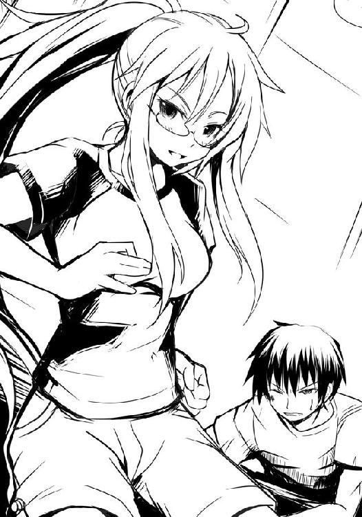
「ヒーロー登場、って感じかな？」
そう言って肩越しにチラリとこちらを振り返ったのは......著莪あやめだ。僕の従姉。狼。《湖の麗人》。シャツにカーゴハーフパンツ、履き潰しかかったスニーカー、夏は肩と首が蒸れると言って毎年行う期間限定のポニーテール。
いつもの夏の著莪がいた。明日やってくるはずの彼女が、僕を守るようにしてそこにいた。
な、なんで？ と口にする僕に「話は後で、養生してな」と著莪は言い捨て、横合いから蹴り飛ばされたらしく片膝をついているナックラヴィーに、キュッと靴音を響かせて飛びかかっていった。
何故、彼女が今ここに？ 帰国の便を早めたのか？ いや、だとしても何故この場所を？ 混乱する頭のまま、僕は何とか立ち上がる。
顔を上げて弁当コーナー前を見てみれば、著莪が乱入してきたことにより再び激しい乱戦が形成されていた。先ほどまではそれぞれの狙いが見えていたがために、ある程度分散して戦闘が行われていたが、著莪の狙いがわからないために場が混乱していた。目まぐるしいほどに弁当コーナー最前線の人間が入れ替わる。誰かと誰かが攻撃し合えば、その隙を突こうとして弁当を狙う者、それを防ぐ者、その隙を突いて攻撃してくる者......。
僕は目を凝らし、ナックラヴィーを見る。著莪のことも気になったが、今は彼女よりもあの男の秘密を解くことの方が優先すべきことだった。
やはり、という感じがする。二匹の狼に襲いかかるナックラヴィー。彼の攻撃は力任せで、大味だ。だが、攻撃された側はまるで体の力が抜けたかのようにそれをかわすのに苦労し、防御したとしても大きく喰らう。一匹の狼が、防御した上から薙ぎ払われた。
かろうじてかわした狼がナックラヴィーへ反撃を試みる。だが、どこかその拳には力強さがない。まるで腹の虫の加護を一切受けていないかのような拳など、ナックラヴィーはいともたやすく弾き、よろめいた狼を島棚の方まで蹴り飛ばした。
強い。いや、強く見えた。ナックラヴィーが強いというより、その相手をする狼の力が下がって、相対的に強く見えた。
待てよ、アイツはさっき僕に対して何て言った？ お前の力は枯れた。力？ 力って、この場の力と言えば......。そしてあの白粉のやられ方は、以前に一度、見たことがあるぞ！ そして奴のあの......。そうか、そういうことかっ!!
ナックラヴィーの......秘密が見えた。
その時、二匹の狼が脱落し、最前線にてアンと著莪が争っているのをチャンスと見たのか、真希乃が二人の足下に滑るようにして駆け抜け、健康弁当に手を伸ばす。しかし、間髪をいれずナックラヴィーが彼女を追随するように突っ込む。アンと著莪は迫り来る真希乃を慌てて防ごうとするも、腕の下をすり抜けられる。
ナックラヴィーが後方から真希乃の頭を掴もうとするのだが、間に合わない。彼の指先が真希乃の頭を掴むのとほぼ同時に、彼女はギリギリ指先で健康弁当を掴み、獲った。
「くそ！」
弁当を奪取した者には一切の攻撃をしない、それがこの場の掟だ。ナックラヴィーは真希乃の髪から指先を弾かれたようにして振り上げた。そこに著莪がすぐさま攻撃を仕掛けるが、その一挙一動に、やはり最初の時のような力強さがない。そこにアンも交じり、二対一で最後の弁当を獲り合い始める。
力を失っている著莪にアンとナックラヴィーの二人の相手はあまりに荷が重すぎる。悪戦苦闘というより、かろうじて弁当コーナー前で二人の攻撃をかわし、弁当に伸ばされる手を払っているというだけだ。
何とか立ち上がった僕はそこに参戦しようとするも脳裏に一つ疑問が浮かぶ。このまま向かったとして勝てるのか？ ナックラヴィーの秘密はわかった。だがそれだけで、勝てるのか。
しかし、このままではそれを解く前に著莪はやられ、唯一残った弁当......『まぐろカツ弁当』を奪われてしまう。著莪がやられるのも、弁当を奪われるのも、黙って見過ごすことは僕にはできなかった。
僕は駆ける。途中、まるで怒った子供のように頬を膨らませ、顔を赤くしている真希乃とすれ違う。一秒ほどして、「っはぁ！」と彼女が声を出して大きく息を吐いたのが聞こえた。
それで、僕の予想は、正解だと確信する。
僕は先のナックラヴィーの攻撃から立ち直れずによろめき、アンの攻撃を受けていた著莪のもとへ駆け寄った。
アンと著莪の間に僕は強引に割って入り、ありったけの力を使ってラッシュ。
アンは巧みに僕の攻撃を捌き、最後に互いの拳同士を打ち付け合い、吹っ飛ばされるようにして互いに距離を取る。
ナックラヴィーの太い腕がアンを抱き寄せる。彼女はその体勢のまま、僕らを警戒する。
「くそ、何だ、あの男の攻撃を喰らってから、力が......」
著莪が膝をつきそうになっていたので、僕は慌てて彼女を抱き留める。だが、僕も彼女も視線はナックラヴィーとアンの方へ向けたままだ。
自然と最後の半額弁当を横手にし、男女一組のコンビ戦の形相となった。
ナックラヴィーとアンがしているように、著莪が僕の背に手を回し顔を寄せてくる。
「......ちぇ、格好良く助けてやろうと思ったのに、思った以上に苦戦しちゃった。ダッセー」
「十分感謝してる。おかげでナックラヴィーの強さのタネを見極められた」
「ナックラヴィー......あいつの二つ名か。タネって？」
「奴には特殊能力がある。あの革のコート、そして夏という季節、それが奴の仕掛けだったんだ。考えてもみろ、このありえない組み合わせ。あのコートの下......蒸れて凄いはずだ」
「そうか、汗の臭いか！ どうりで、食欲が失せるわけだ」
そう、ナックラヴィーの秘密はそれだ。サウナスーツも同然の革のコート。その下は蒸れに蒸れて大量の汗を生む。彼は濃厚なそれを袖口や胸元、そして足下から撒き散らすことによって対戦相手の腹の虫の力を弱めていたのだ。
そうなれば腹の虫によって戦闘力を上昇させていた僕らはただの一般人に戻ってしまう。
何故もっと早くに僕はその考えに至らなかったのか。白粉が顔を赤くしてやられたのは喰らった攻撃のせいだけじゃない。かつてアイツはダンドーと猟犬群と行動を共にした際にも顔を赤くして、蜜に引かれる虫のごとくに自ら寄っていっていたじゃないか。
「ナックラヴィー、確か厄災と毒を撒き散らす下半身が馬の、皮膚のない化け物だったっけ。誰がつけたんだか、ピッタリの名前だなぁ」
ナックラヴィーがアンの髪を撫でつつ、口を開いた。
「小娘、何者だ。そいつと共闘するということはＨＰ部の狼なのか？」
「残念、ハズレ。アタシはどこにも属していないし、コイツとは知り合いってか、親戚。見た目、似てないけどね」
「お前、普段は眼鏡をかけているな？ ......そうか、やはり湖の麗人か。碧眼に金髪、眼鏡をかけ、スニーカーを履いた麗容の狼。戦歴までは知らないがその姿の噂は聞いたことがある」
「アタシも随分有名になったなぁ」
著莪は苦笑しつつもその視線はナックラヴィーから弁当までの距離を計っていた。ほぼ僕らと同じぐらい、一歩踏み込み、そこから飛んで手を伸ばせば届く距離。万全の状態ならともかく、今それをやれば身軽なアンに奪われる可能性が高い。
瞬発力のみで勝負はできない、ならば......戦うしかないが、勝てるのか。もし、ナックラヴィーのその能力にもっと早く気がついていたら対処のしようもあったのだが。
......待てよ、少なくともコイツは昨年もこの場に来ているはずだ。何故誰もナックラヴィーへの対策を立てなかったのか。まさか、立てたとしても実行できなかったのか？ 開始早々、後方からの彼のプレスは狼たちの動きを一度に封じ、有無を言わせずに汗の臭いを嗅がした......そうは考えられないだろうか。以前にナックラヴィーと戦った狼たちが対策を立てるのと同様、ナックラヴィーもまたその対策へのカウンターを用意していたと見るべきではないか。
......なるほど、この時期、この土地に集う狼は......やはり、伊達じゃない。
「このままじゃマズいなぁ。正攻法じゃどうやっても負ける」
著莪もこの状況を踏まえ、頭の中で戦闘の展開を予想したのだろう。自嘲の色を混ぜた声で、言った。
それが聞こえたのか、アンとナックラヴィーはクスクスと、笑う。
「ならば降参するといい。素直に弁当を諦めよ。狼どもが倒れている今なら総菜も好きに選べる。これ以上我々の攻撃を受けることもない。お互いに益のあることだ。負けを認め、退け」
背に回されていた著莪の左手が僕のシャツを握る。ナックラヴィーは純粋に助言してくれたのかもしれないが、著莪にとっては挑発以外の何物でもない。
彼女は、そして僕もまた、そういうのに素直に従うような性格じゃないのだ。
著莪は一度瞼を閉じる。再び碧眼が現れた時、著莪の顔には不敵な笑みが浮かんでいた。彼女は右手で頭をポリポリと掻く。
「お生憎。負けるのはともかく、出来ることをしないで諦めるなんてのは嫌いなんだ」
「ほう。ならば、その少年と今一度刃向かってくるか？」
著莪がようやく足元がしっかりしてきたので、僕は彼女の背に回していた腕を解く。だが、何故か著莪は僕の背に左手を回したまま、離れようとしはない。掴んだシャツもそのままだ。
「残念、ハズレ。それじゃ勝てないと思うしね。......でも刃向かう」
「......どういう意味だ？」
「アンタたち二人の関係と、アタシたち二人の関係は違うってこと。......ねぇ、知ってた？ ここって乱戦が基本なんだよ」
著莪がふいに僕の耳に唇を寄せてくる。
「弁当は半分こにしてやる、だから――」
「へ？」
僕の足に軽い衝撃。それと同時に靴越しに感じていた床の感覚が消える。
体を浮遊感が包み、僕の背にあった著莪の手の感覚もまた、消えた。
「飛んでけ佐藤!!」
その声とともに、著莪が両手の掌底で、僕の背を、思いっきり――押した。
いきなりのそれに僕は抵抗できるわけもなく、著莪に押されたままの勢いでナックラヴィーたちに向かってふっ飛ばされる。
......あぁ、僕はきっと捨て駒にされたんだなぁ。どうやったのかわからないけど、このスーパーまでやってきてくれて、僕の危機を救ってくれた愛すべき従姉......なのに、最後コレか。
「なにっ――アン！」
まさかの著莪の行動に慌てて叫ぶナックラヴィーに従い、アンが必死の形相で駆け出す。だが、いきなり正面から飛び来た僕をかわすため、真っ直ぐ著莪へと向かえない。彼女は一旦横へ大きく飛び、そこから再び駆ける。
後方から打撃音が聞こえる。だが、振り返る余裕はない。何せ、僕の目の前には猛烈な速度でナックラヴィーの拳が迫っているのだから――。
著莪曰く、彼女は僕らを驚かそうと、帰国して成田から直接こちらに向かってきたそうだ。当初の予定では実家に一泊してから、であった。無駄なところで、アイツは頑張る......。
「でもさ、ロッジに着いても誰もいないんだもん。鍵も閉まってて、うわぁ......とか思わず呟いちゃったさ。だって長時間のフライトの後に電車だしさ、疲れを押して頑張ってやってきたってのにこれかよ、って」
袋詰め用の台の端にある電子レンジから弁当を取り出す著莪の言葉を聞きつつ、僕はお握り二個（昆布・梅）を弁当と入れ替えで電子レンジに入れ、軽く温めた。
「で？ どうやってこのスーパーまで来たんだよ」
未だ少し赤い顔で、動きが心許ない白粉が無事にレジを抜けるのを見届けてから、僕と著莪は店を出た。
「ほら、以前佐藤がうちの学校に来た時、携帯のＧＰＳ機能でお互いの位置確認できるようにしたじゃん。アレ使った」
あぁ、あの僕がサバゲー部と対決した時か。そういえばずっと承認したままだったっけ。
自動ドアを抜けた瞬間、著莪がピタリと立ち止まる。何事かと思ったが、見てみれば弁当の入っているレジ袋を持った笑顔の真希乃、屋台で何か買うつもりらしい、お握りだけを手にするナックラヴィーと、それにもたれかかるアンが、立っていた。
「名を、聞いておこうと思ってな」
ナックラヴィーの声に著莪は微笑み、胸を張って著莪あやめだと名乗る。続けて、僕。
「著莪あやめに佐藤洋、か。憶えておこう」
その時アンが、はっ、として僕の全身を舐めるようにして見てくる。
「ヨウ、あなた、それ漢字は何て書くの？ ......太平洋の洋って......それはヒロシと読むんじゃないの？」
「いや、よく間違われるけど、ヨウであってるよ」
「佐藤......洋......。そんな、でも......」
ナックラヴィーは、どうしたアン？ と心配そうにするが、アンは驚愕の面持ちで僕を凝視したままだ。その時、後ろから白粉や先ほどまで倒れていた狼たちがぞろぞろと出てくる。
「もう行こう、アン。......さらばだ、禊萩真希乃、著莪あやめ、佐藤洋。次は今回のように行くとは思わないことだ。今日はあえて能力をセーブしたが、明日は全開でいく。ギリー・ドゥーは昨年見ているだろうが、おれの第二形態は――」
「どうせ、脱ぐんだろ？」
「なに!? 佐藤、何故、おれの最終形態を!? まだこの土地では使っていないというのに!?」
「......いや、何となく、わかるって」
ナックラヴィーは苦虫を噛みつぶしたかのような顔をし、くそっ、と悪態をついて去っていく。しかしながら脱ぐのが最終形態ということは、第二形態とは......あぁ、アレか。第二は革のコートの前をはだけるのだろうか。
立ち去っていく二人だったが、それでもチラリチラリとアンは僕を見てくる。狼たちのざわめきの中、かすかに彼女らの声が聞こえた。
「あの洞察力、口調も姿も、確かに似ている......でも、彼が『The novel of Four o'clock』の関係者なわけが......」
「なんだ、お前がいつも見ている小説サイトだな、それがどうかしたのか？」
「今、全国の汗と筋肉好きの同志たちが注目している作品に彼とよく似たキャラがいるのよ。サイトウヒロシ......いえ、通の間ではサトウって呼ぶんだけど......ホントにそっくり。地味だけれど上腕三頭筋の潜在的な美しさとか、ほら、見てよ、あの臀部。ちょっとラインが見えにくいけど、最新作『筋肉刑事スピンオフ ―鳥羽藤雄 未来への飛翔―』にあったサトウ刑事のケツの描写と酷似しているといっても過言ではないわ。絶対あそこにシャープペンシルを差し込むとアッー！ という伝説の声を......まさか先生がモデルに使って......」
「落ち着け、アン。よくある名じゃないか。お前は時折思い込みが激しくなるのが玉に瑕だ」
「だ、だってぇ......うん。そう......そうね、きっと思い込みよね、よくある名前だもの......えぇ、きっとそうね。あなたのいうとおりだわ、太蔵」
二人は僕の背筋を震えさせながら夜の帳の中へと姿を消していった。一瞬頭の中で......白粉が密かに立ち上げた小説サイトで例の『筋肉刑事』が公開されており、汗と筋肉を愛するアンがその読者......というおぞましい想像をしてしまったが......ははっ、ま、まさかねぇ。
そ、そういえばナックラヴィーの汗の臭いの影響をアンは一切受けていなかったけれど......えっと......関係ないよね！ うん！ そうだ、そうに違いない！ そもそも何だよ、その小説サイトの名前。四時の小説って意味がわからない！
あー、夕食が楽しみだ！ まぐろカツかぁ、どんな味がするんだろう。楽しみだなぁ！
いくらナックラヴィーの毒を喰らったとしても、さすがに時間が経てば腹の虫も元気を取り戻して、今じゃ痛いぐらいだ。
顎に手を当てて、著莪が何やら考え込むような顔をしている。
「アレ？ フォー・オークロックって確か、アレの名前だったような......」
「よ、よせよ、そんなことどうでもいいじゃないか。ほら、白粉も来たし」
暗闇のせいか、それとも夜風に触れたおかげか、顔の赤味が少し薄れた白粉が、ちょこちょこっと僕らの所までやってくる。
「あ、す、すみません、お待たせしました。お湯入れていたら時間がかかって――」
「ねぇ、アンタってさ、小説書いてネットで公開とかしてんの？」
ピキーン、と白粉は時間が止まったように動きを止めた。申し訳なさそうなその表情も、総菜が入ったレジ袋とどん兵衛を持ったその手もそのままに......一切合切が停止していた。
そんな彼女の姿は僕に七年前の国語の授業を唐突に思い出させた。あれは僕がまだ小学三年生の時、教科書にあった『大切な人』とかいう短編小説だったか何かを教材にした時だ。内容は学生の〝ボク〟が生きる希望を見失って自殺しようとするのだけれど、ひょんなことからそれまであまり仲の良くなかった両親がどのようにして結ばれ、どのようにして自分が生まれたのかを知る。自分の命は自分だけのものじゃなく、自分を大切に思ってくれる人のものでもあるのだ、ということを〝ボク〟は悟り、自殺を思いとどまって家族円満、幸せに暮らした、という、いささか強引にハッピーエンドで結ばれた作品だった。
〝では、連休の宿題は作文にします。テーマはこの作品と同じように『大切な人』です〟
授業終わりに教師はそう言った。その時点での彼には特に問題はなかった。問題は当時の僕らはそれほどデキが良くないクセに変に真面目だったということだ。教師が〝この作品と同じように〟と言ったわけだが、この作品の〝ボク〟と同じように、自分の両親の馴れ初めを調べて書いてこいと言われたのだと認識してしまったのだ。
しかも僕らの学校では規則として、帰りのＨＲにて、その日に出された宿題を日直が皆の前で再確認する、というものがあるのだが......この日の日直だった石岡君がこれを持って状況にトドメをさした。
〝算数は五三頁の練習問題を全部。国語は作文で、題は『両親の結婚した理由』です〟
もはやそれは連休明けの国語が地獄と化す前フリ以外の何物でもなかった。何が悲しくて両親の馴れ初めなどを書かなければいけないのか。普通に考えて有り得ない宿題である。
......とはいえ、当時の僕は純粋無垢な小学三年生。どのくらい純粋かといえば大人同士がキスしたら子供が生まれるのだと信じているぐらいの一片の曇りもないクリスタルハート。帰宅後、僕は何の疑問も持たず作文用紙を片手に親に質問をぶつけてみようと試みた。
とりあえず当時隣のクラスで宿題のなかった著莪と、実の息子そっちのけでＤＣの『電脳戦機バーチャロン オラトリオ・タングラム』で遊んでいた親父は初めから諦め、真っ昼間からネトゲに精を出す母【ＨＮ：ネネ。ゲーム内プロフィール：一四歳の♀中学生】に頼ったところ――面倒臭そうにしながらも――予想外に感動的な話を僕は聞かされてしまう。
僕はそれを一言とて漏らすまいとペンを走らせる。何が凄いって小三の作文で原稿用紙五〇枚を越える超大作である。僕はこんなにも激しい二人の恋愛の末に生まれた子供だったんだ、お父さん、お母さん、僕を産んでくれてありがとう、と泣きながらペンを走らせたのだった。
間違いなくこの作文は満点だ。そんな絶対の自信を持って登校したものの......まぁ、案の定国語の時間はカオスの渦に巻き込まれることになる。
出席番号順にみんなの前、つまり教壇の上に立って読み上げるのだが、赤井ちゃんの『お母さんは本当は違う人が好きだったけど、私が出来たせいでお父さんと結婚せざるを得なかったそうです』という一文が劇場の幕開けブザーのように教室に響き、地獄が始まった。
『母さんには借金があって誰でもいいからお金持ちの人と......』といった日本の格差社会を浮き彫りにした石岡君や、『コスプレ会場でカメコをしていたパパがコスプレイヤーのママにしつこく言い寄って......』と日本のサブカルチャー文化の姿を鮮やかに写し取った江藤さんらが見事な社会風刺を織り込んだ作文で先陣を切っていく。続く加戸君は少し方向性を変えて『教祖様が絶対神マールトミーのご神託を頂き、これにより両親はお見合いをし......』という少しオカルト風味を添加し、展開のバリエーションに幅を持たせた。
混沌はより一層深まっていく中、誰もが予想し得なかったこの授業のダークホース的存在として降臨したのが小口君である。『父と母が結婚した理由 ――小口雅彦。 僕にはお父さんとお母さんがいないのでわかりません。』という世界で一番短い作文が披露され、僕らは一様に言葉を失った。それでもなお気丈な顔をして席に戻る彼を見て、僕らは畏敬の念を抱かざるを得なかった。何が凄いって小口君のご両親とはその二日前ぐらいに普通に近所のスーパーで出くわしていたし、小口君本人に至ってはその日の朝「やっべー、作文書くの忘れてたよ、どぅっすかなぁ」とか一人ぼやいていたのをクラスの半数ぐらいは聞いているのである。
それを知っている人間にとって何故小口君はあぁも真顔で堂々と嘘をつけるのか、逆にその朝のぼやきこそが類希なる嘘で、スーパーで会った人は親戚の叔母さんとかなんじゃないのかと、そっちを疑い出すほどだった。
そんな家庭内暗部のカミングアウト大会になりつつある中、クラスのムードメーカー斉藤君が登場する。小口君の戦略爆撃機Ｂ‐２スピリットのような奇襲的爆撃の後、職場で恋愛結婚したとかいうあまりに普通過ぎる斉藤君の話は逆にクラス内のカオスを加速させ、次の笹山君の別に普通でもないが特段おかしくもない微妙すぎる作文の存在定義を打ち崩したりした。
そして、いよいよ満を持して僕の登場だ。ちょっとした短編小説みたいな作文用紙の束を持って教壇の上に立ち、僕は可能な限り父と母の恋愛模様を感情を込めて朗読する。二人が幾多の困難を乗り越えて愛を育んだこと、回りの反対を受けながらも僕を産んでくれたこと、そして今、とても幸せであるということ......。当然、読み終えた僕をクラスメイトたちからの温かな拍手が包み込んだのだった。中には泣いている女子までいた。
そんな中、クラス一の美人、男子諸子の憧れの的であるマドンナ・広部さんがポツリと一言漏らしたのだ。先週見た恋愛映画とびっくりするぐらい似ているんだけど......っと。
クラス中の時が止まった。
......あぁそうか、広部さんは時を止める力を持っていたんだ。そうか、きっと魔法少女だ、へへっ、かわいいな、とか僕は飛びそうになる意識の中でぼんやりと考えていた。
そして時が動き出した直後、クラスメイトたちが怒声を上げて僕にシャーペンとかカッターの刃とか投げてくる暴徒と化し、地獄の第二幕が始まったのだった。
そりゃね、確かに言われてみればあの永遠の一四歳・ネトゲ廃人の母と、バカの日本代表最有力候補の父がこんな大層な恋愛なんてするはずもない。そもそも落ち着いて読み返してみれば最後の方で親父が難病を患ってこの世を去っているんだもの。じゃウチで『バーチャロン』に熱中していたあのオッサンは誰だという話である。
純粋無垢な僕のクリスタルハートは本当は見てくれが似ているだけのただのグラスハート。広部さんの言葉一つで脆くも砕け散った。
広部さん（魔法少女）はなんて酷いことを言うんだ。何もこのタイミングで言わなくったっていいじゃないか。許さない。もう絶対に許さない。無理やり子作りして赤井ちゃんみたいな娘のいる温かい家庭を築いてやる。もちろんキスで。
そんなわけのわからない決心とか傷とか、小口君に給食のプリンを渡す風習が出来たりしつつ授業は終了を迎えた。その後この教師がＰＴＡ総会に呼び出されて辞職に追い込まれたとかいう、子供にはよくわからない出来事が起こったりしたのだが、それはまた別のお話。
時間が止まったような白粉の硬直具合は、あの時のクラスのみんなを僕に思い出させる。あの時は広部さんの魔法の力によって時は止められたが、今回は著莪だ。そうか、著莪は魔法少女だったのか、へへっ、かわいいな、とか僕はぼんやりと考えていた。
「......え、えぁっと......そ、そんなわけないじゃないですか！ あははっそんなに暇じゃないですよ！ さ、さぁ、お腹も減りましたし、広場へ行きましょう！」
勢いで実質棒読みに白粉は言うと、鼻歌交じりに一人、歩き始める。
「そ、そうだよな。よし！ 行こう行こう！」
僕はこの瞬間、自分が事なかれ主義にとらわれた日本の民であることを自覚した。臭い物には蓋をし、問題は先送りにし、時が、そして誰かが解決してくれると盲信する......それが日本人の悪いところであり、そして同時に良いところだと僕は思う。だって、少なくとも今しばらくは......幸せでいられるのだから......。
「あ、そう？ いや、まぁ別にいいんだけどさ。......ってか、その子、誰？」
著莪に言われ、何かいろいろありすぎてその場にギリー・ドゥーこと真希乃がいるのを僕らはすっかり忘れていた。存在感がなかったというか、不思議に意識から外れていた。
彼女はエントランス横の自動販売機の前で、ニコニコ笑顔のまま僕らの話が終わるまでずっと待っていてくれたらしい。
著莪に彼女を簡単に紹介――というかまだお互い詳しく知らないけど――していると彼女は絆創膏を一枚、いつの間にか出来ていた僕の頬の切り傷に貼ってくれる。いつも持ち歩いているそうなのだが......わざわざこれを渡すために待っていてくれたというのが何とも嬉しい。
ありがとう、と僕が口にすれば、彼女はニッコリと笑って頷いてくれる。
「あ、そうだ、良かったら一緒に夕食とかどうかな？ もう一人、他店に行っている先輩がいるんだけど」
真希乃は視線を僕から逸らし、また、ちょっと困ったような笑顔を浮かべ、首を捻る。
「うんと、そう、ですね。うんと......あ......そ、それじゃ......お願いします」
ガシッと衝撃、視界が揺れる。いきなり著莪にヘッドロックをされた。
「夜に女の子を無理に誘うなっつぅの。だから《変態》なんて二つ名が付くんだよ」
ピキーンと、今度は僕の時が止まる番だった。やっぱり著莪は魔法少女だ。
「ヘン、タイ......？」
「ち、違うんだ真希乃！ 思い当たる節がスッゲーあるかもしんないけど、この二つ名にはとても長くて悲しいヒストリーがあって、そ、それで僕は......！」
「佐藤、お前、思い当たる節がって......もう何かしたってこと？」
「黙ってろ著莪！ ってかもうって何だよ！ まるでそれじゃ僕が出会う人みんなに何かしているみたいじゃないか！ 単に真希乃は川で......ぼ、僕の全てを見......ただけで......その」
恐る恐る真希乃を見ると、彼女は相変わらず困ったような笑顔のまま、首を捻っている。
「うんと......姿とかが変わるって、意味ですか？ あ、それで最後、武器みたいな扱いに？」
一瞬、真希乃が何を言っているのか理解できなかった。だが、一拍置いて、そういえば〝変態〟という言葉には蛙や虫のように形状や体内システムを変化させることの意味もあるのだ、と思い出した。しかも彼女の顔を見ているとそれは気を遣って、というのではなく、純粋にそう思っているのだとわかった。
......変態という単語を聞いて、こういうふうに学術的な意見を述べられる知的で、一片の曇りもないクリスタルハートを持つ人は日本国内にどれだけいるのだろう......。
著莪のヘッドロックが力なく、外れる。著莪は僕を軽蔑するような顔をしつつ真希乃の方へ行き、「はい？」と首を捻る彼女を僕から遠ざける。......何故に？
「佐藤......お前、まさか......ちょっと、さすがにそれは犯罪になるって」
【変態＋全てを見た＋形状変化＝「ちょっとこいつを見てくれ、どう思う？」】
......マ、マズイ！ いらん誤解を招いている！
「著莪さん酷いです！ 佐藤さんはそんなことしません！」
予想外のところから助けが入る。いつの間にやら戻ってきていた白粉だ。彼女はレジ袋を持つ手をグッと拳に固めてみせ、力強く言った。
「佐藤さんが興奮するのは男のチ――あぅ！」
とりあえず、白粉の後ろ髪を引っ張っておく。いい加減こいつの妄想と現実が微妙に混じり合うところをどうにかしないと、遠からず本気で何か問題が起こってしまいそうだ。
「ごめんね、コイツ、こんなんだけど、一応身内だからさ。通報するのは勘弁してね。......えっと、夕食は、一緒でいいのかな？ 嫌なら嫌って言っていいんだよ？」
真希乃さんが笑顔で大丈夫です、と頷いてくれるので僕らは四人連れ立って歩き始める。話はもっぱら著莪が真希乃に話しかける、という感じだ。多分、著莪は気を遣ったのだろう。知り合い三人の中に一人、あまり知らない人間が交じるとなるとその人は話の輪の外になりがちだから、あえて真希乃を話の中心に持ってきているのだ。著莪はそういうところは気が回る。
真希乃は著莪との会話に一拍置いてから端的に応じる。気性がのんびり、というのではなく単にクセなのだろう。言葉を選ぶというか、何となく余計な言葉を抑えて、少しだけ漏らす、というような喋り方だ。
何でも彼女は二年ほど前に狼になり、すぐにギリー・ドゥーの名がついたそうだ。たまたまスーパーで半額弁当に手を出そうとした友人を助けたのが由来だとか。
「ちなみに、そのギリー・ドゥーってのはどういうアレなの？」
僕が尋ねると、真希乃は少し照れたような顔をする。
「うんと......森に棲む妖精、かな？ 森に迷い込んだ女の子を助けて、家まで送ったっていうお話があるみたい。それで、今でも狩猟とかのガイドの人をギリーって呼ぶんだって。あと、軍隊？ が使うモフモフした服の語源みたい......です」
偽装衣装のことだろうか？ ......そういえば鉄平の攻撃を僕が喰らった際、彼女は人混みの中から僕を助けてくれたっけ。足下にいたようだけど、全然気がつかなかった。
......狩猟のガイド、か。白粉が何故著莪が今日この場にいるのかと、著莪と喋っている合間を見はからって、僕は真希乃に小声で話しかける。
「さっきはありがとね、助けてもらって」
「川でいいこと、聞かせてもらいましたから。あれで少し、安心しました」
「えっと......あぁ。でも、そんなにたいしたこと言ってないよ？ ......仲直り、できたの？」
真希乃は俯き加減に苦笑する。まだ、喧嘩したままらしい。僕と著莪の時は一晩一緒にゲームして、話して、一緒に寝ていたら何となく仲直りしたのだけれど......さすがに真希乃に同じ手法を勧めるわけにもいかないか。
そんなふうに喋っていると、あの広場に差し掛かる。外灯の下、レジ袋の乗ったテーブルに頬杖ついている人がいる。槍水先輩だ。
「遅かったな。......お前、ギリー・ドゥーか？ 久しぶ......ん？ な、何で、麗人がここにいるんだ!?」
驚く槍水先輩にへっへっへぇ、と悪代官みたいな笑いを見せる著莪。彼女が状況を説明している間に席に着こうとするものの、テーブル一つに対し椅子が四つしかないことに気がつく。しかもこの椅子は太い丸太であり、地面に突き刺さっているので他から持ってくることもできない。著莪は何も言わずに席に着くだろうから、仕方なく僕は白粉と真希乃に席を譲った。
ふむ、そうか、と先輩は呟き、テーブルの上にあった二つのレジ袋のうちの牛乳やコーンフレーク等が入っている袋を下ろし、もう一つの方から半額シールが貼られた弁当を取り出す。
「そういえば、ギリー・ドゥー......真希乃か。真希乃、私が向かったスーパーで淡雪に会ったぞ。昨年と違って、今年はそれぞれ単独で行動するようになったのか？」
丁度レジ袋から弁当を取り出そうとしていた真希乃はピタリと手を止め、先輩の顔を見る。
「え？ ......あ......あの、それで、えりかはどうしました？」
「おかしな奴だ、半値印証時刻直前に現れたかと思ったら、店内をうろつくだけで何も買わずに帰っていったぞ。誰かを捜しているようだったから、てっきりお前と待ち合わせの店を間違えたのかとも思ったんだが、本人は違うと言っていた。どういうことだ？」
「待ち合わせは、していなかったので......。あ、あの、すみませんけど、あたし――」
真希乃は出しかけていた弁当を再びレジ袋に戻すと立ち上がり、僕の顔を見てくる。
「あ、うん。わかった、それじゃ、また......えっと、明日かな？ 頑張ってね」
はい、と真希乃は明るく、花が咲いたように笑った。彼女は困り顔の笑みよりこういう笑顔の方がよく似合う。僕たちは小走りに去っていく真希乃の背を見送った。
何だ？ と、槍水先輩が不安げに漏らす。
「あの二人、今ちょっと喧嘩しているみたいで。それで、ですよ」
「そうなのか。何かまずいことでも言ってしまったかと思ったぞ」
先輩は言い、僕らは少し笑った。二人の喧嘩も一時のものだろう。人間の縁なんて、そう簡単に切れるものじゃない、それに気づくまでのものだ。
真希乃が走っていた方を微笑みながら見つつ、僕は彼女が座っていた著莪の隣に座る。
「さて、それじゃ気を取り直し、夕餉といくか」
虫の声しか聞こえないような静かな公園に、四人の威勢のいい「いただきます！」の声が響いた。著莪と槍水先輩が弁当の蓋を開け、白粉がどん兵衛の蓋を捲る。屋外だというのに辺り一帯が美味しそうな匂いで包まれた。僕はその匂いに生唾を飲みつつ、せっせと僕と著莪の分のお握りの包装を解いてゆく。弁当一個を二人で分けるには、少し足りないためだ。
白粉が早速総菜――縦に二つに切られた極太竹輪の天ぷら、二本セットのうち一本をどん兵衛に浸す。汁に油が浮かび、そして天ぷらの衣にどん兵衛の汁が染み込む。白粉がその太いそれに大きな口を開けてむしゃぶりついた。
天ぷらにどん兵衛の汁は奇跡のように合う。味わい、食感、共に天国への誘いである。そしてさらに彼女が口にする肉厚な竹輪の食感や、その淡泊でクセのない風味と相まって......。
先ほどまでナックラヴィーの毒など喰らわなかったように僕は空腹に悶えそうになる。急いでお握りの包装を解くと、犬がご飯を持つ主人を見上げるように著莪を見るのだが......著莪も弁当の蓋を手にしたまま白粉を、いや、竹輪の天ぷらとどん兵衛の融和に見とれていた。著莪早く、と呼びかけると彼女はハッとして手の甲で口元を拭う。涎が垂れていたのかもしれない。
「佐藤、麗人、その弁当は何だ？」
「「まぐろカツ弁当」です」
僕と著莪は声を微妙にハモらせつつ、蓋が取られたその弁当の英姿を今一度、見やる。
黒ゴマをかけられた湯気上がる白米、その脇に少し多めに用意された柴漬けがお米に色を滲ませつつ鎮座している。この漬物の色がご飯に移った部分というのはどうしてこうもおいしそうに見えるのか。正直、もうこれに早く箸を差し込み、一気に口に運んでしまいたい衝動に駆られるが......僕は今一度生唾を飲み込むことでこれを堪える。
この弁当の容器は三つの枠によって構成されていた。一つは最もスペースを取っているご飯、二番手はメインであるまぐろカツ。そして最後、やや縦長に取られたスペースには脇役にとどめておくにはもったいない者たちが構えている。和風感漂う細長く切られたニンジンと油揚げと切り干し大根の煮物と、ほうれん草の胡麻和えだ。これらは同じ枠に入っているものの、二つの間を卵焼きとカマボコのゴールデンコンビが重なって仕切り代わりとして聳え、二つの料理が味的にも、そして弁当が揺れた際に文字通りに料理自体が混ざるのを防いでいた。
卵焼きは接している切り干し大根の飴色の煮汁が染みてほのかに色づき、カマボコには胡麻和えが付着してそれぞれにさらなる味付けが為されていた。
そして、メインのカツだ。まぐろの、カツだ。厚みが二センチほど、大きめのビスケットほどもある四角い、それ。一口サイズというには少し大きかった。刺身用の〝さく〟を二つか三つに切って調理したため、こういう形になっているのだろう。それが四つ、白い和紙のような敷き紙の上にドンっと並べられている。カツ表面のパン粉は細かく、高温で一気に、そしてサッと揚げたと思しき色合いだ。
著莪が割り箸を手にしつつ、呟く。
「やっぱり最初は――」
「――カツしかない！」
僕が彼女の言葉を継ぎ、お互いの顔を見て頷き合う。著莪は蓋の方にくっついてた調味料を手に取る。醤油とタルタルソースだ。彼女はサッと全体に醤油をかけ、カツの一つにチョンっとタルタルソースをつける。......見ているだけで、涎がこぼれる。
「なぁ、著莪。争奪戦の時に身を挺したんだから、僕が先に......」
著莪はえぇ〜、と声を出し、小さく舌打ちをした。
「しょうがないな。まったく。それじゃ、ホラ、あーん」
著莪は箸でサッとカツを一つ掴むと僕の前に差し出してくる。二人の時ならともかく、人前でこういうのは少し抵抗があるのだが......今の空腹具合では揉めている時間が惜しい。僕は著莪に言われるがままに口を開け、そのカツの半分ほどを入れる。
ご飯の湯気等で多少柔らかくなりつつも、かすかに感じる衣のサクっとした感触。衣の先に歯が進み、身に到達すると......それは僕に目の覚めるような鮮烈な驚きを与えてくれる。
――柔らかい。当然だが牛などとは違う柔らかさ。かといって鮭などのフライともまた違う。あれらの少しばかりメシッとする生木のような食感とも、白身魚のホクホクとした食感とも全然違う。強いていえば極上の豚の赤身の食感に近い。サックリと、簡単に噛み切れる。まぐろは、魚だ。揚げられ、そして電子レンジで再加熱したというのにこの柔らかさはなんだ？
まず最初に僕が感じた味は衣の上のタルタルソースの仄かな酸味とまろみ、次に醤油の風味......そして、それはやってきた。
「......うぉ......！」
思わず凄まじいそれに声が出た。それは僕の唇を一瞬にして湿らせて口内を覆い尽くす。......まぐろの脂だ。凄い量のそれは豚や牛、鶏の脂よりもずっとサラリとしていて、くどくなく、鮭の血合いやハラスなどのような生臭みは一切ない。そのくせしてブワっとくるとても強い旨味を伴っているのだ。
その驚きに目を見開いたまま柔らかな身を咀嚼すれば、衣に染みた醤油がその脂と合わさり僕の唾液を猛烈な勢いで溢れさせる。思わず靴の中で足の指にグッと力を入れてしまう。
うまい。とてもうまい。しかも何だ、口内で溶けいくようなこの感じは......。
僕は気がつくと白米に箸を伸ばし、無心で頬張った。口の中で白米が、まぐろが、醤油とタルタルソースが奏でる音楽と共に唱っているようだ。それもありったけの人数を集めた混声大合唱のような旨味のボリューム感がたまらない。口の中に世界中の幸せをいっぱいに詰め込んだような多幸感に、僕は意識が飛びそうになる。
「これは......くるぞ」
著莪が箸の先に持った半身のカツと僕の顔を交互に見やっている。それからタルタルソースをチョンとつけて、恐る恐るというように僕が噛み切った残りのそれを口にする。その瞬間著莪の顔に驚きが生まれ、次に温泉にでも入ったようなゆったりと脱力したような顔になり、慌てるように白米を貪り......そして、眉間に皺を寄せて弁当容器に残っている三つのカツを凝視する。しばしモグモグとその味を楽しんだ後に、彼女は言う。
「コレ、赤身じゃないぞ!?」
「なに......ま、まさか、トロ系かっ!?」
槍水先輩が身を乗り出し、麺を啜っていた白粉も驚きに目を見開く。誰もが驚愕する中で僕だけが納得していた。トロ......肉質がトロッとしていることから付いたその名前の通り、脂の多い腹部の身のことである。だからこそ、あの脂の保有量であり、熱してもなおあの柔らかさを持っていたのだ。全てに......納得できる。
唯一納得できないとすればそんなものが定価でも四八〇円で売られていたことである。いくら祭りを相手とする決戦だとはいえ......無茶をし過ぎだ。どのクラスのトロなのかはわからないが、どれにしたってカツの材料費だけで足が出る。
槍水先輩と白粉がゴクリと喉を鳴らし「お、おい、私にも......」「あ、あの......できればあたしにも......」と二人一緒に懇願してくる。
著莪が悪そうな顔でニヤリと笑い、どうしようっかなぁ〜、と迷うふりをし、二人を焦らした。しかしこの弁当の半分は僕のだ。著莪、と僕は一言彼女の名を呼ぶ。
「わかってるって、佐藤。冗談だよ。その代わり魔女と花のからも摘ませてもらうからね」
了承するのが早いか、箸が伸びてくるのが早いか、颯爽と槍水先輩の割り箸がカツを二等分し、それぞれにタルタルソースを付け、片方を口の中へ。続けて白粉も口の中へ。
二人とも至福の顔で、槍水先輩は自分の弁当の白米を頬張り、白粉は今回ご飯系がないので、うぅ......と小さく唸って切なそうな顔をする。それがあまりにも見ていて不憫だったので、僕は自分のお握りを差し出してやった。彼女はパッと顔を明るくし、カツが口の中にあるせいか、「いいんですか!?」と目だけで尋ねてくる。それがまるで尻尾を振って飼い主を出迎えてくれる犬のようで愛らしく、僕は笑って頷いた。......そして、ガブッと......大きいとは思えないその口で、実に三分の一以上のお握りを一口で持っていく。
「ん〜。......あっ！ えぁ、と、しゃとうしゃん......しゅみません！」
「あぁいや、別にいいんだけどさ。っつぅか、口に物を入れながら喋るなよ」
それからしばらく白粉は口をモグモグし、じっくり堪能してから口を空にした。
「あ、いえ、あの......あたしが口をつけてしまって......汚染されたかも、その、菌に......」
最近聞かなくなったが、時折まだ白粉にはこういうのがあった。僕が切り干し大根の煮物を食べつつ、そのお握りを口にしてみせると白粉はオロオロとした様子の後に、ホッとするような顔をする。何となく、僕らはお互いの顔を見て微笑んだ。
――その時だった。体に細い針が刺し込まれたような、鋭い痛みにも似た視線を感じる。槍水先輩がまるで争奪戦の最中のような殺気を放っていた。
「おい、著莪、佐藤......これは、どういうことだ。このカツは確かに、うまい。かなりの味だ。......しかし......トロ系ではないぞ!?」
僕と著莪は顔を見合わせ、お互いにそんなバカな、という表情を浮かべた。確かにあのカツはトロ系だと思った。白粉を見やれば、彼女はよくわからない、という顔をしていた。
場が緊張した空気に包まれて数秒、著莪が残っていたカツに小さく齧りつくと、パチンと指を鳴らした。
「そうか、読めたぞ。これ、ランダムで入っているんだ」
僕と槍水先輩ははっとする。著莪の言葉でこの弁当のカラクリがわかった。定価で四八〇円の安さと......そして、何故弁当名が『まぐろカツ弁当』だったのか。もし仮に全てトロであれば『まぐろのトロカツ弁当』といったふうにしっかり明記して付加価値をもたせ、購買欲を煽るはずである。だが、あえてそうしなかったのは赤身が混じっているからだ。そして『まぐろカツ弁当（トロ入り）』ともしなかったのは、もしかしたら赤身だけの弁当もあったのかもしれない。
幸運。この弁当が最後の一つとして残り、それを僕らが手に入れることができたのはまさに幸運だったとしか言いようがなかった。おまけにその中から最初に僕と著莪がトロを選んだのは......何ともついている。
著莪はラッキ〜と笑い、槍水先輩は忌々しく舌打ちして自分の弁当に意識を向けた。
蓋に貼られたシールを見れば、槍水先輩の取ってきた弁当は『ビックリ煮込みハンバーグ弁当』だそうだ。容器はシンプルに二つに分かれ、赤いとろみのあるソースがかかったゴロッと大きな三つのハンバーグが弁当のメインを張り、それらとともに置かれた温野菜のニンジン、ジャガイモ、ブロッコリー、ぶなしめじ、そしてハンバーグに立てかけられている二本のベビーコーンが脇を固める。これらは一緒に煮込まれたものではなく後から載せられたもののようで、温野菜特有の鮮やかな彩りが地味な見た目になりがちな煮込みハンバーグという料理に花を添えていた。それに、少量のパセリが振りかけられたご飯というのが弁当の構成だ。
「先輩、コレって何がビックリなんですかね？」
僕は白粉からどん兵衛の汁に浸かった竹輪を一口いただきつつ、訊いた。先輩は、わからん、と一言でぶっきらぼうに返してきて、トロが当たらなかったことを怒っているのかな？ と一瞬思ったものの、本当にわからないようだった。
先輩は大きなハンバーグを箸で掴み上げると半分ほどをガブリと一口。おっ、と声を漏らし、僕らがそのハンバーグの切り口を注視すると何やら黄色いものが......ウズラの卵だ。
「そうか、中に何かが入っている、それがビックリというわけですね」
それから僕と著莪は約束通り、二人で先輩のハンバーグを一つ貰った。二つに分けると中身の驚きが薄れる気がしたのか、著莪が目で、いい？ と訊いてくるので僕は頷いて応える。著莪は大きく口を開けるものの、何故かハンバーグを齧ろうとはしない。
「何だろ、何か、嫌な予感がする。佐藤、先いいよ」
「......嫌な予感のするものを躊躇なく僕に勧めるのか？」
僕の言葉など著莪には届かないのか、最高に優しい笑顔で「はい、あ〜ん」としてくる。さすがにそれ以上何も言わずに僕は口を開けて、半分ほどを噛み――
「アッっつっ!!」
口内を奔流する猛烈な熱い汁に僕は電流に撃たれたように椅子の上で跳ね、口に手をやり、呻いた。
「さ、佐藤、大丈夫か？ おい、麗人、一体何が入っていたんだ？」
下唇の裏側と、歯茎を火傷した。くぅ、と僕は唸る。だが折角先輩から頂いた料理、それもスーパーが勝負をかけた半額弁当だ。僕は舌が火傷しなかったのを幸運に思いつつそのハンバーグを味わい、そして熱さの原因を探る。
煮込まれていた赤いトロリとしたソースはトマトベースのもので、優しく、甘い。それは見た目ではわからないほど細かく刻まれて煮込まれた玉葱の甘味を活かしたものだ。柔らかく、ほんわりとした自然な優しい甘さ。また味付けの仕上げに使われたのか、かすかにバターの風味もあり、ハンバーグの肉の味に負けていない。
またハンバーグは煮る前に軽く素揚げされているようで、表面をサックリと固められ、煮くずれすることもなく、旨味を見事に内に閉じこめていた。豚と牛の合い挽きだろうか。ちょっとそれはわからないが、肉汁たっぷりでいい感じだ。
......そして、問題の中心部である。最初、何が入っているのかがわからなかったものの、トロリとしたソースとは別の、少量のサラリとした液体を感じ......そして、フレッシュな酸味が口内に広がる。その味に、ある食材が頭に浮かんだ。これは......プチトマトだ。
「あ、プチトマトか。コレって電子レンジで温めるとめちゃくちゃ熱くなるんだよね。佐藤、大丈夫？」
甘くとろみのあるトマトソースとハンバーグ、その中にあってこのトマトのフレッシュな酸味は新鮮だった。......ただし、熱い。鬼のように熱い。
「くっそ〜、火傷した〜......でもうまい」
涙目で口を押さえる僕の姿に、著莪たちは笑った。
それから僕らはそれぞれの弁当を口にしつつ、今日の争奪戦の話をする。ナックラヴィーを倒した時の話をすると、よくやった、と先輩が褒めてくれた。
「......っつっても、ほとんど著莪がやったようなもんですけどね」
「争奪戦の最中に奴の仕掛けに感づいたのは立派だぞ？ 何より、あのサラマンダーの攻撃を受けていたんだ。十分だ。タネがわかった以上、次は負けはしないだろう」
「それもこれも、真希乃のおかげですよ。サラマンダーの攻撃を喰らった際、彼女に助けてもらわなかったらどうなっていたか。ナックラヴィーと戦うどころじゃなかったですからね」
「ギリー・ドゥーか。あまり目立たないせいで噂にならないが、この土地に訪れる狼の一部ではなかなかの腕前だと知られている。特にあの弧状のフィールドに於いてはいつも後半まで生き残り、高確率で弁当をその手にしている。不思議な奴だ。......お、これは!?」
先輩の声。僕ははっとして見る。彼女の口からは一筋の黄金......チーズだ。どうやら最後のハンバーグの中身らしい。
うーん、ウズラの卵、プチトマト、チーズ......実際うまかったので外れとは言わないが......三分の一か。僕は舌先で火傷した場所をなぞる。ヒリヒリした。
しかし、何故あの時著莪は嫌な予感がしたのだろう？ 後で訊いてみよう。
食後も僕らは広場で喋っていたが、虫が多くなってきたのでロッジへ戻ることにした。
途中、著莪もいることだし例の射的屋に行こうとしたのだが、どうも九時ぐらいで祭りの屋台は全て閉まるらしく、すでに通りは先ほどと打って変わって閑散としていた。
普通、祭りの屋台が閉まった後でも、通りには青春をエンジョイしようとする若者が多かったりするが、さすがは田舎というべきか。いるのはせいぜい酒を手にダベっているオッちゃんたちばかりだ。
通りを少し離れれば、そんなオッちゃんたちの声すらも完全に消える。人々のざわめきもなく、ただ虫の声と喋る僕らの声だけ。明日もまだ祭りは続くというのに、不思議にうっすらとした寂しさを感じてしまう
どんな祭りでもそういうものだ。終わらない祭りはない。だから、賑やかさも寂しさも表裏一体なのだ。寂しいからこそ人は賑やかさを求め、賑やかであったからこそ寂しさが訪れる。
ＤＣもそうだった。当時、僕はまだ幼かったが、どこか発売直後からセガファンのお祭りのような空気が常時漂っていたのを感じていた。そして共に、どこかでうっすら終焉を予感せずにはいられなかった（特に発売直後の年末年始に在庫不足で商機を消失した辺りから）。でも、それを振り払おうとするがごとく、当時の僕らは全力で楽しんだ。ダイヤルアップの『ピーガガガ〜』やビジュアルメモリの電池切れを知らせる本体起動時の『ピー』という音にいつも心をわくわくさせ、ゲーム雑誌のＤＣソフト発売予定欄の空白や、夏場に火を噴きそうなほど頑張ってくれる本体ファンの音にいつも緊張を味わった。
......あの頃、全てが楽しかった。全てが賑やかだった......。
末期。セガの業績が悪化し、ハード業界からの撤退が決定した後、『セガガガ』という奇跡のようなソフトが発売された。業績悪化したセガを立て直し、ゲーム業界を掌握する......という、この苦境を最初から狙っていたのかと思わず深読みしてしまうようなソフトだ。ある意味セガファンの夢を――ゲーム内とはいえ――実現させてくれるソフトだった。
......実は僕はまだこのソフトをクリアしていない。このゲーム自体は好きだ。ただ、これをクリアしてしまうと何かが終わってしまうような、終わりを認めてしまうような、そんな気がしてしょうがなくって僕はプレイをやめた。いつも手元にはあるのだけれど、寂しくて、切なくて、未だにクリアしていない。大好きな作品の最終回だけ見ないという人と同じ気持ちだ。
でも、僕は『セガガガ』が好きだ。セガ好きによる、セガ好きのためのソフトだ。大好きだ。だから、いつかセガが再びハード業界に不死鳥の如く舞い戻り、僕らの理想郷を作ってくれた時......その時には必ずクリアしよう。そう、思い定めている......。
「佐藤、何しみじみした顔してんの？」
著莪はロッジの玄関前に放置してあった――多分、彼女の荷物であろう――ボストンバッグを担ぎ上げながら訊いてくる。
「あぁ、いや、何かホラ、祭りの終わりって寂しいなぁって思って」
槍水先輩はその僕の言葉に苦笑しながら、ロッジの鍵を開けた。
「明日もあるんだ、しみじみするのはそれからでいいだろう。何より明日の半値印証時刻こそが、我々ＨＰ同好会強化合宿の真の目的なんだぞ。気を抜くな、佐藤」
そうですね、と僕は笑った。
ロッジの中に入ると槍水先輩が同好会費で半額弁当と一緒に買ってきてくれた飲料や明日の朝食やらを冷蔵庫に収め、僕らはリビングの三つのソファにそれぞれ座った。著莪と先輩それぞれ一つ、どうも著莪から距離を取っておこうとしたらしい白粉が僕の隣に座り......全員がグデっとなった。高級感たっぷりなそのソファはまるで包み込むように柔らかで、心地良くて、今日一日の疲れが一気に溢れ出てくる。
お腹も膨れ、緊張が解かれた、といった方がいいのかもしれない。
ぼんやりと黄色がかった間接照明の力と相まって、一層感じられる木の優しさ。窓を軽く開けただけで心地良くなる温度に、するりと入ってくるかすかな風。都会の悲鳴のようなそれとは違う、穏やかな虫の声......。
不思議と数分、誰も一言も発せず椅子に座ったままボーっと高い天井を見上げていた。いつもなら多少の疲れなど物ともしない著莪も、さすがに今回の長距離移動で疲れているらしい。
「......マズイな、これに座っていると、このまま寝てしまいそうだ」
先輩が言うと、著莪も、うん、と頷く。
「汗かいたし、お風呂にでも入っちゃおうかな。ここってシャワーだけ？」
「いや、檜の湯船がある。大きいやつだ」
「あ、ラッキー。爺ちゃんの家、シャワーしかなくってさ。......あ、みんなで入る？」
「ん、そうだな。順番に入っていると遅くなるし、それもいいか。折角の旅行だしな」
その瞬間、疲れから空気の抜けた浮き輪のようだった僕の体に、超高圧ガスが注入されたようにエネルギーが満ちた。ある種、お泊まり系イベントでは必須かつ最重要なイベントの存在を僕は争奪戦やらお祭りの寂しさやらなんやらかんやらですっかり忘れていた。
しかも著莪のナイス発言だ！
【みんな】：『みな』の撥音便。すべて。残らず全部。ことごとく。（参考：丸宝辞典）
つまり、この場合における【みんな】というのは著莪、白粉、槍水先輩......そしてこの僕が含まれて初めて【みんな】である！
そして槍水先輩の受諾、何より「折角の旅行だしな」の言葉だ。つまりこれをより詳細に解釈すると「折角の旅行だから普段とは違ってハメを外して思い出を作りたい。主に佐藤洋と性的な意味で」となるわけだ！ 来たぞ、キタキタ、僕の時代がついにやってきたぞ！
僕は全身にエネルギーがみなぎっているのを人に悟られまいと、先ほどから全身を微動だにさせず、顔の筋肉一切から力を抜いていた。今もし少しでも力を入れようものなら......多分、ドラゴンボールを手に入れたピッコロ大魔王みたいな顔になるはずだ。そんな顔をしてれば拒否される可能性が否定できない。明るい未来のため、事は慎重を要した。
「えぁっと、あの......」
僕の横にいる白粉は少しオドオドし始めるのだが、著莪はニッコリと彼女に笑いかける。
「もちろん花も一緒だからね？」
「え、あ......は、はい。......じゃ、準備してきます」
おどおどしながら白粉は席を立つ。それじゃ私も、と先輩、最後に著莪がリビングからそれぞれの部屋へ。僕もまた部屋へ行き、光の速さに達しかねない勢いで準備を整え、再びリビングへ。ソファの上でさも普通のような感じを醸し出して......その時を待った。
しばらくすると最初に部屋に行っていた白粉が両脇に荷物を抱えて現れる。片方は洗顔料や着替えの類だろうが、反対側には何故か彼女のいつものノートＰＣが。
何をするのかと思ったら彼女はソファに腰掛けると普通に起動させ始める。
コイツめ、こんな旅行の時までそういうものを持ち込むのか。旅行とは日常から離れ、普段では得難い経験を積んだり、あえて違う場所に立つことで普段見過ごしがちな毎日の中に埋もれた大切なものを再確認したりするためのものだというのに......まったく。
まぁ、今、奴のことなどどうでもいい。重要なのはこの後ナチュラルに僕が浴室まで入り込むことだ。いらぬトラブルを防ぐため、可能な限り気配を消し、服を脱ぎ始めるところまでいければ後は......お楽しみだ。
仮に、仮に、だ。仮に先輩が旅の疲れからさっきの受諾を『女性陣に限定した差別的な【みんな】という意味での受諾』だと認識していたとしても、そこまで行ってしまえば......もう誰にも止められまい。男女差別だと騒いだ後は勢いで押し切れば先輩もきっとこう言うだろう。
『こんばんは、佐藤君』
そう、「こんばんは、佐藤君」とまるで名刀のように切れのあるドライかつクールな口調に、少しばかりの軽蔑と怒りを込めたような言葉で僕らは一緒にお風呂に......。
『無視しないでください。怒りますよ？』
......今、手からビーム的なものが出て全てを破壊し尽くせることができたらどれだけ素晴らしいだろう。どれだけ僕は幸せになれるだろう。だが、当然、そんなものが出るわけもない。わかっている、わかっているんだ......。あの日、早朝の庭先でブリーフ一丁で「かめはめ波！」と叫ぶ勇ましい父の姿から嫌というほど学んだじゃないか。人間、諦めが肝心だと。
......わかってる、夢というのは叶わないからこそ夢なのだ。夢ばかり見てちゃいけないんだ。いつだったか、僕自身著莪にもそう言ったことがある。わかっている、わかっているんだ......ただ、少しでも長く夢を見ていたかったんだ......。
僕はせめて笑顔でその声の方を見ようとしたが、泣き笑いのような顔にしかならなかった。
予想通り、白粉が手にしたノートＰＣのモニターがこちらに向けられ、そこにはお風呂上がりなのか白いガウンを纏い、頭にタオルを巻いた......我らが生徒会長白梅梅様が鎮座しておられた。思わず、何故、という言葉が口をついた。
『何か間違いがあってはいけないと思いまして、白粉さんにお風呂に入る前にビデオチャットで連絡をするようにお願いしておいたんです。......あ、白粉さん。ＰＣをテーブルの上にお願いします。佐藤君と向き合うような形で......はい、そうです。どうもありがとうございます』
白粉は申し訳なさそうな顔でノートＰＣを置くと、再び僕の横に腰掛け、モニターを見る。
「では無事に連絡も終えたようですので、そろそろお疲れでしょうからこの辺にした方がいいですね、それではさようなら白梅様。良い夜を」
僕はニッコリと笑ってノートＰＣのモニターに手を掛けるのだが......モニターの中の白梅が僕と同じようにニッコリと笑って携帯電話を手に取った。
『もし今このビデオチャットが切断されたり、カメラの前から佐藤君が消えたりしたら即座に最寄りの警察署に電話いたしますので、それを覚悟の上で行動してくださいね』
僕は力なくソファに身を沈め、頭を抱えた。さようなら、妄想。お帰り、現実。
「ねぇ、佐藤、今なんか白梅様の声が......って、え？ なに、コレ？」
着替えを手に著莪がリビングに現れるのだが、モニターを見た瞬間に彼女は愕然とする。
『こんばんは、著莪さん。ちょっと佐藤君とお話を。これから入浴ですか？ お一人で？』
「えっと、一応みんなで。本人はどう思っているか知りませんが、もちろん佐藤は抜きです」
わぁい、初めから夢も希望なかったんだね！ ......チクショウが!!
白梅がモニターの向こうで、何か含みを持たせた目をしてクスリと笑う。
『楽しそうでいいですね。でも、白粉さんが嫌がることをしたら......お仕置きしちゃいますからね。それは、忘れないでください』
......はい、と沈痛な面持ちで著莪は頷く。未だにナチュラルに白梅に〝様〟付けなのといい......以前、白梅の家に連れていかれた時に一体何があったんだろう。確か一緒に入浴したとだけは聞いているんだけど......。
「おーい、どうした？ 入らないのか？」
リビングの外、浴室のある玄関側の方から槍水先輩の声。そ、それじゃ、と逃げるように著莪はそちらに向かい、白粉は僕と白梅に一礼して、去っていき......リビングには僕と、モニター越しの白梅だけとなった。
山の中からでさえ遠くの人と会話ができたり、あまつさえ動画でやりとりできる、こんな技術が氾濫するこの時代が嫌だ。どこに行っても日常を引きずるなんて間違っている！ 旅行だぞ、折角の旅行だってのに......神よ！ この山の中で、しかも無線で快適にネットに繋がる悪魔の技術をどうにかしてくれ！
「......何も、ここまでしなくたって......いいじゃないか......」
僕は俯き、絞り出すように言う。あまりに悔しくて、思わず涙が......。
『そもそも高校生の男女が一つ屋根の下で寝泊まりするのが間違いなんですよ。部活動でなければ許可しませんでした』
白梅はいつものように飄々とした面持ちで、どこぞから取り出したグラスにミネラルウォーターを注ぎ、口にする。......飲み物の準備まで、ということは長期戦になるのか、やっぱり。
......実は密かに次善の策として女性陣全員が同時に入浴するということは即ち僕の行動を制限する人がいない、つまり覗きをしようとしても当人らに見つからない限りは決して咎められることはない......と期待していたのだが、どうやらダメらしい。
『さて、何をお話ししましょうか』
それから僕らは一体何を喋っただろう。年頃の男女がカメラ越しとはいえ、夜に顔を合わせてのトーク。色気のあるような会話になってもいいと思うのだけれど......何故か高校の生徒会のこととかを話した。学校内における施設等の不満や、校舎の改善してほしいところ等々。僕は半分死んだように力なく受け答えをし続けた。時折浴室の方からカランコロンと物音や、かすかに喋り声や、笑い声が聞こえたり......何か楽しそうな空気がリビングにいる僕にでさえ感じられる。......あぁ、いいなぁ。性的な要素がなくてもいいから混ざってきたい。
だらだらと喋っているうちにさすがに白梅も安心したのか、髪にドライヤーをかけ始める。
「......こんなふうに僕を監視するぐらいなら、初めから一緒に来たら良かったのに」
そうすれば幾らでも対処のしようはあったはずだ。というか、多分、白梅もみんなと一緒に入浴していたことだろう。そうすれば......覗きぐらいは......何とかなったはずだ。
白梅は一度僕を――カメラを見て、視線を逸らす。ドライヤーを止めた。
『わたしはそもそもＨＰ同好会ではありませんし、皆さんのように半額弁当争奪戦に何か意義を見出すこともできませんから。価値を理解できない者、わかったつもりでいる者がさもわかっているかのような顔でそこにいるというのは、本当にそれが好きな人たちに対する侮辱のようなものです。......それは、できません』
......変なところだけは生真面目というか、真っ当というか......。
白梅が再びドライヤーをかけようとした、その時だった。
それは雷鳴のように僕らの鼓膜を震わせる。
「あっ！ ふぁあぁ!!」
女の子の、悲鳴。白梅がドライヤーを捨て去り、通報用なのか、手元に用意していた携帯を手に取る。僕は立ち上がり、その声の方――浴室の方を見た。
『何ですか!?』
「わからない、でも......浴室の方だ。事故かっ!? ちょっと様子を――」
『ダメです！ 許しません！』
「何か起こっていたらどうするんだ!?」
うっ、と白梅は言葉を詰まらせる。
浴室で何か起こったのか、いや、それ以前に今の声は誰だ？ 著莪ではない。アイツの声ならわかる。だが槍水先輩でもない。声に先輩のあの堅い感じがない。......となると。
「白粉か！」
『今のは白粉さんじゃありません、わたしにはわかります！』
僕はモニター越しに彼女の目を見る。彼女は本気だ。......では、今の声は......誰だ？ 僕は浴室へ向かおうとした、その時、再び声が。
「あっ、佐藤聞こえる〜、別に問題とかが起こったわけじゃないから〜。『事故かっ!?』とか、変な妄想してこっち来なくていいよ〜」
楽しそうな著莪の声だった。僕と白梅は呆気に取られ、モニター越しに顔を見合わせた。
「えっと......何やってんの？ ってか、今の声、誰？」
何か、よせ、言うな、とか先輩の声が聞こえ......そして著莪の悪い声が......。
「ん〜、べっつにぃ〜。ちょっとみんなで体を洗いっこしてて、今ちょ〜っと仙の美乳を揉みしごいてるだけだから〜」
美乳を、揉みしご......いや、ってことは今の声は槍水先輩の声......？
えらいかわいらしい声だったけど？ いや、でも......しかも、え、なに、現在進行形？
い、いや、まだわからんぞ！ そもそも今の「来るな」という声は、著莪の声色を真似た誰か、そう、山賊とか宇宙人とかそこら辺のデンジャラスな輩が彼女たちを拉致しに来ていて、この屈強なボディを持つ僕を近づけまいとした偽装かもしれない。
えぇい、こうして考えていても埒が明かぬわ！ みなが心配だ！ この我が眼でその真偽を確かめに――
『行ったら、通報します』
「......はい」
僕は再びおとなしくモニターの前でソファーに座るしかなかった。
しかし僕の意識は浴室に向いたままである。僕は耳を澄ます。かすかに著莪のニヤニヤとした悪そうな笑顔で言っているであろう、楽しげな声が......。
――アレアレ？ 何、どうしたの？ ひょっとして声出さないようにしてるの？ ――あの著莪さん、もう辞めた方が......先輩顔真っ赤にして......。――アタシはただ年上の先輩の体を敬意を込めて洗っているだけだよ？ ――えぁっと、あの......。――ねぇ〜、そうだよね、仙〜？ ――著莪、もう......あっ！
僕、佐藤洋（♂・一六歳）は今、生まれて初めてＩＣレコーダーという文明の利器が欲しいと思った。できることなら集音マイクをはじめとした本格的な録音機器があれば言うことはない。可能な限り高音質に、そしてコピーを取っても劣化しないデジタル形式で......猛烈に録音しまくりたい、そして未来永劫保存し続けたい。そう思った。しかし、ないものはないのだ。仕方がない。可能な限り、この脳にその音声を焼き付けるしかない。
耳を澄ませ、ヨー・サトウ！ 全神経を鼓膜に集中するのだ！
『佐藤君。今からわたしが許可するまで白粉さんのノートＰＣに触れないでください。もし触れたら通報します。もちろんカメラの前から消えても同じです』
「わかった、ＰＣには触らない。カメラの前から移動しない。約束する」
僕は真顔で言った。そんなことはしない、だから静かにしてほしかった。今僕は極めて重要な任務の最中なのだ。
モニターの向こうで白梅は何故かえらい高級そうなヘッドホンを装着し、そのピンジャックをどうやらＰＣに繋いだようだ。そしてもう一本何かのピンジャックをＰＣに接続する。すると......向こうから聞こえていたノイズ等が消失する。何だ？ と思っているとその今し方繋いだコードの反対側を、白梅はどこぞから取り出した小さなＭＰ３プレイヤーに接続。
その瞬間、ノートＰＣのスピーカーからベートーベンの交響曲第九番『歓喜の歌』が......。
たいした音じゃない、むしろ小さいぐらいの音量だ。だが、浴室から聞こえてくる音声をかき消すには十分な音量だった。驚愕する僕の視界の中で、白梅が目を閉じ、ヘッドホンからの音声に耳を傾けていた。
あ、そっかー、最近のってスピーカーから出る音をマイクが拾っても、ハウリングが起こらないように出来ているんだよね。だからきっと彼女のヘッドホンには......浴室からの、声が......聞こえ......う、ぅうっ......。
僕は項垂れ、頭を抱えた。こんな絶望にまみれた『歓喜の歌』なんて生まれて初めて聞いた。やはり希望と絶望は表裏一体なのか......。チクショウ、こ、こんなチャンスを目の前にしておきながら......。少しＰＣの前から離れられれば十分に聞こえるはずだが、しかし......。
僕が絶望にうちひしがれたまま一〇分近く。ようやく曲が終わる。静かになったところで、かすかな希望を胸に、僕は今一度耳を澄ます。
――ちょっと調子乗りすぎたって、ごめんって。――わ、わかった、わかったから抱きついてくるな。――許してくれる？――あ、あぁ......。
著莪の未だちょっと笑いを含んだような声。そして、物音。もう、上がるらしい。
ブツッと音。どうやらＭＰ３プレイヤーが外されたらしい。白梅の「......ふぅ」という満足げな声が聞こえてくる。優しげな笑みを浮かべる彼女はヘッドホンを片づけ始めた。
「ど......どうして......こんな、悲しいことを......」
『女性の尊厳、そしてプライバシーを守るためです。当然のことです』
こいつ......サラリと言いやがる......。
「何だ、ドライヤーあるんじゃん。持ってこなくてもよかったのか。......まぁいいや、お〜い、佐藤〜」
緩めのショートパンツにＴシャツ、首にタオルをかけた著莪がドライヤーを手にリビングへ来ると、彼女は「まだ喋ってたの？」と彼女はモニターの向こうの白梅の姿に驚く。
『いいお湯でしたか、著莪さん』
「えぇ、あ、はい。とても、檜の香りがして......はい。......あ、佐藤、髪ね」
著莪は壁のコンセントにドライヤーを接続し、僕の隣に座るとこちらに背を向ける。僕はさっきまでの残念さから深い溜息を吐き、低いテンションのままソファの上で、著莪の方を向いて胡座をかく。彼女の首からタオルを取り、それで著莪の長い後ろ髪を挟んで軽く叩くようにして水気を取っていく。
『どうして、佐藤君が？』
疑問というより、汚らしい物を前にした時のようにして白梅は言うので、僕と著莪は二人して微妙な苦笑いを浮かべる。僕はドライヤーの電源を入れて誤魔化した。
確かに当然といえば当然なのだが、自分でやれよ、という話である。ただ昔からずっとこうだったので僕らの習慣になってしまっていた。
というのも、そもそもは著莪が泊まりに来る際は基本的に僕と一緒のベッドで寝るのだが......彼女の髪は昔から長く、ボリュームがあった。なのできちんと乾かさないと――著莪本人は気にならないようだが――僕のベッドが湿る上、隣に寝る僕に彼女の濡れた髪がまとわりついてくる。これが嫌で嫌で「もうドライヤー貸せよ、僕がやる！」と言って以来、一緒の時は必ず僕が彼女にドライヤーを当てていた。
多分、当時の彼女はまだ子供だったこともあっては途中で面倒くさくなってしまうのだろう。家だとリタ（著莪ママ）にやってもらっていたようだし。
なので、大きくなった今、『どうして？』と問われると......何か、困る。
『佐藤君、ダメです。そんなに温風を当てては髪を傷めてしまいます。離して全体的に、温風と冷風は交互に、毛先の方は最後です』
白梅のアドバイス通りに僕は軽く手ぐしを使いドライヤーを当てていく。多分今までで一番神経を使ったドライニング。著莪はずっと苦笑いだ。
僕は冷風に切り替えるタイミングで、一瞬耳を澄ます。浴室の方からもドライヤーの音が聞こえてくるので、まだ二人はこっちには来ないだろう。さりげない口調で、僕は訊いた。
「そういやさ......さっきは何やってたの？」
「ぅん？ べっつにぃ、普通に三人で親睦を深めていただけだよ。特に仙とね」
嘘をつけ、と僕が堅い口調で言ったら著莪は笑った。
「じゃ、後でマッサージやってくれる？ 今日は長時間座ってたからさ、もう疲れちゃって」
「先輩にやってもらえよ、得意みたいだぞ。白粉がいつもやってもらっているようだし」
「あ〜、そういやそうだったね。さっきの復讐されなきゃいっけど。......ぅん、じゃいいや。さっきも言ったけど、ホントに仙の美乳を揉んでた」
『「......美乳を......」』
何故か僕と白梅の声が被ったが......お互い、あえて無視した。
「いやぁ凄いよ？ サイズ云々じゃなくて、ホント漫画とかに出てくるみたいな張りがあるくせに柔らかく、綺麗な形のやつ。だから、揉んでみた」
「それは同性愛的な......？」
「違うっつぅの。単にアイツのリアクションが面白かったからちょっとからかっただけだって。......まぁ、一〇分近くやっちゃったのは反省してるけどさ」
一〇分......何という、長さだ。それ以前に著莪たちは何気に一時間以上入っていたなぁ、と僕は壁掛け時計に目をやっていると、著莪は楽しそう続ける。
「だって仙の奴さ、最初に佐藤たちに聞こえるぐらいの声出したじゃん？ あの後はもう声を出すまいとして......こう、曲げた人差さし指を噛んで声殺してたんだよ。顔真っ赤にして俯いてさ、恥ずかしそうに悔しそうに一生懸命我慢して......もうそんなのされたら余計弄りたくなるっつー話でさ。だから後ろから抱きついて両手でずーっとぐにゅぐにゅと......」
僕はピタリとドライヤーを止め、天井を見上げるようにしてその様をイメージする。......白梅も顎に手を当て同じようにしているのは何故だろう。
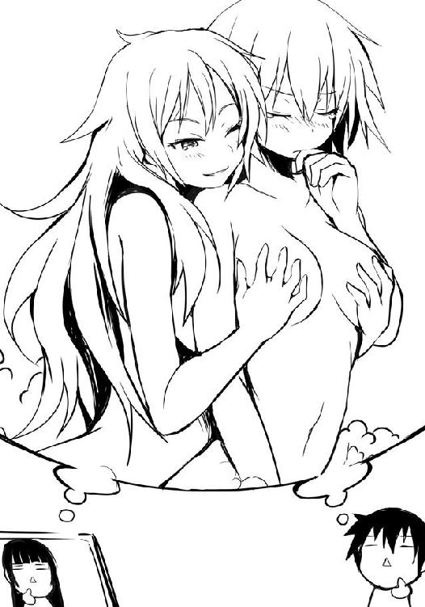
不意に著莪が後ろに倒れてくる。彼女の背を腹で受け止めるも、いきなりだったので僕も後ろに倒れ、ソファの柔らかい手すりに後頭部をぶつけた。
「佐藤、前髪も。......何、ちょっと元気になってんのさ？」
小声でニヤリと笑いながら言う著莪。僕は彼女が背中に感じているであろう、その、何だ......健康な男子高校生である証拠の生理現象を誤魔化すように、慌ててドライヤーの電源を入れ、仰向けで重なったまま、グシャグシャと彼女の髪を力任せに掻き混ぜた。
著莪が「わっ、やめろよ〜」と笑うのがさらにムカつく。
一通り乾いたところでドライヤーの電源を切り、僕は著莪の頭をポンと軽く叩く。今日の彼女の髪は普段とは違う香りがした。きっと備え付けか、槍水先輩のでも借りたのだろう。
彼女は「サンキュ」と口にしつつ起き上がると髪留めでアップにまとめた。逆にこの頃にはさすがに僕の生理現象はおとなしくダウンする。
「あ、佐藤さん、お先にいただきました。......もしアレでしたら......今からお湯を張り替えてきますけど......」
そう口にしつつコソコソっと現れる白粉は、白い七分袖に七分丈のいかにもパジャマという出立ちだ。その後ろからはのぼせたように少し顔に赤みが残る先輩。今回はノーメイクというだけではないらしい、シュンとした表情をしていて、僕と著莪の方を見ようとしない。
先輩のタンクトップにそれほどタイトではないホットパンツ......そこから伸びる健康的な生足が眩しい。たださっきの著莪の言葉のせいか、自然と視線は足よりも胸元にいってしまう。
そのまだ顔を赤らめて恥ずかしげにしている先輩の表情といい......何か油断しているとまた再び僕が健康な男子高校生であることを皆に証明してしまいそうな気がしたので適当に白梅に別れを告げ、早々に着替えを手にリビングを離れた。
何気に立派な洗濯機とかまである広い脱衣所で服を脱ぎ、大きなガラス戸を開け、浴室へ。
そこは、なるほど、三人が入るにしても十分過ぎる広さであり、檜の浴槽も五人ぐらいまで一緒に入れそうな具合だ。
ここで、さっきまで先輩は......。時間とか戻らないかな、とか思いつつ、椅子に座って、まず僕は備え付けのシャンプーで頭を洗った。さっきの著莪のとは違う香りだった。
シャワーで泡を洗い流そうとした......直後だった。背筋にゾクリとくる、何か。
誰もが経験があると思うのだが、頭を洗っている時、ふいに後ろに気配及び視線を感じることがある。よく夏場の心霊写真特集とかの怪談系の番組を見た後とかでは、神経過敏になったりしてこういうふうに感じやすいが......これは、その類の感じじゃない。
どちらかというと......浴室にあの〝Ｇ〟がはいずり回っているのを感じた時の感覚だ。
......カサカサ......ゴソゴソ......。
やはり、いるのだろうか。山や森にある建物にはあまり奴らが出るイメージがないのだけれど......。人というのは脆弱な生き物だ。たいして害のない小さな虫相手にでも、怯え、震える。特に服を着ていない状態だと、その恐怖は倍増しやがる。
いっそ感づかなければ良かったのに......。そう思っても、もう遅い。こればかりはあえて見て見ないふりをするわけにはいかない。
ヘタをしたら次の瞬間にも奴は僕に向かって......おぉ、何と恐ろしい。
人は恐怖を乗り越えて生きていくものだ。たとえ現実を認めるのがどれほど辛くても認めなくてはならぬものもあるのだ。僕は息を呑みつつ振り返り......それを見つけた。
......いた！ いやがった！ 僕の予想をはるかに上回る大きな、それ！
ガラス戸に張り付き、手をガサゴソと動かし、そして......開けてきやがった！
「......お背中、流しましょうか......？」
それは何とも大きな害虫だった。ガラス戸の隙間から僕を見ている、白粉花という名の害虫である......。しかも眼鏡装着しつつ片手には風呂場には似つかわしくないメモ帳とペンのセットまで装備しているところを見ると......奴は本気だ！ 目つきがすでに研究サンプルを見る科学者みたいに鋭い！ 僕の背中及びケツを舐めるように観察していやがる！
「い、いや、いいよ。背中ぐらい、自分で洗えるし......」
「旅の疲れもあるでしょう。......今、著莪さんも先輩にマッサージを受けていますし、佐藤さんも......」
いや、確かに旅行先で女の子に背中を流してもらうというのは古典的なラブコメ作品には必須といっても過言ではないイベントだ。しかし......しかし、普通、こういうのって女の子の側って緊張するなり、恥ずかしがるなりするものじゃないか？ もちろん男の子の方だって、緊張しつつ中途半端な笑顔を浮かべたりして、こう、ドキドキワクワク、うふふ、あはは、みたいな展開が普通で......。何故、今僕は、怯えているんだろう......。
でも、折角の申し出だし、勇気を出してお願いしてみる......か？ こういう状況で男側が断り切った作品を僕は見たことがないし、多分、こういうのは男としてむしろお願いしなきゃいけないもの――
「こうして見ると......背中とお尻の境界線って、実際曖昧ですよねぇ......」
この野郎！ 背中を洗うと見せかけて僕のケツに何する気だ!? 以前部室で「アッー！」と叫ばされた恐怖と痛みを思い出し、僕は断固として断る決心をする。
しかし、その旨を告げても白粉はガラス戸から覗いたままだった。
僕は一つ大事なことを学んだ。覗きはいけない。それはもちろん犯罪だ。しかし法で禁止していなかったとしても人として決してしてはいけない行為だ。見られる側が理不尽なまでに受ける精神的苦痛はまさに暴力そのものだ。人として最低の行為だ。
もう言っても聞かないので、仕方なく僕は時折白粉の位置を確認しつつ、体を洗い始める。
「最初は腕から肩、基本的に上から下へ、おぉ、ついにその手がインモへ......意外とアッサリな洗い方......メモメモ。あ、佐藤さん、そろそろお背中、流しましょうか？」
怖い。何度断ってもその都度、同じ質問を繰り返してくる白粉が怖い。僕は急いで体を洗い、背中ももちろん一人で洗う。だが、それでも白粉は動かない。ケツはもうしょうがないとして、僕は股間のものだけは見せないように気をつかいつつ、シャワーで泡を流し去る。
そして......そのまま、白粉にケツを向けたまま平行移動で、湯船へ。無事に入浴を果たすと、さすがにもう無理だと判断したのか、「ッチ」と舌打ちを残して白粉はガラス戸を閉めた。
何が「ッチ」だよ......舌打ちしたいのはこっちだ。何だか軽く汚されたような気分だ......。
僕が悲しい気分で湯船に浸かっていれば、ほのかに檜が香っているのに気がつく。アイツさえいなければ......きっと旅の疲れを癒すには最高の入浴になったのだろう。さっきまでここに先輩たちが......とか無意味な夢想を頭の中に描いて興奮もしていたかもしれない。
......けど今は......くそぉ......。
気持ちぬるめのお湯に肩まで浸かっていると、白粉から与えられた悲しみは次第に薄れていき、ボーッとしてくる。ふと、リビングの方だろうか、何か声が聞こえた。
――おい、著莪、携帯が鳴ってるぞ。――うわぁ、あせびからメールだ。仙、ちょっと見てみてよ。――何で私が？――いいからいいから。
そういえば入浴後には二人は二つ名じゃなくて名前と名字で呼び合うようになったなぁ。やはり裸の付き合いというのは人間の距離を縮めるものなのだろうか。
――なにっ......ぅあぁあぁ!! ――先輩、どう......えぇっ!?
......多分、先輩の声だろう。その次の悲鳴は白粉だ。不思議だった。さっきは悲鳴一つで、とにかく彼女らのもとへ行かねば、と使命感に燃えたものの......あせびちゃんの名が聞こえた瞬間から行く気が失せていた。むしろ出来るだけゆっくり入っていよう。そう思った。
浴室の外から何やら三人が喋っている声が聞こえ、何かガサゴソと物を動かしたり、慌ただしく動き回っていたりするのが聞こえるのだが......いや、気にするまい。
せめて、この入浴時間が終わるまでは......ゆっくりしていよう。
僕は事なかれ主義に支配された日本の民だ。臭い物には蓋をし、問題は先送りにし、時が、そして誰かが解決してくれると確信する。そうすれば少なくともしばらくは、幸せでいられるのだから......。
僕は現実から逃げるように、湯船に潜った。
湯上がりの僕を迎えたのは予想外の光景だった。
何だかんだと著莪たちがお風呂から上がった段階ですでに一二時近かったので、さすがにもう寝る段であったわけだが......いやぁ、これは予想外、いや、ある意味では妄想という名の希望的予想の通りなんだけど。
リビングにあったはずのテーブルやソファーは部屋の隅にまとめられ、代わりに部屋の中心にあったのは......四つの布団である。どうやら各部屋のベッドの上にあったものを持ってきたらしい。それで頭を突き合わせるように四角形が作られていた。
そう、夢の雑魚寝スタイルである！
「一体、何が」
布団の上でトランプをしていた、さっきまで湯上がりでホクホク顔だったのが嘘のようにげんなりしている著莪たちに尋ねると、携帯をポンっと投げてくれる。僕はそれを開くのだが......思わず「うぉ！」と声を上げてしまった。
そこに表示されていたのは一見普通の、自分で自分を撮ったらしいあせびちゃんの写真だ。自室らしき部屋で、ゲーム機が繋がったテレビモニターをバックにあせびちゃんがかわいらしい笑顔でＶサインをして写っているのだが......問題はその彼女の後方だ。何か、黒い何かが......。しかもそれは最初ただのモヤのように見えるだけなのだが、ちょっと携帯の角度を変えると......薄ぼんやりとしてはいるが、明らかに苦しげに絶叫する生首の女性である。
「初めて実物見たけど、アイツさ、写真を撮られるとちょくちょく一緒に写っちゃいけないものが写るらしいんだよね。本人は写真写りが悪いだけって言ってるんだけど......」
ついに『超魔界村』の二周目をクリアしたよ〜、と絵文字入りのかわいらしい普通のメール本文が、逆に見る者の恐怖を煽っている。
「しかもさ、何かね、そのメール、消そうと思っても消えないんだよね......」
僕も試しにやってみるものの、一応『メールを削除しました』と表示はされたが、メールフォルダを確認してみれば普通に残っていた。
僕は著莪に携帯を投げ返すと空いていた彼女の横の布団の中に潜り込み、顔だけ出して、夏、しかも湯上がりだというのに少し震えた。
「ま、まぁ、折角の合宿だしな。それぞれが個室に籠っていてはつまらないし、こういうのもいいだろう」
そう気丈に言う槍水先輩だが......彼女も今の僕と同じく布団を被り、顔だけ出している蓑虫スタイルだ。以前、こういうのは苦手だ、と言っていたっけ。
今先輩と僕だけを見たら、蓑虫が顔を突き合わせて震えているという何とも不思議な光景になっているだろう。
「それよりトランプをやっていたんだ、どうだ、佐藤もやらないか？」
そ、そうですね！ と僕は先輩の提案に乗った。
僕らはあせびちゃんという恐怖を振り払うように、何かを忘れようとするように、四人で大騒ぎしながら何度何度もやった。時を忘れて、楽しんだ。途中からはあの写真のことなど忘れて、普通に笑いながら遊べたのはゲームに集中していたからだろうか。
いつも最初に上がる先輩が、暇を持て余してデジカメで写真を撮り出した時だけはさすがに『変な物が写りませんように』とシリアスに祈ったりもしたが......楽しかった。
いつもとメンツは変わらないのに、旅行先で、布団の上で、ラフな格好で、寝ころびながらやっているせいか、不思議といつもより笑えて、盛り上がる。
最初に白粉が眠りこけ、次にその白粉をヌイグルミか何かのように抱きしめながら先輩も眠りについた。
僕と著莪は溜息とともにトランプをまとめ、散らかっていた飲み物やお菓子の袋をまとめて、部屋の明かりを消す。二人して並んで横になった時、ふいに僕は夕餉の著莪の『嫌な予感』を感じ取った理由がわかった気がした。
「著莪、お前僕が渡したお守り、持ってきてるだろ」
著莪が寝込み、以前まで彼女が持っていた対あせびちゃん用お守りが何故か灰になった時だ。あせびちゃんがお見舞いに来るというので、その前に何としてでも代わりのお守りが欲しい、と著莪に懇願されたので、僕が近所の神社で手に入れたものだった。
「あ、わかる？ そう、実はもうず〜っと肌身離さず持ってんだ。昔はお守りなんて迷信だって思ってたけど......アレ、いいよ、凄く効果ある。ありがとね」
「信心深くなるのはいいけど......変な宗教にハマるのだけはやめろよ」
「もう信者だよ。セガのね」
熱狂的なセガ好きを人はセガ信者と呼ぶ。セガを信じ、誰が見ても嫌な予感しかしないソフトでも予約し、安くないお金を払い、売り上げに貢献し、そして案の定の内容であっても何故か笑って許せてしまう。また同時に――拠り立つ場所を失ってからはやや姿を潜めたが――他ハードユーザーにセガの素晴らしさを説き、彼らをセガ信者に育て上げようとする自主的な努力......いわゆる布教活動にも余念がない。確かに、これらの様は信者と呼ぶに相応しかった。
僕は苦笑して天井を見た。おかしいな、と思う。人気のない場所、ロッジ、高校生の男女が雑魚寝......もっと、こう......エロマンチック（エロ＋ロマンチック）な状況にならないはずがないんだけど......。何だか小学生の修学旅行みたいなノリになってしまった。
いや、今時の小学生なら少しは色恋沙汰の話もするんじゃないだろうか。あせびちゃんの力とはいえ、楽しかったとはいえ......何だかなぁ。
僕は布団を腹にだけかけると瞼を閉じ、溜息を吐いた。疲れてもいたし、諦めて寝ようとするのだが、ゴロゴロと著莪が転がってくる。強引に枕の半分を奪われ、体が触れ合う。
鼻先がつくほどの、互いの吐息を肌で感じるほどの距離で、僕は著莪の顔を見る。
「なんだよ」
「お守りは財布の中なんだ。今、ちょっと怖い」
「でも、さすがにくっつくのは暑いって」
「いいじゃん、アタシが眠るまでだって」
「......僕にそれまで起きてろと......？」
囁く程度の声で著莪は言い、ニッコリと笑って頷く。そして僕の下唇に指先を当て、ちょっと捲った。
「あ、白くなってる。ホントに火傷してたんだ」
「唇の裏と歯茎を少し。舌をやられなかったのは幸運だったよ。明日に響くところだ。......次に嫌な予感がした時は僕で試そうとするのはナシね。結構ヒリヒリして痛いんだからさ」
ごめんごめん、と著莪は軽く笑う。
「でも、軽傷じゃん。これぐらい唾でもつけとけば治るよ」
口の中だっつぅの、そう僕はツッコミを入れようとするも、ふいに著莪の顔が近づいてくる。彼女の舌先が、湿った吐息と共に僕の唇の裏をそっと撫でた。
二人の時はともかく、他の人がいる場で彼女とこういうのはしたことがなかったので、僕は慌てた。得意げに微笑む著莪から顔を離し、頭上の先輩と白粉の方を見上げる。二人とも先ほどから穏やかな寝息は変わっていない......寝たままだ。僕はホッとした。
「......やめろよ」
「嬉しいクセに」
「嫌とは言わない」
「素直でよろしい」
僕らは相手の顔を見つつ小さく笑った。
それから一緒に「おやすみ」と言って、瞼を閉じる。
......その夜、やっぱり彼女と重なったところは、少し暑かった。
３章 ギリー・ドゥー
「うんと......だから、そのえぇと......」
禊萩真希乃
０
早朝、淡雪えりかは顔を洗うとすぐにトレーニングスーツに着替えた。朝食前に軽く走るのは休日の朝の日課だった。靴箱からランニングシューズを取り出していると玄関の扉に父親が貼った祭りの日程表が目に止まる。祭り好きな父らしく、赤ペンで走り書きがあった。
〝本日快晴なり、花火大会八時より決行!!〟
頭の中に『彼女』の顔と、かの弁当が浮かぶ。それを振り払うように、淡雪は顔を顰めてシューズの紐をきつく縛った。
「......もういいわよ、アイツのことなんか」
誰かに言うように、淡雪は口にし、玄関を出た。
早朝の涼しい木々の香りがする空気の中で、簡単な柔軟を終えると、淡雪はゆっくり走り出す。見慣れた単調な道程はどこか退屈で、自然と余計なことを考え始めてしまう。
『彼女』のことだった。
『彼女』はいつも遊んでほしがっている犬のような顔で、淡雪を見つけるとチョコチョコと歩いてきては体を寄せてくる。まな板だが四肢が長く、身長も高い。一見モデルのような体型でありながら顔は眼鏡の向こうに佇む大きな瞳のせいで童顔に見える。そんな変な奴だった。
間が抜けていて、授業中だってニコニコ笑顔のまま何もせずにボーっとしているような、そんな奴。誰からも好かれていて、誰しもを好いていた。『彼女』を嫌う人間を淡雪は未だに見たことがない。ただそれは『彼女』が積極的に誰かに関わろうとしていなかったが故なのかもしれない。大勢で遊んでいる時になればそれは顕著に現れる。『彼女』はドラマや映画でいう群衆の一人、少女Ｆ、エキストラ、その他大勢。皆が笑うと『彼女』も笑う。皆が騒げば『彼女』も派手にならないぐらいに騒ぐ。多数決なら何となく多数の方に寄る。仲間の輪の一番外側の、大勢の中にいつもひっそりといる一人。だから、誰からも嫌われない。
無個性というより無害という印象が強い娘だった。どこにいても普通で、どこかにいなくてもまた普通な、そんな不思議な娘だった。
そんな『彼女』と淡雪の距離が縮まったのは、小学校の高学年、ズルがしこい奴が『彼女』に目をつけた時だ。何を押しつけられても困ったような笑顔で全てを受け入れてしまう『彼女』、面倒ごとを押しつけられても一言として不平を口にすることなく頷くばかり。最初、淡雪も気にしなかったが、事が段々とエスカレートしていくにつれてさすがに気になり始めた。
ある時、淡雪はたまたま『彼女』が一人で掃除をしていたところに出くわした。彼女は何も言わずに残っていた五人分の掃除用具の一つを取り、手伝い始めたのだった。
『彼女』のため、というよりは気になっていたことを解消するためにやった、自分自身のためだ、少なくともその時の淡雪はそう自分に言い聞かせながらモップを使っていた。
『彼女』はありがとう、と口にした。申し訳なさそうに、どこか困ったような笑顔で。
そんな、なよなよした『彼女』の態度に苛ついた淡雪は「どうしてこんなことを安請け合いしたの!?」と、思わず叱りつけてしまう。そして、『彼女』を泣かせてしまうのだった。
それから何となく放っておけなくなった。捨て犬を見つけてしまい、おやつをあげたら懐かれてしまったような、そんな印象である。可愛いとか可哀想とかではなく、責任感のようなものだ。
できるだけ『彼女』が困っていたら手を借すようになっていた。大丈夫だから、と口にされても構わず、淡雪は手を貸すようにした。どうせ、助けて、手伝って、などと『彼女』が言わないのはわかっていた。『彼女』はいつも自分の主張も意見も胸の奥深くに閉じ込め、笑顔で蓋をする。
男女問わずつっかかる気の強い淡雪を好き好んで敵に回す者はクラス内にはいない。特に何かしたわけでもなかったが『彼女』に対する面倒ごとの押しつけ等は徐々に消えていった。
それから、二人の関係が始まった。淡雪は物事を始める際には自分と『彼女』の分も考えるようになり、『彼女』もまた、自然と淡雪に身を任せるようになっていった。淡雪は小学校のスイミングクラブに入っていたのだが、特に勧めたわけでもないのに、気がつくと『彼女』も所属している始末だった。
いつも一緒にいて、淡雪は『彼女』のことなら何でも知っている気になっていた。
そんな頃だった。
中学に入って最初の、学校の水泳部として参加した県大会。淡雪はちょっとした怪我からやむなく棄権した時だ。冗談半分に「わたしの分までしっかりやって、必ず優勝して」とプレッシャーをかけたら本当に『彼女』が優勝してしまったのだ。しかも大会新記録での優勝だった。それは『彼女』自身のはもちろん、淡雪のベストも大きく上回るタイムだ。その後の全国大会ではさすがにメダルには達しなかったが、出場しただけでそれは学校始まって以来の快挙であり、お世辞にも設備が整っているとも、腕の良い指導者がいるわけでもない、そんな普通の学校の一年生とは思えない記録である。しかも当の本人はそれを理解しているのかしていないのか、それまでと変わらずニコニコ笑っているだけだった。
淡雪の知らない『彼女』を見た気がした。
そしてまたこの時期、もう一つの『彼女』の姿を、淡雪は知ったのだ。
花火大会を翌日に控えた夜。この時期は家の仕事に加え、祭りの運営委員をやっている関係で淡雪の両親は忙しく、彼女の食事の多くは外食だ。しかし近所の店は食べ飽き、屋台の料理はおいしいがお腹一杯に食べると胸焼けした。ご飯系の、あまり重くないものを食べたいと思い、彼女の足は自然とスーパーマーケットへと向かった。
入店と同時に体中の皮膚が猫の爪で引っかかれたような、痛み。時期はずれの静電気？ それともいきなり冷房の効いた店に入ったせい？ そう思った淡雪は早く買い物を済ませてお店を出ようと決める。何も知らず、何もわからず、何か残っているだろうかと、棚に目を向ける客たちの後ろを抜けて弁当コーナーへと近づいていった。
......その時だった。どこからか、ＢＧＭを突き破って聞こえてくる、バタンという扉か何かが閉まる音。そして、大砲でも撃ち放ったかのようなドンという音と店を震わせる衝撃、自分を抜き去り弁当コーナーへと目にも止まらぬ速度で駆け寄る無数の人々。わけもわからず、流れに押されるようにして淡雪もまた、弁当コーナーへと駆けている自分に気がついた。彼らは一体？ 自分は何を？ 何もかもがわからない、けれど体の中の何かが彼女を急かす。
そして弁当コーナー前。一瞬にして展開するこの世のものとは思えぬ三六〇度の肉弾戦。自分がその中にいるのに気がつくのに少しばかりの時を要した。
わけがわからないまま、焼きつくような強烈な想いが淡雪の胸に湧く。
――ご飯が食べたい。
淡雪は激しく肉体を打ち鳴らす人々の間を抜け、何とか弁当の陳列棚に到達する。
ようやく辿り着いた。あとは手に取ってレジまで行けば――。そう思ったのも束の間、彼女は無数の人間から攻撃を受け、薙ぎ払われた。
全身を蹂躙する痛み。淡雪はかすむ視界の中で細い腕が伸びてくるのを見る。誰かが、淡雪を抱き留めてくれた。
それは淡雪の知らない、特別な友人......普段の大型犬のような穏やかな目つきとは違う、飢えた獣の目をし、お腹から唸り声を発する『彼女』の姿だった。
......あの出来事からもう二年の歳月が経とうとしている。あれから二年も一緒にいたというのに、『彼女』は自分を......。
「......違う、そんなんじゃない。わかってるわよ」
淡雪は走りながら首を振る。自分の中に二人の自分がいて、それらが互いに罵り合っているような感覚に、彼女はどこか疲れと苛立ちを覚える。
淡雪が再び前を向いた時、道の脇で柔軟をしている人影があった。それは淡雪の足音に気づいたように、クルリと振り返ると大きな瞳でこちらを見てくる。
「えりか、おはよう」
『彼女』は穏やかに、そしてどこか申し訳なさそうな笑顔で、言った。
『彼女』は平凡な中学校に通う三年生、禊萩真希乃。
森に棲む慈悲深き妖精の名を持つ、穏やかにして内に秘めたる力を有する狼。
またの名を――《ギリー・ドゥー》といった。
○
ふと、体が軽くなった気がした。
掛け布団をそっと取られてしまったかのような、寒いというより落ち着かない感覚に、僕は朦朧とする意識のまま、辺りに手を伸ばしてなくなったそれを探す。しかし、ない。そもそも何がなくなったのか、今、自分は何を探したのか、よくわからない。
僕は寝ぼけ眼のままで上半身を起こす。お腹にかかっていた薄い布団がずり落ちるようにして僕の下腹部を覆った。布団はある。では、なんだ？
僕は辺りを見渡した。木目の壁、高い天井。大きな窓にかかるカーテン、その隙間から薄暗い室内へ差し込む光。壁の時計を見る。六時ちょっと前。......朝だ。
「佐藤、起きた？」
著莪の声だ。そうか、アイツか。結局僕らは朝までくっついていたんだな、と汗ばんでいる自分の胸元に手を当てて、まだはっきりしない意識の中で思う。
著莪は個室の方から髪をまとめつつ歩いてくると、キッチンの方へ行く。彼女はジャージとＴシャツ姿に着替えていた。
「ちょっとそこら辺走ってこようかと思ってさ。佐藤も、行く？」
まだ目覚めの悪い僕は「ぅん」と曖昧に応え、布団の上に座ったままボーっとしていた。
僕は首を回らせ、依然として寝ている槍水先輩と白粉をそっと見......思わず眉をひそめた。
二人は横向きになり、槍水先輩が白粉を背中から抱くようにして寝ているのだが......それは小さな女の子が大きな熊のヌイグルミとかを抱いているようなポーズだった。
穏やかな寝顔をしている槍水先輩とは対照的に白粉は苦しげな顔だ。それもそのはずで、先輩の腕が彼女の首をガッチリとロックしていて、息の根を止めようとしているかのようだ。
多分、昨夜の白粉はあまり良い夢は見ていないだろう。
「......しかしながら」
僕は思わず呟く。少し暑かったのか、昨夜は二人の体を覆っていた薄い掛け布団は白粉の体と先輩のお腹の部分にだけにかかっており、先輩のしなやかな両足をこの時、ありがたくも拝むことができた。
それがまた、昨夜は諸事情からじっくりと観察することは叶わなかったが、何とも見事な脚線美である。軽く曲げられ、揃えられた両の足。その上に、カーテンの隙間から差し込んだ朝日がかかり、見る者にどこか神聖さすら感じさせる。いつも彼女がストッキングを愛用しているせいだろうか。彼女のそれはとても白く、しなやかで、柔らかそうで、なめらかで、僕の視線と心を惹きつけてやまない。
しかし何より僕が息を呑むのは、その太ももから腰にかけてだ。昨夜彼女は緩めのホットパンツを身につけていたはずだが、寝ている間にずり上がってしまったらしく......腰を横合いから見ている限りでは何も穿いていないようにすら見えてしまう。そして太ももの膨らみとは違う、別のふわっとした膨らみがいくらか......。背中とお尻の境界線が曖昧だと言った白粉じゃないが、太ももとお尻の境界線も曖昧なものだ。仮にそれがあったとしたら、今、僕の目の前のそれは少しばかり境界線の向こうであることは間違いなかった。
先輩の両の足を拝み、意識が覚醒した僕のもとに著莪が水の入ったコップを持ってやってくる。僕は先輩を凝視したまま彼女からコップを受け取り、飲み干す。冷たくておいしい水。先輩の脚線美に心の汚れが洗い流され、水で弛んでいた己の体が引き締まり、身も心も清らかになったような気がした。思わず「いい朝だ」と渋い声で一人呟く。
アホか、と著莪がコツンと僕の頭を小突いてくる。僕は叩かれた頭をポリポリと掻きつつ、著莪と同じようにジャージとＴシャツに着替え、書き置きを残して表へ出た。
やはり、山の朝は爽やかだ。緑の香りがする清らかな空気、靴越しに感じる土の柔らかさ。ホーホーホッホゥ、という間の抜けたようなキジバトの声はともかくとして、小鳥のさえずりや枝から飛び立つ時の小さな羽音が心地良い。セミの声もこの時間は幾分静かだった。
僕らは軽く足回りを柔軟すると、著莪の土産話をしながら走り出す。毎年行っているので、内容はいつもと一緒なのだけれど、著莪もそれをわかった上でふざけながら喋っていた。
彼女の土産話が一段落した時、そういやさ、と話題を変えてくる。
「昨日の夜の真希乃、アレ、何だったの？ 佐藤、事情知っているみたいな顔していたけど」
あぁ、と僕は応じ、詳しくは知らないけど、と前置きした上で淡雪と真希乃のことを話す。
「何だか去年の僕たちみたいでさ。......揉めたよなぁ、あの時」
僕も著莪も苦笑する。あの時はホント、揉めに揉めた。僕が烏田高校にしたというのを著莪に話した時、彼女は凄い剣幕で「何でだよ！」と僕の胸ぐらを掴んできたっけ。ただ進学する学校が違うだけ、おまけにそれが隣街の学校で、その気になれば徒歩でも行ける距離だっていうのに、まるで人生の岐路で生き別れてしまうかのように、著莪は本気で怒っていた。
未だに僕は、何故彼女があんなにも怒っていたのか、よくわからない。
別に丸富大学付属高校でも良かったといえば、まぁ、それでも良かった。僕の成績が微妙だったというのもあるが、ただそれより何より学校の最寄り駅と、僕らの地元は電車一本で結ばれているため、時間はかかるが実家通いが出来てしまうことが最大のネックだった。いい加減僕は、あの割と日常的に命の危機が訪れる実家を離れたかったのだ。
......とはいえ、結果論だが、著莪が僕に負けじと一人暮らしを始めたのを見ていると、某友人の人生を犠牲にしてまで烏田高校を選択する必要はなかったのかもしれないな、と今なら思う。最悪、著莪とルームシェアという手段もあったのだ。
「実際はたいしたことじゃないのにさ、大げさに考えちゃうんだよな、きっと、あの頃ってさ。何か、目の前のことが全てって感じで――」
僕が言うと著莪の手が伸びてきて、側頭部にデコピンされる。生意気な台詞だったかな？ たった一年前だというのに、大人振り過ぎたかもしれない。
横を見れば著莪は真希乃のように、眉を八の字にして困ったような笑顔を浮かべていた。
「そうでもないって。ネットだ携帯だっつったって、結局、物理的な距離ってのは心の距離にも影響しちゃうものだし」
「そう？ 僕たちなんて離れて暮らしているけど、全然変わらないじゃん」
「アタシたちは特別かなぁ。それに住んでる場所も近いし、アタシがバイク持ってるからちょくちょく会えるけどさ、交通の便も悪いここと関東じゃちょっと距離があり過ぎる。
ただまぁ、佐藤の言い分も正しいとは思うけどね。ちゃんとした関係であるのなら、離れて暮らしても人と人は繋がっていられる。......でも」
著莪は何かを考えるような顔をして急に言葉を切る。僕はおとなしく続きを待つもなかなか喋らない。著莪？ と僕が呼びかけると彼女はようやく口を開いた。
「......その淡雪って娘に会ってみたいな」
「やめとけよ、僕らが変に首突っ込むことじゃないって。何よりどうせすぐに気づくよ、たいしたことじゃないって」
だといいけど、と流すようにして著莪は言い、何かを考えるようにまた口を閉ざした。
それからしばらく経て、そろそろ折り返そうかと思った時だった。左右を木々で囲まれた山道を走っていると、向こうから誰かがやってくるのが見えた。
淡雪と真希乃だ。噂をすれば、というやつか。著莪がどこか得意げな笑顔で僕を見てくる。
「あ、佐藤さん、おはようございます。......そちらの人は？」
従姉だと告げると「ビックリするぐらい似てないですね、あ、複雑な家庭環境ですか」と淡雪は自己紹介の後に素直に言って、笑ってみせた。真希乃は昨夜と同じく、ニコニコ笑顔だ。
「アタシは著莪ね、よろしく。えりかと真希乃は、部活？ 自主練かな」
淡雪曰く、二人は特に予定がなければ休日も習慣的に体を動かしているのだという。まだ走り始めてすぐだというので、僕と著莪は彼女と一緒に走らせてもらうことにした。
ゆっくりとした、落ち着いたランニング。ただし坂道、砂利道関係なく淡雪と真希乃のペースは一定であり、この種の道を走り慣れているのを感じさせた。
二人を前にして走り、僕らの強化合宿のことなんかを話す。多少、弁当争奪戦のため、というのに抵抗を感じたが、この二人とて狼だと思い直し、全てを話した。「佐藤さんたちも......」と、淡雪は少し驚いた様子だったが、顔が見えないこともあってよくわからない。
「アレ、真希乃から聞いてない？ あ、ひょっとして昨日合流できなかったのかな？」
僕は言ってから、まずかったかな？ と気づく。真希乃はまたあの困った笑顔で、淡雪の顔を窺い、淡雪もまた少し驚いたように真希乃の顔を見る。だが、すぐにその視線をキッと強いものに変え、正面を見た。
「アタシたちが言うべきことじゃないかもしれないけどさ、仲直りしなよ〜」
「別にわたしたち、喧嘩してるわけじゃないですから。......少しペース上げていいですか？」
まるで僕らとの会話を打ち切るように淡雪はそう言うと、こちらの返事を待たずにペースを上げていく。真希乃が一歩遅れて追随する。
それに最初は難なくついていった僕らだったが、淡雪がどんどんペースを上げるのにつれて徐々に苦しくなってくる。通常ならともかく、慣れない道だというのもあるし、何よりコースを選択しているのが淡雪である以上、突発的に曲がったりもするのでこちらのペースを奪われてしまう。真希乃だけが、淡雪の視線から先読みしているのか、難なくついていく。
ズレる眼鏡をかけ直す著莪は横目で僕を見てくる。何としてでも喰らいついてやろうぜ、と彼女は目で言ってくるので、僕は頷く。
先頭を行く淡雪は時折後方の僕らを確認し、その度にペースを上げた。段々彼女が必死になっていくのがわかる。多分、僕らがピッタリとくっついているのは予想外だったのだろう。彼女のコース選択が段々シビアな、一人しか駆け抜けられないような獣道ばかりになっていく。
最初にピークがきたのは著莪だった。呼吸が大きく乱れ、時折足がふらつき始める。
「佐藤、迂回して前へ出ろ。もう終わりにする」
苦しげに、呻くように言う著莪。仕方なく獣道がカーブに差し掛かったタイミングで僕は道を外れ、背の高い草の中を突き進む。獣道の行く先を予測しつつ草をかき分け、木々の間を走り抜け......そして、再び獣道へ。
淡雪が驚いた顔で迫ってくる。道が狭く、立ち止まっている僕をかわせない。彼女はブレーキ。軽く僕に手をつくようにして止まるものの、そこに後ろから真希乃が、そして著莪がやってきて、捕まえたとでもいうように真希乃と淡雪をいっぺんに後ろから抱く。
全員が汗だくで、呼吸を乱していた。速いんですね、と淡雪は呼吸の合間に漏らした。
「佐藤はともかく、アタシはそうでもないって。......あー、シンド。体鈍ってるわぁ。......さぁて、こうして捕まえたし、じゃ約束通り、仲直りしてもらおうかな」
いきなりわけのわからないことを著莪が言いだしたので、はぁ？ と、淡雪は声を出す。
「え？ 違うの？ 仲直りさせてみたかったら捕まえてみろ、っていうゲームだとアタシと佐藤は受け取ったんだけど？」
だよね？ と著莪はこちらを見てくるのだが、当然そんなことを僕が受け取っているわけがないのだが......著莪の目に押され、僕は仕方なく彼女に合わせる。
最初淡雪はさすがに文句を言っていたが、次第に閉口していった。
僕らは歩き始める。立ち止まっているより、歩いた方が回りの空気が流れ、楽だった。
「どこかゆっくりお喋りできるような、座れる場所があるといいんだけど？」
「この先に開けた場所があります。......信じられないぐらい図々しいというか、自己中な人なんですね、著莪さんって」
好奇心が旺盛なだけ、と著莪が笑いながら先を行く淡雪の二本のテールを両手で掴み、右、左、右、左、という具合に持ち上げたり下げたりし始める。淡雪は何も言わずに、上着の前を開けて籠もっていた熱を逃がし、歩き続けた。出会ってからものの十数分であっという間に上下関係を構築させた著莪の技は、まさに見事としか言いようがない。
多分、普段の著莪ならこんな無理やりな手段は採らなかっただろう。問題は淡雪が著莪の言葉を打ち切り、逃げるように、そして挑発的に速度を上げて僕らを引き離そうとしたことだ。それが著莪の闘争心と好奇心に火をつけてしまったのだ。焦らされると、意地になる。
木の下道が、ふっと明るくなり、開けた場所に出る。そこは周囲を木々で囲まれたエアポケットのような場所だ。ちょっとした広場のようになっていて、芝生というにはやや背の高い、足首が隠れる程度の草とともに、色鮮やかな数種の花が咲き乱れていた。
山林の中に唐突にあったそれは人工的なものかとも思ったが、広場の中心部に太い株と倒木が見え、そうじゃないと知れた。恐らく昔ここには大きな木があったのだ。それが高い位置に枝葉を広げていたせいで、その木陰では木々が育たなかったのだろう。それがへし折れたことにより空間が生まれ、そこに成長の早い草花が茂ったのだ。
いずれはここも木々が覆う、それまでの期間限定の小さな空間だった。
僕らはその倒木の上に飛び乗り、淡雪と真希乃を中心にして四人並んで座る。僕は真希乃の横についた。
じゃ、仲直りしようか、と著莪は単刀直入に言う。淡雪は俯き加減だ。
「別に、喧嘩しているわけじゃないです。昨日喋ったのならわかると思いますけど、そもそも真希乃は喧嘩ができるような性格じゃないです」
確かに。真希乃は多分文句を言われたりしても、昨夜のあの困ったような笑顔でどんなに辛くてもただ我慢して受け入れてしまうような、そんな性格な気がする。今現在も、彼女はその顔を浮かべていた。
「じゃ、何で昨日は別々に......」
しつこく訊いてくる著莪に、淡雪もどこか観念したように、素直に答え始めた。
何でも二人は、槍水先輩の予想通り、コンビというわけではないのだそうだ。両親が忙しくなる夏祭りや冬のスキーの時期だけ、淡雪は狼となって真希乃とともにスーパーを駆けるのだという。その際も共闘というわけではなく、淡雪がやられそうになった時だけ、経験豊富な真希乃が手助けしてくれる、ということらしい。
「でもえりかは昨日、二軒のスーパー、どっちの争奪戦にも参加しなかったじゃん？」
それは......、と淡雪が口ごもる。
「コイツが......生意気だから。だから......その......」
しばらく何か言葉を発していたものの、僕らにはよく聞き取れない。真希乃は、淡雪と同じように俯いて苦笑するような顔で「ごめん」と呟く。するとそれまで暗いだけだった淡雪の顔にはっきりと怒りのそれが浮かび、隣の真希乃を睨みつける。
「何で真希乃が謝るのよ。おかしいでしょ、自分でいいと思ったのならわたしに謝る必要なんてないじゃない。そうでしょ、違う？」
まぁまぁ、と著莪が言うものの、淡雪は口火を切ったように真希乃に強い言葉をぶつける。
「おかげですっきりしたけどね。今までやってきた苦労が来年から消えるんだもの、そりゃ楽になるわよ。アンタはこれから一人で大変だと思うけど、知ったことじゃないわ」
淡雪はバカにしたような目で、著莪を見る。
「だから、真希乃の苦労もなくしてあげようと思ったんですよ。わたしがいるとコイツにはお荷物になっちゃうんで。それに真希乃が約束を破ったんですから、わたしが今日の約束を破れば、ほら、これでバランスが取れるんです。わかります？」
僕と著莪には何のことかまったくわからず、ムムっと二人して難しい顔をしてしまう。
「うーん、よくわかんないんだけどさ。それじゃえりかは、特に喧嘩しているわけじゃないっていうわけ？」
「えぇ、もちろん。真希乃はただの友達ですから。喧嘩してる二人が川とかで一緒に遊んだり朝に一緒に走ったりします？ しませんよね？ お互いに相手との約束を破ったってだけなんです。だから別に仲直り云々なんて必要ないんですよ。
来年からわたしは近くの高校に通い、真希乃は関東の学校に行く。ただ、それだけです。そんなことで、どうしてわたしたちが喧嘩などしないといけないんです？」
僕と著莪は困惑に閉口し、真希乃は俯いた。淡雪が木の幹から飛び降りる。
「そろそろ失礼します、それでは。......真希乃、行くわよ」
言うだけ言って彼女はさっさと歩き出してしまう。真希乃は彼女の後を追うように木の幹を降りるが、それを著莪が呼び止める。
「何か、悪いことしちゃったかな？」
「大丈夫です、気にしないでください。......最近、ずっとこうですから」
微笑みながらペコリと頭を下げ、二人共、去っていった。
その背を見ていると、何となく、淡雪が言っていた〝約束〟の意味がわかったような気がした。きっと二人は同じ高校に行こうと約束していたのかもしれない。それを真希乃が破り、喧嘩し始めた。そういうことなのだろう。ただ、そうなるとあともう一つの約束は何だろう？
戻ろうか、と僕らもまた、二人を追うように倒木を降りる。獣道を歩いていくと普通の山道へ出た。特に、迷うことはなかった。
「やっぱりあそこで変に首突っ込むのはやめた方が良かったんじゃない？ 何か余計にこじらせちゃったみたいだし」
そう？ と著莪は少しふざけ半分に肩をすかしてみせる。
「やっぱり、視野の狭い子供特有の考えだよ。杞憂だって。今時ビデオチャットなんていう悪魔のような技術が氾濫しているんだし、離れて住んだってやっぱり変わらないんじゃないか」
著莪が立ち止まり、きょとんとして、僕の顔を見る。なんぞ？ と思って見つめ返していると、著莪はふいに優しげに目元だけで笑い、僕の頬に手を伸ばしてくる。
「そうかもしんない。けど、不安になるんだよ。こうして実際に相手の顔が見えなかったり、手が届かない所にいるとさ。......乙女の繊細で複雑な気持ち、少しはわかってあげなさい」
自分で言ってて何だけど、寒ッ！ と著莪は続けて言って、駆けだした。
繊細で複雑な気持ちとやらを考えつつ、僕は彼女の後を追う。
ひょっとして著莪も彼女らのように考えたことがあったのだろうか？ あの、僕の胸ぐらを掴んできた時？ ......まさか、そんなのアイツの柄じゃない。著莪はもっとシンプルな生き方をする。そもそも乙女という言葉自体、彼女には似合いやしない。
一瞬浮かんだ考えを、僕は金色のポニーテールを眺めながら打ち消した。
ロッジへと戻った僕らは順にシャワーを浴び、すでに身支度を調え終えていた槍水先輩らとともにコーンフレークの朝食を食べた。
途中、先輩に今日の予定を訊いてみたところ、特に昨日のような滝打ちはないらしく、普通に祭りでも見て歩こうということになった。
ちなみに今日の先輩はデニムミニにノースリーブの白いパーカ、ショルダーバッグという出立ちで、肩紐が丁度胸の間に喰い込みその膨らみがやたらと強調され......昨夜のこともあって、何だかとても素敵に見えたのを忘れずに述べておこう。
今から日暮れまでずっと祭りを見て回るというのも何なので、まずは街の方へ行ってみる。中途半端な田舎なので、実際見て回るほどのものがあるとは思えなかったけれど、他に時間の潰し方もわからなかったのだ。
街の外れにあった古びた川魚の博物館や、この辺りの農家が栽培しているというハーブを使った芳香剤やら料理やらを販売する物産店など、一人で見て歩いたら五分で飽きるような場所ばかり。......けれど、不思議と楽しいのは何故だろう？ 時間がもったいないほど早く過ぎていく。数時間が驚くほどあっけない。半日が、まるで一時間のようだった。
僕らは歩き疲れたのか、笑い疲れたのか、四人誰ともなく休める場所を探し始める。
むやみに食事処に入ると何か食べ物を注文しないといけない感じになるので、できるだけ避けたいのだが......そうするとまったく店がなくなる。さすが田舎だ。
どうしたものか、と四人頭を悩ませていると、一軒の漬物を売っている店を見つけた。
日よけと椅子が店頭に備えられていたので、もしかしたらと思い、声をかけてみる。婆ちゃんが出てきて、予想通り、漬物をここで食べるならお茶のサービスがあるという。
「まぁ、漬物なら。ミネラルを摂らないと倒れるかもしれないしな」
と、先輩も言ってくれたので、四人、そこでしばしの休憩を取る。冷たいお茶に、幾種もの漬物。全部この土地で獲れた野菜で、婆ちゃん一人で漬けているのだそうだ。
全部おいしかったが、中でもキュウリのぬか漬けが一際である。
いつまででもゆっくりしていきな、と婆ちゃんが言ってくれるので、僕らは甘えさせてもらい、しばしの間そこで涼んだ。外とはいえ、この地域なら日陰に入れば汗が流れるようなことはない。思い出したように吹く風も、有り難い。
四人の高校生と、若そうに見えるも実は八〇を越えた婆ちゃんとが並んで世間話なんぞをしていると、何だか田舎に遊びに来た孫の気分だ。そのことを婆ちゃんに言うと孫はもう二〇人いるから三人ぐらい増えたところで構わんぞ、と僕らを笑わせてくれた。
日が傾いてきた頃、僕らは婆ちゃんに別れを告げ、いよいよ祭りへと向かった。
まだ時間がたっぷりあるので、食い物系以外の場所にも立ち寄り、輪投げやクジでわけのわからない玩具や原価数十円のお菓子を数百円つかって手に入れたり、何故か僕がそれらの荷物持ちになったり、遊びの資金が僕の財布から出ていくハメになったりして......僕のさっきまでの気分の良さが、夜が更けて祭りの活気が上がっていくのと反比例して下がっていく。
かろうじて良かったのは例の射的屋で著莪とともに、両手に銃を持っての計四発同時射撃により、メガアダプタを見事にゲット出来たことぐらいか。最初はダメだと口にしていた屋台のオッちゃんだったが、僕らが本気でメガアダプタだけを狙っているとわかった瞬間、柔和な笑みを浮かべ、二丁撃ちを許可してくれたのだ。ひょっとしたら彼もまた、セガ信者だったのかもしれない。数少ない同志との出会い......時間があればゆっくりと話したかったが、僕らには先輩と白粉が、彼には他のお客さんがいたので、握手をして別れた。
彼とはまた、どこかの祭りで再会できるような......そんな気がし――
「佐藤、財布出せ」
三軒ほど離れた屋台に喰いついた著莪の声が、同志との出会いと別れに感動している僕の気分をぶち壊す。っていうかもう、その台詞だけ聞いたら完全なるカツアゲである。
「......著莪、もういい加減自分のお金使おうよ......。もう僕の財布も大分寂しく――」
「大丈夫大丈夫、ここで一発逆転しよう。ほら、ここ、子供たちの賭博場、型抜き！」
著莪は元気いっぱいに言うが、はっきり言って、この型抜きで元手を増やした奴を僕は知らない。型抜きは砂糖ともち粉を練り合わせた板みたいなものに、動植物などの絵がうっすら彫られており、これの通りに画鋲または針と歯ブラシで余分な部分を削り落としていくものだ。綺麗に型を抜けば、絵柄の難易度に合わせたお金が貰える、という伝統的なギャンブルだが......ぶっちゃけ、よほどの時間とテクと運がなければ抜けない。仮に抜いたとしても店主にいちゃもんつけられて提示額より少額になる場合が多々あった。
......で、だ。結果から言えば、三〇分以上四人で粘り、得たお金は著莪が一枚だけ抜ききった牛、三五〇円。失ったお金は一六〇〇円......損害一二五〇円。一般的に見れば少額かもしれないが、普段数百円安くなった弁当に命を懸ける高校生にとっては何気に命に関わる額であり、ギャンブルの危険性を証明してみせるには十分な症例だと言えた。おまけに食べるわけでもないもち粉と砂糖を混ぜ合わせただけの小さな板状のものに一二五〇円払ったという事実はあまりに残酷であり、先輩が「大丈夫か？ 私の分はもういいから、な？」と気をつかってくれなかったら、毎年のように膝を抱えて泣いていたかもしれない。
精気が抜けそうになるのを何とか堪えつつ、僕は「次で勝負だ！」と気合いを入れまくる著莪の腕を取って半ば無理やりに店から引き離す。先輩と白粉は苦笑するばかりだ。
祭りの中心部を過ぎ去り、僕らは通りの片隅の方にまでぶらぶらと歩いていく。その辺りは街の建物もあまりない場所で、屋台ではなく大きく場所を取った植物や高級ハサミ、包丁などの露店などが多くなってくる。そういったお店でお客さんとの値切り交渉を見物したり、大きな樽の内壁をバイクが走る懐かしい見せ物小屋に寄ったり......まったりとした昼の時間とは違い、賑やかに僕らは夜の時間を過ごしていく。
夜七時になろうとした頃には、さすがに祭りを離れ、これからの戦いに備えるため、僕らは昨夜弁当を食べた広場に移動していた。
昨夜は全然人気がない場所であったが、今日は花火大会が時間的にも迫っているためか、広場の前の道路を時折人が歩いていく。きっとそれぞれ見晴らしの良い場所に向かっているのだろう。
「いやー、食い物ダメって聞いた時はツマンネって本気で思ったけど、昼間から遊んでいるせいか、結構満足した感じ？ ちょっと疲れちゃった」
僕の隣に座った著莪がグデーっと机に両手を伸ばして突っ伏す。先輩がクスリと笑った。
「半値印証時刻まであと一時間だ。今のうちに休んでおけ」
「アレ？ 昨日よりちょっと早くない？」
「著莪には説明していなかったか。今日の花火大会は八時から九時まで。花火が打ち上がり始めると人はスーパーに訪れなくなるため、結果として半値印証時刻が前倒しされるんだ」
九時まで花火大会が続くのなら、確かに、弁当を奪取してからでも十分に間に合いそうだ。手元にある美しき花火ちらし寿司、そして見上げた先にある花火......今回の強化合宿のフィナーレを飾るには相応しい。
「四人いることだし、今回は二人ずつ分けよう。毎年のことだが、花火ちらし寿司はそれほど残らない。ない年もあったそうだ。偏ると自然と辛い戦いになる」
それじゃ、ということでグーとパーでチーム分けをする。先輩の地元ではグーとチーだということで少し揉めたが、とりあえず先輩と白粉、そして僕と著莪のペアということになった。
あ、と著莪が何かを思い出したように、広場の前の道路を見て声を出す。人が一人二人通ったように見えたが......？
「んじゃまぁ、お互いに弁当を獲ったらまたここで落ち合う、というわけでＯＫ？」
著莪がまとめるように言い、全員が頷く。
「あ、その前にこの景品とかロッジに置いてこなきゃ。折角のメガアダプタが傷つくのも何だし。アタシが置いてきてやるよ。スーパーで合流ね、それじゃ佐藤、また後で〜」
何かに急かされるように著莪は言うと、すぐさま僕が持っていた景品類を掻っ攫うようにして持ち、小走りに駆けていってしまった。
「どうしたんだ、著莪の奴」
「さぁ。トイレですかね？」
僕は言いつつ、それはないだろうな、と思う。著莪は、少なくとも僕には普通に言う。
「ロッジに戻るんだったらデジカメも置いてきてほしかったな。まぁ壊れるとは思わないが」
先輩はショルダーバッグからデジカメを取り出すと、電源を入れて液晶部分を眺めた。撮影モードじゃなく、再生モードなのだろう。先輩の顔が明るく照らし出される。
「そういえば結構撮りましたよね」
「あぁ、メモリーカードにもうそんなに余裕がない。動画でも撮らなければ問題ないだろうと思っていたんだが、思いのほか、撮ってしまったな。佐藤、こっちへ来い」
呼ばれたので、僕はテーブルの向こうに移動する。先輩を真ん中にして左右を僕と白粉で挟み、撮影した写真をランダム順に再生して三人で眺めた。それらは全て昨日今日のことだというのに、写真で見ると何だか不思議と別の人の視線で見ているようで面白い。多分、これが先輩の視線なのだ。
「ホント、いろいろありますね。あ、コレとか......アレ？」
「アレ、これって......」
僕と白粉が一瞬見たことのない場所での写真に、言葉に詰まる。
「ま、待て！ これはナシだ！」
先輩が薄暗い中にあってもはっきりとわかるほど顔を赤らめ、デジカメを抱きしめるようにして僕らから隠す。しかし、全てが遅い。生まれて一六年、無数のゲームで動体視力を鍛え上げてきた僕にとってデジカメの液晶に一瞬表示された映像を脳に焼きつけることはさして難しいことではなかった。
間違いなく、今、先輩の着替えの写真が......。試着室と思しき狭い部屋で上着を脱ぎきったタイミングの一枚だ。彼女はカメラ側に背を向けており、振り向きざまに驚いたように目を見開いていた。
多分、先輩の服を買いに行った際に彼女のお友達が撮ったのだろう。どういった経緯でこれが撮影されたのかはともかく、素晴らしい一枚である。何がいいって、無論、試着室の中というワンダーランドを鮮明に激写している時点でＧＪだが、あえて背を向けているタイミングがまたいい。背中なんて、と普通は思うかもしれない。だが、甘い。そこが試着室という夢の国であることを忘れてはならない。黒いネズミなんていやしないが、その代わりそこにとある魔法のアイテムが備わっているのだ。
――そう、鏡だ。
カメラに背を向けているということは......もう、おわかりかと思う。この「あ、背中だ」と一拍置いてからのサプライズ、それがこの写真の価値を大きく底上げしていると言っていい。もちろん先輩の不意を捉えた一枚であるという意味でも、これは十分な価値があるが、それに加えて、である。ただデジカメ付属の画質の悪い液晶モニターであるのが悔やまれた。出来ることなら高画質にじっくりと鑑賞し、たとえブラ越しにだとしても〝槍水仙美乳説〟の裏付けを行いたいところだが......今の先輩の様子からすると難しいだろう。
彼女は腹痛に苦しむようにデジカメを抱き、テーブルの上に突っ伏し、僕の方をギロッと睨みつけている。赤い顔で。
「今のは、ナシだ。佐藤、忘れろ」
「いや、えっと......その、そんなにはっきりとは見えてなかったので......」
先輩の目から力が少しずつ抜けていき、少し弱々しい感じになった。
「......本当か？」
えぇ、と僕が答えると、先輩は少し不満げな顔でテーブルから上半身を起こす。そして僕からモニターが見えないようにデジカメを操作し......削除してしまったようだ。
「今のは、先輩の友達が？」
「そうだ。服を買いに行った時に試し撮りしようと持っていって......消したと言われて安心していたんだが」
先輩はなかなか油断のできないお友達をお持ちだ......。しかし、良いお友達でもある。
先輩はデジカメをバッグの中にしまい込むと、くそ、と照れたように、そして苛ついたように小さく漏らす。
僕も何と言っていいかわからず、先輩の隣で彼女の顔を見たまま、黙ってしまった。
唯一白粉だけが僕らに背を向けて「そうか、試着室という手が......紳士服専門店に発生する薄布一枚向こうの夢の国......これは使える」とぶつくさ言いつつ手帳にペンを走らせていた。
先輩が少しわざとらしく咳払いをする。
「......少し早いが、そろそろスーパーに向かうか。売り切れていた場合、もう一店の方に向かう余裕を持たせておいた方がいい」
そうですね、と僕は言い、席を立つ。先輩も立ち上がると、僕に拳を差し出してくる。
「折角の合宿だ、いい夜にしよう。必ず弁当を手に入れてくる。お前も、頑張れ」
気のせいか、まだ先輩の顔に赤みが残っているように見えた。それはさっきの残りか、それとも今の台詞に少し照れたのか。どちらにせよ、何だかかわらしくて、僕は笑顔で頷いた。
「はい、頑張ります。僕も必ず弁当を......花火ちらし寿司を手に入れて、ここに戻ってきます。見ていてください」
そして僕は先輩の差し出した拳に自分の拳を打ち合わせる。拳の先に相手の温もり感じながら、僕らは数秒、会話するように視線を交わした。特に何かを送り、何かを受け取ったというわけじゃない。ただ、何となく、不思議と、そうした。そしてお互いに笑って、拳を離す。
僕はその拳をそのまま椅子に座ってペンを走らせ続ける白粉に向けた。
「白粉、お前もな」
「一つの試着室に複数人がギュウギュウ詰めで......少しでも体を離したら外に出てしまう、外には大勢の一般人が......バレたくない一身でサト......サイトウ刑事は漏れ出そうになる声を殺し、毛嫌いしていた課長のメタボボディに嫌々ながら己の肉体をグイグイと押しつけ――」
差し出した拳を、僕はそのまま彼女の頭にグリグリと押しつけた。
●
......何ですか、と著莪あやめの前を歩く少女が不満げに言った。歩く度に彼女の後頭部から垂れる二つの房が揺れるのが、見ていて面白かった。
「どこ行くのかなぁ、って思ってさ。スーパー？」
著莪が言うと、その少女、淡雪えりかが鋭い目つきで振り返る。
「どこでもいいじゃないですか。放っておいてください。何か、つきまとわれているみたいで嫌です」
暇ならロッジまで手伝ってほしいなぁ、と猫撫で声で著莪が言うと、淡雪は一度文句を言おうとするものの、渋々という顔でお菓子などの景品が入った袋を半分持ってくれる。
素直でいい娘だな、と、著莪は思う。
「それで......その、何でわたしについてきたんですか」
「う〜ん、何て言うのかな。アタシたちってさ、明日帰るんだよね。お昼前にはさ。それまでに心残りはなくしておきたいなぁ、って」
「意味がわからないです」
「余計なお節介だってのは十分わかっているんだけど、二人に仲直りしてほしいなぁって」
「朝も思いましたけど、しつこいんですね、著莪さんって」
よく言われる、と著莪は笑った。淡雪は著莪の横に並び、二人はしばし無言のまま人気の疎らな道路を歩いていく。彼女は少し俯き加減で、先ほどまでの苛つきとは違い、何を言うべきかを迷っているように見えた。
著莪は「今、どこに行こうとしていたの？」と沈黙を破る。
「別に。特に遊ぶつもりも家の手伝いをする予定もなくって。ただブラブラしていただけです。......スーパーですか？ 普段ならともかく......今の時期、わたし一人でスーパーに行ったって、どうせ獲れないのわかってますから」
「だから、真希乃を捜していた？ あ、違うか。真希乃に見つけてほしかったのかな？」
今時田舎の中学生とはいえ携帯電話ぐらい持っているはずだ。あえて使わないというのは、そういうことだろう。偶然を装いたかったのだ。きっと昨夜に仙が見た不可解な彼女の姿もそれが理由だろう。
えりかは口では真希乃を突き放すように言っているが、意識的か無意識的かはともかく、どこかで仲直りのきっかけを探しているのだろう。
「ねぇ、今朝言っていた約束って何か、聞かせてくれない？」
「どうしてそんなこと訊くんです、訊いたってしょうがないじゃないですか」
「ほら人ってさ、ちょっと前の自分に似た人を見かけると、気になるじゃん。特に同じようなトコに苦しんでたり困ってたりしていたら手助けしたくなる感じ？ 誰かに勉強教える時とかでも、自分と同じようなところで頭を悩ませている人がいたら手助けしたくならない？」
「つまり、わたしは今、真希乃なんかのことで悩んでいて、その姿が昔の著莪さんの姿に似ている、と？」
「そんな感じかな」
「それなら著莪さんの方から話すのが筋じゃないんですか？ 違いますか？」
うまい返しだな、と著莪は思いつつ、仕方なく喋る。従弟の佐藤とは近所に住んでいて中学までずっと一緒で、高校も同じ所に通うはずだったのに、アイツは勝手に違う学校に推薦入学を決めた。それで酷く揉めたのだ、と。著莪はあえて何も隠さずに素直に全てを話した。
最後に「似てないかな？」とだけ付け加えると、淡雪は俯く。
「......それで、どうやって仲直りしたんですか？」
「うーん、どうやってって言われると困るんだけど......アタシが〝気づいた〟のかな」
しばらくは喧嘩が続いた。気が高ぶってろくな話し合いもできず、どちらが悪いというわけでもないのでいつものように抱きしめながら謝ることもなく、かといってジャンケンで謝る方を決めたってそれで何か解決するわけでもないことだった。
確かに佐藤が烏田高校に決める前からそのようなことを口にはしていたのだ、違うトコに行くかも、と。でも著莪はそれら全てをただの冗談の類だと思って一度も真剣に聞いたことはなかった。自分と佐藤が違う学校に行く、離れて生活するということが考えられなかったのだ。それがこじれる一因でもあったのだと、今ならわかる。事前に話をしたと思っている佐藤と、何も聞いていないとする自分、それがそもそもの原因だった。
一週間ほどは揉めていただろうか。ただ、ある時ふいに何故佐藤が烏田高校にしたのか、ということに考えが及んだ。一人暮らしをしたいにしても、烏田高校は微妙な距離の学校だ。地元から電車一本で丸富大学付属高校近くの駅まで行き、そこからバス一本で烏田高校である。実家通いも、できなくはない。あのパッパラパーな叔父が一言「ダメ」と言えば、それまでなのだ。
何故だろう。そう思った時、ようやく著莪は佐藤とじっくり話すことを決めた。今から一年ほど前だ。お菓子とジュースをタップリ持って、深夜に佐藤家に行き、冷たくて気持ちいいと言って蚊取り線香を焚きながらブリーフ一丁で玄関の板間で寝ていた叔父の脇を抜け、壁の向こうから漏れ聞こえてくる「ネネです、中学生です、彼氏募集中です、よろしく！」というキャピキャピした叔母の声を聞きながら佐藤の部屋へ向かった。
正直、この時点で佐藤の話を聞かずに帰ろうかと思うぐらい、彼が家を出たがる理由がわかった気はしたが、一応きちんと本人の口から聞いておくことにした。
二人で肩を並べながらＳＳの『ダイナマイト刑事』で、ブサイクな大統領の娘を救出しつつ、一晩中話した。
「それでわかったんだよね、アイツは――」
「あ、あの、ちょっと待ってください。今普通にサラッと言ってましたけど、佐藤さんのご両親は一体どういう方々なんですか？ そっちが気になってしょうがないんですけど......」
それもそうか、と著莪は苦笑した。
○
スーパーに向かう途中、僕は真希乃と出会った。あの広場の近くに家があるのだそうだ。あの三角屋根のがそうです、と途中で指を差して教えてくれたものの、どうも誰もいないらしく、真っ暗で、他の家から漏れる明かりに押し潰されるようにして、よく見えなかった。
父親は単身赴任で遠方に住み、母親もこの時間帯は仕事で家を空けているのだという。
「それじゃ、夕食はいつも一人なんだ」
真希乃は笑顔で、コクンと頷くも、すぐにその眉を八の字にした。
「でも、いつもはこの時期、えりかと一緒のことが多いんですけど......今年はちょっと」
あぁ、と僕は曖昧な返事をするしかない。不意にまずいところに触れてしまった気がした。
「え〜っと、ひょっとしてそれが前に言っていた約束ってやつ？」
真希乃は首を捻り、これまた曖昧な顔をする。半分、いや三分の一ぐらい正解といった感じだろうか？ よくわからない。白粉と一緒に行動し始めた時もそうだったが、僕は未だに彼女との会話のコツというか、どういうふうに話していいのか、うまく掴めないでいた。
ただ、不思議なことに何を喋っても、逆に何かを喋らなくても、彼女とは何故か嫌な空気にならない。普通、出会ったばかりの男女が夜道を無言で歩いていたら良くも悪くも普段とは違う空気になるものだが、彼女とはそれがない。
白粉との時は弁当争奪戦のことしか考えておらず、彼女がいようがいまいがどうでもよく、特に意識しないでいたらいつの間にか慣れていたが、真希乃はそれとはまた少し違った。
前だけを見て歩いていると、ふと、自分一人で歩いているんじゃないか、と思うぐらい彼女の存在を感じないのだ。足音も静かで、気配がない。でも顔を向ければ確かに彼女はそこにいて、微笑み返してくれる。
何だか、訓練された犬の散歩をしているようだ。綱を持つ者の気持ちを的確に読み取り、引っ張ることも引っ張られることもなく、こちらが犬の散歩をさせていると意識させないほどにピッタリと横について動く。ただ人と犬の一体感はなく、犬が人に完璧に合わせている雰囲気であり、借り物の犬、といった感じではある。
僕らの行く先に、祭りの光とは違う、夜闇を追いやるような強い光が見えてくる。
今宵の狩り場、激戦が約束された領域......スーパーマーケットだ。
「あ、そういえばさ。真希乃って、スポーツ特待生になるんだっけ。詳しくは知らないけど、それって結構凄いことなんでしょ？」
「そう、みたいです。あたしもよくわからないんですけど......」
確か学費が免除になったり入学試験とかなしで入れたりする優遇措置のようなものがいろいろあったはずだ。誰彼構わずなれるようなものじゃない。
「そういう人が争奪戦に参加してもいいのかな？ ほら、スポーツマンって体が資本みたいなトコがあるじゃん、怪我とか......大丈夫なの？」
半額弁当争奪戦はスポーツではない。掟はあっても、レフリーはいない。喰うか飢えるかの弱肉強食の絶対の理が支配する戦場だ。相手が誰であろうと、狼たちは遠慮せずに急所に牙を突き立てんとする。
「良く、は、ないと思いますけど、でも、参加するようになってから記録が伸びたりしているんで......だから、大丈夫です」
争奪戦の全力を懸けた戦いで体が鍛えられている、ということだろうか？ 使う筋肉は違うような気はするが、多分、力の使い方というか、精神的な面での、力の出し方の訓練にはなっているのかもしれない。
「ぃよう、佐藤、ギリー・ドゥー」
スーパーの前、エントランス横の自動販売機の明かりに照らされる二つの人影、その内の梵天みたいな方が片手を上げて言った。毛玉だ。もう一人のツンツン頭の方は......まぁ、考えるまでもなくサラマンダーこと鉄平である。この二人なら一キロ離れても見分けがつきそうだ。
「おいおい、二人揃ってご来店とはな。昨日助けて貰ったことを切っ掛けに現地妻ってか？」
鉄平が笑いを混ぜて言うのでそれは冗談だと知れるが......アレか？ こいつにとってキツイ下ネタは挨拶代わりなのか？ 何にせよ女子中学生にはいささかキツイネタである。ただ真希乃の顔を見てみるとニコニコ笑顔のままだ。......多分、意味がわからなかったのだろう。
「そういや魔女はどうした？ 昨日、帰り際にちょっと見かけただけだが、アイツらしくない派手な格好で気になっていたんだが......いや、ダメだと言っているんじゃないぜ？ むしろおれとしてはあのデニムのミニスカートで是非とも自転車に乗ってもらいたいぐらいで――」
......その、何気ない毛玉の言葉に、僕は思わず絶句した。
な、何ということだ......デニムミニに、自転車だと？ なんてこった、チクショウ、その手があったか！ 何故僕はもっと早くにその魔法の組み合わせ（魅力三・五倍増）に気がつかなかったのかっ!? クソ、日中ならともかく今からじゃ何をするにしても全てが遅すぎる！
僕は顔を顰めながら、毛玉に手を差し伸ばす。彼は躊躇なく硬い握手で応じてくれた。
「......その顔じゃ、気づくのが遅すぎたようだな。佐藤」
「次の機会には......用意してみせる。必ずだ」
「同志の結束を高めるのもいいんだが、その当の魔女はどした？ あとから来んのか？」
僕らの結束の握手を余所に、鉄平が髪の毛の尖り具合を気にしながら訊いてくる。
「あぁ、先輩なら白粉と一緒にもう一店の方だ」
その瞬間鉄平が大きく舌打ちし、腕時計を見る。まだいけるな、と一言呟くとすぐさま駐車場に止めてあった赤いスーパーカブに跨り、エンジンをかける。おい、という僕の呼びかけなど聞こえないかのように、彼は排気ガスを漂わせて去っていった。
「あぁ、気にすんな。アイツの今年の目的は魔導士を越えることだったんだが、いない以上せめて一番強い相手と戦いたいのさ。半額弁当は立ち塞がる者が強ければ強いほどうまくなる」
「ふーん。......しかし、おかしな話だよな。狼とは、半額弁当を喰いたいがために強敵と戦うのか、それとも強敵と戦いたいがために半額弁当を求めるのか......」
「うまい半額弁当を喰うために、強敵を求めるのさ」
「なるほど。......毛玉は行かないのか？」
「実はさっきまで神社で酒飲んでるオッサンたちと喋っててな。バイクだから酒は無理だっつぅと、んじゃ喰っていけ、っていろいろ勧められちまってさ。もう腹一杯で......」
「今日もかよ......。お前、本当に狼なのか？」
「言うなよ。勧められると断れない質なんだよ......おまけに鉄平の分まで喰わされてよ......」
僕らは二人して、笑った。
「でもまぁ、一応魔女に挨拶がてらおれも行ってくるかな。話は鉄平から聞けるが、情報屋としちゃ抑えておきたい一戦だ。お前らも頑張れよ。残っているちらし寿司は少ないが、昨日のナックラヴィーの奴のおかげで負傷者や戦闘不能者がかなり出ている。......チャンスだぜ、特に、佐藤、未だ真っ当な二つ名を持たないお前にはな」
「僕が？」
「聞いているだろ、ここでの勝利はかなり広範囲で噂になる。二つ名は本来狼たちが噂をする上で便宜的に用いられ始めたものだ、つまり噂になるってのは二つ名がつけられることと基本的に同義でもあるんだぜ？ まぁあらかじめ明確なそれがない以上、様々な名で呼ばれるだろうし、何より《大顎》や《天上の蜘蛛》、相変わらずのナックラヴィーなんて連中もいるから楽じゃないとは思うがな。じゃあ、頑張れよ、流れてくる噂を楽しみにしているぜ」
彼は銀色のサングラス越しに不敵な笑みを浮かべ、駐車場のオンボロのスーパーカブに跨る。サングラスを胸ポケットに引っかけ、ボリューム感溢れるアフロを折り畳むようにしてヘルメットの中にしまい込み、軽い排気音を上げて、彼もまた去っていった。
「そろそろ、あたしたちも」
今までどこにいたのかと思うほど存在感がなかった真希乃に促され、僕は店内へ向かった。
自動ドアを抜ける。冷房により、硬く感じる空気。それまでの暑さに開いていた全身の毛穴が引き締まる。店内中から浴びせられる視線。昨日のような吹き抜ける一陣の風のようなものではなく、舐めるような視線だ。昨夜の戦いで僕の存在が多少なりとも知れたせいだろう。
僕は真希乃と共にスーパーの外周をゆっくりと回りつつ、店内の気配を探る。その数、十数。昨日とさして変わらない人数だ。毛玉の言葉を信じるのなら戦闘不能な者がいくらかいたはずだが、その分新手が加わっているのだろう。また、気配の中に明らかに手負いと思しきものもある。まだ半値印証時刻前だというのに辺りに殺気を振りまいているのだ。それは気が高ぶっているというよりは、余裕のなさからくるものだろう。
また彼らとは逆に、ずん、と重厚な気配を漂わせているのも二、三人ほど。二つ名持ちかもしれない。そういえば、と僕は歩きながら横にいる真希乃を見る。彼女は、はい？ と言うように、僕の視線をその大きな瞳で見つめ返してくる。
真希乃は二つ名持ちであり、そして昨年のこのフィールドでの数少ない勝利者だ。それなのに不思議と凄みを感じない。こんなに近くにいるのに、半値印証時刻が迫っているというのに、今のところ名無しの狼か、それ以下の気配だ。抑えているという感じもせず、不自然なまでに自然体だった。
もしかしたらこのラフな感じが彼女の強さの秘密なのだろうか。......強さ？ アレ、と僕は思う。彼女は昨日、確かに『健康弁当』を手に入れているし、僕はその瞬間も見ている。だが、どうやって手に入れたっけ？ 何だか、コレといった記憶がない。普通に戦い、普通に獲っていたような......。特に何かめぼしい技があったわけではなかったはずだ。かといって槍水先輩のように体の内側から溢れ出る気迫も特には感じられなかった。それで、二つ名持ち？
僕がまじまじと見つめていたせいか、真希乃は微笑んだまま首を捻る。
マナー違反だったな、と僕は後頭部をポリポリ掻きつつ、総菜・弁当コーナーの方をわざとらしく見る。昨日と同じようにほとんど残ってはいなかった。だが、明らかに昨日見なかった丸く、大きな容器のものが堂々たる存在感で弁当コーナーに鎮座している。
木目模様が描かれた容器、透明な蓋。果たしてその中にあるものは二重円構造の弁当である。中心部に見るも鮮やかな五目ちらし寿司、そしてその回りに天ぷらや煮物などが隙間なく豪華絢爛に盛られている。
値札にある『花火ちらし寿司』の名に相応しい構成だ。
よく見るとちらし寿司とおかず類との間に仕切りも見えるので、実質的に丸い二つの弁当容器を重ねたような構造か、オードブルの入れ物のようになっているのだろう。
今宵この刻にまでこの場に在り続けたそれはわずかに二つ。十数人で、二個の弁当の奪い合い......普段でも激戦となる割合だ。
僕は鼻息を荒くしつつ、その場を離れ、近くの乾物コーナー前に陣取る。真希乃は弁当を見る前とまったく変わらない微笑みのまま、僕の横に立った。
携帯で時刻を確認。一九時五〇分。
「五〇分か。そろそろ、時間だな。......著莪め、何しているんだ」
「五〇分......あの、ちょっと、失礼します」
真希乃は携帯電話を取り出す。僕もまた携帯を取り出し、著莪へメールを送った。
●
凄いご家族なんですね、と引いているというよりは、驚愕の面持ちで淡雪は言った。詳しく話せばこんなリアクションでは済まないのだろうが、これ以上話していると時間がなくなりそうなので、ロッジに着くとともに著莪は佐藤家の話を適当に打ち切った。
二人が景品やお菓子類を玄関の靴箱の上に置いていると、淡雪の携帯が鳴る。彼女は慌てて取り出すものの、それを耳に当てることなく、躊躇した後に顔を顰めて切ってしまう。
「真希乃からじゃないの？」
「......だったら、何です？」
著莪のマナーモードにしていた携帯が震える。佐藤からのメールだ。文面は短く、早くしろ、どうした、とだけあった。しかしそんな彼からのメールよりも、著莪は受信時刻の方に目がいった。時間が差し迫っていた。彼女は舌打ちしつつ玄関を出、鍵を閉める。
「行こっか」
どこへです？ と訊いてくる淡雪を無視し、著莪はかの弧状のスーパーへと向かって歩きだす。少し躊躇った様子を見せた後、黙って淡雪もそれに続く。
「そろそろさ、二人の約束っての、話してくれないかな。アタシの話の続きはそっちが話してくれるまで、話さない」
「......別に、約束なんて大層なものじゃないですよ」
著莪が自分のことを話したおかげか、淡雪は自嘲気味な顔で、ポツリポツリと喋り始めた。
いつからかずっと一緒にいた二人。いつもボーッとしていて、どこか間が抜けている真希乃の手をいつも引っ張っていたのは自分だった。何だか、放っておけない、自分が放っておいたら彼女は酷いことになる、そんなふうにすら思っていた。
ただ、時と場合によってはその限りではないということを二年前に知った。
彼女の中にあった人並み外れた水泳の才能の存在と、そして半値印証時刻だけは誰よりも雄々しくスーパーを駆ける存在であるということを、淡雪は知ったのだ。
前者は自分が棄権した大会で、後者は偶然迷い込んだスーパーで、知った。当時の自分はまだ狼の存在も、半値印証時刻に発生する弱肉強食の争奪戦の存在も、何も知らない犬以前の存在。当然のように薙ぎ払われるのだが、そこに伸びてきた一本の腕に抱き留められたのだ。
「それが、真希乃だった？」
著莪の言葉に淡雪は頷き、話を続ける。
その日は彼女が獲った半額弁当を二人で食べた。狼とは、半額弁当とは何か、それを聞きながら食べた弁当は、本当に売れ残っていたお弁当だということが信じられないぐらいの味だった。翌日のお昼に、そこのスーパーで普通にハーフサイズのお弁当を買ってみたものの、おいしかったけれど、何かが違う。出汁の入れ忘れた味噌汁のように、決定的な何かが足りていなかったのだ。真希乃はそれを、勝利の一味だと教えてくれた。
「......その日の夜が、花火大会で、あの花火ちらし寿司が店頭に並ぶ日だったんです。普段面倒見てもらっているから、とアイツは言って、わたしのサポートに回ってくれました。それで死に物狂いに戦って......生まれて初めて、自分の手であの半額弁当を獲ったんです」
その夜、一つの弁当を二人で分けた。昨日よりもずっとおいしかった。涙が出そうになるぐらいに、おいしかった。こんなにも素晴らしい食事を中学校に入ってから真希乃は続けているのか、と嫉妬すら覚えるほどの味だ。それを真希乃に告げると、彼女は本当に嬉しそうに微笑み、そしてちょっと上目遣いに「良かったら、明日も......応援するから、どうかな？」と言ったのだ。それは普段の真希乃からは考えられない言葉だった。いつもの彼女ならこんなふうに自分の意見を口にすることなんて、まずなかった。
水泳のこともそうだが、淡雪には嬉しくもあり、どこか寂しくもあった。
「それで、約束したんです。あの日、二人で花火を見上げながら、あの花火ちらし寿司を食べながら。
普段はわたしが真希乃の面倒を見てあげる、だから冬と夏祭りのシーズンの夜だけは......お返しに面倒見てよって。スーパーで、わたしのことを助けて、って。そして、来年も再来年も一緒においしい花火ちらし寿司を食べようね、って。
......ただ、それだけの、バカみたいな約束ですよ」
ね、たいしたことじゃないでしょ、と淡雪は自嘲しながら言う。確かに他人が聞けばたいしたことじゃないのかもしれない。だが、当人たちまでそうとは限らないはずだ。
「あとはもう、知っての通りですよ。真希乃が何も言わずに特待生で進学校を決めたってだけです。彼女はもうわたしの助けを必要としていない。だから、わたしがスーパーに向かって彼女のサポートを受けられない......受けちゃいけないんです」
「でも真希乃は、来てほしいから今電話かけてきたんじゃないの？」
「どうでもいいですよ。......それより、著莪さんのさっきの話の続き、聞かせてください」
歩きながらポリポリと著莪は頭を掻きつつ、溜息を一つ。時間が、心配だった。
「アタシの方も、案外たいしたことないよ。ただ、気づいたってだけ。......腹を立てたアタシの方が間違ってたんだ、って」
「相手のためを想うのならばこそ、ちゃんと応援してやれ、ってそう言いたいんですよね、著莪さんも。わかってますよ、でも......違うんです」
わかってるよ、と著莪は淡雪の苦々しい顔を横目で見つつ、微笑んで言った。
そう、違うのだ。わかっていた。相手のためを想えば、とかそういうお利口なことを著莪は言う気はない。あの時の自分も、そして今の淡雪も、そんなことはとっくにわかっているのだ。そうすべきだ、と。笑顔で送ってやるべきだ、と。......もう、それ以外にないのだ、と。
でも、怒らずにはいられない。悔しくてたまらない。理屈じゃないのだ。
そこにいるのが当たり前の相手が、知らないうちにどこかへ行こうとしている。それが相手にとってどれだけ良いことであっても、関係ないのだ。
信じて疑わない関係が、自分の一方的な思い込みでしかなかったと、そう突きつけられた気がして辛いのだ。吐き気を催すほどの寂しさが、痛いのだ。
悲しくて悲しくて、でも泣きたくないから、相手を憎むしかなかった。
「佐藤はさ。犬みたいな奴でね。あんまりデキの良くない雑種犬みたいな感じ。血統の良い猟犬や番犬みたいに、主人を定めてそれに従うって感じじゃない。仲良くなった相手にはとりあえず尻尾振って遊ぼうとするような、そんな奴。まぁ、基本的に深くは考えてないんだよね」
「だから、裏切るのもしょうがない、と？」
違う違う、と著莪は苦笑する。淡雪は自分が嫌われたと思いこもうとするかのように、悪い方にばかり考える。それはきっと自己防衛のために無意識にそう考えてしまうのだろう。逆にいえば、素直さや臆病さの表れで、著莪にはそんな彼女がとても繊細で、可愛らしく見えた。
「ダイナマイト刑事やりながら、アイツ、言ったんだよね。カッコつけとかじゃなく、本気で、落ち込んだ顔で......〝ごめん、どうしてそんなに怒るのかがわからないんだ。だって、住む場所が離れて学校が違うだけで、何が変わるんだよ〟ってさ。
普通の奴が言ったらキザなムカツク台詞だけど、アイツはそんなふうに言えるほど立派な頭してないから、本気なんだなぁ、ってわかったんだ。
こっちより、向こうの方が、自分たちの関係を確かなものだって想ってくれているのかなって。むしろ住む場所が離れるってだけで崩れてしまうような脆い関係だって、こっちがバカみたいに言っていたんじゃないのかな、って、そう、気づいたんだ」
自分と佐藤には血の繋がりがある。そして、それ以上に生まれてからずっと一緒にいたという繋がりがある。それが、たかだか住む場所が少し離れただけで何が変わるというのか。向こうは何も変わらないと信じて疑いもしていなかった。疑ったのは、相手の気持ちを裏切ろうとしていたのはむしろ、自分の方だった。それに、気がついたのだ。
その時、著莪はまだダイナマイト刑事の途中だというのにＳＳの電源を切り、押し倒すようにして佐藤とベッドに横になった。何てことするんだ！ と、本気で佐藤が怒りかけていたが、気にしなかった。
あのゲーム、二人協力プレイで最終ステージまで行くと......ブサイクな大統領の娘の命令で最後はプレイヤー同士で戦わなければならないのだが、今の気持ちでは、どう佐藤と戦っていいのか、著莪にはわからなかった。そして何より、申し訳なくて、情けなくて、嬉しくて、少し泣きそうになっていたのを佐藤に見られたくなかったのだ。
あの日から喧嘩らしい喧嘩はしなくなった。強いて言えばあのパッドフット主導の西区への侵攻作戦の時ぐらいである。ただ、あれもまた、どこか自分の思い過ごしで、一方的に腹を立てているだけで、喧嘩だと言えないような気もする。
「でも、それは著莪さんと佐藤さんの場合であって、わたしの......その......違うと思います」
そうだなぁ、と著莪は言ってから思う。おまけに佐藤は、本人ははっきり言わなかったが、実家を出ないといけない距離でありながらも、あえて会いやすい丸富に近い烏田高校を選んでくれていたのだ。淡雪と真希乃の関係とは、似てはいるが、決定的な違いがあった。
「けどさ、ちゃんと真希乃とそのことについて話し合った？ 癇癪起こしていつも自分の言い分だけ言って、真希乃の口を閉ざさせてなかった？ ......アタシは、そうだったんだ」
淡雪の表情に焦りが生まれていた。少し、彼女の歩調が速くなる。
「アイツは......いつもあの困ったような笑顔で、犬みたいに、何も言わないから、だから」
弁解も、本当に思っていることも、きっと真希乃は何も言ってないんだろうな、と著莪にもわかった。また、彼女のはっきりしない態度が逆に淡雪の怒りの火に油を注いでいたのかもしれない、ということも。
「犬だったら人を裏切らないよ、裏切るのはいつだって人の方。自分の気持ちに嘘をつくのもね。えりかは真希乃が裏切ったって、本当に思って――」
その時、著莪の言葉を打ち切るように、腹の底に響く爆音とともに、空に大きな花が咲く。
いきなりのそれに、驚き見上げた二人の顔が、その花の光に赤く染まった。
すでに時計は二〇時を回っていた。今祭最大イベント――花火大会の始まりである。
○
「......そっか、そういう約束か」
淡雪に電話をかけた途端に向こうに切られてしまったらしく、一応この場所にいるということをメールで書いて送ってみてもやはり反応はなかったようだ。落ち込む真希乃から、僕は二人が言っていた約束というのを教えてもらう。彼女は笑顔ではあったが、どこか今にも泣いてしまいそうな、そんな顔に見え、さすがに僕も何とかしてあげたいな、と思ってしまう。
ただこういう時、何と声をかけるべきかわからない。あまりこういう状況は得意じゃないのだ。男相手なら「そんなことよりゲームしようぜ！」とでも言っているところだが、今はさすがに無理があった。
ただもう、何を言うにしても時間がない。悠長に喋っていれば全てが終わる。
「とりあえず今は獲ることに集中しようよ。もう、時間だ」
はい、と彼女は健気な微笑みで頷く。僕もまた、微妙な笑顔で頷き、口を閉じる。
それからすぐに静寂が店内を満たした。聞こえるのは店内ＢＧＭとフリーザーの稼働音のみで、誰かの足音も、衣擦れの音も、吐息すら聞こえない。店内にいる十数の狼たちが、全員、獲物に飛びかかる直前のように殺気も何もかもを隠し、息を潜めていた。時刻はすでに二〇時を回っている。いつ、花火大会が、そして半値印証時刻が始まってもおかしくはない。
花火を見るため、店内に一般の客はいない。狼だけだ。......今、このスーパーマーケットは純然たる狩り場に昇華しようとしていた。
バタン、と音を立てて恰幅の良い女性店員が店内に現れ、一礼する。半額神だ。彼女は昨日とは違い、まっすぐに総菜・弁当コーナーへ向かおうとはせず、まるで今宵集った狼たちを眺めるように、どこか微笑みを浮かべながら店内をゆっくりと回っていく。
彼女が総菜・弁当コーナーに達したと同時に、店外から大きな爆音が聞こえる。花火大会が始まったのだ。その音を合図にしたかのように、半額神はエプロンからシールと赤マジックを取り出す。店内に電流が迸ったかのような衝撃。空気が張る。全身の体毛が逆立つも、それでもまだ皆、殺気は抑え込んでいる。
それからは一瞬だった。左手にシール台紙、右手に赤マジックを持った半額神は目にも止まらぬ速度でシールを貼り、ほぼ同時に赤マジックでそれまでの値札にあったバーコードに一本のラインを引き、シールと弁当の蓋を橋渡しするように、こちらにも一本のラインを引く。遠目でしか確認できないが、昨日の弁当に貼られていた半額シールよりも、それは一回り大きい。――二つとも月桂冠だ。
僕は空腹と緊張にゴクリと生唾を飲みつつ、著莪のことを思った。もう間に合わない。隣にいる真希乃もまた、淡雪が間に合わないと確信したのか、辛そうに俯いていた。
半額神がスタッフルームへと戻っていく。その一歩一歩の彼女の足音に、そして外からドン、ドン、ドドン、と次々に花火が打ち上がっていく音に、まるで僕らの胸を叩かれているように息苦しくなる。緊張が、僕らの喉を埋めるかのようだ。
半額神が店内に向かって一礼し、スタッフルームの向こうへと姿を消し、そしてその扉が、一際大きい花火のドドンという音とともに、閉まる。
花火の音よりも強烈に、扉の閉まる音よりも鮮烈に、狼たちの踏み切り音が店内に轟いた。
著莪も、淡雪も、間に合わなかった。しかし今となってはもう考えまい。
今想うべきはただ一つ、半額に至りし花火ちらし寿司のみ。
駆ける。僕の隣に、苦々しい顔をした真希乃がまるで影のように並走してくるので、一瞬視線を交わし、頷き合う。
視線だけで、共闘しよう、とどちらからともなく提案し、受諾した。
真希乃が僕を追い抜き、前へ出る。彼女が弁当コーナー前に最初に到達するが、雷に撃たれたかのように即座に後ろに飛び退く。直後、上空から黒い影が勢いよく降ってきた。
黒い長髪のガリガリに痩せた男。それが着地すると同時に弁当に右手を伸ばすも、そこへ真希乃と入れ変わるようにして彼の後方から僕、左右から狼が一匹ずつ襲いかかる。
長髪は弁当へ伸ばそうとしていた右手を抜刀でもするかのようにして、超高速の裏拳で右手側からの狼の攻撃を弾く。
その隙に左手側の狼とともに、僕は仕掛けた。狼は、長髪の首を捉えようとするように両手を伸ばし、僕は長髪の足を狙ってスライディング。あわ良くば彼の股の下をすり抜けて弁当陳列棚前、最前線に陣取ろうと考えていたが......この時期、この土地に集まる狼たちはやはり伊達ではない。長髪は振った自らの裏拳の勢いに引っ張られるようにして、半回転。スライディングしている僕を見下ろす。ヤバイ、と思い、慌てて手を床についてブレーキをかけようとするも、間に合わない。長髪が僕の胸に踏みつけるように靴の裏を叩き込んでくる。スライディングの勢いと、奴の体重が合わさり、僕の肺が押し潰される。呻いた。
長髪は僕を踏み台にし、小さく飛ぶ。直後、両手を伸ばして迫り来た狼に足をかけ、三角飛びの要領で高々と上空へ身を躍らせる。空中で一回転、足から天井へ。そのまま天井を蹴るのかと思いきや、身を曲げ、両足と両手を天井へ密着させる。
なに。仰向けに倒れた僕は思わず声にならない声で呟いた。天井に着地した長髪が、落ちてこない。一体どういう技術なのか、奴だけ重力方向が切り替わったかのように、平然と天井に張り付き、僕らを見下ろしていた。
そのさまに、蜘蛛の名が頭に浮かんだ。天上の蜘蛛、奴がそうに違いない。
「行くぞ、第二形態だ！」
よく響く声、ナックラヴィー。直後に、彼の毒にやられ、跳ねとばされたと思しき二匹の狼が人形のように宙を舞う。
僕は昨夜のプレスが思い出され、まだ呼吸がうまくできない状態ながら、何とか立ち上がろうと手をつく。その腕が誰かに掴まれ、引っ張られる。真希乃だ。
彼女が僕の腕を引っ張り、体を支え、弁当コーナーから遠ざかりつつも、体勢を立て直すのを助けてくれる。悪い、と言うと彼女は微笑んで頷いた。
その間にも弁当コーナー前に全ての狼たちが集結し、乱戦が形成される。そこへ案の定、革コートの前をはだけたナックラヴィーが突っ込んできた。
ただし、昨日とは違い、乱戦の中を突き進むために身を小さく固めている。また彼の後方、マントのようにはためく革のコートの下に守られるようにして身を低くしているアンが続く。
この時、天井に張り付いていた蜘蛛が動いた。真っ直ぐにナックラヴィーに上空から襲い掛かる。ナックラヴィーの項狙いの手刀。しかしそれが直撃する直前、革コートの陰からアンが上空へ飛び出す。完全に蜘蛛の不意をついたらしく、アンの拳が彼の懐へと見事に入り込む。
打ち上げられる拳と上空から飛来した蜘蛛自身の勢いとが合わさり、彼は絶叫を上げて白目を剥き、薙ぎ払われた。
アンが中空を舞っている時、ナックラヴィーが乱戦のほぼ中央で突進を止める。そして両手を広げ、回り出す。ダブルラリアット......だが、奴の目的はその両手の攻撃ではない。その回転によって辺り一面に毒を撒こうというのだと、昨日一戦交えているが故に読めた。
僕と真希乃は乱戦の外周にいるとはいえ、影響がないとは言い切れない。僕らはやむなく乱戦からさらに一歩飛び退き、息を止める。
ブルゥァアァ、とわけのわからない雄叫びを上げつつ、ナックラヴィーが回る。それがどれだけの効果を持つのか、ラリアットをかわす狼たちの表情でわかる。昨日の僕と同じく、腹の虫の加護が唐突に消えたことを驚く奴や、息を止めて何とかその場から離れようとするものの、乱戦の中央付近であるが故にそれが叶わないで慌てる奴。
そんな中、回るナックラヴィーのもとへ、カゴを手にした三つ編みの女がロングスカートをはためかせながら果敢にも突っ込んでいく。彼女はカゴを、あのジョニーがそうしていたようにお椀でも持つかのように、縁を掴み、それを回転するナックラヴィーの脇腹へと叩きつける。息を止めていたのか、それとも汗の臭いという毒に適性があるのか、十分な威力を持ったそれはナックラヴィーの回転を止め、彼を蹌踉めかせた。
上空で他の狼と空中戦をしていたアンがすぐさま助けるように三つ編みへと飛びかかるが、これを三つ編みはナックラヴィーを攻撃したカゴをそのまま振り上げて弾く。その瞬間、カゴが二つに分かれた。三つ編みは重ねて使っていたのだ。彼女は両手にカゴを持つと、ナックラヴィーがダブルラリアットで作り上げた乱戦中央の空間に着地したアンに向かっていく。
アンの、慌てながらの蹴り。三つ編みはそれを、両手にしたカゴを左右から打ち合わせるようにして掴む。それはまるで巨大な生き物が歯でアンを捕まえたかのようだ。
奴が毛玉の言っていたもう一人の二つ名、大顎か。
獣が肉を引きちぎるように、彼女はカゴという牙で掴んだアンの足を捻りつつ、引き倒す。アンが呻きながら倒れ、大顎がトドメをさすように彼女の喉を踏みつけようとするのだが......そこに毒の影響を受けなかった乱戦外周の連中が一気に群がってきて、二人を呑み込んだ。
僕らもまたここぞとばかりに突っ込む。足下を這って弁当コーナー前から一時退却しようとする毒を喰らいし者たちを踏みつけながら、前へ。立ち塞がるものがあれば、薙ぎ払う。
面白いように、僕の拳が、蹴りが、決まっていく。皆、毒を喰らったのか、とそう思ったが、違う。真希乃のサポートのおかげだ。彼女が僕の横にいて、その長い四肢を巧みに使い、僕の前にいる狼たちを牽制してくれている。それは決定打を持つような強力なものではないにせよ、狼の意識を分散させる。そして同時に僕に迫る攻撃を、彼女は防いでくれてもいた。
戦いやすい。まるで僕の意識を完全に読み取ってくれているかのように、こうしたい、と思った時にはすでに彼女はそうできるような状況を作ってくれている。目前で防御している狼に拳を叩き込もうと思えば、真希乃が下段への攻撃を放ち、体勢を崩させ隙を作る。側面からの攻撃が五月蠅いと思えば、彼女はその間に入り込み、自らの体でもって壁を作ってくれる。真希乃のそれら行動は彼女自身のためではなく、全て、僕のためのものだった。
特に目立った技を真希乃は使っていない。だが、不思議と、彼女の攻撃は綺麗に狼たちに吸い込まれ、また狼たちからの攻撃は真希乃をうまく捉えきれずにいた。
......これは、いける。彼女となら二つのちらし寿司を同時に手に入れることも不可能ではない。僕は本気でそう思った。普段以上にそのサクサクと戦える自分に酔いしれていた。だから、唐突に現れた硬い壁に、思わず慌てた。
「ギリー・ドゥー、か」
僕の攻撃をカゴの底で受け止めた三つ編み、いや、大顎が細めたドライな眼で真希乃を見つめながら、言う。チッ、と真希乃はらしくない舌打ちを漏らした。
僕は大顎に向かってタックルを仕掛ける。彼女は僕の頭にカゴを被せ、横へ薙ぎ倒そうとしてくるが、これを身を低くしてかわし、彼女の腰に抱きつくようにして、ぶつかる。そのまま押し倒そうとするも彼女の後ろにいた狼にぶつかり、思うようにいかない。
密着した状態から大顎の膝蹴り。僕は彼女の腹部を押すようにして距離を取り、かわす。間合いを取りつつ再度大顎に攻撃を仕掛けようとするも、不自然なことに気がついた。彼女は、僕を見ずに、横でサポートに回ってくれている真希乃ばかりを見ていた。そのくせして、僕の攻撃は完全に受け、弾き、反撃してくる。
なんだ、と思っている時、ふいに僕の鼻孔にあの臭いが......。
「ナックラヴィーか！」
大顎にやられたとばかり思っていた彼が、革のコート、そして上着すらも脱ぎ捨て半裸の状態......最終形態となって毒を撒き散らしながら横合いから突っ込んできた。狼を一匹薙ぎ払い、大顎へラリアットを放つ。大顎は両手のカゴでナックラヴィーの腕を上下から挟み込もうとするのだが、そうは問屋がおろさない。僕は足先で、彼女の片腕を蹴り飛ばした。
小僧！ と大顎は叫ぶ。片手ではナックラヴィーの巨体は止められず、顔面に喰らった。
「行くぞ、これがおれの全力だ！ ブルゥアアア―――！」
先ほどよりもはるかに速い回転での、ナックラヴィーのダブルラリアット。だが、それが一回転する前に、彼の足へ真希乃がスライディング。
「佐藤さん！」
彼女の声に押されるようにして、僕はラリアットを喰らって蹌踉めいていた大顎の背に体を寄せ、思いっきり突き飛ばした。へぇ？ とか、間の抜けた声を上げつつ、彼女はバランスを崩していたナックラヴィーの汗ばんだ胸元に......顔面からベチョリと音を立てて飛び込んだ。
その瞬間、真希乃、そして見知らぬ狼二人が大顎の背にありったけの力という感じで掌底を放ち、ナックラヴィーと大顎の二人を乱戦の外にまで強烈に突き飛ばす。
「いやあぁあぁヌルヌルしてるうぅぅぅぅうううぅ！」
遠ざかっていく大顎の悲鳴を聞きながら、僕は確信する。毛玉が警告してくれた二つ名持ちが全て消えた。......これは、本当に、いける。
肉体を打ち鳴らす狼たちのドンドンという音とともに、店外から聞こえ続けるドンドンという連続する花火の音を聞きながら、先輩と打ち合わせた右の拳を、僕は強く握りしめた。
●
淡雪は胸元に手をやったまま、その花火を見上げていた。著莪も足を止め、見上げていた。
これが打ち上がり始めたということは、スーパーでは争奪戦が始まったということだ。
ねぇえりか、と著莪は淡雪の肩に手を置いた。
「人は変わらないもんだよ。表層は変わって見えても、本当に深い部分は変わらない。そういうところで紡いだ関係なら、どこに住んでいても、どんなに離れていても、きっとそれは関係ないんだよ。......不安にはなるけどね」
「......わかってます」
「うん、そうだろうね。いくら皮肉を言って、嫌がらせをしたって、何も変わらないってことも、わかっていると思う。余計な後悔を生むだけだって、それも――」
パシッと著莪の手が弾かれ、キッと強い瞳が向けられる。
「わかってる、そんなこと、全部わかってるわよ！ でも他にどうしようもなかったのよ！ 離れていこうとする真希乃をわたしには、どうしようも......。何て言えばいいのよ!? バカみたいにずっと近くにいて、もっと迷惑かけてほしいとでも言えば良かった!? ちゃんと一人で出来るようになれって今まで散々言ってきたのに!?」
あー、と間延びした声を出しながら著莪は花火を見上げた。自分はそれがわかったのはつい最近なんだけどなぁ、と 弾かれた手で、著莪はポリポリと後頭部を掻く。
「まぁ、その、なんだろ。......狼って連中はさ、少ない半額弁当が欲しくて欲しくて仕方なくって、だからこそ争奪戦なんてことをやるんだよね。本気で欲しいからこそ、ぶつかる。
半額弁当は、何もせずに手に入るものじゃない。ボーッとしていればあっという間になくなっちゃう。頑張って手を伸ばして、いろんな障害を乗り越えて、強敵たちと戦って戦って......それでようやく指先がかすかに届く。そういうものだよ」
「......だから、何だっていうんです」
「それっていろんなことにも言えるんじゃないのかなーって思ったんだけど、あんまりうまく言えないや、柄じゃない。あはは。
でもさ。えりかもさ、手、伸ばしてみなよ。本当に欲しいならさ。向こうから伸びてくるのをただブツブツ文句言いながら待ってたって、きっとやってこないよ。背中を押すにしても、捕まえて抱き寄せるにしても、手を伸ばさなきゃ始まらないよ。気がついたら、手の届かない所に行っちゃってるかもしれない」
でも、と口にする淡雪の額をペシッと著莪は指で弾く。
「別にカッコつけたってしょうがないよ？ 素直に自分の気持ちをぶつけて、そして、ぶつけられればいいんじゃない？ どうせダメでも、やれることはやっておこうよ。もしかしたら見落としていた何かを見つけられるかもしれない。......あ、コレ、地獄のように難しいゲームをやる時の基本ね」
淡雪は俯いたまま、言葉を失っていた。ほら、と著莪が言うと淡雪は顔を上げる。泣きそうな、何かを後悔するような瞳を向けてくる。その瞳の色は彼女の気持ちを表すかのように次々に打ち上がる花火によって、いろんな色を複雑に映していた。
「まだ約束は守れるよ。きっと、まだ間に合う」
著莪は微笑んだ。淡雪ははっとしたように息を呑み、そして「すみません」と言って著莪に背を向けた。
彼女は走っていく。狼たちが集い、禊萩真希乃が待つ、戦いの野へ向かって。弁当を獲るために、約束を守るために、彼女は走っていく。
著莪は自分もスーパーに行こうかとも思ったが、やめた。もし行ったとしても、あの二人を相手には戦えない。きっと自分は弁当を譲ってしまうだろう。それじゃ、行くだけ無駄だ。
著莪は溜息を吐き、へへへっ、と彼女自身何だかよくわからない笑いを漏らした。
柄にもなく、いろいろと照れくさいことを言ったなぁ、と今更ながらに思う。
「あ〜、でもお腹減ったなぁ......」
槍水と白粉の方のスーパーにでも行こうか。いや、そっちのスーパーの場所がわからない、探しているうちに半値印証時刻は終わりを迎えてしまうだろう。佐藤たちが無事に弁当を手に入れてくることを祈るほかない。
だが、それはそれで問題だった。弁当が果たして何個残っているのか。きっと多くはないだろう。槍水の方はともかく、佐藤の方が問題だ。もし、一つしかなかったら......自分は誰が弁当を獲るのを祈っていいのかすら、わからない。
理想を言うのなら、二つ以上残っていて、佐藤、そして淡雪と真希乃がそれぞれ手に入れてくれることだった。だが、それは難しいだろう。数ある名うてが揃った場で、あの三人が弁当を手に入れることが果たして可能なのだろうか。
「......いいや、考えんのやーめた。広場で待ってよ」
考えたってどうにもなることではない。なら、おとなしく結果を待とう。そう、決めた。
一人夜道を行く著莪は空を染め上げる花火を見上げ、そこに手を伸ばす。
この手を、いつか自分は誰かに向かって伸ばす時が来るのだろうか。
それとも気がついたら誰かの手が、この手を捕まえていてくれるのだろうか。
ふと、彼女の頭に思い浮かんだのは――ＳＳのコントローラーパッドだった。今までのゲーム史を振り返ってみてもあれほどまでに完成されたコントローラーは他にはない。アクション、格闘系のゲームであれば究極のものだと断言してもよかった。最高に、手に馴染む。
この合宿が終わったら佐藤と一緒に実家に戻る予定だ。その時、またたっぷりのお菓子とジュースを用意して、久しぶりに佐藤と朝までＳＳをしよう。
著莪は一人、そう、決めた。
○
クソッ！ と僕は歯噛みしながら床を転がった。
僕らの目の前で、たった二つしかない花火ちらし寿司を彼女――ナックラヴィーの毒をその髪に、服に、全身に付着させたアンが、掴み獲った。
彼女は頬を赤らめ、最高の笑顔で、その手にした弁当を高々と掲げてみせる。一見、とても華やかで美しい姿だが......臭いが、その、うん......。
ある意味、今の彼女こそがナックラヴィーの神髄なのかもしれない。僕らが必死になって戦っている間に何があったのかは知らないが、アンの機動性と、ナックラヴィーの毒が見事に融合された姿である。
十数秒前、アンだから、と僕を含め、複数の狼が何の警戒もなく、肉薄しての戦闘を行ってしまったのだ。そこにカウンター的に僕の鼻孔へ滑り込んできた毒......それで勝てるわけがなかった。むしろ、まだ僕が意識を保っていられることの方が奇跡といえる。横にいた狼などぐったりとして倒れたまま、微動だにしていない。
もう余裕はなかった。元々余裕なんて持っている奴はこの場にはいないが、ラスト一個となった以上ケツに火がついたも同然だ。今立っている狼の数も、僕と真希乃の他には二人しかいない以上、もはや誰がいつ、弁当を獲ってもおかしくない。一瞬の隙で、持っていかれる。
「佐藤さん、行ってください！」
僕と他の狼の二人の間に立ち塞がるようにして、真希乃が言う。僕は驚き、膝をつきつつ、彼女の背を見る。チラリと振り返った、彼女の目と合う。いいんです、と彼女はその寂しげな色を浮かべる瞳で言う。
先ほどの僕へのサポートといい、今といい......彼女は、いい娘だ。見ていて辛いほどに自分を捨てて、相手を想う。それこそ、本当によくできた犬のように。
損な生き方だろう、きっと。ちゃんとした誰かが守ってあげなきゃいけない娘だ。
......ふと、淡雪のあの気の強い目つきが思い出されるが、今、彼女はいないのだ。
「半分こだな、真希乃！」
さすがにこれで弁当を独占しようとするほど、僕は愚かじゃない。また同時に、僕らと一緒に食べよう、少なくとも今夜は......と暗に告げた。
生き残った狼二人が、危機感から雄叫びを上げて僕に向かってこようとするも、彼らの手を、足を、全てを真希乃が抑え込む。特に目立った技もないのに、素早く、的確に打ち込むさまは見事というより、不思議な印象だった。
僕は、弁当棚へ向かって飛んだ。勝利が迫る。顔に思わず笑みが浮かぶ。頭の中で拳を打ち合わせた時の先輩の姿が浮かぶ。遅刻して結局現れなかった著莪にどれだけ分けてあげよう、どれだけもったいつけてやろう、そんな考えが頭を過る。
あと、一〇センチ。あと、五センチ。......指先が花火ちらし寿司の蓋を撫で、そして――
「真希乃―――――!!」
声がした。どこかで聞いた声。可愛らしくも、切羽詰まった声。
何だ、と思った。声のことじゃない。声など、今はどうでもよかった。僕が驚いたのは弁当が横に移動して......いや、僕が横に吹っ飛んでいるということだ。
一拍遅れての、痛みと、衝撃。誰かの肘が、右腕を伸ばしたことでがら空きになった僕の脇腹に打ち込まれている。
床に着く。間髪なく全身を縮こまらせ、飛ぶ。肘鉄の相手――眼鏡の向こうで辛そうな顔をする真希乃へ向かって。
弁当コーナー、最前線で、僕らは拳をぶつけ合う。ドンッと目の前で花火が上がったような衝撃と音。ビリビリと震える体、二人して弾かれたように花火ちらし寿司から距離を取る。
全員が、目を見開いていた。今の攻撃に、そして突如として現れた新たなる狼――淡雪えりかの存在に。二人の狼もまた、状況が理解できず、身構えたまま様子を窺っている。
マズイ、と、僕は直感した。今まであった勝利への確信が、危機感へと変わる。
全身に汗をかき、息が今にも途絶えてしまいそうなほどに荒々しい、ぐったりとした淡雪が真希乃のもとへと走り寄り、彼女を抱きしめた。
「真希乃、ごめん。......あの約束、まだ憶えていてくれてる？」
苦しげに言う淡雪に、真希乃は優しげに微笑んで、うん、と頷いた。
「二年前からずっと、忘れたことなんてないよ、えりか。......ずっと、待ってた」
真希乃を見上げる淡雪は、一瞬泣きそうな顔をするも無理やりに笑ってみせる。
「そっか、そうだよね、真希乃はいつも......そうだもんね。著莪さんの言う通りだ。裏切るのも嘘つくのもわたしの方......。真希乃、いろいろ言いたいことあるけど......後でね」
「うん」
「一緒に花火ちらし寿司食べながら......話そうね」
「うん！」
真希乃が、笑った。弾けるような、そんな、笑顔で。それは僕の胸を酷く騒がせる。
「......佐藤さん、すみません。共闘は......」
本当に申し訳なさそうな瞳を、彼女は僕に向けてきて言った。僕はそれに頷いて応じる。真希乃が訓練された犬であるとすれば、今はきっと真の主が現れたようなものだろう。さすがに僕も文句を言う気にはなれなかった。ただ、あと一秒遅ければ......そう歯噛みするだけだ。
息も絶え絶えの淡雪をチラリと見る。彼女に何があったのかはわからない。ただ、彼女は仲直りのためだけにやってきたのではないということは、先の真希乃の攻撃と今の言葉でわかった。彼女は、真希乃との共闘でもって弁当を獲りに来たのだ。
二匹の狼と僕が同時に真希乃と淡雪に飛びかかる。真希乃から淡雪が身を離し、両手で一匹の狼の攻撃を防ぐ。真希乃は花火ちらし寿司の前に飛び、それを守るようにして立つ。片手で狼の攻撃を体ごと弾き飛ばし、一瞬の隙をついたと思った僕の拳を片手で受け止めてみせた。
だが、僕は拳を押し込むようにしてそのまま全身を寄せる。眼鏡のレンズを挟んで数センチのところで僕らは見つめ合う。彼女は申し訳なさそうにしつつも、どこか嬉しそうに笑ってみせた。その顔に、僕は困惑する。胃袋ではこれ以上ないぐらい弁当を求めているのに、胸は......彼女らに弁当を譲ってやろうとする気持ちがかすかに生まれ始めていた。
距離を取る。花火ちらし寿司の前に、真希乃、淡雪が並び立ち、その周りを僕を含めた三匹の狼が再び取り囲む。
どうする、と僕は己に問う。逡巡が生まれている時点で、恐らく僕の戦闘力は大幅に落ちていることだろう。果たしてこの状態で......勝てるのか。いや、そもそも勝つべきなのか。いっそ横に並んでいる二匹の狼を薙ぎ払い、彼女らに背を向けて即席麺のコーナーに向かうか？
先ほどまでの真希乃の辛そうな笑顔が思い出されて胸が痛い。今、彼女たちをねじ伏せてまで自分は弁当を手に入れるべきなのか。僕にはただ、空腹だからというそれだけの理由しかない。それで......。いや、と僕は先の攻撃に痺れの残る右手を握りしめる。
僕にも、槍水先輩との約束がある。あの時、拳を打ち合わせた、約束が。
だが、それで、本当に目の前の笑顔を叩き潰してもいいのか。僕たちにのそれは、彼女らのそれを上回る価値のあるものだったのか。
あの、と真希乃が口にする。その大きな瞳は、まるで僕の心の内をのぞき見ているかのように、どこか達観しており、可愛らしくも挑発的に微笑んでいた。
「気にしないで......来てください。大丈夫です、必ず、あたしたち、勝ってみせますから。全力で来てください」
どういう意味だ？ と困惑する狼二匹。そして、僕は......思わず両手を握りしめ、口元に笑みを浮かべた。今がこういう状況じゃなければ声を上げて笑っていただろう。彼女は、敵対した今もなお、僕の胸の内を察して......言ったのだ。言ってくれたのだ。
自分のことより他人のこと、か。本当にいい娘だ。苛つくほどに。
彼女の言葉に、今までいい人ぶって思い悩んでいた自分がバカらしくなる。僕は自分を見失っていた気がする。僕は今までゲームをはじめ、あらゆる勝負ごとで手を抜くことはなかった。ハンデをつける時はあっても、手を抜くことはない。たとえ相手が槍水先輩みたいに今までほとんどビデオゲームなんてやってこなかった人が相手でも、僕は本気で戦い、叩き潰してきた。相手が真剣であれば、あるほど、そうだ。
それが礼儀だ。本気で挑んできた相手に対する、マナーだ。ろくでもないあの父親から学んだ、数少ないまともなことでもある。まだろくに文字も読めないような幼い僕や著莪がゲームで親父に挑む度に、あの人は大人げないほどガチで僕らを叩き潰してきた。それは相手を認めているが故の行為なのだと、いつも親父は言っていたが......まぁ、当時の親父の場合は僕らを一人前として見ていたというよりは、親父自身が幼稚なので当時の僕らと目線の高さが一緒だったという方が正しい気がするが......。とにかく、相手を尊重するのであればこそ、手を抜くなど、勝利を譲るなど、するべきではないのだ。
戦ってやろう。彼女らの笑顔を叩き潰して、彼女らの目の前で、花火ちらし寿司を......獲ってやろう。
あとで良心が痛もうが、周りから指を差されようが構うものか。クズだと非難されようが、大人げないと笑われようが、知ったことじゃない。僕は戦い、花火ちらし寿司を獲る。
必死の形相で構える淡雪とは対照的に、嬉しそうな笑顔を浮かべて構える真希乃。花火ちらし寿司を背にする二人を中心にして、場に妙な沈黙が訪れる。全員が動くきっかけを欲していた。ドンドンと打ち上がり続ける花火の音が僕らの心臓の音のように聞こえ、不思議に全員の呼吸が合ってくる。それ故にまた、動けない。
それから数秒を経た時、自動ドアが開く音。ズダダダと複数人が駆け込んでくる音。
――奇跡だ。まだある！ ――神がくれた最後のチャンスだ！ ――今度こそ！
三匹の狼......いや、負け犬だ。もう一店舗の方で負けて、慌ててこちらに向かってきたのだ。全員少なからず傷を負っていると、見るまでもなく足音と気配から察することができた。
彼らが弁当コーナー前に到達、立ち止まっている僕らを訝しそうに横目にしながら、真希乃と淡雪に飛びかかる。その瞬間に、僕らもまた、動いた。
淡雪が必死に攻撃を弾き、受け、稚拙ながらも力のこもったカウンターを放っている横で、真希乃の不自然な攻防が展開する。やはり、彼女は何かが変だ。
素早く動いているわけでもないのに、真希乃への攻撃は不思議と彼女をうまく捉えきれず、逆に真希乃の攻撃は防御できるタイミングであっても狼たちは何故か喰らう。全てがそうだというわけではないにせよ、それは傍目から見ていると妙な違和感があった。
僕は勝つために、真希乃ではなく淡雪を狙う。彼女の蹴りを軽く受け止めつつ、僕はその顔面を掴む。弾こうと拳を放ってくるが、ガッチリと掴んだ僕の手は外れない。そのまま、体格の小さい彼女を僕は投げ飛ばそうとするのだが......ふいに、僕の顎の下に拳が、そして目の前に真希乃の顔があるのに、気がついた。
僕に何の警戒を抱かせることもなく、一瞬にして懐に入り込められていた。
がっ、と呻きながら僕は仰け反り、淡雪から手が離れる。
「なんだ、今の......！」
突如として真希乃が現れた、そんな気がした。瞬間移動でもしたかのようだ。
狼同士の争いで、途中参加の負け犬が一匹薙ぎ払われるのを尻目に、僕は今一度真希乃たちに間合いを詰める。淡雪をタックルで押しやり、続けて真希乃へ拳を振るう。他の狼との攻防に意識を向けていた彼女への一撃は、入る、と思った。だが、拳が彼女の頬を捉える直前に、ふいに、彼女の姿が消えたような気がして、慌てて拳の勢いを殺す。だが、彼女は普通にそこにいて、僕の弱った拳を首を捻ってやり過ごす。
混乱する僕の懐に淡雪が入り込み、両手による掌底。突き飛ばされた。僕は近くにいた狼の襟首を掴んで勢いを殺しつつ、二人して床に倒れる。立ち上がりざまにそいつの脇腹に蹴りを放って意識を飛ばした。
僕と真希乃、淡雪を除けば残りの狼は三。皆、隙あらば誰彼構わず薙ぎ払おうとしているのはわかるが、全員がこの場で最もやっかいな相手であろう真希乃を意識しつつ戦っていた。
狼が淡雪を狙う。彼女は必死にそれを受けるが、連続して迫り来る攻撃に対処しきれない。そうなるとそこへ真希乃が助けに入るのだが......その瞬間だった。おかしなことが起こる。僕の視界の中に真希乃はいるのに、一瞬、何故か彼女が消えたように感じられたのだ。次に彼女の存在を感じた時は淡雪への攻撃を代わりに受け、カウンターで狼を薙ぎ払う瞬間である。
いるのに、消えた気がする。そう、気がするのだ。気がするだけなのだ。
その時になって、あの大顎の姿が思い出される。彼女は僕の攻撃を防ぎつつも、視線は一切真希乃から動かそうとしなかった。そして、真希乃がらしくない舌打ちをしたのは、彼女との戦いの時だけ。ギリー・ドゥー、森に棲む慈悲深き妖精、狩猟のガイド、偽装衣装の語源。てっきり淡雪との関係を表したものだとばかり思っていたが......そういうことか。
僕は真希乃との距離を詰める。その瞬間、明らかに彼女の気配が消え、次に現れた時には僕の懐に深く入り込んでいる。だが、タネはわかっているのだ。
僕は肌の感覚ではなく、視界に全てのウェイトを置いて、真希乃を捉え続け、攻撃を受け止める。そして逆に彼女の顔にカウンターの掌底を叩き込んだ。真希乃ともども赤い樹脂製の眼鏡がぶっ飛ぶ。
僕の攻撃の隙をついて後方から狼の攻撃がやってくる。これには対処しきれず、僕もまたぶっ飛んだ。普段ならかわせるそれだったが、視界にウェイトを置きすぎたのだ。
半値印証時刻、狼たちは肌の感覚を研ぎ澄ます。空腹に神経を鋭敏化させてこそできる芸当だが、これがなければ三六〇度が戦場となるこの場ではまともには戦っていられない。経験がある者ほどそれに頼ることだろう。だからこそこの強者たちが集う時期、この土地において二年連続で中学生の真希乃が花火ちらし寿司を手に入れられたのだ。恐ろしい能力だ。
......しかし、タネがわかれば......勝てる。そう思った。僕は右手の拳を強く握りしめた。
●
禊萩真希乃は幼い頃から自分は人と同じではないと感づいていた。運動が少し出来るという以外、不器用で、鈍くて、どれだけ気を遣っても、どんなに頑張っても、いつも誰かに迷惑をかけてしまう。ただ、それでも両親や周りの人たちはみんな笑顔で許してくれる。......許してくれるのだが......その笑顔と優しさが真希乃にとって時折酷く重苦しく感じられた。
それから逃れようとするかのように、いつしか真希乃は野生の獣が森の草木に身を隠すように、人混みの中でひっそりと生きていく術を覚えた。それは自己を抑え込み、人の意識、及び、その場の〝流れ〟を的確に読み取って、それに合わせること。
人や〝流れ〟にぶつからないことで、出来るだけ波風を立てず、静かに迷惑をかけないで生きていく。それが、彼女が苦労の末に身につけた処世術だった。
ただ、それでもあの何とも言えない重苦しい感じは完全には消えてくれない。胸を締め付けるような強烈さはなくなったが、鈍く、じんわりといつまでも長引くようになっていた。
そんなある時、クラスメイトから時折面倒ごとを頼まれるようになる。最初は普段迷惑かけているから、と真希乃は喜んでやっていたものの、それが頻繁になっていくにつれてどこか違うような気がし始めた。そんな時だ、淡雪えりかが手を差しのばしてきてくれたのは。
ありがとう、と何度も言った。その度に、それしか言えない自分が嫌になった。......いつもなら、そこで終わる。何もできない自分を嫌悪して、それで終わる。でも、淡雪はそうはいかなかった。淡雪は真希乃を叱りつけたのだ。どうしてこんなことを安請け合いしたの!? と。何で怒られているのかよくわからなくて、笑顔で俯いていたらまた怒られた。少し、泣いた。でも、それは辛くて泣いたんじゃなかった。嬉しかったからだ。
真希乃はようやくあの重苦しい感じの正体を理解した。あれは、寂しかったのだ。
優しさや寛容さは諦めや無関心と紙一重であり、時に、嘘に似る。真希乃の失敗を笑顔で許してくれた人たち全員がそうではないにせよ、どこか彼らとの間に見えない壁が一枚あるように感じていたのだ。本当は怒っているくせにそれを言ってくれない時は、特にそう感じた。
でも淡雪だけは、その壁を突き破ってくれた。淡雪本人は、バカを見ている真希乃に対して苛立ったからだ、と言うだけだったが、それでも良かった。
人が怒る時、そこに、嘘はない。そして、その時は自分をしっかりと見つめてくれる。自分を本気で相手にしてくれる。それが、真希乃にはたまらなく嬉しいのだ。
それ以来淡雪はいつも真希乃を気にしてくれ、ダメなところがあるとすぐに怒ってくれる。生まれて初めて本当の友達が出来たと思った。彼女のためなら何でもしよう、彼女が自分に望むこと全部しよう、そう誓った。彼女に喜んでほしいから、彼女に褒めてほしいから、彼女に良いところを見せたいから。大好きな彼女に......自分の存在を迷惑がられたくなかったから。
だから彼女に中学の水泳の大会で「しっかりやって」とお願いされた時は、死に物狂いで泳いだのだ。半額弁当争奪戦のそれのように持てる力の全て、余力などどこにも残さず足の先から髪の毛の先まで、自分の中にある力の全てを使った。気がつけばトップでゴールしていたが、それより何より淡雪に喜んでもらえて、褒めてもらえたことこそが全身が溶けそうになるぐらい嬉しかった。
初めて半額弁当を手に入れ、それを口にしたのと同じぐらいの喜びである。
弁当争奪戦の場もまた、真希乃にとっては淡雪に叱られるのと同じような嬉しさがある。誰も彼も手加減なんてしない、本気と本気のぶつかり合い。それが、今まで手加減されてばかりだった真希乃の心に染みた。厳しい世界だけれど、その分どこにも嘘も遠慮もないのだ。それがいい。
今、自分に向かってきてくれる狼たちもまた、そうだ。特に、佐藤洋。彼は自分たちのことを全て知った上で、逡巡し、それでもなお本気で向かってきてくれている。それが嬉しい。
もし今彼に気を遣われて弁当を譲られても、真希乃は本心から喜べなかっただろう。
だから、真希乃は胸に決めたのだ。たとえ何があっても、勝ってみせる。自分の全てを懸けてでも、勝ってみせる。駆けつけてくれた淡雪のため、自分のため、そして飢えた獣と化して向かってきてくれる佐藤洋のためにも――必ず勝つと。
○
「......さすが、です。さすが、あの氷結の魔女の......」
悔しげに真希乃が僕に向かって構える。もう立っているのは僕と彼女だけ。そのため先ほどのように彼女は弁当を背にしておらず、弁当を中心に、僕らはその両脇に立っていた。
名を知らぬ狼たちはすでに皆床に伏し、淡雪は陳列棚からやや離れた所で倒れたまま苦しげに呻いていた。彼女だけ意識はまだあるようだ。強烈な一撃を叩き込んだはずなのだが......。
僕は相対する真希乃を見る。考えれば考えるほど、乱戦という場において彼女の能力は有用だった。乱戦は常に敵に囲まれた状況であり、その中で気配を消して動かれると対処できないのだ。真希乃一人に意識を向ければ他の狼からは無防備になり、彼らに意識を向ければ彼女に自由に動かれる。大勢の狼が争う中であればまだしも、誰しもが弁当の守り手であり同時に攻め手となる、人数が少ない先ほどまでのような状況ではそれが如実に表れる。何をするにしても彼女が立ち塞がるのだ。
そんな状況下で彼女を下して弁当を手にするには......おそらくこれしか方法はない。
通常のように狼たちを退け、生まれる一瞬の隙をついて奪取するのではなく、邪魔な存在の全てを排除した上で彼女と相対する。
これなら真希乃一人に意識を向けたとしても、周りからの攻撃の心配はない。
真希乃がその能力をどうやって手に入れたのかはわからない。彼女は半値印証時刻以外においても、側にいてもどこかいないと感じるような、空気と一体化しているように、気配を消していた。存在感の薄い奴というのはどこにでも少なからずいるものだが、瞬間的かつ完全に近い状態で行うのはそう簡単ではないはずだ。
「でも、佐藤さんも......もう」
いつもの笑みとは違う不敵な笑みで、真希乃は言った。確かに僕は彼女を警戒するあまり、視力に頼り過ぎて狼たちから相当数の攻撃を受けていた。また淡雪を叩くためには真希乃からの一撃も受けざるを得ず、これがかなり効いていた。普段なら倒れかねないところだが......事前に腹の虫の力を強めていたおかげで、ギリギリ持った。
淡雪が呻きながら、立ち上がろうとするも、うまく足に力が入らず、また倒れた。しかしそれでも彼女は弁当コーナーへ向かおうと、這い始める。かすかに花火の音に混じって彼女の「弁当......弁当」との朧げな呻きが聞こえる。
そんな淡雪と、すぐに肩を貸しに行きたそうな顔でチラチラとそちらを見ている真希乃。二人の姿に、僕の胸の内にかすかに罪悪感が生まれそうになるが、それを空腹で覆い尽くす。
「なぁ真希乃......勝つんだろ？」
「はい」
「勝ってみせるんだろ、僕を倒して、うまい弁当を喰うんだろ？」
「はい。必ず、勝ちます！ 勝ってみせます！」
全て、即答だった。良い答えだ。躊躇いも何も、そこにはなかった。ずっと笑みしか浮かべてなかった瞳に、違う硬い何かが浮かんでいた。
その瞳に僕は今一度決心する。人でなしと言われようが構わない。僕は空腹の権化となろう。鬼と、餓鬼と化そう。持てる力の全てを、それ以上を、彼女らにぶつけてやろう。
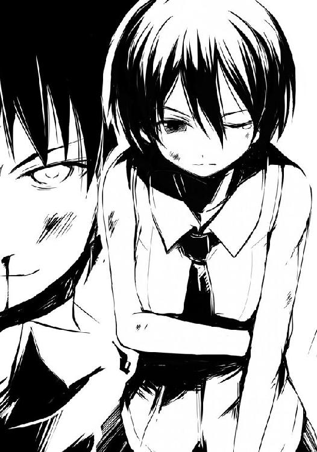
不思議な気分だった。弁当を奪うために僕の全てをかけようと決意したと同時に、彼女らは、きっと、それすら打ち砕いてくれると信じる自分がいる。
笑みが浮かぶ。ためらいなく人であることを捨てようと決めた自分への畏怖と、真っ直ぐに僕を見つめてくる真希乃の瞳にどこか楽しさを覚えてしまう。手が震えた。そして、燃えるような空腹が胃袋の中でジリジリとその勢いを増していく。肺一杯に、息を吸った。
「行くぞ、ギリー・ドゥー!!」
「はい！」
自分の中で何かが爆発する。拳を固めて僕は突っこむ。肌での周囲への警戒を捨て、視界のみでギリー・ドゥーを捉える。彼女も迫る。そこへまず一撃。ギリー・ドゥーは気配を一瞬消すも、無駄だと悟ったのか再び気配を発し、拳で応じる。ドンッと衝撃波。ビリビリと空気が震え、体の芯も震えた。体格では僕の方がずっと上をいっているのに、勢いは相殺される。さらに一撃、さらに、さらに、さらに拳を放っていく。全て、拳で応じられる。
僕の拳には筋力と腹の虫の加護がある。だが、彼女のこの拳には腹の虫の加護とともに、もう一つ何か違うものが込められているような感じを、僕は受けた。それはどこか......そう、かつて喰らった槍水先輩の拳に似ていた。
埒が明かないと判断した僕は間合いを詰める。ギリー・ドゥーは気配を消しつつ僕の顔に横薙ぎの手刀。僕はこれをかわし、彼女の懐に飛び込んだ......その瞬間、今の手刀はフェイクだと、突発的に発せられた彼女の気配と殺気、そして何より脇腹に突き刺さる膝蹴りで知れた。
彼女は攻撃する瞬間だけは気配を消せない。それが確認できただけで、御の字だ。
ギリー・ドゥーは膝蹴りから続けて掌底を放とうとする。僕はこれを横に拳で弾き、空いた彼女の胸元へタックルを仕掛ける。体重の軽いギリー・ドゥーは吹っ飛び一度転倒するも、すぐさま立ち上がり、構え、僕に弁当のもとへ行かせる隙は作らない。
ドンっという一際大きな花火の音とともに、僕らは再び相手に向かって踏み切った。
ギリー・ドゥーの蹴り。気配はない。フェイクだ。僕は蹴りを無視して、彼女に拳を放つ。
その攻撃が予想外だったのか、彼女は慌ててガードを取るもどこか緩い。僕の拳の一撃でそのガードを弾き、がら空きになった彼女の顔面へ蹴り。だが、仰け反られてかわされた。
すぐさま体勢を立て直したギリー・ドゥーは身を低くし、僕の横手へ回り込もうとする。こちらの視界から外れようというのだ。
だが、そうはさせない。僕は蹴りの勢いを殺し、すぐさま裏拳を放つ。彼女の側頭部に入る。だが、同時に、僕の横腹に蹴りが叩き込まれた。
僕は肺の中の空気が絞り出されて呻きすら上げられないが、同時にギリー・ドゥーも頭に喰らってフラついた。僕たちは互いに至近距離で睨み合い、歯を喰い縛る。
「「......っぅおおおぉおぉおお!!」」
一瞬の間の後、その状態から、僕たちは雄叫びを上げて互いの額に頭突きを放った。
二人してよろめき、数歩離れる。それでも視線だけは、お互いの瞳からは外さない。
「ははっ......はは......凄いな。何だコレ、何だよ、凄いな」
僕は痛む額を押さえながら、喘ぐように言った。凄い、と本当に思ったのだ。見事なまでの難易度調整されたゲームのラストステージのようだ。勝てそうな気がすると同時に、負けそうな気がするのだ。その二つが、強烈に僕の胸の内で交差し、混ざり合い、わけのわからない高揚感を生んでいた。スリリングという言葉の一歩向こう側。緊張と興奮に、手が震えてくる。
僕らの間を、息を荒らげる淡雪が必死に弁当を目指し、這っていく。意識が回復してきているのか、その動きははっきりしてきており、あと十数秒で弁当に手を達せられるだろう。
「えりか、あと、よろしくね」
ギリー・ドゥーはそう呟くと僕に目で語る。次で最後だと。捨て身で相打ちを狙ってくる気だとそれで知れた。意識を伝えてくるということは自信があるのか。いや、違う。僕の余裕を削ろうというのだ。自分に全ての意識を向けさせて、淡雪を攻撃させまいとしているのだ。
そこまでするか、と僕はまた微笑んだ。さっき、共に戦っていた時とは別人のような彼女の姿がたまらなく眩しかった。倒したいと思うと同時に、倒されたいと思う。わけのわからない感覚に、もう、ただ、笑うしかなかった。
合図も何もなく、僕らは駆けた。ギリー・ドゥーはもう気配を消そうとしない。本当に持てるもの全てを出してきている。ならば、僕はそれ以上のもので応じるまでだ。
拳を打ち合わせる。相殺、いや、少し僕が負ける。二撃目、明らかに押される。三撃目、それがより顕著になる。四撃目は僕は真っ正面から受けず、掌底で上に弾き、空いたギリー・ドゥーの脇へ全力で蹴りを放とうとするも後ろへ彼女は飛び退く。
彼女は着地と同時に再び僕に向かって突っ込んでくる。僕の顔面への拳。全力の蹴りが外れたせいで、バランスを崩した僕にそれをかわすことはできず、両腕を顔の前に出して防ごうとするのだが......その瞬間、彼女の気配が消え失せる。ガードした腕への衝撃もない。慌ててガードを解いて視界を確保するも、彼女の姿がない。
次に彼女の気配を感じた時、それは僕の後ろにあった。気迫と拳をフェイクにして回り込まられたのだ。背後から拳が来る。身を捻るがかわしきれず肩に喰らう。しかし、浅い。
しまった、という顔を浮かべるギリー・ドゥーの腹に右の肘鉄、続けて顔に左の掌底。どれも浅いが彼女との距離を取るには十分だった。よろめきながら数歩ギリー・ドゥーが離れる。
咳き込む彼女を尻目に、淡雪を見る。もう数秒で、獲られる。僕は舌打ちしつつ、淡雪に向かって走った。弁当を獲られまいとする気持ちと、まだ、こんなにも興奮する戦いを終わらせまいとする気持ちが混ざり合い、僕は蹴りを――
「えりか!!」
爆発しそうな気迫でギリー・ドゥーが一気に距離を詰めてくる。淡雪を殴りつければ次の瞬間負けると僕は判断、攻撃の対象をギリー・ドゥーに変える。
拳を放つ。弾かれた。大きな瞳が迫る。膝蹴りを放つ。入るも、彼女は構わず距離を詰めてくる。そして両手で僕の胸ぐらを掴むと、激烈な頭突き。目の前が真っ白になり、次の瞬間、赤くなる。二人の額が裂け、血が噴き出した。だが、彼女は構わず二撃目の頭突きを放ってくる。慌てて胸元の彼女の手を払いのけるが、それでもなお、喰らう。
よろめきながら僕は額に手を当て、離れる。赤く染まる視界の隅で、淡雪が陳列棚に手を伸ばしているのが見えた。止めたい、だが、鬼の形相で拳を振り上げ、迫り来るギリー・ドゥーはそれを許しはしないだろう。
「おぉぉぉおおお――――――――――――――!!」
らしくない雄叫びを上げ、ギリー・ドゥーが......迫る。
「......ははっ！」
思わず、笑った。短く、笑った。迫るギリー・ドゥーのその気迫、その覚悟、その力、自分の全てを捨ててまで淡雪を、そして半額弁当を求める彼女の姿が僕の中の何かを震わせる。
今、彼女からの攻撃をかわし、淡雪を止めることは今の僕なら可能かもしれない。だが......したくなかった。迫り来る彼女の拳から、逃げたくなかった。
だから......受けて立ってやる！ これで決着だ！ 笑顔で、今ある力、そのありったけのものを込めて、額から溢れ出た血とともに、僕は拳を固める。
「これで！」
僕は叫びつつ、駆ける。持てる力の全てをかけた拳を思いっきり振り上げ......そして！
「最――」
拳を打ち放とうとする、まさにその時。ギリー・ドゥーの気配が......忽然と消える。
その瞬間、僕は自分の笑顔が固まるのを、まるで他人事のように感じていた。
●
著莪はブーブーと文句を言いながら花火を見上げていた。
一足先に広場に戻って花火を見上げていると槍水が月桂冠が収まるレジ袋を手にし、背中に白粉を担いで現れたのだが......何故かまだ花火ちらし寿司とやらを見せてくれない。聞けば、佐藤が来てからにしよう、との一点張りである。
それで、彼女はブーブー言っていた。不満を表すようにその手はテーブルにぐったりともたれかかる白粉の後ろ髪を、玩具でも弄るようにパタパタと動かしたり、引っ張ったりする。
白粉はピクリともしない。何でもサラマンダーという凄腕にかなり強烈な攻撃を喰らったのだという。槍水が白粉のためを思って買ってきたのもウィダーインゼリーであるところを見ると、恐らく腹部に喰らったのだろう。
「ねぇ、そのサラマンダーは結局、花火ちらし寿司を手に入れたの？」
槍水は疲れているのか、テーブルに頬杖ついたまま、著莪の方を見ることもなく応じる。
「あぁ、私とそいつが同時に三つ残ったうちの二つを獲り、あと一つを私の知らない狼が激戦の末に持っていったな」
ふーん、と著莪がやる気のない声を出していると、空に一際大きな花火が打ち上がった。ワンテンポ遅れての音と衝撃。腹の底がビリビリと震える。空腹のせいかもしれない。
「ん？ お、来たぞ、佐藤だ」
著莪が見やれば出血しているのか、左手を額に当てつつやってくる佐藤の姿。右手には......レジ袋があった。
何だか頼りない足取りで、思わず著莪は席を立って駆け寄る。手にしていた重いレジ袋を受け取り、大丈夫？ と佐藤を気遣いながら彼が席に座るまで肩を持ってやる。気のせいか、彼の右手は小刻みに震えているように見えた。また額には一応絆創膏が貼られていたが、裂傷があり、今も血が止まっていないようだ。ギリー・ドゥーさ、と佐藤はあえて真希乃の二つ名で呼んだ。線の細い真希乃に受けた傷にしては、深そうだ。
槍水が頬杖をやめ、佐藤を見つめる。
「......どうだった？」
佐藤は左手を額に当てたまま、空に打ち上げられる花火を一度見上げ、それから視線を槍水へと戻した。笑顔を浮かべて、彼は言う。
「負けました。完全に」
著莪は佐藤の対面の椅子に座り、レジ袋の中身を見る。
お湯の入ったどん兵衛と、お握り二つが、そこにあった。
●
淡雪は真希乃を支えているのか支えられているのか、わからないような状態で椅子に座り、空に打ち上がる花火を見上げた。スーパーの駐車場の脇にある、バス停のベンチだった。
「さぁ、食べましょう、真希乃」
真希乃は額にハンカチを当てながらいつもの笑顔で頷いた。いつも彼女が持っている絆創膏は全て佐藤にあげたのだ。ありがとう、と佐藤は言ったのだが......何故か真希乃もまたありがとうと言って返し、二人して笑っていた。
自分が必死に床を這っている間に二人にしかわからない何かがあったのだろうか。
淡雪は膝の上に置いた弁当の蓋を開けた。生物を使用しない五目ちらしだからこそできる電子レンジの使用、それによってほのかな温かみを持った、花火ちらし寿司である。
うわぁ、と真希乃が子供のような声を出す。去年も、一昨年も、蓋を開けた時には彼女はこんな声を出していた。しかしそれもわからないでもない。淡雪とて、生唾をゴクリと飲まなければ、同じように感嘆の声を出していたはずだ。
二重円構造の弁当容器。中心にちらし寿司、周りに様々なおかずが並ぶ。エビとエンドウマメの天ぷら、三種のカマボコ、タラの甘酢あんかけ、ひじきと大豆の煮物、ほうれん草の胡麻和え、揚げ出し豆腐、そして少し多めのガリ。これらの豊富なおかずがビッシリとちらし寿司の周りを囲み、華やかさを演出している。味が混じらないように薄いビニールの受け皿できちんと区切られている細やかさも見て取れた。
そして、中心を飾る美しい五目ちらし寿司。周りのおかずもそうだが、このちらし寿司でさえ、昨年とは趣が変わっていた。思わず、見とれそうになる。
「真希乃、先に食べなさいよ。真希乃が獲ったも同然なんだから」
そう言って箸を渡すも、真希乃の右手はかすかに震えていて、とてもじゃないがまともに食べられる状態ではなかった。
当然か、と淡雪は思う。佐藤と真希乃の戦いは、淡雪はほとんど見ていなかったが、最後の最後だけは弁当を手に入れつつ、見ることができた。
自分の意識が朦朧としている間にどれほどの攻防があったのかはわからない。けれど、一〇人以上の男女が倒れている中、声を上げながら戦う二人のさまはまるで命そのものを燃やしているかのような激しさだった。
最後、本当に、持てる全てをかけた佐藤の拳。しかし、真希乃はそれを受けず、かといって相打ちを狙うでもなく、彼女は気配を消して佐藤の左横手に回り込んだのだ。
驚愕して笑みを硬くした佐藤。そこに真希乃は拳を叩き込もうとした。だが、佐藤は全力をかけての一撃目の拳を外したというのに、踏ん張り、無理やりに体を捻り、真希乃の拳に向かって第二撃を放ってみせた。明らかに一撃目より威力が劣っていたそれではあったが、二人の拳がぶつかりあった瞬間、目の前で花火が上がったかと思うほどの音と衝撃波を生んだ。
一瞬相殺したかに見えたが、かすかに真希乃が上をいき、佐藤を吹き飛ばしたのだった。
もし一撃目を真っ向から真希乃が受けていたらどうなっていたか、想像しようとするも、すぐに淡雪はやめる。明らかに佐藤は最後、弁当よりも真希乃との勝負に意識を向けていた。真希乃との勝負しか見えなくなっていた。心、奪われたのだ。
あくまで最後まで弁当のため、それを手にしようとしている自分のために戦ってくれた真希乃が、あのスーパーマーケットという領域において負けるはずがなかったのだ。
「まったく、しょうがないわね、ホントわたしがいないとダメなんだから」
さっきまで床を這っていた自分が言うべき言葉じゃない、とそう思いつつも淡雪は箸で一口分のちらし寿司をすくうと真希乃の前に持っていく。彼女はアーンと大きな口をあけて、食べる。......うん！ と声。淡雪もまた、自分の分のちらし寿司を箸ですくう。
見れば見るほど、凄いちらし寿司である。上に乗っている具材は焼きアナゴ、小振りなエビ、カニ等に加え緑鮮やかなキヌサヤ。そして小さなサイコロ状の卵焼きがこれから食べようとする者の生唾を誘う。もちろん別途少量の錦糸卵が酢飯の上を飾っているが、それとは別に酢飯の上を正方形の小さい卵焼きが転がっているのだ。錦糸卵は多くの場合飾りの意味合いが強く、味わいを楽しむのは二の次だ。この卵焼きは手間こそ増えるが、材料は増えないのに一つ多くの味が加えられるというわけだ。また、見た目も楽しく、小さなサイコロ状という、普段はまず食べられないようなアレンジが淡雪は気に入った。
パクリと一口。その瞬間、山間を吹き抜ける風のような爽やかさが彼女を包んだ。酢飯だ。鰹と昆布の出汁の風味を伴う穏やかで優しい酸味。そこに加わるほのかな砂糖の甘味とかすかに感じるみりんのまろやかさは夏の風のよう。春の風のような早急さもなく、秋の風のような無情さもなく、冬の風ような厳しさもない......汗をそっと拭ってくれる山間に吹く、夏の風。
咀嚼すればサイコロ状の卵と酢飯に混ぜ込められているかんぴょうの甘味が顔を出し、椎茸の風味が続き、柔らかいニンジンの食感が躍る。そして少し大きめにカットされたレンコンのシャキシャキという気持ちのいい歯ごたえが酢飯の爽やかさを一層強調してくれる。
「「おいしい！」」
二人は言い、お互いの顔を見て、笑い合う。それから空に昇る花火を見、そして目前の美しい花火を模された弁当に視線を落とす。もう一口、今度は上に乗った具材と一緒にいく。
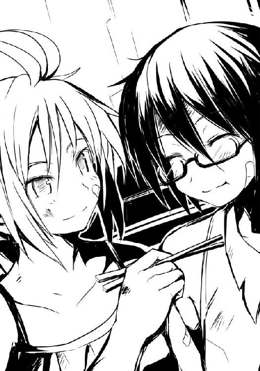
不思議な味。アナゴも、エビも、カニも、卵も、みなちゃんとした味がついているのに、どれもこれもが味を主張しているのに、不思議と味同士が喧嘩しない。それぞれの味をしっかりと感じられつつも、酢飯と混ざり、一体感が生まれていた。
淡雪たちは、空を見上げつつ、食べ進めていく。酢飯の周りを固めるおかずたちも、どれも付け合わせとしてのおざなりな味付けではなく、それぞれがしっかりと手間と力が込められた味わいで、時に単調になりがちな五目ちらし寿司を見た目とともに味もまた、華やかにした。一つおかずを食べれば花のような笑顔が生まれ、そしてその後にちらし寿司に戻れば不思議と一口目のような新鮮さを感じられるのだ。
淡雪一人が箸を持っているだけなのに、あっという間に花火ちらし寿司は姿を消した。もはや、その美しさは満足げな二人の笑顔と、口の中の余韻として残っているだけだ。
二人は互いを支え合うように、空の花火を見上げた。
ふと、真希乃の手がいまだに震えているのに、淡雪は気がつく。
淡雪は、手を伸ばした。そしてしっかりと掴み、握りしめる。その震えを止めるように。
「ねぇ、真希乃。教えなさいよ。......どうして、黙って進学先を決めたの？」
真希乃は最初いつもの困ったような笑顔を浮かべる。手が震えとは別にモジモジと動いていて、何か変だな、と淡雪は感じ取る。
いつもならこの段階で「はっきりしなさいよ」と怒っているところだが......今日は、今夜だけは、彼女が言葉を絞り出すまでずっと待とうと決めていた。朝までだって、待ってやる。
十数分が経過して、ようやく真希乃が胸の内を、言葉にしてくれる。
「その、えりかに、また褒めてほしいなって。それにいつも迷惑かけてばかりで、その、いつもえりかに甘えてばかりじゃ......悪いかなって。だから......その......いつも、一人でちゃんとできるようになれって言われているし......うんと......だから、そのえぇと......」
そういえば、自分が真希乃を褒めたのは水泳と弁当争奪戦ぐらいで、あとは何をやらせてもダメで、いつもグチグチ文句を言っていたっけ。どうしてこんなのも出来ないの、どうしてそんなふうにするの、どうしてわたしがいなければ何もできないの、もっとしっかりしなさい！ ......そんなことばかり言っていた自分に初めて気づき、初めて、恥じた。
「バカ真希乃」
ごめん、と真希乃は小さく俯いたまま言った。
「ホント、バカ。本気で迷惑だったらとっくにわたしから離れてるわよ」
「......でも、いつも......」
「それは......嫌いだから言っていたわけじゃなくて......その、むしろ逆で......あぁ、もう、わかるでしょ!? 察しなさいよ！」
淡雪は慌てる。そんな混乱しそうになる彼女の頭に著莪の言葉が過った。〝本当に深い部分で紡いだ関係なら、どんなに離れても、きっと関係ない〟それはきっと本心の全てを互いに伝え合うことだろう。嘘や、建て前や、常識や、そういう頭で考えたことじゃなく、胸の中にある裸の気持ちそのものを素直に相手に伝え、それでもなお相手が自分を拒否しないのなら......きっと......。淡雪は一度深呼吸し、意を決する。
「ねぇ、真希乃。これだけ、聞かせて。......わたしと一緒にいるのは嫌なの？ もし、今までわたしが言ってきたことも合わせて嫌だっていうなら、直すわ。もう言わない......だから......側にいてよ、側にいさせてよ」
今まで一度とて言ったことがないぐらい、強がりも何もかもを捨てた、自分の本心の言葉だった。花火のように大きく聞こえる鼓動。口から内臓が飛び出しそうだった。
真希乃は大きな瞳にかすかに潤みを持たせ、また、困ったように眉を八の字にして、笑った。震える手が、淡雪の手を握り返してくる。
「嫌じゃないよ、全然。それこそ、その逆だよ、えりか。......できればずっと......側にいてほしくって、それでダメなことをしたら叱ってほしいって思ってるし......あっ、でも出来るだけ迷惑かけないようにしっかりするから......だから......その......うんと......」
しどろもどろで、言葉に詰まる真希乃。さっきまでの勇ましい姿が嘘のようだ。淡雪は、しょうがないな、と溜息とともに少しだけ笑った。
「バカ、そこで言葉詰まらせちゃダメじゃないの。どうして――」
淡雪は思わず言って、はっとする。たった今、言わないと言ったばかりなのに......。
しかし真希乃はいつもの申し訳なさそうな、困ったような笑顔ではなく、頬を赤らめて照れるように笑う。淡雪の手を、そっと、グッと、真希乃が握ってくれる。
「今のも......嫌いの、逆、だから......？」
「......そ、そうよ、その通りよ！」
顔が熱くなる。赤くなったかもしれない、でもきっとそれは花火のせいだ、きっとそうだ。淡雪は意味もなく、自分に言い聞かせる。
「そっか」
真希乃はニッコリと笑った。
「......学校、変えようかな」
え？ と淡雪は真希乃の顔を見る。真希乃は少し不安げな笑顔で俯いていた。
「えりかと同じがいい。えりかが......それでもいいって、言ってくれたら......だけど」
真希乃は彼女の方が身長が高いくせに、上目遣いで淡雪を見てくる。そのさまはまるで大きな犬が主人に褒めてほしそうにしている姿に見えて、思わず淡雪も苦笑した。
「ダメよ真希乃。せっかくのチャンスじゃない、それを棒に振るなんて本当にバカよ、バカ」
で、でも！ と真希乃が珍しく慌てて顔を上げる。そこで初めて淡雪は笑い、真希乃の頭に手を伸ばして、撫でた。真希乃は意味がわからずおどおどとしているのだが、そのさまが無性に可愛らしく見える。
「大丈夫よ、わたしたちは離れないわ。多分ね」
本当は前々から考えていた計画が、淡雪にはあった。でも、それを真希乃に言うのは酷く恥ずかしく、悔しかった。彼女は自分を裏切ろうとしている、今までそう思っていたのだ。
真希乃にスポーツ特待生の誘いが来た時、実は淡雪はすぐに教師から聞かされていた。だから、真希乃がそのことを相談してきたら驚かせてやろうと密かに企てていたことがあったのだが......彼女は淡雪のもとに相談に来ず、密かに誘いを受けてしまったのだ。
全ては、あの時から始まった。お互いに相手のことを想っていたのに、変な気遣いと変な思い過ごしが、軋轢を生んだ。それは落ち着いて本心を語り合えば簡単に消え去るもので、むしろ二人の間をより強めてくれるものだったのに......今の今までそうすることができなかった
淡雪はただ一言欲しかったのだ。一緒にいてほしい。そう言われればいつものように、仕方ないな、と淡雪は微笑むことができた。ただ......真希乃は、淡雪が思っている以上に一生懸命に頑張り、一生懸命に成長しようとしていた。それに、気がついてあげられなかった。
もし今回の花火大会の半額弁当争奪戦にあのＨＰ同好会のメンバーが来なかったら、自分たちはどうなっていたのか。淡雪は恐怖のあまり、考えるのを辞めた。
淡雪は握られた手を、また強く握り返す。しばし見つめ合った後、一際大きく、連続する音に二人して空を見上げた。花火大会のフィナーレだった。ドンドンドドンと連続する大きな音と振動に心臓が震える。胸が押しつけつけられるように苦しくなる。
それは多分、花火のせいだけじゃないんだろうな、と淡雪は真希乃の手を握りながら、ぼんやりと考えていた。
１
寝て起きたら、全身が酷く痛んだ。昨夜は興奮していたからか、それほど気にならなかったが今は全身がガタガタだ。
「おい、佐藤、ふらついているぞ、本当に大丈夫か？ 何なら荷物ぐらい......」
僕は苦笑しながら、先輩の優しい申し出を丁重に断った。
「どうせなら、白粉の方をお願いします」
白粉も昨夜の戦いに加え、食事をウィダーインゼリーがしか口にしていないせいもあってか、フラフラである。槍水先輩は、そうだな、と苦笑して白粉の鞄を持ってあげた。
「佐藤佐藤、これ！ パパにこれ買っていこう！」
青空の下、一人元気な著莪が、駅前の微妙な商店街に並んでいる変なシャツに喰いついていた。僕の名を呼ぶということは......多分人の財布を当てにしているんだろうが、何が悲しくて胸元に大きく『ロリコン』と書かれたシャツに金を使わねばならないのか。無視してやった。
「......ッチ。ノリ悪いなぁ。じゃ、こっちの『変態』シャツをアタシが佐藤に奢ってやるよ」
「いらないってのそんなの！」
先輩が苦笑する。その時手ぶらでも未だフラフラとしている白粉が僕に寄り掛かってくる。
......こいつ、体調が悪いのかと思えば......違う。単にうつらうつら居眠りしていやがる。朝が弱いだけだ。ビシッとデコピンすると、へ？ と額をさすりつつ左右を確認し始める。
「遊んでないで行くぞ。電車に遅れる。これを逃したら昼過ぎまでないんだからな」
先輩を先頭にして駅へと向かう僕ら。駅前には昨夜スーパーで見かけた狼がチラホラ。皆、僕らに視線を向けても声をかけてくることはない。僕らもまた、視線でチラリと応じてやる。睨みを利かせたままの者、または視線が合うとフッと口元に笑みを作ってくれる者......様々だった。彼らとはまたきっと、どこかのスーパーで出くわすことになるのだろう。
その時、僕は彼らを、そして彼らは僕を、憶えているのだろうか。
「みなさん、おはようございます。良い旅立ちの朝ですね」
いきなり大きな声をかけてきたのは、二人して傷だらけの淡雪と真希乃だ。淡雪は手に大きな包みを持ってのいつもの営業スマイルに、真希乃は真希乃でいつものニコニコ笑顔だ。
「おはよう淡雪。今朝はどしたの？ ロッジを出ようとしたら髭のオッサンがいて驚いたよ」
今朝方、ロッジをチェックアウトする時間になった際、髭面の厳ついオッサンが現れたのだ。最初、人里離れた場所ではお馴染みの猟奇殺人的なアレかとも思ったが、話を聞くと淡雪の父親だという。ビックリするぐらい似ていなかった。
「いえ、今朝はちょっと用事がありましたもので、父に行ってもらったんです。父はあぁいう顔なので、よく驚かせてしまうんですよ」
初めて会った時のような、営業トーク。しかし、その目は少し最初の頃とは違うように見える。どこか、柔らかいのだ。
「もうすぐ電車が来る頃かと思いますので、ご案内します」
教科書通りの丁寧な対応である。ぶっちゃけ迷いようのないぐらい閑散とした駅なのだが、僕らは最後まで旅行気分を味わうように彼女に任せた。
到着した電車のボックスシートに僕らは座る。白粉が席につくなり早速居眠りを始め、著莪は著莪で窓を開け、車両の外にいる淡雪と雑談し始める。
真希乃が時折視線を向けてくるので、見つめ返す。二人して、声を出さずに笑い合った。
「ところでさ、最後だからストレートに訊くけど、どうだった？」
著莪のよくわからない質問に、淡雪は少し答えにくそうにして一度真希乃を見て、笑う。
「わたしも、真希乃と同じ学校に行こうと思います。成績微妙ですけど、挑戦するだけしてみようかな、と。実は......前々から、ちょっと考えてはいたんです」
そっか、と著莪は笑うのだが......アレ？ と僕は思い、思わず口を挟んだ。
「進学で二人、揉めてたんじゃなかったっけ？ 一緒に行けるならなんで......」
こつん、と著莪にゲンコツされる。
「バーカ。行けるかどうかじゃないんだよ。佐藤にはちょっと難しいから隣の車両でアバババって言ってなさい」
ジリリリリっと発車のベル。車両から離れてください、と車掌のアナウンス。
慌てて淡雪は大きな包みを窓から押し込んできた。
「あ、あの、お渡しするタイミングを逃しましたが、コレ良かったら車中で食べてください」
なに、コレ？ と著莪は言うが、見ればわかります、と淡雪は笑顔で応じた。
「そう？ ......あ、ちょっと待って、最後に教えてよ。関東だっけ、どこの学校？ 近かったら来年、遊びに行くよ」
えっと、と真希乃は困ったような笑顔で淡雪に視線を送る。バカ、何で自分の進学する学校忘れてるのよ、と淡雪が叱りつけた。真希乃の代わりに、淡雪が著莪に顔を向ける。
「丸富大学付属高校です」
一瞬、その淡雪の言葉に全員の時が止まる。そんな中、魔法少女は世の中に結構いるもんだなぁ、と僕はぼんやりと考えていた。
直後、プッと吹き出した著莪をきっかけに、僕らは笑った。何故笑われているのか、淡雪たちはわからず、きょとんしていた。
「そっかそっか。そんじゃ、来年かわいい後輩が二人できるってことで。それじゃ半年後ぐらいに。待ってるよ、またね」
「え？ それって、どういう......ちょ、ちょっと待ってください！」
電車が走り出す。窓際の著莪と先輩が窓から手を振り、呆然とする二人と、かの土地に僕らは別れを告げた。何だかやたらと一方的な別れだった。
「うわー、最後の最後でサプライズだ〜」
あはは、と著莪は笑いつつ、最後に貰った包みを解いていく。
「そういや、ウチっていろいろやっていたもんなぁ。プールとかもやたら気合い入って改装していたみたいだし。......さて、これはなんだろな、っと」
「なんだ、著莪。わからないのか？」
フフン、と先ほどからあまり口を開いていなかった先輩が得意げに言う。
「私は香りでとっくに気がついていたぞ。......少し早いが、折角だ、いただいてしまおう。この季節じゃいろいろ不安もあるしな」
先輩が著莪の手から包みを受け取ると、四段重ねの容器が現れる。それは......。
「わっ、ちらし寿司だ」
そう、それは寿司用の容器なのだ。中に入っていたのは淡雪と真希乃の手作りと思しき、五目ちらし寿司。高価な具材とかはないが、厚みがバラバラの錦糸卵や海苔、茹でエビなどが載せられている。具材を綺麗に飾ったのだろうが最後に窓から押し込むようにして入れてしまったがためにちょっと崩れてしまっているのが、僕らの笑顔を誘った。
僕は早速、包みに一緒に入っていた割り箸を配り始める。先輩は二日連続ちらし寿司だけどいいのかな、と思ったものの、颯爽と割り箸を割っているさまを見て、僕は安心して白粉の額に割り箸を突き立てる。「ひぐっ！」とおかしな声を上げてさすがの彼女も起きてくれた。
膝の上にちらし寿司を載せて、僕もまた割り箸を割る。
ふと、昨日そして一昨日の出来事が一瞬めまいを覚えるほどの勢いで脳裏を駆け抜けた。
駅で、電車で、川で、祭りで、スーパーで、ロッジで、笑い合ったこと、幾人もの狼の顔、幾発もの拳の痛み、そして真希乃との戦いのこと......最後の最後で、僕は弁当ではなく真希乃との決着に心を向けたが故の敗北の味さえ、一瞬にして僕の脳裏を駆け抜ける。
いい合宿だったな、と僕は一人、笑う。箸を持つ手に、自然と力が入った。
「よし、それじゃ！」
先輩の声とともに、僕らはパチンと音を立てて手を合わせる。
「「「「いただきます!!」」」」
車内に僕らの大きな声が、木霊した。
〈了〉
著者紹介
アサウラ
１９８４年生まれ。北海道出身。東京在住。
大学在学中に第５回スーパーダッシュ小説新人賞に応募した「黄色い花の紅」で大賞を受賞、デビュー。
「ベン・トー」シリーズが「このライトノベルがすごい！ ２０１１」（宝島社）で第５位にランクインし、大ブレイク。
柴乃櫂人（しばの・かいと）
１９８１年生まれ。大阪出身。東京在住。
ゲーム会社に所属しニンテンドーＤＳの大ヒットＲＰＧ「ルミナスアーク」などのキャラクターデザインを手がけたのち、フリーに。
「ベン・トー」シリーズのコミカライズで漫画家デビューも果たす。
集英社ｅスーパーダッシュ文庫
ベン・トー ４
花火ちらし寿司３０５円
著者 アサウラ
(C) ASAURA 2012
２０１２年１月５日発行
この電子書籍は、集英社スーパーダッシュ文庫「ベン・トー ４ 花火ちらし寿司３０５円」
２０１１年７月27日発行の第11刷を底本としています。
発行者 鈴木晴彦
発行所 株式会社 集英社
東京都千代田区一ツ橋２丁目５番10号
〒１０１−８０５０
［電話］
０３−３２３９−５２６３（編集部）
０３−３２３０−６３９３（販売部）
０３−３２３０−６０８０（読者係）
制作所 株式会社デジタルディレクターズ
本作品の全部また一部を無断で複製、転載、改竄、インターネット上に掲載すること、および有償無償に関わらず、本データを第三者に譲渡することを禁じます。なお個人利用の目的であっても、コピーガードを解除しての複製は、法律で禁じられています。